IRCRE Scientific Output
721+ Publications & 28002+ Citations since 2011
Top 15 Most Cited Articles
-
Yasuhiro Tachibana*, Lionel Vayssieres*, James R. Durrant, “Artificial
photosynthesis
for solar water splitting”, Nature Photonics 2012,
6(8), 511-518
Cited: 1573
(IF 2020: 38.771)
http://www.nature.com/nphoton/journal/v6/n8/abs/nphoton.2012.175.html
-
 Jinzhan Su, Liejin
Guo*, Ningzhong Bao, Craig A. Grimes*,
“Nanostructured WO3/BiVO4 heterojunction films for
efficient photoelectrochemical water splitting”, Nano
Letters 2011, 11(5), 1928-1933
Jinzhan Su, Liejin
Guo*, Ningzhong Bao, Craig A. Grimes*,
“Nanostructured WO3/BiVO4 heterojunction films for
efficient photoelectrochemical water splitting”, Nano
Letters 2011, 11(5), 1928-1933
http://pubs.acs.org/doi/abs/10.1021/nl2000743 Cited: 956(IF 2020: 11.189) -
 Jinzhan Su, Xinjian Feng, Jennifer D.
Sloppy, Liejin Guo, Craig A. Grimes*, “Vertically Aligned
WO3 Nanowire Arrays Grown Directly on Transparent Conducting Oxide Coated Glass:
Synthesis and Photoelectrochemical Properties”, Nano
Letters 2011, 11(1), 203-208 Cited: 543(IF 2020: 11.189)
Jinzhan Su, Xinjian Feng, Jennifer D.
Sloppy, Liejin Guo, Craig A. Grimes*, “Vertically Aligned
WO3 Nanowire Arrays Grown Directly on Transparent Conducting Oxide Coated Glass:
Synthesis and Photoelectrochemical Properties”, Nano
Letters 2011, 11(1), 203-208 Cited: 543(IF 2020: 11.189)
http://pubs.acs.org/doi/abs/10.1021/nl1034573 -
Zhaohui Xiao, Yu Wang, Yu-Cheng Huang, Zengxi Wei, Chung-Li Dong*,
Jianmin Ma, Shaohua Shen, Yafei Li*, Shuangyin Wang*, “Filling the
oxygen vacancies in Co3O4 with phosphorus: an ultra-efficient electrocatalyst
for overall water splitting”, Energy & Environmental
Science 2017, 10(12), 2563-2569 Cited: 509(IF
2020: 38.532)
http://pubs.rsc.org/en/Content/ArticleLanding/2017/EE/C7EE01917C#!divAbstract -
 Mingtao
Li, Lipeng Zhang, Quan Xu, Jianbing Niu, Zhenhai Xia*, “N-doped
graphene as catalysts for oxygen reduction and oxygen evolution reactions: Theoretical
considerations”, Journal of Catalysis 2014, 314,
66-72 Cited: 407 (IF 2020: 7.920)
Mingtao
Li, Lipeng Zhang, Quan Xu, Jianbing Niu, Zhenhai Xia*, “N-doped
graphene as catalysts for oxygen reduction and oxygen evolution reactions: Theoretical
considerations”, Journal of Catalysis 2014, 314,
66-72 Cited: 407 (IF 2020: 7.920)
http://www.sciencedirect.com/science/article/pii/S0021951714000736 -
Kai Zhang, Liejin
Guo*,
“Metal sulphide semiconductors for photocatalytic hydrogen production”,
Catalysis Science & Technology 2013, 3(7),
1672-1690 Cited: 396 (IF 2020: 6.119)
http://pubs.rsc.org/en/content/articlelanding/2013/cy/c3cy00018d -
 Zhenghang Zhao, Mingtao Li, Lipeng Zhang, Liming Dai,
Zhenhai Xia*, “Design Principles for Heteroatom-Doped Carbon Nanomaterials
as Highly Efficient Catalysts for Fuel Cells and Metal–Air Batteries”, Advanced
Materials 2015, 27(43), 6834-6840 Cited: 365(IF 2020: 30.849)
Zhenghang Zhao, Mingtao Li, Lipeng Zhang, Liming Dai,
Zhenhai Xia*, “Design Principles for Heteroatom-Doped Carbon Nanomaterials
as Highly Efficient Catalysts for Fuel Cells and Metal–Air Batteries”, Advanced
Materials 2015, 27(43), 6834-6840 Cited: 365(IF 2020: 30.849)
http://onlinelibrary.wiley.com/doi/10.1002/adma.201503211/full -
Lipeng Zhang, Jianbing
Niu, Mingtao Li, Zhenhai Xia*, “Catalytic Mechanisms of
Sulfur-Doped Graphene as Efficient Oxygen Reduction Reaction Catalysts for Fuel Cells”,
Journal of Physical Chemistry C 2014, 118(7), 3545-3553 Cited: 337(IF 2020: 4.126)
http://pubs.acs.org/doi/abs/10.1021/jp410501u -
Shaohua
Shen*, Sarah A. Lindley, Xiangyan Chen, Jin Z. Zhang*,
“Hematite Heterostructures for Photoelectrochemical Water Splitting: Rational
Materials Design and Charge Carrier Dynamics”, Energy & Environmental
Science 2016, 9(9), 2744-2775 Cited: 313(IF
2020: 38.532)
http://pubs.rsc.org/en/content/articlelanding/2016/ee/c6ee01845a -
 Ke Sun, Shaohua
Shen*, Yongqi Liang, Paul E. Burrows, Samuel S. Mao*, Deli
Wang*, “Enabling Silicon for Solar Fuel
Production”, Chemical Reviews 2014, 114(17), 8662-8719
Cited: 298(IF 2020: 60.622)
Ke Sun, Shaohua
Shen*, Yongqi Liang, Paul E. Burrows, Samuel S. Mao*, Deli
Wang*, “Enabling Silicon for Solar Fuel
Production”, Chemical Reviews 2014, 114(17), 8662-8719
Cited: 298(IF 2020: 60.622)
http://pubs.acs.org/doi/abs/10.1021/cr300459q -
Yang Yang, Lianna Dang, Melinda J. Shearer, Hongyuan Sheng,
Wenjie Li, Jie Chen, Peng Xiao, Yunhuai Zhang, Robert J. Hamers, Song Jin*,
“Highly Active Trimetallic NiFeCr Layered Double Hydroxide Electrocatalysts for Oxygen
Evolution Reaction”, Advanced Energy Materials 2018,
8(15), 1703189 Cited: 291(IF 2020: 29.368)
http://onlinelibrary.wiley.com/doi/10.1002/aenm.201703189/full -
Xiaohu Xia, Shuifen Xie,
Maochang Liu, Hsin-Chieh Peng, Ning Lu, Jinguo Wang, Moon J. Kim, Younan Xia*,
“On the role of surface diffusion in determining the shape or morphology of noble-metal
nanocrystals”, Proceedings of the National Academy of Sciences
2013, 110(17), 6669-6673 Cited: 285(IF 2020: 11.205)
http://www.pnas.org/content/110/17/6669.full -
 Maochang Liu, Lianzhou Wang,
Gaoqing (Max) Lu, Xiangdong Yao*, Liejin Guo*,
“Twins in Cd1−xZnxS solid solution: Highly
efficient photocatalyst for hydrogen generation from water”, Energy &
Environmental Science 2011, 4(4),
1372-1378 Cited: 275(IF 2020: 38.532)
Maochang Liu, Lianzhou Wang,
Gaoqing (Max) Lu, Xiangdong Yao*, Liejin Guo*,
“Twins in Cd1−xZnxS solid solution: Highly
efficient photocatalyst for hydrogen generation from water”, Energy &
Environmental Science 2011, 4(4),
1372-1378 Cited: 275(IF 2020: 38.532)
http://pubs.rsc.org/en/content/articlelanding/2011/ee/c0ee00604a# -
 Jie Chen,
Shaohua Shen*, Penghui Guo, Meng Wang, Po
Wu, Xixi Wang, Liejin Guo*, “In-situ
Reduction Synthesis of Nano-sized Cu2O Particles Modifying
g-C3N4 for Enhanced Photocatalytic
Hydrogen Production”, Applied Catalysis B:
Environmental 2014, 152-153,
335-341 Cited: 273 (IF 2020: 19.503)
Jie Chen,
Shaohua Shen*, Penghui Guo, Meng Wang, Po
Wu, Xixi Wang, Liejin Guo*, “In-situ
Reduction Synthesis of Nano-sized Cu2O Particles Modifying
g-C3N4 for Enhanced Photocatalytic
Hydrogen Production”, Applied Catalysis B:
Environmental 2014, 152-153,
335-341 Cited: 273 (IF 2020: 19.503)
http://www.sciencedirect.com/science/article/pii/S0926337314000678 -
Shuo
Dou, Chung-Li Dong, Zhe Hu, Yu-Cheng Huang, Jeng-lung Chen, Li Tao, Dafeng Yan, Dawei Chen, Shaohua
Shen*, Shulei Chou*, Shuangyin Wang*, “Atomic-Scale CoOx Species
in Metal–Organic Frameworks for Oxygen Evolution Reaction”, Advanced Functional
Materials 2017, 27(36), 1702546 Cited: 270(IF 2020: 18.808)
http://onlinelibrary.wiley.com/doi/10.1002/adfm.201702546/full
Articles (689)
h-index = 80, i10-index = 465, Citations/Paper = 40.64, Journals = 188, Average IF = 8.107, ESI Highly Cited = 28sorted by Impact Factor (2020 Journal Citation Reports®, Clarivate Analytics), citations from Google Scholar, CrossRef, SciFinder, Scopus...
-
Yongping Fu, Haiming Zhu,
Jie Chen, Matthew P. Hautzinger, X.-Y. Zhu, Song Jin*, “Metal halide
perovskite nanostructures for optoelectronic applications and the study of physical
properties”, Nature Reviews Materials 2019, 4,
169-188
Cited: 270(IF 2020: 66.308) https://www.nature.com/articles/s41578-019-0080-9 -
Maochang
Liu*, Yubin Chen, Jinzhan Su, Jinwen
Shi, Xixi Wang, Liejin Guo*, “Photocatalytic
Hydrogen Production Using Twinned Nanocrystals and an Unanchored NiSx Co-catalyst”, Nature
Energy 2016, 1, 16151
Cited: 206 (IF 2020: 60.858) http://www.nature.com/articles/nenergy2016151 -
Daming Zhao, Yiqing Wang, Chung-Li Dong, Yu-Cheng Huang, Jie Chen, Fei Xue, Shaohua Shen*, Liejin Guo, “Boron-doped nitrogen-deficient carbon nitride-based Z-scheme heterostructures for photocatalytic overall water splitting”, Nature Energy 2021, 6(4), 388–397
Cited: 25 (IF 2020: 60.858) https://www.nature.com/articles/s41560-021-00795-9 -
Ke Sun, Shaohua
Shen*, Yongqi Liang, Paul E. Burrows, Samuel S. Mao*, Deli
Wang*, “Enabling Silicon for Solar Fuel
Production”, Chemical Reviews 2014, 114(17), 8662-8719
Cited: 298(IF 2020: 60.622)
http://pubs.acs.org/doi/abs/10.1021/cr300459q -
Shaohua
Shen*, Jie Chen, Meng Wang, Xia Sheng, Xiangyan
Chen, Xinjian Feng*, Samuel S. Mao*, “Titanium dioxide nanostructures for
photoelectrochemical applications”, Progress in Materials
Science 2018, 98, 299-385 Cited: 141(IF
2020: 39.580)
https://www.sciencedirect.com/science/article/pii/S0079642518300744 -
Yasuhiro Tachibana*,
Lionel Vayssieres*, James R. Durrant, “Artificial photosynthesis
for solar water splitting”, Nature Photonics 2012,
6(8), 511-518
Cited: 1573
(IF 2020: 38.771)
http://www.nature.com/nphoton/journal/v6/n8/abs/nphoton.2012.175.html
-
%202013%20cover.jpg) Samuel S. Mao*, Shaohua Shen,
“Hydrogen production: Catalysing artificial photosynthesis”, Nature
Photonics 2013, 7(12), 944-946
Cited: 53(IF 2020: 38.771)
Samuel S. Mao*, Shaohua Shen,
“Hydrogen production: Catalysing artificial photosynthesis”, Nature
Photonics 2013, 7(12), 944-946
Cited: 53(IF 2020: 38.771)
http://www.nature.com/nphoton/journal/v7/n12/full/nphoton.2013.326.html -
Zhaohui Xiao, Yu Wang, Yu-Cheng Huang, Zengxi Wei, Chung-Li Dong*,
Jianmin Ma, Shaohua Shen, Yafei Li*, Shuangyin Wang*, “Filling the
oxygen vacancies in Co3O4 with phosphorus: an ultra-efficient electrocatalyst
for overall water splitting”, Energy & Environmental
Science 2017, 10(12), 2563-2569 Cited: 509(IF
2020: 38.532)
http://pubs.rsc.org/en/Content/ArticleLanding/2017/EE/C7EE01917C#!divAbstract -
Shaohua
Shen*, Sarah A. Lindley, Xiangyan Chen, Jin Z. Zhang*,
“Hematite Heterostructures for Photoelectrochemical Water Splitting: Rational
Materials Design and Charge Carrier Dynamics”, Energy & Environmental
Science 2016, 9(9), 2744-2775 Cited: 313(IF
2020: 38.532)
http://pubs.rsc.org/en/content/articlelanding/2016/ee/c6ee01845a -
Maochang Liu, Lianzhou Wang,
Gaoqing (Max) Lu, Xiangdong Yao*, Liejin Guo*,
“Twins in Cd1−xZnxS solid solution: Highly
efficient photocatalyst for hydrogen generation from water”, Energy &
Environmental Science 2011, 4(4),
1372-1378 Cited: 275(IF 2020: 38.532)
http://pubs.rsc.org/en/content/articlelanding/2011/ee/c0ee00604a# -
 Coleman
X. Kronawitter, Lionel Vayssieres, Shaohua Shen, Leijin
Guo, Damon A. Wheeler, Jin Z. Zhang, Bonnie R. Antoun, Samuel
S. Mao*, “A perspective on solar-driven water splitting
with all-oxide hetero-nanostructures”, Energy & Environmental
Science 2011, 4(10), 3889-3899 Cited: 230(IF
2020: 38.532)
Coleman
X. Kronawitter, Lionel Vayssieres, Shaohua Shen, Leijin
Guo, Damon A. Wheeler, Jin Z. Zhang, Bonnie R. Antoun, Samuel
S. Mao*, “A perspective on solar-driven water splitting
with all-oxide hetero-nanostructures”, Energy & Environmental
Science 2011, 4(10), 3889-3899 Cited: 230(IF
2020: 38.532)
http://pubs.rsc.org/en/content/articlelanding/2011/ee/c1ee02186a -
Jianbing
Huang*, Shunquan Tan, Peter D. Lund, Huanping Zhou, “Impact of H2O
on organic–inorganic hybrid perovskite solar cells”, Energy & Environmental
Science 2017, 10(11), 2284-2311 Cited: 219(IF
2020: 38.532)
https://pubs.rsc.org/en/content/articlelanding/2017/ee/c7ee01674c#!divAbstract -
.jpg) Ke Sun, Namseok Park, Zhelin Sun, Jigang Zhou, Jian Wang, Xiaolu Pang, Shaohua
Shen, Sun Young Noh, Yi Jing, Sungho Jin, Paul K. L. Yu, Deli Wang*,
“Nickel oxide functionalized silicon for efficient photo-oxidation of water”, Energy
& Environmental Science 2012, 5(7), 7872-7877 Cited: 164(IF
2020: 38.532)
Ke Sun, Namseok Park, Zhelin Sun, Jigang Zhou, Jian Wang, Xiaolu Pang, Shaohua
Shen, Sun Young Noh, Yi Jing, Sungho Jin, Paul K. L. Yu, Deli Wang*,
“Nickel oxide functionalized silicon for efficient photo-oxidation of water”, Energy
& Environmental Science 2012, 5(7), 7872-7877 Cited: 164(IF
2020: 38.532)
http://pubs.rsc.org/en/content/articlelanding/2012/ee/c2ee21708b -
Coleman X.
Kronawitter, Ioannis Zegkinoglou, Shaohua Shen,
Peilin Liao, In-Sun Cho, Omar Zandi, Yi-Sheng Liu, Kourosh Lashgari, Gunnar Westin,
Jinghua Guo, Franz J. Himpsel, Emily A. Carter, Xiaolin Zheng, Thomas W. Hamann, Bruce E. Koel,
Samuel S. Mao*, Lionel Vayssieres*, “Titanium
Incorporation into Hematite Photoelectrodes: Theoretical Considerations and Experimental
Observations”, Energy & Environmental Science 2014,
7(10), 3100-3121 Cited: 104(IF
2020: 38.532)
http://pubs.rsc.org/en/content/articlelanding/2014/ee/c4ee01066c#!divAbstract -
Josua Vieten*,
Brendan Bulfin, Patrick Huck, Matthew Horton, Dorottya Guban, Liya Zhu, Youjun
Lu, Kristin A. Persson, Martin Roeb, Christian Sattler, “Materials design of
perovskite solid solutions for thermochemical applications”, Energy &
Environmental Science 2019, 12(4), 1369-1384 Cited: 51(IF
2020: 38.532)
https://pubs.rsc.org/en/Content/ArticleLanding/2019/EE/C9EE00085B#!divAbstract -
Zhenghang Zhao, Mingtao Li, Lipeng Zhang, Liming Dai,
Zhenhai Xia*, “Design Principles for Heteroatom-Doped Carbon Nanomaterials
as Highly Efficient Catalysts for Fuel Cells and Metal–Air Batteries”, Advanced
Materials 2015, 27(43), 6834-6840 Cited: 365(IF 2020: 30.849)
http://onlinelibrary.wiley.com/doi/10.1002/adma.201503211/full -
Daming Zhao,
Chung-Li Dong, Bin Wang, Chao Chen, Yu-Cheng Huang, Zhidan Diao,
Shuzhou Li, Liejin Guo, Shaohua Shen*, “Synergy of Dopants
and Defects in Graphitic Carbon Nitride with Exceptionally Modulated Band Structures for Efficient
Photocatalytic Oxygen Evolution”, Advanced Materials 2019, 31(43),
1903545 Cited: 155(IF 2020: 30.849)
https://onlinelibrary.wiley.com/doi/abs/10.1002/adma.201903545 -
Xuecheng
Yan, Yi Jia, Jie Chen, Zhonghua Zhu, Xiangdong Yao*, “Defective-Activated-Carbon-Supported
Mn–Co Nanoparticles as a Highly Efficient Electrocatalyst for Oxygen Reduction”, Advanced
Materials 2016, 28(39), 8771-8778 Cited: 131(IF 2020: 30.849)
http://onlinelibrary.wiley.com/doi/10.1002/adma.201601651/full -
Jie Chen, Chung-Li
Dong, Daming Zhao, Yu-Cheng Huang, Xixi Wang, Leith Samad, Lianna
Dang, Melinda Shearer, Shaohua Shen*, Liejin Guo, “Molecular
Design of Polymer Heterojunctions for Efficient Solar–Hydrogen Conversion”, Advanced
Materials 2017, 29(21), 1606198 Cited: 123(IF 2020: 30.849)
http://onlinelibrary.wiley.com/doi/10.1002/adma.201606198/full -
Md
Golam Kibria, Ruimin Qiao, Wanli Yang, Idris Boukahil, Xianghua Kong, Faqrul Alam Chowdhury, Michel
L. Trudeau, Wei Ji, Hong Guo, Franz J. Himpsel*, Lionel Vayssieres*, Zetian Mi*,
“Atomic-scale origin of long term stability and high performance of p-GaN nanowire-arrays
for photocatalytic overall pure water splitting”, Advanced Materials
2016, 28(38), 8388-8397 Cited: 89(IF 2020: 30.849)
http://onlinelibrary.wiley.com/doi/10.1002/adma.201602274/full -
Linzhou
Zhuang, Yi Jia, Hongli Liu, Xin Wang, Rosalie K. Hocking, Hongwei Liu, Jun Chen, Lei Ge, Longzhou
Zhang, Mengran Li, Chung-Li Dong, Yu-Cheng Huang, Shaohua Shen, Dongjiang Yang,
Zhonghua Zhu*, Xiangdong Yao*, “Defect‐Induced Pt–Co–Se Coordinated Sites with Highly
Asymmetrical Electronic Distribution for Boosting Oxygen‐Involving Electrocatalysis”, Advanced
Materials 2019, 31(4), 1805581 Cited: 71(IF 2020: 30.849)
https://onlinelibrary.wiley.com/doi/full/10.1002/adma.201805581 - Youjun Lu*，Liya Zhu，Christos
Agrafiotis*，Josua Vieten，Martin Roeb，Christian Sattler, “Solar fuels production: Two-step
thermochemical cycles with cerium-based oxides”, Progress in Energy and Combustion
Science 2019, 75, 100785 Cited: 50(IF 2020: 29.394)
https://www.sciencedirect.com/science/article/pii/S036012851830131X -
Yang Yang, Lianna Dang, Melinda J. Shearer, Hongyuan Sheng,
Wenjie Li, Jie Chen, Peng Xiao, Yunhuai Zhang, Robert J. Hamers, Song Jin*,
“Highly Active Trimetallic NiFeCr Layered Double Hydroxide Electrocatalysts for Oxygen
Evolution Reaction”, Advanced Energy Materials 2018,
8(15), 1703189 Cited: 291(IF 2020: 29.368)
http://onlinelibrary.wiley.com/doi/10.1002/aenm.201703189/full -
Fujun
Niu, Degao Wang, Fei Li, Yanming Liu, Shaohua Shen*, Thomas J. Meyer,
“Hybrid Photoelectrochemical Water Splitting Systems: From Interface Design to System
Assembly”, Advanced Energy Materials 2020,
10(11), 1900399 Cited: 33(IF 2020: 29.368)
https://onlinelibrary.wiley.com/doi/full/10.1002/aenm.201900399 -
Lin Qiu, Ning Zhu, Yanhui Feng*, Efstathios E. Michaelides, Gawel Zyla, Dengwei Jing, Xinxin Zhang, Pamela M. Norris, Christos N. Markides, Omid Mahian*, “A review of recent advances in thermophysical properties at the nanoscale: From solid state to colloids”, Physics Reports 2020, 843, 1-81 Cited: 162(IF 2020: 25.600)
https://www.sciencedirect.com/science/article/pii/S0370157319304016 -
Siyao Qiu, Qinye Li, Yongjun Xu, Shaohua Shen,
Chenghua Sun*, “Learning from nature: Understanding hydrogenase enzyme using
computational approach”, WIREs Computational Molecular Science
2020, 10(1), e1422 Cited: 6(IF 2020: 25.113)
https://onlinelibrary.wiley.com/doi/full/10.1002/wcms.1422 -
 Jinzhan Su, Lionel Vayssieres*, “A Place
in the Sun for Artificial Photosynthesis?”, ACS Energy Letters 2016,
1(1), 121-135 Cited: 141 (IF 2020: 23.101)
Jinzhan Su, Lionel Vayssieres*, “A Place
in the Sun for Artificial Photosynthesis?”, ACS Energy Letters 2016,
1(1), 121-135 Cited: 141 (IF 2020: 23.101)
http://pubs.acs.org/doi/abs/10.1021/acsenergylett.6b00059 -
Lihao Han, Wu Zhou, Chengxiang Xiang*,
“High-Rate Electrochemical Reduction of Carbon Monoxide to Ethylene Using
Cu-Nanoparticle-Based Gas Diffusion Electrodes”, ACS Energy Letters
2018, 3(4), 855-860 Cited: 47
(IF 2020: 23.101)
https://pubs.acs.org/doi/10.1021/acsenergylett.8b00164 -
Jie Chen, Ziyu Luo, Yongping Fu, Xiaoxia Wang,
Kyle Czech, Shaohua Shen, Liejin Guo, John C. Wright, Anlian Pan*,
Song Jin*, “Tin (IV)-Tolerant Vapor Phase Growth and Photophysical Properties of Aligned
Cesium Tin Halide Perovskite (CsSnX3, X = Br, I) Nanowires”, ACS Energy
Letters 2019, 4, 1045-1052 Cited: 43
(IF 2020: 23.101)
https://pubs.acs.org/doi/10.1021/acsenergylett.9b00543 -
Yubin Chen, Xiaoyang Feng, Ya Liu, Xiangjiu Guan, Clemens Burda*, Liejin Guo*, “Metal Oxide-Based Tandem Cells for Self-Biased Photoelectrochemical Water Splitting”, ACS Energy Letters 2020, 5(3), 844-866 Cited: 42(IF 2020: 23.101)
https://pubs.acs.org/doi/abs/10.1021/acsenergylett.9b02620 -
.png) Xiangjiu
Guan, Faqrul A. Chowdhury, Yongjie Wang, Nick Pant, Srinivas Vanka, Michel L. Trudeau,
Liejin Guo, Lionel Vayssieres, Zetian Mi*, “Making of an
Industry-Friendly Artificial Photosynthesis Device”, ACS Energy Letters 2018,
3(9), 2230-2231 Cited: 26
(IF 2020: 23.101)
Xiangjiu
Guan, Faqrul A. Chowdhury, Yongjie Wang, Nick Pant, Srinivas Vanka, Michel L. Trudeau,
Liejin Guo, Lionel Vayssieres, Zetian Mi*, “Making of an
Industry-Friendly Artificial Photosynthesis Device”, ACS Energy Letters 2018,
3(9), 2230-2231 Cited: 26
(IF 2020: 23.101)
https://pubs.acs.org/doi/10.1021/acsenergylett.8b01377 -
.png) Xiaokang
Wan, Lu Wang, Chung-Li Dong, Gabriel Menendez Rodriguez, Yu-Cheng Huang,
Alceo Macchioni*, Shaohua Shen*, “Activating Kläui-type Organometallic
Precursors at Metal Oxide Surfaces for Enhanced Solar Water Oxidation”, ACS Energy
Letters 2018, 3(7), 1613-1619 Cited: 22
(IF 2020: 23.101)
Xiaokang
Wan, Lu Wang, Chung-Li Dong, Gabriel Menendez Rodriguez, Yu-Cheng Huang,
Alceo Macchioni*, Shaohua Shen*, “Activating Kläui-type Organometallic
Precursors at Metal Oxide Surfaces for Enhanced Solar Water Oxidation”, ACS Energy
Letters 2018, 3(7), 1613-1619 Cited: 22
(IF 2020: 23.101)
https://pubs.acs.org/doi/10.1021/acsenergylett.8b00847 -
 Xiangyan Chen, Xin Shen, Shaohua Shen*, Matthew O. Reese, Shu Hu*, “Stable CdTe Photoanodes with Energetics Matching Those of a Coating Intermediate Band”, ACS Energy Letters 2020, 5(6), 1865-1871 Cited: 7(IF 2020: 23.101)
Xiangyan Chen, Xin Shen, Shaohua Shen*, Matthew O. Reese, Shu Hu*, “Stable CdTe Photoanodes with Energetics Matching Those of a Coating Intermediate Band”, ACS Energy Letters 2020, 5(6), 1865-1871 Cited: 7(IF 2020: 23.101)
https://pubs.acs.org/doi/abs/10.1021/acsenergylett.0c00603 -
Jie Chen,
Shaohua Shen*, Penghui Guo, Meng Wang, Po
Wu, Xixi Wang, Liejin Guo*, “In-situ
Reduction Synthesis of Nano-sized Cu2O Particles Modifying
g-C3N4 for Enhanced Photocatalytic
Hydrogen Production”, Applied Catalysis B:
Environmental 2014, 152-153,
335-341 Cited: 273(IF 2020: 19.503)
http://www.sciencedirect.com/science/article/pii/S0926337314000678 -
Zhixiao Qin,
Fei Xue, Yubin Chen*, Shaohua Shen, Liejin
Guo, “Spatial charge separation of one-dimensional
Ni2P-Cd0.9Zn0.1S/g-C3N4 heterostructure for
high-quantum-yield photocatalytic hydrogen production”, Applied Catalysis B:
Environmental 2017, 217, 551-559 Cited: 89(IF 2020: 19.503)
http://www.sciencedirect.com/science/article/pii/S0926337317305611 -
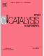Yukun Zhu, Junzhi Li, Chung-Li Dong, Jun Ren,
Yu-Cheng Huang, Daming Zhao, Rongsheng Cai, Daixing Wei, Chunxiao
Lv, Wolfgang Theis, Yuyu Bu, Wei Han, Shaohua Shen*, Dongjiang Yang*,
“Red phosphorus decorated and doped TiO2 nanofibers for efficient
photocatalytic hydrogen evolution from pure water”, Applied Catalysis B:
Environmental 2019, 255, 117764 Cited: 75(IF 2020: 19.503)
https://www.sciencedirect.com/science/article/pii/S092633731930503X -
Bin
Wang, Shaohua Shen*, Liejin Guo*, “SrTiO3
single crystals enclosed with high-indexed {023} facets and {001} facets for photocatalytic hydrogen
and oxygen evolution”, Applied Catalysis B: Environmental
2015, 166-167, 320-326 Cited: 69(IF 2020: 19.503)
http://www.sciencedirect.com/science/article/pii/S0926337314007334
-
Shaohua
Shen*, Jie Chen, Ranjit T. Koodali, Yongfeng Hu, Qunfeng Xiao, Jigang Zhou*, Xixi
Wang, Liejin Guo, “Activation of MCM-41 Mesoporous Silica by
Transition-Metal Incorporation for Photocatalytic Hydrogen Production”, Applied
Catalysis B: Environmental 2014, 150-151, 138-146 Cited: 58(IF 2020: 19.503)
http://www.sciencedirect.com/science/article/pii/S0926337313007595 -
Cheng Cheng, Shichao Zong, Jinwen Shi*, Fei Xue, Yazhou Zhang, Xiangjiu Guan, Botong Zheng, Junkai Deng, Liejin Guo, “Facile preparation of nanosized MoP as cocatalyst coupled with g-C3N4 by surface bonding state for enhanced photocatalytic hydrogen production”, Applied Catalysis B: Environmental 2020, 265, 118620 Cited: 58(IF 2020: 19.503)
https://www.sciencedirect.com/science/article/abs/pii/S0926337320300357 -
Bin Wang, Hairui Cai, Daming Zhao, Miao Song,
Penghui Guo, Shaohua Shen, Dongsheng Li*, Shengchun Yang*, “Enhanced
photocatalytic hydrogen evolution by partially replaced corner-site C atom with P in g-C3N4”,
Applied Catalysis B: Environmental 2019, 244, 486-493 Cited: 56(IF 2020: 19.503)
https://www.sciencedirect.com/science/article/pii/S0926337318310002 -
Cong Liu, Jinglan Zhou,
Jinzhan Su*, Liejin Guo*, “Turning the unwanted
surface bismuth enrichment to favourable BiVO4/BiOCl heterojunction for enhanced
photoelectrochemical performance”, Applied Catalysis B: Environmental
2019, 241, 506-513 Cited: 48(IF 2020: 19.503)
https://www.sciencedirect.com/science/article/pii/S0926337318308890 -
Yazhou Zhang, Shichao Zong, Cheng
Cheng, Jinwen Shi*, Penghui Guo, Xiangjiu
Guan, Bing Luo, Shaohua Shen, Liejin Guo,
“Rapid high-temperature treatment on graphitic carbon nitride for excellent
photocatalytic H2-evolution performance”, Applied Catalysis B:
Environmental 2018, 233, 80-87
Cited: 46(IF 2020: 19.503) https://www.sciencedirect.com/science/article/pii/S0926337318303114 -
Yanming Fu, Chung-Li Dong, Wu
Zhou, Ying-Rui Lu, Yu-Cheng Huang, Ya Liu, Penghui Guo,
Liang Zhao, Wu-Ching Chou, Shaohua Shen*, “A ternary
nanostructured α-Fe2O3/Au/TiO2 photoanode with reconstructed
interfaces for efficient photoelectrocatalytic water splitting”, Applied
Catalysis B: Environmental 2020, 260, 118206 Cited: 32(IF 2020: 19.503)
https://www.sciencedirect.com/science/article/pii/S0926337319309531 -
Zhixiao Qin, Zhenxiong Huang,
Menglong Wang, Dongyu Liu, Yubin Chen*, Liejin
Guo, “Synergistic effect of quantum confinement and site-selective doping in
polymeric carbon nitride towards overall water splitting”, Applied Catalysis B:
Environmental 2020, 261, 118211 Cited: 27(IF 2020: 19.503)
https://www.sciencedirect.com/science/article/abs/pii/S0926337319309580 -
Meng Wang,
Jiangang Jiang, Guanjie Liu, Jinwen Shi,
Liejin Guo*,
“Controllable synthesis of double layered tubular CdSe/ZnO arrays and
their photoelectrochemical performance for hydrogen
production”, Applied Catalysis B:
Environmental 2013, 138-139, 304-310 Cited: 23(IF 2020: 19.503)
http://www.sciencedirect.com/science/article/pii/S0926337313001161 -
Apurba Sinhamahapatra, Ha-Young Lee, Shaohua
Shen, Samuel S. Mao*, Jong-Sung Yu*, “H-doped TiO2-x prepared with
MgH2 for highly efficient solar-driven hydrogen production”, Applied
Catalysis B: Environmental 2018, 237, 613-621 Cited: 20(IF 2020: 19.503)
https://www.sciencedirect.com/science/article/pii/S0926337318305642 -
Yazhou Zhang, Jinwen Shi*, Cheng
Cheng, Shichao Zong, Jiafeng Geng, Xiangjiu
Guan, Liejin Guo, “Hydrothermal growth of Co3(OH)2(HPO4)2
nano-needles on LaTiO2N for enhanced water oxidation under visible-light
irradiation”, Applied Catalysis B: Environmental 2018, 232,
268-274 Cited: 19(IF 2020: 19.503)
https://www.sciencedirect.com/science/article/pii/S0926337318302662 -
Wu
Zhou, Fujun Niu, Samuel S. Mao, Shaohua Shen*,
“Nickel Complex Engineered Interface Energetics for Efficient Photoelectrochemical
Hydrogen Evolution over p-Si”, Applied Catalysis B: Environmental 2018,
220, 362-366 Cited: 18(IF 2020: 19.503)
http://www.sciencedirect.com/science/article/pii/S0926337317308019 -
Fujun
Niu, Shaohua Shen*, Ning Zhang, Jie
Chen, Liejin Guo, “Cobaloxime Coenzyme Catalyzing Artificial
Photosynthesis for Hydrogen Generation over CdS Nanocrystals”, Applied Catalysis
B: Environmental 2016, 199, 134-141 Cited: 17(IF 2020: 19.503)
http://www.sciencedirect.com/science/article/pii/S0926337316304672
-
Wenlong Fu, Xiangjiu Guan,
Zhenxiong Huang, Maochang Liu*, Liejin Guo*,
“Efficient photocatalytic overall water splitting over a core-shell GaInZnON@GaInON
homojunction”, Applied Catalysis B: Environmental 2019,
255, 117741 Cited: 12(IF 2020: 19.503)
https://www.sciencedirect.com/science/article/pii/S0926337319304801 -
Yazhou Zhang, Zhenxiong Huang, Jinwen Shi*, Xiangjiu Guan, Cheng Cheng, Shichao Zong, Yiliang Huangfu, Lijing Ma, Liejin Guo*, “Maleic hydrazide-based molecule doping in three-dimensional lettuce-like graphite carbon nitride towards highly efficient photocatalytic hydrogen evolution”, Applied Catalysis B: Environmental 2020, 272, 119009 Cited: 12(IF 2020: 19.503)
https://www.sciencedirect.com/science/article/abs/pii/S0926337320304240 -
 Xuening Wang, Wenjing Wan, Shaohua Shen*, Hengyi Wu, Huizhou Zhong, Changzhong Jiang, Feng Ren*, “Application of ion beam technology in (photo)electrocatalytic materials for renewable energy”, Applied Physics Reviews 2020, 7(4), 041303 Cited: 5(IF 2020: 19.162)
Xuening Wang, Wenjing Wan, Shaohua Shen*, Hengyi Wu, Huizhou Zhong, Changzhong Jiang, Feng Ren*, “Application of ion beam technology in (photo)electrocatalytic materials for renewable energy”, Applied Physics Reviews 2020, 7(4), 041303 Cited: 5(IF 2020: 19.162)
https://aip.scitation.org/doi/full/10.1063/5.0021322 -
Shuo
Dou, Chung-Li Dong, Zhe Hu, Yu-Cheng Huang, Jeng-lung Chen, Li Tao, Dafeng Yan, Dawei Chen, Shaohua
Shen*, Shulei Chou*, Shuangyin Wang*, “Atomic-Scale CoOx Species
in Metal–Organic Frameworks for Oxygen Evolution Reaction”, Advanced Functional
Materials 2017, 27(36), 1702546 Cited: 270(IF 2020: 18.808)
http://onlinelibrary.wiley.com/doi/10.1002/adfm.201702546/full -
Jennifer L. M.
Rupp*, Emiliana Fabbri, Dario Marrocchelli, Jeong-Woo Han, Di Chen, Enrico
Traversa, Harry L. Tuller, Bilge Yildiz, “Scalable Oxygen-Ion Transport
Kinetics in Metal-Oxide Films: Impact of Thermally Induced Lattice Compaction in Acceptor Doped
Ceria Films”, Advanced Functional Materials 2014,
24(11), 1562-1574 Cited: 73 (IF 2020: 18.808)
http://onlinelibrary.wiley.com/doi/10.1002/adfm.201302117/abstract -
Yanming
Fu, Fengren Cao, Fangli Wu, Zhidan Diao, Jie Chen,
Shaohua Shen*, Liang Li*, “Phase-Modulated Band Alignment in CdS
Nanorod/SnSx Nanosheet Hierarchical Heterojunctions toward Efficient Water
Splitting”, Advanced Functional Materials 2018, 28(16),
1706785 Cited: 69(IF 2020: 18.808)
http://onlinelibrary.wiley.com/doi/10.1002/adfm.201706785/full -
Kai Liu, Wei Wang,
Penghui Guo, Jinyu Ye, Yuanyuan Wang, Pingting Li, Zixi Lyu, Yongsheng Geng,
Maochang Liu, Shuifen Xie*, “Replicating the Defect Structures on Ultrathin
Rh Nanowires
with Pt to Achieve Superior Electrocatalytic Activity toward
Ethanol Oxidation”, Advanced Functional Materials 2019,
29(2), 1806300 Cited: 42(IF 2020: 18.808)
https://onlinelibrary.wiley.com/doi/full/10.1002/adfm.201806300 -
Johanna Engel, Sean R.
Bishop, Lionel Vayssieres*, Harry L. Tuller*, “In-situ
electrical characterization of Anatase TiO2 quantum
dots”, Advanced Functional Materials 2014, 24(31),
4952-4958 Cited: 18(IF 2020: 18.808)
http://onlinelibrary.wiley.com/doi/10.1002/adfm.201400203/abstract -
 Shaohua
Shen*, Jiangang Jiang, Penghui Guo, Coleman X.
Kronawitter, Samuel S. Mao, Liejin
Guo*, “Effect of Cr doping on the photoelectrochemical performance
of hematite nanorod photoanodes”, Nano
Energy 2012, 1(5), 732-741 Cited: 113(IF 2020: 17.881)
Shaohua
Shen*, Jiangang Jiang, Penghui Guo, Coleman X.
Kronawitter, Samuel S. Mao, Liejin
Guo*, “Effect of Cr doping on the photoelectrochemical performance
of hematite nanorod photoanodes”, Nano
Energy 2012, 1(5), 732-741 Cited: 113(IF 2020: 17.881)
http://www.sciencedirect.com/science/article/pii/S22112haode85512001206 -
Fei Xue,
Yitao Si, Miao Wang, Maochang Liu*, Liejin
Guo*, “Toward efficient photocatalytic pure water splitting for simultaneous H2
and H2O2 production”, Nano Energy 2019,
62, 823-831 Cited: 52(IF 2020: 17.881)
https://www.sciencedirect.com/science/article/pii/S2211285518309807 -
 Pengjian Wang, Di Zhou*, Jing Li, Lixia Pang, WenFeng Liu, Jinzhan Su, Charanjeet Singh, Sergei Trukhanov, Alex Trukhanov, “Significantly enhanced electrostatic energy storage performance of P(VDF-HFP)/BaTiO3-Bi(Li0.5Nb0.5)O3 nanocomposites”, Nano Energy 2020, 78,105247 Cited: 45(IF 2020: 17.881)
Pengjian Wang, Di Zhou*, Jing Li, Lixia Pang, WenFeng Liu, Jinzhan Su, Charanjeet Singh, Sergei Trukhanov, Alex Trukhanov, “Significantly enhanced electrostatic energy storage performance of P(VDF-HFP)/BaTiO3-Bi(Li0.5Nb0.5)O3 nanocomposites”, Nano Energy 2020, 78,105247 Cited: 45(IF 2020: 17.881)
https://www.sciencedirect.com/science/article/abs/pii/S2211285520308259 -
 A.
Mettenbörger, Y. Gönüllü, T. Fischer, T. Heisig, A. Sasinska, C. Maccato, G. Carraro, C. Sada, D.
Barreca, L. Mayrhofer, M. Moseler, A. Held, Sanjay Mathur*, “Interfacial
Insight in Multi-junction Metal Oxide Photoanodes for Water-splitting Applications”, Nano
Energy 2016, 19, 415-427 Cited: 42(IF 2020: 17.881)
A.
Mettenbörger, Y. Gönüllü, T. Fischer, T. Heisig, A. Sasinska, C. Maccato, G. Carraro, C. Sada, D.
Barreca, L. Mayrhofer, M. Moseler, A. Held, Sanjay Mathur*, “Interfacial
Insight in Multi-junction Metal Oxide Photoanodes for Water-splitting Applications”, Nano
Energy 2016, 19, 415-427 Cited: 42(IF 2020: 17.881)
http://www.sciencedirect.com/science/article/pii/S2211285515003791 -
 Shaohua
Shen*, Coleman X. Kronawitter, Jiangang Jiang, Penghui
Guo, Liejin Guo,
Samuel S. Mao*, “A ZnO/ZnO: Cr isostructural nanojunction electrode for
photoelectrochemical
water splitting”, Nano Energy 2013, 2(5), 958-965 Cited: 27(IF 2020: 17.881)
Shaohua
Shen*, Coleman X. Kronawitter, Jiangang Jiang, Penghui
Guo, Liejin Guo,
Samuel S. Mao*, “A ZnO/ZnO: Cr isostructural nanojunction electrode for
photoelectrochemical
water splitting”, Nano Energy 2013, 2(5), 958-965 Cited: 27(IF 2020: 17.881)
http://www.sciencedirect.com/science/article/pii/S2211285513000529 -
Kai Zhang, Yawen Dai,
Zhaohui Zhou, Saad Ullah Jan, Liejin Guo*, Jian Ru Gong*,
“Polarization-induced Saw-tooth-like Potential Distribution in Zincblende-Wurtzite
Superlattice for Efficient Charge Separation”, Nano Energy 2017,
41, 101-108 Cited: 26(IF 2020: 17.881)
http://www.sciencedirect.com/science/article/pii/S2211285517305591 -
Ke Wang, Dongyu
Liu, Peilin Deng, Limin Liu, Shiyao Lu, Zongjie Sun, Yaming Ma, Yuankun Wang, Mingtao
Li*, Bao Yu Xia*, Chunhui Xiao*, Shujiang Ding, “Band alignment in Zn2SnO4/SnO2
heterostructure enabling efficient CO2 electrochemical reduction”, Nano
Energy 2019, 64, 103954
Cited: 23(IF 2020: 17.881)
https://www.sciencedirect.com/science/article/pii/S2211285519306615 -
Yongjie Wang, Srinivas
Vanka, Jiseok Gim, Yuanpeng Wu, Ronglei Fan, Yazhou Zhang, Jinwen
Shi, Mingrong Shen, Robert Hovden, Zetian Mi*, “An
In0.42Ga0.58N Tunnel Junction Nanowire Photocathode Monolithically Integrated
on a Nonplanar Si Wafer”, Nano Energy 2019, 57,
405-413 Cited: 23(IF 2020: 17.881)
https://www.sciencedirect.com/science/article/pii/S2211285518309807 -
Kaiqi Nie, Stepan
Kashtanov, Yankuan Wei, Yi-Sheng Liu, Hui Zhang, Mukes Kapilashrami, Yifan Ye,
Per-Anders Glans, Jun Zhong, Lionel Vayssieres*, Xuhui Sun*, Jinghua Guo*,
“Atomic-scale Understanding of the Electronic Structure-Crystal Facets Synergy of
Nanopyramidal CoPi/BiVO4 Hybrid Photocatalyst for Efficient Solar Water
Oxidation”, Nano Energy 2018, 53, 483-491 Cited: 17(IF 2020: 17.881)
https://www.sciencedirect.com/science/article/pii/S2211285518306384 -
Wei Wang, Xiaowei Chen, Xue Zhang, Jinyu Ye, Fei Xue, Chao Zhen, Xinyan Liao, Huiqi Li, Pingting Li, Maochang Liu, Qin Kuang, Zhaoxiong Xie*, Shuifen Xie*, “Quatermetallic Pt-based ultrathin nanowires intensified by Rh enable highly active and robust electrocatalysts for methanol oxidation”, Nano Energy 2020, 71, 104623 Cited: 16(IF 2020: 17.881)
https://www.sciencedirect.com/science/article/pii/S2211285520301804 -
 Miao Wang, Yiqing Wang, Samuel S. Mao, Shaohua Shen*, “Transition-Metal Alloy Electrocatalysts with Active Sites Modulated by Metal-Carbide Heterophases for Efficient Oxygen Evolution”, Nano Energy 2021, 88, 106216 Cited: 1(IF 2020: 17.881)
Miao Wang, Yiqing Wang, Samuel S. Mao, Shaohua Shen*, “Transition-Metal Alloy Electrocatalysts with Active Sites Modulated by Metal-Carbide Heterophases for Efficient Oxygen Evolution”, Nano Energy 2021, 88, 106216 Cited: 1(IF 2020: 17.881)
https://www.sciencedirect.com/science/article/abs/pii/S2211285521004729 -
Bin Wang, Maochang Liu*, Zhaohui
Zhou, Liejin Guo*, “Surface Activation of Faceted Photocatalyst:
When Metal Cocatalyst Determines the Nature of the Facets”, Advanced Science
2015, 2(11), 1500153 Cited: 20 (IF 2020: 16.806)
http://onlinelibrary.wiley.com/doi/10.1002/advs.201500153/abstract -
Daniele
Pergolesi, Emiliana Fabbri, Stuart N. Cook, Vladimir Roddatis, Enrico Traversa*,
John A. Kilner*, “Tensile Lattice Distortion Does Not Affect Oxygen
Transport
in Yttria-Stabilized Zirconia-CeO2 Heterointerfaces”, ACS Nano
2012, 6(12), 10524-10534 Cited: 91(IF 2020: 15.881)
http://pubs.acs.org/doi/abs/10.1021/nn302812m -
James Bishop*, Marco
Fronzi*, Christopher Elbadawi, Vikram Nikam, Joshua Pritchard, Johannes E. Fröch, Ngoc My
Hanh Duong, Michael J. Ford*, Igor Aharonovich, Charlene J Lobo, Milos Toth*, “Deterministic
Nanopatterning of Diamond Using Electron Beams”, ACS Nano
2018, 12(3), 2873-2882 Cited: 16(IF 2020: 15.881)
http://pubs.acs.org/doi/abs/10.1021/acsnano.8b00354 -
Jie Chen, Darien J. Morrow, Yongping Fu, Weihao Zheng,
Yuzhou Zhao, Lianna Dang, Matthew J. Stolt, Daniel D. Kohler, Xiaoxia Wang, Kyle J. Czech, Matthew
P. Hautzinger, Shaohua Shen, Liejin Guo, Anlian Pan, Jogh C.
Wright, Song Jin*, “Single-Crystal Thin Films of Cesium Lead Bromide Perovskite
Epitaxially Grown on Metal Oxide Perovskite (SrTiO3)”, Journal of
the American Chemical Society 2017,
139(38), 13525-13532 Cited: 130(IF 2020: 15.419)
http://pubs.acs.org/doi/abs/10.1021/jacs.7b07506 -
Maochang Liu, Yiqun Zheng, Lei
Zhang, Liejin Guo, Younan Xia*, “Transformation
of Pd Nanocubes into Octahedra with Controlled Sizes by Maneuvering the Rates of
Etching and Regrowth”, Journal of the American Chemical
Society 2013,
135(32), 11752-11755 Cited: 94(IF 2020: 15.419)
http://pubs.acs.org/doi/abs/10.1021/ja406344j -
Zhaohui Zhou, Jin Liu, Run Long, Linqiu Li, Liejin
Guo, Oleg V. Prezhdo*, “Control of Charge Carriers Trapping and Relaxation in
Hematite by Oxygen Vacancy Charge: Ab Initio Non-Adiabatic Molecular Dynamics”, Journal
of the American Chemical Society 2017,
139(19), 6707-6717 Cited: 79(IF 2020: 15.419)
http://pubs.acs.org/doi/abs/10.1021/jacs.7b02121 -
Haipeng Lu, Zhaohui
Zhou, Oleg V. Prezhdo*, Richard L. Brutchey*, “Exposing the Dynamics and
Energetics of the N-Heterocyclic Carbene-Nanocrystal Interface”, Journal of
the American Chemical Society 2016,
138(45), 14844-14847 Cited: 26(IF 2020: 15.419)
http://pubs.acs.org/doi/abs/10.1021/jacs.6b09065 -
Yu Wang*, Xiaohe Liu, Rongbin Wang, Beatrice Cula, Zhe-Ning Chen*, Qingyun Chen*, Norbert Koch, Nicola Pinna*, “Secondary Phosphine Oxide Functionalized Gold Clusters and Their Application in Photoelectrocatalytic Hydrogenation Reactions”, Journal of
the American Chemical Society 2021,
143(25), 9595–9600(IF 2020: 15.419)
https://pubs.acs.org/doi/abs/10.1021/jacs.1c04048 -
Yukun Zhu, Chunxiao Lv, Zhuocheng Yin, Jun Ren, Xianfeng Yang,
Chung-Li Dong, Hongwei Liu, Rongsheng Cai, Yu-Cheng Huang, Wolfgang Theis, Shaohua
Shen*, Dongjiang Yan*, “A [001]‐Oriented Hittorf’s Phosphorus Nanorods/Polymeric
Carbon Nitride Heterostructure for Boosting Wide‐Spectrum‐Responsive Photocatalytic Hydrogen
Evolution from Pure Water”, Angewandte Chemie International Edition
2020, 132(2), 878-883 Cited: 70(IF 2020: 15.336)
https://onlinelibrary.wiley.com/doi/abs/10.1002/ange.201911503 -
Lu Wang, Tianjiang Yan*, Rui Song, Wei Sun,
Yuchan Dong, Jiuli Guo, Zizhong Zhang, Xuxu Wang, Geoffrey A. Ozin*, “Room Temperature
Activation of H2 by a Surface Frustrated
Lewis Pair”, Angewandte Chemie International Edition 2019, 58(28),
9501-9505 Cited: 19(IF 2020: 15.336)
https://onlinelibrary.wiley.com/doi/abs/10.1002/anie.201904568 -
 Yu Wang*, Xiaohe Liu, Qiankun Wang, Martin Quick, Sergey A. Kovalenko, Qingyun Chen*, Norbert Koch, Nicola Pinna*, “Insights into Charge Transfer at an Atomically Precise Nanocluster/Semiconductor Interface”, Angewandte Chemie International Edition 2020, 59(20), 7748-7754 Cited: 16(IF 2020: 15.336)
Yu Wang*, Xiaohe Liu, Qiankun Wang, Martin Quick, Sergey A. Kovalenko, Qingyun Chen*, Norbert Koch, Nicola Pinna*, “Insights into Charge Transfer at an Atomically Precise Nanocluster/Semiconductor Interface”, Angewandte Chemie International Edition 2020, 59(20), 7748-7754 Cited: 16(IF 2020: 15.336)
https://onlinelibrary.wiley.com/doi/abs/10.1002/anie.201915074 -
 Xiaojie Xu, Xufeng Zhou, Tianyu Wang, Xiang Shi, Ya Liu, Yong Zuo, Limin Xu, Mengying Wang, Xiaofeng Hu, Xinju Yang, Jiaxin Chen, Xiubo Yang, Liu Chen Peining Chen, Huisheng Peng*, “Robust DNA‐bridged memristor for textile chips”, Angewandte Chemie International Edition 2020, 59(31), 12762-12768 Cited: 5(IF 2020: 15.336)
Xiaojie Xu, Xufeng Zhou, Tianyu Wang, Xiang Shi, Ya Liu, Yong Zuo, Limin Xu, Mengying Wang, Xiaofeng Hu, Xinju Yang, Jiaxin Chen, Xiubo Yang, Liu Chen Peining Chen, Huisheng Peng*, “Robust DNA‐bridged memristor for textile chips”, Angewandte Chemie International Edition 2020, 59(31), 12762-12768 Cited: 5(IF 2020: 15.336)
https://onlinelibrary.wiley.com/doi/abs/10.1002/anie.202004333 -
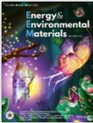Yuhan Li, Zongjie Sun, Dongyu Liu, Shiyao Lu, Fei Li, Guoxin Gao, Min Zhu, Mingtao Li, Yanfeng Zhang, Huaitian Bu, Zhiyu Jia, Shujiang Ding*, “Bacterial cellulose composite solid polymer electrolyte with high tensile strength and lithium dendrite inhibition for long life battery”, Energy & Environmental Materials 2021,
4(3), 434-443 Cited: 2(IF 2020: 15.122)
https://onlinelibrary.wiley.com/doi/abs/10.1002/eem2.12122 -
Yi Jia, Chenghua Sun,
Shaohua Shen, Jin Zou, Samuel S. Mao*, Xiangdong
Yao*, “Combination of nanosizing and interfacial effect: Future perspective
for designing Mg-based nanomaterials for hydrogen storage”, Renewable & Sustainable
Energy Reviews 2015, 44, 289-303 Cited: 128(IF 2020: 14.982)
http://www.sciencedirect.com/science/article/pii/S1364032114010843 -
Dengwei Jing*, Dongxing Song,
“Optical properties of nanofluids considering particle size distribution: Experimental
and theoretical investigations”,
Renewable and Sustainable Energy Reviews 2017, 78, 452–465 Cited: 34(IF 2020: 14.982)
http://www.sciencedirect.com/science/article/pii/S1364032117305865 -
Yuchao Hu, Liuhao Mao, Xiangjiu Guan, Kevin Andrew Tucker, Huling Xie, Xuesong Wu, Jinwen Shi*, “Layered perovskite oxides and their derivative nanosheets adopting different modification strategies towards better photocatalytic performance of water splitting”,
Renewable and Sustainable Energy Reviews 2020, 119, 109527 Cited: 24(IF 2020: 14.982)
https://www.sciencedirect.com/science/article/pii/S136403211930735X -
 Maochang Liu, Dengwei Jing, Zhaohui Zhou,
Liejin Guo*, “Twin-induced one-dimensional homojunctions yield
high quantum efficiency for solar hydrogen generation”, Nature
Communications 2013, 4, 2278
Cited: 231(IF 2020: 14.919)
Maochang Liu, Dengwei Jing, Zhaohui Zhou,
Liejin Guo*, “Twin-induced one-dimensional homojunctions yield
high quantum efficiency for solar hydrogen generation”, Nature
Communications 2013, 4, 2278
Cited: 231(IF 2020: 14.919)
http://www.nature.com/ncomms/2013/130903/ncomms3278/full/ncomms3278.html -
Bin Wang, Hairui Cai, Shaohua Shen*,
“Single Metal Atom Photocatalysis”, Small Methods
2019, 3(9), 1800447 Cited: 48(IF 2020:14.188)
https://onlinelibrary.wiley.com/doi/10.1002/smtd.201800447 -
Xuecheng
Yan, Chung-Li Dong, Yu-Cheng Huang, Yi Jia, Longzhou Zhang, Shaohua Shen, Jun Chen,
Xiangdong Yao*, “Probing the Active Sites of Carbon‐Encapsulated Cobalt Nanoparticles
for Oxygen Reduction”, Small Methods 2019, 3(9),
1800439 Cited: 17
(IF 2020:14.188)
https://onlinelibrary.wiley.com/doi/full/10.1002/smtd.201800439 -
Yanrui Li,
Tingting Kong*, Shaohua Shen*, “Artificial Photosynthesis with Polymeric
Carbon Nitride: When Meeting Metal Nanoparticles, Single Atoms, and Molecular Complexes”,
Small 2019, 15(32), 1900772 Cited: 49 (IF 2020: 13.281)
https://onlinelibrary.wiley.com/doi/full/10.1002/smll.201900772 -
Miao Wang, Chung-Li Dong, Yu-Cheng Huang, Yanrui
Li, Shaohua Shen*, “Electronic Structure Evolution in Tricomponent
Metal Phosphides with Reduced Activation Energy for Efficient Electrocatalytic Oxygen
Evolution”, Small 2018, 14(35), 1801756 Cited: 40 (IF 2020: 13.281)
https://onlinelibrary.wiley.com/doi/abs/10.1002/smll.201801756 -
Huizhou Zhong, Guoping Gao, Xuening Wang, Hengyi Wu, Shaohua Shen, Wenbin Zuo, Guangxu Cai, Guo Wei, Ying Shi, Dejun Fu, Changzhong Jiang, Lin-Wang Wang, Feng Ren*, “Ion Irradiation Inducing Oxygen Vacancy-Rich NiO/NiFe2O4 Heterostructure for Enhanced Electrocatalytic Water Splitting”, Small 2021, Early View(IF 2020: 13.281)
https://onlinelibrary.wiley.com/doi/abs/10.1002/smll.202103501 -
Mengxi Xu, Yunhai Wang*, Jiafeng Geng, Dengwei
Jing*, “Photodecomposition of NOx on Ag/TiO2 composite catalysts in a
gas phase reactor”, Chemical Engineering Journal 2017,
307, 181-188 Cited: 66(IF 2020: 13.273)
http://www.sciencedirect.com/science/article/pii/S1385894716311548 -
 Kai He, Meng Wang, Liejin
Guo*, “Novel-CdS-Nanorod with Stacking Fault Structures: Preparation and Properties
of Visible-Light-Driven Photocatalytic Hydrogen Production from Water”, Chemical
Engineering Journal 2015, 279, 747-756 Cited: 40
(IF 2020: 13.273)
Kai He, Meng Wang, Liejin
Guo*, “Novel-CdS-Nanorod with Stacking Fault Structures: Preparation and Properties
of Visible-Light-Driven Photocatalytic Hydrogen Production from Water”, Chemical
Engineering Journal 2015, 279, 747-756 Cited: 40
(IF 2020: 13.273)
http://www.sciencedirect.com/science/article/pii/S1385894715005513 -
Bing Luo, Rui Song, Dengwei
Jing*, “Significantly enhanced photocatalytic hydrogen generation over graphitic
carbon nitride with carefully modified intralayer structures”, Chemical Engineering
Journal 2018, 332, 499-507 Cited: 31(IF 2020: 13.273)
http://www.sciencedirect.com/science/article/pii/S1385894717316182 -
Wen-Fang Cai, Jia-Feng
Geng, Kai-Bo Pu, Qian Ma, Deng-Wei Jing, Yun-Hai Wang*, Qing-Yun
Chen, Hong Liu, “Investigation of a two-dimensional model on microbial fuel cell
with different biofilm porosities and external resistances”, Chemical Engineering
Journal 2018, 333, 572-582 Cited: 27(2020: 13.273)
https://www.sciencedirect.com/science/article/pii/S1385894717316972 -
Zhuocheng
Yin, Yuyu Bu, Jun Ren, Shuai Chen, Daming Zhao, Yihui Zou, Shaohua
Shen*, Dongjiang Yang*, “Triggering Superior Sodium Ion Adsorption on (200) Facet
of Mesoporous WO3 Nanosheet Arrays for Enhanced Supercapacitance”, Chemical
Engineering Journal 2018, 345, 165-173 Cited: 22(IF 2020: 13.273)
https://www.sciencedirect.com/science/article/pii/S138589471830456X -
Yazhou Zhang, Jinwen Shi*, Zhenxiong Huang, Xiangjiu Guan, Shichao Zong, Cheng Cheng, Botong Zheng, Liejin Guo, “Synchronous construction of CoS2 in-situ loading and S doping for g-C3N4: Enhanced photocatalytic H2-evolution activity and mechanism insight”, Chemical
Engineering Journal 2020, 401, 126135 Cited: 21(IF 2020: 13.273)
https://www.sciencedirect.com/science/article/abs/pii/S1385894720322634 -
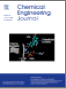Xiaobing
Li, Tao Zhang, Yubin Chen, Yanming Fu,
Jinzhan Su*, Liejin Guo*, “Hybrid nanostructured
Copper(II) phthalocyanine/TiO2 films with efficient photoelectrochemical
performance”, Chemical Engineering Journal 2020, 382,
122783 Cited: 18(IF 2020: 13.273)
https://www.sciencedirect.com/science/article/pii/S138589471932193X -
Xu Guo,
Penghui Guo, Chenxu Wang, Yubin Chen*, Liejin
Guo, “Few-layer WSe2 nanosheets as an efficient cocatalyst for improved
photocatalytic hydrogen evolution over Zn0.1Cd0.9S nanorods”, Chemical
Engineering Journal 2020, 383, 123183 Cited: 15(IF 2020: 13.273)
https://www.sciencedirect.com/science/article/pii/S1385894719325951 -
Maochang
Liu*, Fei Xue, Xixi Wang, Wenlong Fu, Yi
Wang*, Youjun Lu, Naixu Li*, “Conformal deposition of atomic
TiO2 layer on chalcogenide nanorod with excellent activity and durability towards solar H2
generation”, Chemical Engineering Journal 2018, 341,
335-343 Cited: 14(IF 2020: 13.273)
https://www.sciencedirect.com/science/article/pii/S1385894718302262 -
Zhidan Diao, Yiqing Wang, Daming Zhao, Xiaoping Zhang, Samuel S.Mao,Shaohua Shen* , “Ultra-small TiO2 nanoparticles embedded in carbon nanosheets for high-performance sodium storage”, Chemical
Engineering Journal 2021, 417, 127928 Cited: 2(IF 2020: 13.273)
https://www.sciencedirect.com/science/article/abs/pii/S138589472034047X -
Wenlong Fu, Xiangjiu Guan, Yitao Si, Maochang Liu*, “Phosphatized GaZnInON nanocrystals with core-shell structures for efficient and stable pure water splitting via four-electron photocatalysis”, Chemical
Engineering Journal 2021, 410, 128391(IF 2020: 13.273)
https://www.sciencedirect.com/science/article/abs/pii/S1385894720345034 -
 Xiangjiu
Guan, Liejin Guo*, “Cocatalytic Effect of SrTiO3 on
Ag3PO4 towards Enhanced Photocatalytic Water Oxidation”, ACS
Catalysis 2014, 4(9), 3020-3026
Cited: 160
(IF 2020: 13.084)
Xiangjiu
Guan, Liejin Guo*, “Cocatalytic Effect of SrTiO3 on
Ag3PO4 towards Enhanced Photocatalytic Water Oxidation”, ACS
Catalysis 2014, 4(9), 3020-3026
Cited: 160
(IF 2020: 13.084)
http://pubs.acs.org/doi/abs/10.1021/cs5005079 -
Zhu Chen, Li Cai, Xiaofang Yang, Coleman
Kronawitter, Liejin Guo, Shaohua Shen*, Bruce E. Koel*, “Reversible
Structural Evolution of NiCoOxHy during the Oxygen Evolution Reaction and
Identification of the Catalytically Active Phase”, ACS Catalysis
2018, 8(2), 1238-1247
Cited: 84
(IF 2020: 13.084)
http://pubs.acs.org/doi/abs/10.1021/acscatal.7b03191 -
Naixu Li, Bingbing Wang, Yitao Si, Fei
Xue, Jiangcheng Zhou*, Youjun Lu, Maochang Liu*,
“Toward High-Value Hydrocarbon Generation by Photocatalytic Reduction of CO2 in
Water Vapor”, ACS Catalysis 2019, 9(6), 5590-5602
Cited: 38
(IF 2020: 13.084)
https://pubs.acs.org/doi/abs/10.1021/acscatal.9b00223 -
Miao Wang, Chung-Li Dong, Yu-Cheng Huang, Shaohua Shen*, “Operando Spectral and Electrochemical Investigation into the Heterophase Stimulated Active Species Transformation in Transition-Metal Sulfides for Efficient Electrocatalytic Oxygen Evolution”, ACS Catalysis 2020, 10(3), 1855-1864 Cited: 34(IF 2020: 13.084)
https://pubs.acs.org/doi/abs/10.1021/acscatal.9b05170 -
Fei Xue, Xinyang Guo, Boya Min, Yitao Si, Hongwen Huang, Jinwen Shi, Maochang Liu*, “Unconventional High-Index Facet of Iridium Boosts Oxygen Evolution Reaction: How the Facet Matters”, ACS Catalysis 2021, 11, 8239–8246(IF 2020: 13.084)
https://pubs.acs.org/doi/abs/10.1021/acscatal.1c01867 -
Lin Zhang, Dengwei
Jing, Xilin She, Hongwei Liu, Dongjiang Yang*, Yun Lu, Jian Li, Zhanfeng
Zheng*, Liejin Guo, “Heterojunctions in
g-C3N4/TiO2(B) Nanofibres with Exposed (001) Plane and Enhanced
Visible-Light Photoactivity”, Journal of Materials Chemistry
A 2014, 2(7), 2071-2078 Cited: 220(IF 2020: 12.732)
http://pubs.rsc.org/en/content/articlelanding/2013/ta/c3ta14047d#!divAbstract -
.jpg) Po Wu, Jiarui Wang, Jing Zhao, Liejin
Guo*, Frank Osterloh*, “Structure defects in
g-C3N4 limit visible light driven hydrogen evolution and photovoltage”,
Journal of Materials Chemistry A 2014, 2(47), 20338-20344 Cited: 193(IF 2020: 12.732)
Po Wu, Jiarui Wang, Jing Zhao, Liejin
Guo*, Frank Osterloh*, “Structure defects in
g-C3N4 limit visible light driven hydrogen evolution and photovoltage”,
Journal of Materials Chemistry A 2014, 2(47), 20338-20344 Cited: 193(IF 2020: 12.732)
http://pubs.rsc.org/en/content/articlelanding/2014/ta/c4ta04100c#!divAbstract -
 Jie
Chen, Shaohua Shen*, Penghui
Guo, Po Wu, Liejin Guo*, “Spatial
Engineering of Photo-active Sites on
g-C3N4 for Efficient Solar Hydrogen
Generation”, Journal of Materials Chemistry
A 2014, 2(13), 4605-4612 Cited: 111(IF 2020: 12.732)
Jie
Chen, Shaohua Shen*, Penghui
Guo, Po Wu, Liejin Guo*, “Spatial
Engineering of Photo-active Sites on
g-C3N4 for Efficient Solar Hydrogen
Generation”, Journal of Materials Chemistry
A 2014, 2(13), 4605-4612 Cited: 111(IF 2020: 12.732)
http://pubs.rsc.org/en/content/articlelanding/2014/ta/c3ta14811d#!divAbstract -
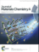Zhixiao
Qin, Yubin Chen*, Zhenxiong Huang, Jinzhan
Su, Liejin Guo*, “A bifunctional NiCoP-based core/shell
cocatalyst to promote separate photocatalytic hydrogen and oxygen generation over graphitic carbon
nitride”, Journal of Materials Chemistry
A 2017, 5(36), 19025-19035 Cited: 101(IF 2020: 12.732)
http://pubs.rsc.org/en/content/articlelanding/2017/ta/c7ta04434h#!divAbstract -
.jpg) Daohao Li, Dongjiang Yang*, Xiaoyi Zhu,
Dengwei Jing, Yanzhi Xia*, Quan Ji, Rongsheng Cai, Hongliang Lia,
Yanke Che*, “Simple pyrolysis of cobalt alginate fibres into Co3O4/C
nano/microstructures for a high-performance lithium ion battery anode”, Journal of
Materials Chemistry A 2014, 2(44), 18761-18766 Cited: 96(IF 2020: 12.732)
Daohao Li, Dongjiang Yang*, Xiaoyi Zhu,
Dengwei Jing, Yanzhi Xia*, Quan Ji, Rongsheng Cai, Hongliang Lia,
Yanke Che*, “Simple pyrolysis of cobalt alginate fibres into Co3O4/C
nano/microstructures for a high-performance lithium ion battery anode”, Journal of
Materials Chemistry A 2014, 2(44), 18761-18766 Cited: 96(IF 2020: 12.732)
http://pubs.rsc.org/en/content/articlelanding/2014/ta/c4ta03052d#!divAbstract -
 Shaohua
Shen*, Coleman X. Kronawitter,
Damon A. Wheeler, Penghui Guo, Sarah A. Lindley, Jiangang Jiang,
Jin Z. Zhang, Liejin Guo, Samuel S. Mao*, “Physical
and photoelectrochemical characterization of Ti-doped hematite photoanodes prepared
by solution growth”, Journal of Materials Chemistry
A 2013, 1(46),
14498-14506 Cited: 92(IF 2020: 12.732)
Shaohua
Shen*, Coleman X. Kronawitter,
Damon A. Wheeler, Penghui Guo, Sarah A. Lindley, Jiangang Jiang,
Jin Z. Zhang, Liejin Guo, Samuel S. Mao*, “Physical
and photoelectrochemical characterization of Ti-doped hematite photoanodes prepared
by solution growth”, Journal of Materials Chemistry
A 2013, 1(46),
14498-14506 Cited: 92(IF 2020: 12.732)
http://pubs.rsc.org/en/Content/ArticleLanding/2013/TA/c3ta13453a -
 Pengjian Wang, Di Zhou*, Huanhuan Guo, Wenfeng Liu, Jinzhan Su, Maosen Fu, Charanjeet Singh, Sergei Trukhanov, Alex Trukhanov, “Ultrahigh enhancement rate of the energy density of flexible polymer nanocomposites using core–shell BaTiO3@MgO structures as the filler”, Journal of Materials Chemistry A 2020, 8(22), 11124-11132 Cited: 64(IF 2020: 12.732)
Pengjian Wang, Di Zhou*, Huanhuan Guo, Wenfeng Liu, Jinzhan Su, Maosen Fu, Charanjeet Singh, Sergei Trukhanov, Alex Trukhanov, “Ultrahigh enhancement rate of the energy density of flexible polymer nanocomposites using core–shell BaTiO3@MgO structures as the filler”, Journal of Materials Chemistry A 2020, 8(22), 11124-11132 Cited: 64(IF 2020: 12.732)
https://pubs.rsc.org/en/content/articlelanding/2020/TA/D0TA03304A#!divAbstract -
Dafeng Yan, Chung-Li Dong, Yu-Cheng Huang, Yuqin Zou*, Chao
Xie, Yanyong Wang, Yiqiong Zhang, Dongdong Liu, Shaohua Shen, Shuangyin Wang*,
“Engineering the Coordination Geometry of Metal-organic Complex Electrocatalysts for
Highly Enhanced Oxygen Evolution Reaction”, Journal of Materials Chemistry A 2018, 6(3),
805-810 Cited: 56(IF 2020: 12.732)
http://pubs.rsc.org/en/content/articlelanding/2017/ta/c7ta09092g#!divAbstract -
Xi Xu, Huiqiang Wang, Jinming Ma, Wenyun Liu, Xianfen Wang, Marco Fronzi*, Lei Bi*, “Impressive performance of proton-conducting solid oxide fuel cells using a first-generation cathode with tailored cations”, Journal of Materials Chemistry
A 2019, 7(32), 18792-18798 Cited: 48(IF 2020: 12.732)
https://pubs.rsc.org/--/content/articlelanding/2019/ta/c9ta06676d -
Xi Xu, Huiqiang Wang, Marco Fronzi, Xianfen Wang, Lei Bi*, Enrico Traversa*, “Tailoring cations in a perovskite cathode for proton-conducting solid oxide fuel cells with high performance”, Journal of Materials Chemistry A 2019, 7(36), 20624-20632 Cited: 39(IF 2020: 12.732)
https://pubs.rsc.org/en/content/articlelanding/2019/ta/c9ta05300j -
Yuhan Li, Zongjie Sun, Dongyu Liu, Yiyang Gao, Yuankun Wang, Huaitian Bu, Mingtao Li, Yanfeng Zhang, Guoxin Gao*, Shujiang Ding*, “A composite solid polymer electrolyte incorporating MnO2 nanosheets with reinforced mechanical properties and electrochemical stability for lithium metal batteries”, Journal of Materials Chemistry A 2020, Cited: 34(IF 2020: 12.732)8(4), 2021-2032
https://pubs.rsc.org/lv/content/articlelanding/2020/ta/c9ta11542k/unauth#!divAbstract -
Lijing
Ma*, Maochang Liu, Dengwei Jing, Liejin
Guo*, “Photocatalytic hydrogen production over CdS: Effects of reaction
atmosphere studied by in situ Raman spectroscopy”, Journal of Materials Chemistry
A 2015, 3(10), 5701-5707 Cited: 33(IF 2020: 12.732)
http://pubs.rsc.org/en/content/articlelanding/2015/ta/c4ta06577h#!divAbstract -
Ronglei Fan, Shaobo Cheng, Guanping Huang, Yongjie Wang,
Yazhou Zhang, Srinivas Vanka, Gianluigi A. Botton, Zetian Mi*, Mingrong Shen*,
“Unassisted solar water splitting with 9.8% efficiency and over 100 h stability based
on Si solar cells and photoelectrodes catalyzed by bifunctional Ni–Mo/Ni”, Journal
of Materials Chemistry A 2019, 7(5), 2200-2209 Cited: 31(IF 2020: 12.732)
https://pubs.rsc.org/en/content/articlelanding/2018/ta/c8ta10165e/unauth#!divAbstract -
Xuxiao Yang, Peilin Deng, Dongyu Liu, Shuang Zhao, Dan Li, Hu Wu, Yaming Ma, Bao Yu Xia * , Mingtao Li*, Chunhui Xiao*, Shujiang Ding, “Partial sulfuration-induced defect and interface tailoring on bismuth oxide for promoting electrocatalytic CO2 reduction”, Journal of Materials Chemistry A 2020, 8(5), 2472-2480 Cited: 28(IF 2020: 12.732)
https://pubs.rsc.org/--/content/articlelanding/2020/ta/c9ta11363k/unauth#!divAbstract -
Xuelu Wang, Wenqi Fang, Wenqing Liu, Yi Alec Jia, Dengwei
Jing, Yun Wang, Lingyun Yang, XueQing Gong, Yefeng Yao*, Huagui Yang, Xiangdong Yao*,
“Brönsted Base Sites Engineering of Graphitic Carbon Nitride for Enhanced
Photocatalytic Activity”, Journal of Materials Chemistry
A 2017, 5(36), 19227-19236 Cited: 20(IF 2020: 12.732)
http://pubs.rsc.org/en/content/articlelanding/2017/ta/c7ta06602c#!divAbstract -
 Xin Liu, Bing Luo, Jiabin Liu, Dengwei Jing, Daniele Benetti*, Federico Rosei*, “Eco-friendly quantum dots for liquid luminescent solar concentrators”, Journal of Materials Chemistry A 2020, 8(4), 1787-1798 Cited: 15(IF 2020: 12.732)
Xin Liu, Bing Luo, Jiabin Liu, Dengwei Jing, Daniele Benetti*, Federico Rosei*, “Eco-friendly quantum dots for liquid luminescent solar concentrators”, Journal of Materials Chemistry A 2020, 8(4), 1787-1798 Cited: 15(IF 2020: 12.732)
https://pubs.rsc.org/en/content/articlelanding/2020/TA/C9TA09586A#!divAbstract -
Jingchun Guo, Hui Wang, Fei Xue, Dan Yu, Li
Zhang, Shilong Jiao, Yihui Liu, Yangfan Lu, Maochang Liu, Shuangchen Ruan, Yu-Jia
Zeng*, Chao Ma*, Hongwen Huang*, “Tunable synthesis of multiply twinned intermetallic
Pd3Pb nanowire networks toward efficient N2 to NH3
conversion”, Journal of Materials Chemistry A 2019, 7(35),
20247-20253 Cited: 15(IF 2020: 12.732)
https://pubs.rsc.org/en/content/articlelanding/2019/ta/c9ta07519d/unauth#!divAbstract -
Pingting Li, Kai Liu, Jinyu Ye, Fei Xue, Yong
Cheng, Zixi Lyu, Xinyan Liao, Wei Wang, Qiaobao Zhang*, Xuejiao Chen, Maochang Liu*,
Shuifen Xie*, “Facilitating the C–C bond cleavage on sub-10 nm concavity-tunable Rh@Pt
core–shell nanocubes for efficient ethanol electrooxidation”, Journal of
Materials Chemistry A 2019, 7(30), 17987-17994 Cited: 12(IF 2020: 12.732)
https://pubs.rsc.org/en/content/articlelanding/2019/ta/c9ta04867g/unauth#!divAbstract -
Jing Li, Di Zhou*, Pengjian Wang, Wenfeng Liu, Jinzhan Su, “Raspberry-like LiFe5O8 nanoparticles embedded on MoS2 microflowers with excellent microwave absorption performance”, Journal of Materials Chemistry A 2020, Cited: 11(IF 2020: 12.732)8(39), 20337-20345
https://pubs.rsc.org/en/content/articlelanding/2020/TA/D0TA07483G#!divAbstract -
Xiaoyang Feng, Rui Li,
Menglong Wang, Yubin Chen*, “Switchable synthesis of
p- and n-type Cu–In–S grooved pyramid-like microcrystals for unassisted photoelectrochemical water
splitting”, Journal of Materials Chemistry A 2018, 6(24),
11180-11188 Cited: 9(IF 2020: 12.732)
http://pubs.rsc.org/en/content/articlehtml/2018/ta/c8ta02386g -
 Cheng Cheng, Liuhao Mao, Jinwen Shi*, Fei Xue, Shichao Zong, Botong Zheng, Liejin Guo, “NiCo2O4 nanosheets as a novel oxygen-evolution-reaction cocatalyst in situ bonded on the g-C3N4 photocatalyst for excellent overall water splitting”, Journal of Materials Chemistry
A 2021, 9(20), 12299-12306 Cited: 4(IF 2020: 12.732)
Cheng Cheng, Liuhao Mao, Jinwen Shi*, Fei Xue, Shichao Zong, Botong Zheng, Liejin Guo, “NiCo2O4 nanosheets as a novel oxygen-evolution-reaction cocatalyst in situ bonded on the g-C3N4 photocatalyst for excellent overall water splitting”, Journal of Materials Chemistry
A 2021, 9(20), 12299-12306 Cited: 4(IF 2020: 12.732)
https://pubs.rsc.org/en/content/articlelanding/2021/TA/D1TA00241D#!divAbstract -
M. Hussein N. Assadi*, Marco Fronzi, Mike Ford,
Yasuteru Shigeta, “High-performance Na ion cathodes based on the ubiquitous and
reversible O redox reaction”, Journal of Materials Chemistry
A 2018, 6(47), 24120-24127 Cited: 3(IF 2020: 12.732)
https://pubs.rsc.org/en/content/articlelanding/2018/ta/c8ta05961f/unauth#!divAbstract -
Jinzhan Su*, Jinglan Zhou, Lu Wang, Cong Liu, Yubin
Chen*, “Synthesis and application of transition metal phosphides
as electrocatalyst for water splitting”, Science Bulletin 2017,
62(9), 633-644 Cited: 101(IF 2020: 11.780)
http://www.sciencedirect.com/science/article/pii/S2095927316306223 -
Jie Chen,
Daming Zhao, Zhidan Diao, Miao Wang, Shaohua
Shen*, “Ferrites boosting photocatalytic hydrogen evolution over graphitic carbon
nitride: a case study of (Co, Ni)Fe2O4 modification”, Science
Bulletin 2016, 61(4), 292-301 Cited: 84(IF 2020: 11.780)
http://link.springer.com/article/10.1007/s11434-016-0995-0 -
Lianlian Mao, Yu-Cheng Huang, Yanming
Fu, Chung-Li Dong*, Shaohua Shen*, “Surface sulfurization
activating hematite nanorods for efficient photoelectrochemical water splitting”, Science
Bulletin 2019, 64(17), 1262-1271
https://www.sciencedirect.com/science/article/pii/S2095927319304050 Cited: 23(IF 2020: 11.780) -
 Daixing Wei, Yubo Tan, Yiqing Wang, Tingting Kong, Shaohua Shen*, Samuel S. Mao, “Function-switchable metal/semiconductor junction enables efficient photocatalytic overall water splitting with selective water oxidation products”, Science Bulletin 2020, 65(16), 1389-1395 Cited: 9(IF 2020: 11.780)
Daixing Wei, Yubo Tan, Yiqing Wang, Tingting Kong, Shaohua Shen*, Samuel S. Mao, “Function-switchable metal/semiconductor junction enables efficient photocatalytic overall water splitting with selective water oxidation products”, Science Bulletin 2020, 65(16), 1389-1395 Cited: 9(IF 2020: 11.780)
https://www.sciencedirect.com/science/article/pii/S209592732030267X -
Xiaohu Xia, Shuifen Xie,
Maochang Liu, Hsin-Chieh Peng, Ning Lu, Jinguo Wang, Moon J. Kim, Younan Xia*,
“On the role of surface diffusion in determining the shape or morphology of noble-metal
nanocrystals”, Proceedings of the National Academy of Sciences
2013, 110(17), 6669-6673 Cited: 285(IF 2020: 11.205)
http://www.pnas.org/content/110/17/6669.full -
Degao Wang, Fujun Niu, Michael J. Mortelliti,
Matthew V. Sheridan, Benjamin D. Sherman, Yong Zhu, James R. McBride, Jillian L. Dempsey, Shaohua
Shen, Christopher J. Dares, Fei Li*, Thomas J. Meyer*, “A stable
dye-sensitized photoelectrosynthesis cell mediated by a NiO overlayer for water oxidation”,
Proceedings of the National Academy of Sciences 2020, 117(23) , 12564-12571 Cited: 15(IF 2020: 11.205)
https://www.pnas.org/content/early/2019/09/04/1821687116 -
Jinzhan Su, Liejin
Guo*, Ningzhong Bao, Craig A. Grimes*,
“Nanostructured WO3/BiVO4 heterojunction films for
efficient photoelectrochemical water splitting”, Nano
Letters 2011, 11(5), 1928-1933 Cited: 956
(IF 2020: 11.189)
http://pubs.acs.org/doi/abs/10.1021/nl2000743 -
Jinzhan Su, Xinjian Feng, Jennifer D.
Sloppy, Liejin Guo, Craig A. Grimes*, “Vertically Aligned
WO3 Nanowire Arrays Grown Directly on Transparent Conducting Oxide Coated Glass:
Synthesis and Photoelectrochemical Properties”, Nano
Letters 2011, 11(1), 203-208 Cited: 543
(IF 2020: 11.189)
http://pubs.acs.org/doi/abs/10.1021/nl1034573 -
Jie Chen,
Yongping Fu, Leith Samad, Lianna Dang, Yuhou Zhao, Shaohua Shen*, Liejin
Guo, Song Jin*, “Vapor-Phase Epitaxial Growth of Aligned Nanowire
Networks of Cesium Lead Halide Perovskites (CsPbX3, X = Cl, Br, I)”, Nano
Letters 2017, 17(1), 460-466 Cited: 186(IF 2020: 11.189)
http://pubs.acs.org/doi/abs/10.1021/acs.nanolett.6b04450 -
Ke Sun, Xiaolu Pang, Shaohua Shen,
Xueqiang Qian, Justin S. Cheung, Deli Wang*, “Metal Oxide
Composite Enabled Nanotextured Si Photoanode for Efficient Solar Driven Water Oxidation”, Nano
Letters 2013, 13(5), 2064-2072 Cited: 86
(IF 2020: 11.189)
http://pubs.acs.org/doi/abs/10.1021/nl400343a -
Dongxu
Pan, Yongping Fu*, Jie Chen, Kyle J. Czech, John C. Wrignt, Song Jin*, “Visualization
and Studies of Ion-Diffusion Kinetics in Cesium Lead Bromide Perovskite Nanowires”, Nano
Letters 2018, 18(3), 1807-1813 Cited: 77(IF 2020: 11.189)
https://pubs.acs.org/doi/10.1021/acs.nanolett.7b05023 -
Qing Zhang, Kathryn
Scrafford, Mingtao Li, Zeyuan Cao, Zhenhai Xia, Pulickel M. Ajayan, Bingqing
Wei*, “Anomalous Capacitive Behaviors of Graphene Oxide Based Solid-State
Supercapacitors”, Nano Letters 2014, 14(4),
1938-1943 Cited: 75(IF 2020: 11.189)
http://pubs.acs.org/doi/abs/10.1021/nl4047784 -
Dan Yu, Lei Gao, Tulai Sun, Jingchun Guo, Yuliang Yuan, Jiawei Zhang, Mengfan Li, Xingxing Li*, Maochang Liu, Chao Ma, Qinghua Liu*, Anlian Pan, Jinlong Yang, Hongwen Huang*, “Strain-Stabilized Metastable Face-Centered Tetragonal Gold Overlayer for Efficient CO2 Electroreduction”, Nano
Letters 2021, 21(2), 1003–1010
Cited: 2(IF 2020: 11.189)
https://pubs.acs.org/doi/abs/10.1021/acs.nanolett.0c04051 -
 Jie
Chen, Shaohua Shen*, Po Wu, Liejin
Guo*, “Nitrogen-doped CeOx Nanoparticles Modified Graphitic Carbon
Nitride for Enhanced Photocatalytic Hydrogen Production”, Green Chemistry 2015,
17(1), 509-517 Cited: 74
(IF 2020: 10.182)
Jie
Chen, Shaohua Shen*, Po Wu, Liejin
Guo*, “Nitrogen-doped CeOx Nanoparticles Modified Graphitic Carbon
Nitride for Enhanced Photocatalytic Hydrogen Production”, Green Chemistry 2015,
17(1), 509-517 Cited: 74
(IF 2020: 10.182)
http://pubs.rsc.org/En/content/articlelanding/2014/gc/c4gc01683a#!divAbstract -
Yanrui Li, Yiqing Wang, Chung-Li Dong, Yu-Cheng Huang, Jie Chen, Zhen Zhang, Fanqi Meng, Qinghua Zhang, Yiliang Huangfu, Daming Zhao, Lin Gu, Shaohua Shen*, “Single-atom nickel terminating sp2 and sp3 nitride in polymeric carbon nitride for visible-light photocatalytic overall water splitting”, Chemical Science 2021, 12(10), 3633-3643
(IF 2020: 9.825)
https://pubs.rsc.org/en/content/articlehtml/2021/sc/d0sc07093a -
Yiqun Zheng, Jie Zeng,
Aleksey Ruditskiy, Maochang Liu, Younan Xia*, “Oxidative
Etching and Its Role in Manipulating the Nucleation and Growth of Noble-Metal Nanocrystals”,
Chemistry of Materials 2014, 26(1), 22-33 Cited: 181(IF 2020: 9.811)
http://pubs.acs.org/doi/abs/10.1021/cm402023g -
 Yongping
Fu, Morgan T. Rea, Jie Chen, Darien Morrow, Matthew P. Hautzinger, Yuzhou Zhao,
Dongxu Pan, Lydia H. Manger, John C. Wright, Randall H. Goldsmith, Song Jin*, “Selective
Stabilization and Photophysical Properties of Metastable Perovskite Polymorphs of CsPbI3
in Thin Films”, Chemistry of Materials 2017, 29(19),
8385-8394 Cited: 130 (IF 2020: 9.811)
Yongping
Fu, Morgan T. Rea, Jie Chen, Darien Morrow, Matthew P. Hautzinger, Yuzhou Zhao,
Dongxu Pan, Lydia H. Manger, John C. Wright, Randall H. Goldsmith, Song Jin*, “Selective
Stabilization and Photophysical Properties of Metastable Perovskite Polymorphs of CsPbI3
in Thin Films”, Chemistry of Materials 2017, 29(19),
8385-8394 Cited: 130 (IF 2020: 9.811)
http://pubs.acs.org/doi/abs/10.1021/acs.chemmater.7b02948 -
Aizhao Pan, Jianli Wang,
Matthew J. Jurow, Mengjun Jia, Ya Liu, Youshen Wu, Yanfeng Zhang, Ling He, Yi Liu*,
“A General Strategy for the Preparation of Stable Luminous Nanocomposite Inks Using
Chemically Addressable CsPbX3 Peroskite Nanocrystals”, Chemistry of
Materials 2018, 30(8), 2771-2780 Cited: 70(IF 2020: 9.811)
https://pubs.acs.org/doi/abs/10.1021/acs.chemmater.8b00587 -
Fei Jia*,
Liejin Guo, Hongtan Liu, “Mitigation strategies for hydrogen starvation
under dynamic loading in proton exchange membrane fuel cells”, Energy Conversion and
Management 2017, 139, 175-181 Cited: 36(IF 2020: 9.709)
http://www.sciencedirect.com/science/article/pii/S0196890417301590 -
Zhihui Chen,
Jinwen Shi*, Yueqi Lia, Benchi Ma, Xueli Yan, Maochang Liu*, Hui Jin, Dong Li, Dengwei Jing*, Liejin Guo, “Recent progress of energy harvesting and conversion coupled with atmospheric water gathering”, Energy Conversion and
Management 2021, 246, 114668(IF 2020: 9.709)
https://www.sciencedirect.com/science/article/abs/pii/S019689042100844X -
Yubin Chen*, Hongyu Xia, Xiaoyang Feng, Ya Liu, Wenyu Zheng, Lijing Ma, Rui Li , “Synergy of porous structure and cation doping in Ta3N5 photoanode towards improved photoelectrochemical water oxidation”, Journal of Energy Chemistry 2021, 52, 343-350 Cited: 7(IF 2020: 9.676)
https://www.sciencedirect.com/science/article/pii/S20954956203027341
-
Zhidan
Diao, Daming Zhao, Chunxiao Lv, Hongli Liu, Dongjiang Yang, Shaohua
Shen*, “Ultrafine polycrystalline titania nanofibers for superior sodium
storage”, Journal of Energy Chemistry 2019, 38,
153-161 Cited: 4(IF 2020: 9.676)
https://www.sciencedirect.com/science/article/pii/S2095495618309641
-
Yubin Chen, Ya Liu, Feng Wang, Xiangjiu Guan, Liejin Guo*, “Toward practical photoelectrochemical water splitting and CO2 reduction using earth-abundant materials”, Journal of Energy Chemistry 2021, 61, 469-488 Cited: 2(IF 2020: 9.676)
https://www.sciencedirect.com/science/article/abs/pii/S2095495621000863
-
 Chao
Ma, Xueqing Wang, Liejin
Guo*, Xiaomin Wu, Honghui
Yang*, “Enhanced photo-fermentative
hydrogen production by Rhodobacter capsulatus with pigment content manipulation”,
Bioresource Technology 2012, 118, 490-495 Cited: 35
(IF 2020: 9.642)
Chao
Ma, Xueqing Wang, Liejin
Guo*, Xiaomin Wu, Honghui
Yang*, “Enhanced photo-fermentative
hydrogen production by Rhodobacter capsulatus with pigment content manipulation”,
Bioresource Technology 2012, 118, 490-495 Cited: 35
(IF 2020: 9.642)
http://www.sciencedirect.com/science/article/pii/S0960852412008516 -
 Jianbing Niu, Mingtao
Li, Wonbong Choi, Liming Dai, Zhenhai Xia*, “Growth of junctions
in 3D carbon nanotube-graphene nanostructures: A quantum mechanical molecular dynamic study”,
Carbon 2014, 67, 627-634
http://www.sciencedirect.com/science/article/pii/S0008622313009834
Cited: 41(IF 2020: 9.594)
Jianbing Niu, Mingtao
Li, Wonbong Choi, Liming Dai, Zhenhai Xia*, “Growth of junctions
in 3D carbon nanotube-graphene nanostructures: A quantum mechanical molecular dynamic study”,
Carbon 2014, 67, 627-634
http://www.sciencedirect.com/science/article/pii/S0008622313009834
Cited: 41(IF 2020: 9.594) - Cheng Cheng, Jinwen Shi*, Linyuan Wen, Chung-Li Dong, Yu-Cheng Huang, Yazhou Zhang, Shichao Zong, Zhidan Diao, Shaohua Shen, Liejin Guo, “Disordered nitrogen-defect-rich porous carbon nitride photocatalyst for highly efficient H2 evolution under visible-light irradiation”, Carbon 2021, 181, 193-203 Cited: 1(IF 2020: 9.594) https://www.sciencedirect.com/science/article/abs/pii/S0008622321005248
-
 Dongdong Wang*, Hua Dong, Xiaoyu Zhang, Yong Wu,
Shaohua Shen, Bo Jiao, Zhaoxin Wu, Min Gao, Geng Wang, “Dicyanovinyl-unit-induced
absorption enhancement of iridium(III) complexes in long-wavelength range and potential application
in dye-sensitized solar cells”, Science China-Chemistry 2015,
58(4), 658-665 Cited: 2 (IF 2020: 9.445)
Dongdong Wang*, Hua Dong, Xiaoyu Zhang, Yong Wu,
Shaohua Shen, Bo Jiao, Zhaoxin Wu, Min Gao, Geng Wang, “Dicyanovinyl-unit-induced
absorption enhancement of iridium(III) complexes in long-wavelength range and potential application
in dye-sensitized solar cells”, Science China-Chemistry 2015,
58(4), 658-665 Cited: 2 (IF 2020: 9.445)
http://link.springer.com/article/10.1007/s11426-014-5212-x -
Xiaoyang
Feng, Yubin Chen*, Zhixiao Qin, Menglong
Wang, Liejin Guo*, “Facile Fabrication of Sandwich Structured
WO3 Nanoplate Arrays for Efficient Photoelectrochemical Water Splitting”, ACS
Applied Materials & Interfaces 2016, 8(28), 18089-18096 Cited: 106(IF 2020: 9.229)
http://pubs.acs.org/doi/abs/10.1021/acsami.6b04887 -
Meng Wang,
Jiangang Jiang, Jinwen Shi, Liejin
Guo*, “CdS/CdSe
Core-Shell Nanorod Arrays: Energy Level Alignment and Enhanced Photoelectrochemical
Performance”, ACS Applied Materials & Interfaces 2013,
5(10), 4021-4025 Cited: 53 (IF 2020: 9.229)
http://pubs.acs.org/doi/abs/10.1021/am400851q -
 Zhixiao Qin,
Yubin Chen*, Xixi Wang, Xu Guo, Liejin
Guo*, “Intergrowth of Cocatalysts with Host Photocatalysts for Improved
Solar-to-Hydrogen Conversion”, ACS Applied Materials & Interfaces
2016, 8(2), 1264-1272 Cited: 53(IF 2020: 9.229)
Zhixiao Qin,
Yubin Chen*, Xixi Wang, Xu Guo, Liejin
Guo*, “Intergrowth of Cocatalysts with Host Photocatalysts for Improved
Solar-to-Hydrogen Conversion”, ACS Applied Materials & Interfaces
2016, 8(2), 1264-1272 Cited: 53(IF 2020: 9.229)
http://pubs.acs.org/doi/abs/10.1021/acsami.5b09943 -
 Ying Yang*, Juan Han, Xiaohui Ning, Wei Cao,
Wei Xu*, Liejin Guo, “Controllable morphology and
conductivity of electrodeposited Cu2O thin film: effect of surfactants”, ACS
Applied Materials & Interfaces 2014, 6(24), 22534-22543 Cited: 49(IF 2020: 9.229)
Ying Yang*, Juan Han, Xiaohui Ning, Wei Cao,
Wei Xu*, Liejin Guo, “Controllable morphology and
conductivity of electrodeposited Cu2O thin film: effect of surfactants”, ACS
Applied Materials & Interfaces 2014, 6(24), 22534-22543 Cited: 49(IF 2020: 9.229)
http://pubs.acs.org/doi/abs/10.1021/am506657v -
Ya
Liu, Liang Zhao, Jinzhan Su, Mingtao
Li*, Liejin Guo, “Fabrication and Properties of Branched (NH4)xWO3 Nanowire
Array Film and Porous WO3 Nanorod Array Film”, ACS Applied Materials
& Interfaces 2015, 7(6), 3532-3538 Cited: 48(IF 2020: 9.229)
http://pubs.acs.org/doi/abs/10.1021/am507230t -
 Jie Chen, Daming Zhao, Zhidan
Diao, Miao Wang, Liejin Guo, Shaohua
Shen*, “Bifunctional Modification of Graphitic Carbon Nitride with MgFe2O4
for Enhanced Photocatalytic Hydrogen Generation”, ACS Applied Materials &
Interfaces 2015, 7(33), 18843-18848 Cited: 47(IF 2020: 9.229)
Jie Chen, Daming Zhao, Zhidan
Diao, Miao Wang, Liejin Guo, Shaohua
Shen*, “Bifunctional Modification of Graphitic Carbon Nitride with MgFe2O4
for Enhanced Photocatalytic Hydrogen Generation”, ACS Applied Materials &
Interfaces 2015, 7(33), 18843-18848 Cited: 47(IF 2020: 9.229)
http://pubs.acs.org/doi/abs/10.1021/acsami.5b05714 -
 Lisong Xiao, Marianne Mertens, Laura Wortmann, Silke
Kremer, Martin Valldor, Twan Lammers, Fabian Kiessling, Sanjay Mathur*, “Enhanced
In vitro and In vivo Cellular Imaging with Green Tea Coated Water-Soluble Iron Oxide
Nanocrystals”, ACS Applied Materials &
Interfaces 2015, 7(12), 6530-6540 Cited: 47(IF 2020: 9.229)
Lisong Xiao, Marianne Mertens, Laura Wortmann, Silke
Kremer, Martin Valldor, Twan Lammers, Fabian Kiessling, Sanjay Mathur*, “Enhanced
In vitro and In vivo Cellular Imaging with Green Tea Coated Water-Soluble Iron Oxide
Nanocrystals”, ACS Applied Materials &
Interfaces 2015, 7(12), 6530-6540 Cited: 47(IF 2020: 9.229)
http://pubs.acs.org/doi/abs/10.1021/am508404t -
Jian Wang,
Bo Feng, Jinzhan Su*, Liejin Guo*, “Enhanced
Bulk and Interfacial Charge Transfer Dynamics for Efficient Photoelectrochemical Water Splitting:
The Case of Hematite Nanorod Arrays”, ACS Applied Materials & Interfaces
2016, 8(35), 23143-23150 Cited: 35(IF 2020: 9.229)
http://pubs.acs.org/doi/abs/10.1021/acsami.6b07723 -
Shaista Ilyas, Daniel
Niznansky, Martin Valldor, Karim Arroub, Nadja Berger, Kamil Rahme, Justin D. Holmes, Sanjay
Mathur*, “Bioconjugated iron oxide nanocubes: Synthesis, functionalization and
vectorization”, ACS Applied Materials & Interfaces 2014, 6(19),
16631-16642 Cited:28(IF 2020: 9.229)
http://pubs.acs.org/doi/abs/10.1021/am503068r -
 Huanhuan Guo, Maosen Fu, Di Zhou*, Chao Du, Pengjian Wang, Lixia Pang, Wenfeng Liu, Antonio Sergio Bezerra Sombra, Jinzhan Su,
“Design of a High-Efficiency and -Gain Antenna Using Novel Low-Loss, Temperature-Stable Li2Ti1–x(Cu1/3Nb2/3)xO3 Microwave Dielectric Ceramics”, ACS Applied Materials
& Interfaces 2021, 13(1), 912–923 Cited: 22(IF 2020: 9.229)
Huanhuan Guo, Maosen Fu, Di Zhou*, Chao Du, Pengjian Wang, Lixia Pang, Wenfeng Liu, Antonio Sergio Bezerra Sombra, Jinzhan Su,
“Design of a High-Efficiency and -Gain Antenna Using Novel Low-Loss, Temperature-Stable Li2Ti1–x(Cu1/3Nb2/3)xO3 Microwave Dielectric Ceramics”, ACS Applied Materials
& Interfaces 2021, 13(1), 912–923 Cited: 22(IF 2020: 9.229)
https://pubs.acs.org/doi/abs/10.1021/acsami.0c18836 -
Jian Wang,
Nicola H Perry, Liejin Guo, Lionel Vayssieres*, Harry L. Tuller*,
“On the Theoretical and Experimental Control of Defect Chemistry and Electrical and
Photoelectrochemical Properties of Hematite Nanostructures”, ACS Applied Materials
& Interfaces 2019, 11(2), 2031-2041 Cited: 18(IF 2020: 9.229)
https://pubs.acs.org/doi/10.1021/acsami.8b16911 -
Xilin She, Qianqian Li, Na
Ma, Jin Sun, Dengwei Jing, Chengmeng Chen, Lijun Yang*, Dongjiang
Yang*, “Creation of Ge–Nx–Cy Configures in Carbon
Nanotubes: Origin of Enhanced Electrocatalytic Performance for Oxygen Reduction Reaction”,
ACS Applied Materials & Interfaces 2016, 8(16),
10383-10391 Cited: 17(IF 2020: 9.229)
http://pubs.acs.org/doi/abs/10.1021/acsami.6b03260 -
Wenrui Zhang, Mingtao Li, AiIping Chen,
Leigang Li, Yuanyuan Zhu, Zhenhai Xia, Ping Lu, Philippe Boullay, Lijun Wu, Yimei Zhu, Judith L.
MacManus-Driscoll, Quanxi Jia, Honghuio Zhou, Jagdish Narayan, Xinghang Zhang, Haiyan Wang*,
“Two-Dimensional Layered Oxide Structures Tailored
by Self-Assembled Layer Stacking via Interfacial Strain”, ACS Applied Materials &
Interfaces 2016, 8(26), 16845-16851 Cited: 17(IF 2020: 9.229)
http://pubs.acs.org/doi/abs/10.1021/acsami.6b03773 -
Jian Wang,
Menglong Wang, Tao Zhang, Zhiqiang Wang, Penghui
Guo, Jinzhan Su*, Liejin Guo*, “Facile Synthesis
of Ultrafine Hematite Nanowire Arrays in Mixed Water–Ethanol–Acetic Acid Solution for Enhanced
Charge Transport and Separation”, ACS Applied Materials & Interfaces 2018,
10(15), 12594-12602 Cited: 12(IF 2020: 9.229)
https://pubs.acs.org/doi/abs/10.1021/acsami.7b18534 -
 Xiaoping Zhang, Chung-Li Dong, Yiqing Wang, Jie Chen, Kumaravelu Thanigai Arul, Zhidan Diao, Yanming Fu, Mingtao Li, Shaohua Shen*,
“Regulating Crystal Structure and Atomic Arrangement in Single-Component Metal Oxides through Electrochemical Conversion for Efficient Overall Water Splitting”, ACS Applied Materials
& Interfaces 2020, 12(51), 57038–57046 Cited: 3(IF 2020: 9.229)
Xiaoping Zhang, Chung-Li Dong, Yiqing Wang, Jie Chen, Kumaravelu Thanigai Arul, Zhidan Diao, Yanming Fu, Mingtao Li, Shaohua Shen*,
“Regulating Crystal Structure and Atomic Arrangement in Single-Component Metal Oxides through Electrochemical Conversion for Efficient Overall Water Splitting”, ACS Applied Materials
& Interfaces 2020, 12(51), 57038–57046 Cited: 3(IF 2020: 9.229)
https://pubs.acs.org/doi/abs/10.1021/acsami.0c16659 -
 Yaming Ma, Dongyu Liu, Hu Wu, Mingtao Li, Shujiang Ding, Anthony Shoji Hall*, Chunhui Xiao*, “Promoting Bifunctional Water Splitting by Modification of the Electronic Structure at the Interface of NiFe Layered Double Hydroxide and Ag”, ACS Applied Materials
& Interfaces 2021, 13(22) , 26055–26063 Cited: 1(IF 2020: 9.229)
Yaming Ma, Dongyu Liu, Hu Wu, Mingtao Li, Shujiang Ding, Anthony Shoji Hall*, Chunhui Xiao*, “Promoting Bifunctional Water Splitting by Modification of the Electronic Structure at the Interface of NiFe Layered Double Hydroxide and Ag”, ACS Applied Materials
& Interfaces 2021, 13(22) , 26055–26063 Cited: 1(IF 2020: 9.229)
https://pubs.acs.org/doi/abs/10.1021/acsami.1c05123 -
 Tianxiang Zhu, Dongyu Liu,
Lei Shi, Shiyao Lu, Yiyang Gao, Dongyang Zhang, Heng Mao, Zehui Sun, Cheng-Yen Lao, Mingtao Li*, Kai Xi and Shujiang Ding*,
“Nitrogen-Doped Hierarchical Porous Carbon-Promoted Adsorption of Anthraquinone for Long-life Organic Batteries”, ACS Applied Materials
& Interfaces 2020, 12(31), 34910-34918 Cited: 1(IF 2020: 9.229)
Tianxiang Zhu, Dongyu Liu,
Lei Shi, Shiyao Lu, Yiyang Gao, Dongyang Zhang, Heng Mao, Zehui Sun, Cheng-Yen Lao, Mingtao Li*, Kai Xi and Shujiang Ding*,
“Nitrogen-Doped Hierarchical Porous Carbon-Promoted Adsorption of Anthraquinone for Long-life Organic Batteries”, ACS Applied Materials
& Interfaces 2020, 12(31), 34910-34918 Cited: 1(IF 2020: 9.229)
https://pubs.acs.org/doi/abs/10.1021/acsami.0c08214 -
 Xu Guo, Qiuyang Li, Yawei Liu, Tao Jin, Yubin Chen*, Liejin Guo*, and Tianquan Lian*,
“Enhanced Light-Driven Charge Separation and H2 Generation Efficiency in WSe2 Nanosheet-Semiconductor Nanocrystal Heterostructures”, ACS Applied Materials
& Interfaces 2020,12(40), 44769–44776(IF 2020: 9.229)
Xu Guo, Qiuyang Li, Yawei Liu, Tao Jin, Yubin Chen*, Liejin Guo*, and Tianquan Lian*,
“Enhanced Light-Driven Charge Separation and H2 Generation Efficiency in WSe2 Nanosheet-Semiconductor Nanocrystal Heterostructures”, ACS Applied Materials
& Interfaces 2020,12(40), 44769–44776(IF 2020: 9.229)
https://pubs.acs.org/doi/10.1021/acsami.0c12931 -
Hui Chen, Wengao Zeng, Yutang Liu*, Wanyue Dong, Tao Cai, Lin Tang*, Juan Li, Wenlu Li, “Unique MIL-53(Fe)/PDI Supermolecule Composites: Z-Scheme Heterojunction and Covalent Bonds for Uprating Photocatalytic Performance”, ACS Applied Materials
& Interfaces 2021, 13(14), 16364–16373(IF 2020: 9.229)
https://pubs.acs.org/doi/abs/10.1021/acsami.1c01308 -
Ya Liu, Haoran Qiu, Jinghan Li, Liejin Guo*, Joel W. Ager*, “Tandem Electrocatalytic CO2 Reduction with Efficient Intermediate Conversion over Pyramid-Textured Cu–Ag Catalysts”, ACS Applied Materials
& Interfaces 2021, 13(34), 40513–40521(IF 2020: 9.229)
https://pubs.acs.org/doi/abs/10.1021/acsami.1c08688 -
 Shaohua Shen*, Jie Chen, Xixi
Wang, Liang Zhao, Liejin Guo*, “Microwave-assisted
hydrothermal synthesis of transition-metal doped ZnIn2S4 and its
photocatalytic activity for hydrogen evolution under visible light”, Journal of
Power Sources 2011, 196(23), 10112-10119 Cited: 70
(IF 2020: 9.127)
Shaohua Shen*, Jie Chen, Xixi
Wang, Liang Zhao, Liejin Guo*, “Microwave-assisted
hydrothermal synthesis of transition-metal doped ZnIn2S4 and its
photocatalytic activity for hydrogen evolution under visible light”, Journal of
Power Sources 2011, 196(23), 10112-10119 Cited: 70
(IF 2020: 9.127)
http://www.sciencedirect.com/science/article/pii/S0378775311016934 -
Shuanglin Shen, Yupeng Yang,
Liejin Guo*, Hongtan Liu*, “A Polarization Model for a
Solid Oxide Fuel Cell with a Mixed Ionic and Electronic Conductor as Electrolyte”, Journal
of Power Sources 2014, 256, 43-51 Cited: 61(IF 2020: 9.127)
http://www.sciencedirect.com/science/article/pii/S0378775314000561 -
Qingyun Chen*, Jianshan Liu,
Ya Liu, Yunhai Wang, “Hydrogen production on
TiO2 nanorod arrays cathode coupling with bio-anode with additional electricity
generation”, Journal of Power Sources 2013, 238,
345-349 Cited: 49(IF 2020: 9.127)
http://www.sciencedirect.com/science/article/pii/S0378775313006642 -
Xu Zhang, Liejin Guo*, Hongtan
Liu*, “Recovery mechanisms in proton exchange membrane fuel cells after
accelerated stress tests”, Journal of Power Sources 2015,
296, 327-334 Cited: 32(IF 2020: 9.127)
http://www.sciencedirect.com/science/article/pii/S0378775315301105 -
Jian-Wen Shi*, Dandan Ma, Yajun Zou, Zhaoyang Fan, Jinwen
Shi, Linhao Cheng, Xin Ji, Chunming Niu*, “Rational construction of multiple
interfaces in ternary heterostructure for efficient spatial separation and transfer of
photogenerated carriers in the application of photocatalytic hydrogen evolution”, Journal
of Power Sources 2018, 379, 249-260 Cited: 26(IF 2020: 9.127)
https://www.sciencedirect.com/science/article/pii/S0378775318300314 -
Ying Yang, Liejin Guo*, Hongtan
Liu*, “The effect of temperature on corrosion behavior of SS316L in the cathode
environment of proton exchange membrane fuel cells”, Journal of Power Sources
2011, 196(13), 5503-5510 Cited: 18(IF 2020: 9.127)
http://www.sciencedirect.com/science/article/pii/S0378775311004976 -
Yupeng Yang*, Xu Zhang, Liejin Guo, Hongtan
Liu , “Local degradation in proton exchange membrane fuel cells with dead-ended anode”, Journal of Power Sources
2020, 477, 229021 Cited: 8(IF 2020: 9.127)
https://www.sciencedirect.com/science/article/abs/pii/S0378775320313185 -
 Dong-Dong Qin*,
Jing-Jing Quan*, Shi-Fang Duan*, Jovan San Martin, Yixiong Lin, Xiaolin Zhu, Xiao-Qiang Yao,
Jin-Zhan Su, Ingrid Rodriguez-Gutierrez, Chun-Lan Tao*, Yong Yan*, “High‐Performance
Photoelectrochemical Water Oxidation with Phosphorus‐Doped and Metal Phosphide Cocatalyst‐Modified
g‐C3N4 Formation Through Gas Treatment”, ChemSusChem
2019, 12(4), 898-907 Cited: 11(IF 2020: 8.928)
Dong-Dong Qin*,
Jing-Jing Quan*, Shi-Fang Duan*, Jovan San Martin, Yixiong Lin, Xiaolin Zhu, Xiao-Qiang Yao,
Jin-Zhan Su, Ingrid Rodriguez-Gutierrez, Chun-Lan Tao*, Yong Yan*, “High‐Performance
Photoelectrochemical Water Oxidation with Phosphorus‐Doped and Metal Phosphide Cocatalyst‐Modified
g‐C3N4 Formation Through Gas Treatment”, ChemSusChem
2019, 12(4), 898-907 Cited: 11(IF 2020: 8.928)
https://onlinelibrary.wiley.com/doi/abs/10.1002/cssc.201802382 -
Zhixiao Qin, Xiangjiu Guan, Xu Guo, Penghui Guo, Menglong Wang, Zhenxiong Huang, Yubin Chen*, “Integrated Z‐Scheme Nanosystem Based on Metal Sulfide Nanorods for Efficient Photocatalytic Pure Water Splitting”, ChemSusChem
2020, 13(24), 6528-6533 Cited: 1(IF 2020: 8.928)
https://chemistry-europe.onlinelibrary.wiley.com/doi/10.1002/cssc.202002171 -
 Shaohua
Shen*, Coleman X. Kronawitter, Jiangang Jiang, Samuel S. Mao, Liejin
Guo*, “Surface Tuning for Promoted Charge Transfer in Hematite
Nanorod Arrays as Water-Splitting Photoanodes”, Nano Research
2012, 5(5), 327-336 Cited: 75 (IF 2020: 8.897)
Shaohua
Shen*, Coleman X. Kronawitter, Jiangang Jiang, Samuel S. Mao, Liejin
Guo*, “Surface Tuning for Promoted Charge Transfer in Hematite
Nanorod Arrays as Water-Splitting Photoanodes”, Nano Research
2012, 5(5), 327-336 Cited: 75 (IF 2020: 8.897)
http://link.springer.com/article/10.1007%2Fs12274-012-0213-6# -
 Meng
Wang, Feng Ren, Guangxu Cai, Yichao Liu, Shaohua
Shen*, Liejin Guo, “Activating ZnO nanorod photoanodes in
visible light by Cu ion implantation”, Nano Research 2014,
7(3), 353-364 Cited: 73(IF 2020: 8.897)
Meng
Wang, Feng Ren, Guangxu Cai, Yichao Liu, Shaohua
Shen*, Liejin Guo, “Activating ZnO nanorod photoanodes in
visible light by Cu ion implantation”, Nano Research 2014,
7(3), 353-364 Cited: 73(IF 2020: 8.897)
http://link.springer.com/article/10.1007/s12274-013-0401-7 -
Shuchao
Zhang, Dongjiang Yang*, Dengwei Jing, Hongwei Liu, Long Liu, Yi
Jia, Meihua Gao*, Liejin Guo, Ziyang Huo*,
“Enhanced photodynamic therapy of mixed phase TiO2(B)/anatase nanofibers for
killing of HeLa cells”, Nano Research 2014, 7(11),
1659-1669 Cited: 68(IF 2020: 8.897)
http://link.springer.com/article/10.1007/s12274-014-0526-8# -
Yankuan
Wei, Jinzhan Su*, Xiaokang Wan, Liejin
Guo, Lionel Vayssieres*, “Spontaneous photoelectric
field-enhancement effect prompts the low cost hierarchical growth of highly ordered
heteronanostructures for solar water splitting”, Nano Research
2016, 9(6), 1561-1569 Cited: 49(IF 2020: 8.897)
http://link.springer.com/article/10.1007/s12274-016-1050-9 -
Xiang
Li, Xixi Wang, Maochang Liu, Hongyang Liu, Qiang Chen*,
Yadong Yin, Mingshang Jin*, “Construction of Pd-M (M = Ni, Ag, Cu) alloy surfaces for
catalytic applications”, Nano Research 2018, 11(2),
780-790 Cited: 44(IF 2020: 8.897)
https://link.springer.com/article/10.1007/s12274-017-1687-z -
 Jinwen Shi, Lijing Ma, Po
Wu, Zhaohui Zhou, Penghui Guo, Shaohua
Shen, Dengwei Jing, Liejin Guo*, “A novel
Sn2Sb2O7 nanophotocatalyst for visible-light-driven H2
evolution”, Nano Research 2012, 5(8), 576-583 Cited: 21(IF 2020: 8.897)
Jinwen Shi, Lijing Ma, Po
Wu, Zhaohui Zhou, Penghui Guo, Shaohua
Shen, Dengwei Jing, Liejin Guo*, “A novel
Sn2Sb2O7 nanophotocatalyst for visible-light-driven H2
evolution”, Nano Research 2012, 5(8), 576-583 Cited: 21(IF 2020: 8.897)
http://link.springer.com/article/10.1007%2Fs12274-012-0243-0# -
Lu
Wang, Jinzhan Su*, Liejin Guo*, “Hierarchical
growth of a novel Mn-Bi coupled BiVO4 arrays for enhanced photoelectrochemical water
splitting”, Nano Research 2019, 12(3), 575-580 Cited: 13(IF 2020: 8.897)
https://link.springer.com/article/10.1007/s12274-018-2256-9 -
 Lu Wang, Tao Zhang, Jinzhan Su*, Liejin Guo*, “Room-temperature photodeposition of conformal transition metal based cocatalysts on BiVO4 for enhanced photoelectrochemical water splitting”, Nano Research 2020, 13(1), 231-237 Cited: 7(IF 2020: 8.897)
Lu Wang, Tao Zhang, Jinzhan Su*, Liejin Guo*, “Room-temperature photodeposition of conformal transition metal based cocatalysts on BiVO4 for enhanced photoelectrochemical water splitting”, Nano Research 2020, 13(1), 231-237 Cited: 7(IF 2020: 8.897)
https://link.springer.com/article/10.1007%2Fs12274-019-2605-3 -
Muhammad Shuaib Khan, Fengkai Zhang, Minoru Osada, Samuel
S. Mao, Shaohua Shen*, “Graphitic Carbon Nitride‐Based Low‐Dimensional Heterostructures for Photocatalytic Applications”, Solar RRL
2020, 4(8), 1900435
Cited: 27 (IF 2020:8.582) https://onlinelibrary.wiley.com/doi/abs/10.1002/solr.201900435 -
Shaohua Shen*, Sarah A. Lindley, Chung-Li Dong, Eefei
Chen, Ying-Rui Lu, Jigang Zhou, Yongfeng Hu, Damon A. Wheeler, Penghui Guo, Jin Z.
Zhang, David S. Kliger, Samuel S. Mao, “Enhancing Solar‐Driven Water Splitting with
Surface‐Engineered Nanostructures”, Solar RRL 2019, 3(3),
1800285
Cited: 10
(IF 2020:8.582)
https://onlinelibrary.wiley.com/doi/abs/10.1002/solr.201800285 -
Yanming Fu, Ying-Rui Lu, Feng Ren, Zhuo Xing, Jie
Chen, Penghui Guo, Way-Faung Pong, Chung-Li Dong*, Liang
Zhao, Shaohua Shen*, “Surface Electronic Structure
Reconfiguration of Hematite Nanorods for Efficient Photoanodic Water Oxidation”,
Solar RRL 2020, 4(1), 1900349
Cited: 7 (IF 2020:8.582) https://onlinelibrary.wiley.com/doi/abs/10.1002/solr.201900349 -
Yiqing Wang, Daming Zhao, Hao Deng, Mingtao Li,Jie Chen*, Shaohua Shen*, “Theoretical Insights into the Limitation of Photocatalytic Overall Water Splitting Performance of VIA Group Elements Doped Polymeric Carbon Nitride: A DFT Calculation Predicting Solar‐to‐Hydrogen Efficiency”,
Solar RRL 2021, 5(6), 2000630
(IF 2020:8.582) https://onlinelibrary.wiley.com/doi/abs/10.1002/solr.202000630 -
Shaohua
Shen, Samuel S. Mao*, “Nanostructure designs for effective
solar-to-hydrogen conversion”, Nanophotonics 2012, 1(1),
31-50 Cited: 56(IF 2020: 8.449)
http://www.degruyter.com/view/j/nanoph.2012.1.issue-1/nanoph-2012-0010/nanoph-2012-0010.xml -
Yubin
Chen, Xiaoyang Feng, Maochang Liu, Jinzhan
Su, Shaohua Shen*, “Towards efficient solar-to-hydrogen
conversion: fundamentals and recent progress in copper-based chalcogenide photocathodes”,
Nanophotonics 2016, 5(4), 468-491 Cited: 38(IF 2020: 8.449)
http://www.degruyter.com/view/j/nanoph.ahead-of-print/nanoph-2016-0027/nanoph-2016-0027.xml -
Dongliang Zhao, Meng Wang, Tingting Kong,
Yi Shang, Erdong Wu, Liejin Guo, Shaohua
Shen*, “Electronic pump boosting photocatalytic hydrogen evolution over
graphitic carbon nitride”, Materials Today Chemistry 2019,
11, 296-302 Cited: 3(IF 2020: 8.301)
https://www.sciencedirect.com/science/article/pii/S2468519418302337#! -
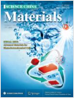Zhixiao Qin, Menglong Wang,
Rui Li, Yubin Chen*, “Novel
Cu3P/g-C3N4 p-n heterojunction photocatalysts for solar hydrogen
generation”, Science China- Materials 2018, 61(6),
861-868 Cited: 57(IF 2020: 8.273)
https://link.springer.com/article/10.1007%2Fs40843-017-9171-9 -
Yubo Tan, Maochang Liu,
Daixing Wei, Heming Tang, Xinjian Feng*, Shaohua Shen*, “A
simple green approach to synthesis of sub-100 nm carbon spheres as template for TiO2
hollow nanospheres with enhanced photocatalytic activities”, Science China
-Materials 2018, 61(6), 869-877 Cited: 11(IF 2020: 8.273)
https://link.springer.com/article/10.1007%2Fs40843-017-9183-2 -
 Tiezhu Guo, Di Zhou*, Wenfeng Liu, Jinzhan Su, “Recent advances in all-in-one flexible supercapacitors”, Science China
-Materials 2021, 64(1), 27-45 Cited: 6(IF 2020: 8.273)
Tiezhu Guo, Di Zhou*, Wenfeng Liu, Jinzhan Su, “Recent advances in all-in-one flexible supercapacitors”, Science China
-Materials 2021, 64(1), 27-45 Cited: 6(IF 2020: 8.273)
https://link.springer.com/article/10.1007/s40843-020-1417-8 -
Jinzhan Su*, Tao Zhang,
Lu Wang, Jinwen Shi, Yubin Chen, “Surface
treatment effect on the photocatalytic hydrogen generation of CdS/ZnS core-shell
microstructures”, Chinese Journal of Catalysis 2017,
38(3), 489-497 Cited: 28 (IF 2020: 8.271)
http://www.sciencedirect.com/science/article/pii/S1872206717300141 -
Yanrui Li, Yu Guo, Ran Long, Dong
Liu, Daming Zhao, Yubo Tan, Chao Gao*, Shaohua
Shen*, Yujie Xiong*, “Steering plasmonic hot electrons to realize enhanced
full-spectrum photocatalytic hydrogen evolution”, Chinese Journal of Catalysis
2018, 39(3), 453-462 Cited: 9 (IF 2020: 8.271)
https://www.sciencedirect.com/science/article/pii/S1872206717629383 -
Yi Shang, Fujun Niu, Shaohua
Shen*, “Photocatalytic water oxidation over BiVO4 with interface
energetics engineered by Co and Ni-metallated dicyanamides”, Chinese Journal of
Catalysis 2018, 39(3), 502-509 Cited: 9 (IF 2020: 8.271)
https://www.sciencedirect.com/science/article/pii/S1872206717629437 -
Mohammad Hatami, Jiafeng Geng,
Dengwei Jing*, “Enhanced Efficiency in Concentrated Parabolic Solar
Collector (CPSC) with a Porous Absorber Tube Filled with Metal Nanoparticle Suspension”,
Green Energy & Environment 2018,
3(2), 129-137
Cited: 20 (IF 2020:8.207) https://www.sciencedirect.com/science/article/pii/S2468025717301668 -
 Longzhou
Zhang, Dengwei Jing, Liejin Guo*, Xiangdong
Yao*, “In-situ photochemical synthesis of Zn doped Cu2O
hollow microcubes for high efficient photocatalytic H2 production”, ACS
Sustainable Chemistry & Engineering 2014, 2(6), 1446-1452 Cited: 70(IF 2020: 8.198)
Longzhou
Zhang, Dengwei Jing, Liejin Guo*, Xiangdong
Yao*, “In-situ photochemical synthesis of Zn doped Cu2O
hollow microcubes for high efficient photocatalytic H2 production”, ACS
Sustainable Chemistry & Engineering 2014, 2(6), 1446-1452 Cited: 70(IF 2020: 8.198)
http://pubs.acs.org/doi/abs/10.1021/sc500045e -
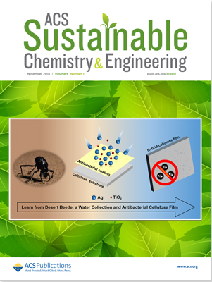Xiao Han, Yankuan Wei, Jinzhan
Su*, Yan Zhao*, “Low-Cost Oriented Hierarchical Growth of BiVO4/rGO/NiFe
Nanoarrays Photoanode for Photoelectrochemical Water Splitting
”, ACS Sustainable Chemistry & Engineering 2018,
6(11), 14695–14703 Cited: 19(IF 2020: 8.198)
https://pubs.acs.org/doi/10.1021/acssuschemeng.8b03259 -
Cong
Liu, Jinzhan Su*, Jinglan Zhou, Liejin
Guo, “A Multistep Ion Exchange Approach for Fabrication of Porous
BiVO4 Nanorod Arrays on Transparent Conductive Substrate”, ACS
Sustainable Chemistry & Engineering 2016, 4(9), 4492–4497 Cited: 17(IF 2020: 8.198)
http://pubs.acs.org/doi/abs/10.1021/acssuschemeng.6b00971 -
Naixu Li*, Rumeng Jiang, Yao Li, Jiancheng Zhou, Quanhong Ma,
Shaohua Shen, Maochang Liu*, “Plasma-assisted
Photocatalysis of CH4 and CO2 into Ethylene
”, ACS Sustainable Chemistry & Engineering 2019,
7(13), 11455-11463 Cited: 15(IF 2020: 8.198)
https://pubs.acs.org/doi/abs/10.1021/acssuschemeng.9b01284 -
Naixu Li, Wenlong Fu, Chen Chen, Maochang
Liu*, Fei Xue, Quanhao Shen, Jiancheng Zhou, “Controlling
the Core-Shell Structure of CuS@CdS Heterojunction via Seeded Growth with Tunable Photocatalytic
Activity”, ACS Sustainable Chemistry & Engineering 2018,
6(11), 15867–15875 Cited: 14(IF 2020: 8.198)
https://pubs.acs.org/doi/abs/10.1021/acssuschemeng.8b04606 - Menglong Wang, Zhixiao Qin, Zhidan Diao, Rui Li, Junbo Zhong, Dongmei Ma, Yubin Chen*, “Red Phosphorus/Carbon Nitride Van Der Waals Heterostructure for Photocatalytic Pure Water Splitting under Wide-Spectrum Light Irradiation”, ACS Sustainable Chemistry & Engineering 2020, 8(35), 13459-13466 Cited: 6(IF 2020: 8.198)
https://pubs.acs.org/doi/abs/10.1021/acssuschemeng.0c04372 -
 Yasir Abbas, Majid Basharat, Wei Liu, Muhammad Shuaib Khan, Shuangkun Zhang, Shafqat Ali, Zhanpeng Wu*, Dezhen Wu*, “Substantial Role of Nitrogen and Sulfur in Quaternary-Atom-Doped Multishelled Carbon Nanospheres for the Oxygen Evolution Reaction”, ACS Sustainable Chemistry & Engineering 2020,
8(10), 4284–4291 Cited: 5(IF 2020: 8.198)
Yasir Abbas, Majid Basharat, Wei Liu, Muhammad Shuaib Khan, Shuangkun Zhang, Shafqat Ali, Zhanpeng Wu*, Dezhen Wu*, “Substantial Role of Nitrogen and Sulfur in Quaternary-Atom-Doped Multishelled Carbon Nanospheres for the Oxygen Evolution Reaction”, ACS Sustainable Chemistry & Engineering 2020,
8(10), 4284–4291 Cited: 5(IF 2020: 8.198)
https://pubs.acs.org/doi/abs/10.1021/acssuschemeng.0c00592 -
 Naixu Li, Xu Liu, Jiancheng Zhou*, Quanhong Ma, Maochang Liu*, Wenshuai Chen*, “Enhanced Ni/W/Ti Catalyst Stability from Ti–O–W Linkage for Effective Conversion of Cellulose into Ethylene Glycol”, ACS Sustainable Chemistry & Engineering 2020, 8(26), Cited: 3(IF 2020: 8.198)9650–9659
Naixu Li, Xu Liu, Jiancheng Zhou*, Quanhong Ma, Maochang Liu*, Wenshuai Chen*, “Enhanced Ni/W/Ti Catalyst Stability from Ti–O–W Linkage for Effective Conversion of Cellulose into Ethylene Glycol”, ACS Sustainable Chemistry & Engineering 2020, 8(26), Cited: 3(IF 2020: 8.198)9650–9659
https://pubs.acs.org/doi/10.1021/acssuschemeng.0c00836 -
 Shaohua
Shen*, Mingtao Li, Liejin Guo, Jiangang
Jiang, Samuel S. Mao, “Surface
passivation of undoped hematite nanorod arrays via aqueous solution growth for improved
photoelectrochemical water splitting”, Journal of Colloid and
Interface Science 2014, 427, 20-24 Cited: 25
(IF 2020: 8.128)
Shaohua
Shen*, Mingtao Li, Liejin Guo, Jiangang
Jiang, Samuel S. Mao, “Surface
passivation of undoped hematite nanorod arrays via aqueous solution growth for improved
photoelectrochemical water splitting”, Journal of Colloid and
Interface Science 2014, 427, 20-24 Cited: 25
(IF 2020: 8.128)
http://www.sciencedirect.com/science/article/pii/S0021979713009788 -
 Dongxing Song, Dengwei Jing*, “Insight into the
localized surface plasmon resonance property of core-satellite nanostructures: Theoretical
prediction and experimental validation”, Journal of Colloid and
Interface Science 2017, 505, 373-382 Cited: 8
(IF 2020: 8.128)
Dongxing Song, Dengwei Jing*, “Insight into the
localized surface plasmon resonance property of core-satellite nanostructures: Theoretical
prediction and experimental validation”, Journal of Colloid and
Interface Science 2017, 505, 373-382 Cited: 8
(IF 2020: 8.128)
http://www.sciencedirect.com/science/article/pii/S0021979717306586 -
Cheng Cheng, Liuhao Mao, Zhenxiong Huang, Jinwen Shi*, “Botong Zheng, Yazhou Zhang, Liejin Guo, Bridging regulation in graphitic carbon nitride for band-structure modulation and directional charge transfer towards efficient H2 evolution under visible-light irradiation”, Journal of Colloid and
Interface Science 2021, 601, 220-228
(IF 2020: 8.128)
https://www.sciencedirect.com/science/article/abs/pii/S0021979721007888 -
Shichao Zong, Li Tian, Xiangjiu Guan*, Cheng Cheng, Jinwen Shi, Liejin Guo*, “Photocatalytic overall water splitting without noble-metal: Decorating CoP on Al-doped SrTiO3”, Journal of Colloid and
Interface Science 2022, 606, 491-499
(IF 2020: 8.128)
https://www.sciencedirect.com/science/article/abs/pii/S0021979721012777 -
Cheng Cheng, Chung-Li Dong, Jinwen Shi*, Liuhao Mao, Yu-Cheng Huang, Xing Kang, Shichao Zong, Shaohua Shen, “Regulation on polymerization degree and surface feature in graphitic carbon nitride towards efficient photocatalytic H2 evolution under visible-light irradiation”, Journal of Materials Science & Technology 2022, 98, 160-168
(IF 2020: 8.067)
https://www.sciencedirect.com/science/article/abs/pii/S1005030221005405 -
Huashan Li*,
Weibin Ma, Yongwang Lian, Xianlong Wang, Liang Zhao, “Global solar
radiation estimation with sunshine duration in Tibet, China”, Renewable
Energy 2011, 36(11), 3141-3145 Cited: 123(IF 2020: 8.001)
http://www.sciencedirect.com/science/article/pii/S0960148111001339 -
Jiabin
Fang, Nan Tu, Jinjia Wei*, “Numerical
investigation of start-up performance of a solar cavity receiver”, Renewable
Energy 2013, 53, 35-42 Cited: 22
(IF 2020: 8.001)
http://www.sciencedirect.com/science/article/pii/S0960148112007045 -
Shenming Xu, Jiangang Jiang*, Wenyi Ren, He Wang, Rui Zhang, Yingge Xie, Yubin Chen, “Construction of ZnO/CdS three-dimensional hierarchical photoelectrode for improved photoelectrochemical performance”, Renewable Energy 2020, 153, 241-248 Cited: 16(IF 2020: 8.001)
https://www.sciencedirect.com/science/article/pii/S0960148120301816 -
Jinwen Shi*,
Ya Liu, Zhenxiong Huang, Zhaohui Zhou, Junkai
Deng, Xu Liu, Mingtao Li*, “Novel cubic-phase pyrochlore
Sb(III)2Sn(IV)2O7 transformed from
Sn(II)2Sb(V)2O7: First-principles calculation-based prediction and
experimental evidence”, Materials & Design 2016, 110,
207-213 Cited: 3 (IF 2020: 7.991)
http://www.sciencedirect.com/science/article/pii/S0264127516310486 -
Mingtao
Li, Lipeng Zhang, Quan Xu, Jianbing Niu, Zhenhai Xia*, “N-doped
graphene as catalysts for oxygen reduction and oxygen evolution reactions: Theoretical
considerations”, Journal of Catalysis 2014, 314,
66-72 Cited: 407 (IF 2020: 7.920)
http://www.sciencedirect.com/science/article/pii/S0021951714000736 -
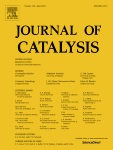Daming
Zhao, Jie Chen, Chung-Li Dong, Wu Zhou, Yu-Cheng Huang,
Samuel S. Mao, Liejin Guo, Shaohua Shen*, “Interlayer
interaction in ultrathin nanosheets of graphitic carbon nitride for efficient photocatalytic
hydrogen evolution”, Journal of Catalysis 2017,
352, 491-497 Cited: 41(IF 2020: 7.920)
http://www.sciencedirect.com/science/article/pii/S0021951717302270 -
Fujun
Niu, Chung-Li Dong, Changbao Zhu, Yu-Cheng Huang, Miao Wang, Joachim
Maier, Yan Yu*, Shaohua Shen*, “A novel hybrid artificial
photosynthesis system using MoS2 embedded in carbon nanofibers as electron relay and
hydrogen evolution catalyst”, Journal of Catalysis 2017,
352, 35-41 Cited: 25(IF 2020: 7.920)
http://www.sciencedirect.com/science/article/pii/S0021951717301483 -
Danni Xu, Qianqian
Chu, Zhuangzhi Wu, Qingyun Chen, Sheng-Qiang Fan*, Guan-Jun Yang*, Baizeng Fang*,
“Molecular engineering of photosensitizers for fast and stable photocatalytic hydrogen
generation”, Journal of Catalysis 2015, 325,
118-127 Cited: 25(IF 2020: 7.920)
http://www.sciencedirect.com/science/article/pii/S0021951715000743 -
Miao
Wang, Chung-Li Dong, Yu-Cheng Huang, Shaohua Shen*, “Bifunctional
cobalt phosphide nanoparticles with convertible surface structure for efficient electrocatalytic
water splitting in alkaline solution”, Journal of Catalysis
2019, 371, 262-269 Cited: 25(IF 2020: 7.920)
https://www.sciencedirect.com/science/article/pii/S002195171930065X -
Fujun
Niu, Shaohua Shen*, Liejin Guo, “A
noble-metal-free artificial photosynthesis system with TiO2 as electron relay for
efficient photocatalytic hydrogen evolution”, Journal of Catalysis 2016,
344, 141-147 Cited: 19(IF 2020: 7.920)
http://www.sciencedirect.com/science/article/pii/S0021951716301713 -
 Guorui Yang, Wei Yan*, Qian
Zhang, Shaohua Shen*, Shujiang Ding, “One-dimensional
CdS/ZnO core/shell nanofibers via single-spinneret electrospinning: tunable
morphology and efficient photocatalytic hydrogen
production”, Nanoscale 2013, 5(24),
12432-12439 Cited: 159 (IF 2020: 7.790)
Guorui Yang, Wei Yan*, Qian
Zhang, Shaohua Shen*, Shujiang Ding, “One-dimensional
CdS/ZnO core/shell nanofibers via single-spinneret electrospinning: tunable
morphology and efficient photocatalytic hydrogen
production”, Nanoscale 2013, 5(24),
12432-12439 Cited: 159 (IF 2020: 7.790)
http://pubs.rsc.org/en/Content/ArticleLanding/2013/NR/c3nr03462c#!divAbstract -
Sherif Abdulkader Tawfik*,
Sajid Ali, Marco Fronzi, Mehran Kianinia, Trong Toan Tran, Catherine Stampfl, Igor
Aharonovich, Milos Toth, Michael J. Ford*, “First principles investigation of quantum
emission from hBN defects”, Nanoscale 2017, 9(36),
13575-13582 Cited: 140(IF 2020: 7.790)
http://pubs.rsc.org/en/content/articlelanding/2017/nr/c7nr04270a/unauth -
Dawei Chen, Chung-Li
Dong*, Yuqin Zou*, Dong Su*, Yu-Cheng Huang, Li Tao, Shuo Dou, Shaohua Shen*,
Shuangyin Wang*, “In situ evolution of highly dispersed amorphous CoOx clusters
for oxygen evolution reaction”, Nanoscale 2017, 9(33),
11969-11975 Cited: 92(IF 2020: 7.790)
http://pubs.rsc.org/en/content/articlelanding/2017/nr/c7nr04381c#!divAbstract -
 Shaohua
Shen*, Penghui Guo,
Damon Wheeler, Jiangang Jiang, Sarah A. Lindley, Coleman X.
Kronawitter, Jin Z. Zhang, Liejin Guo, Samuel S. Mao*,
“Physical
and Photoelectrochemical Properties of Zr-doped Hematite Nanorod Arrays”, Nanoscale 2013,
5(20), 9867-9874 Cited: 79(IF 2020: 7.790)
Shaohua
Shen*, Penghui Guo,
Damon Wheeler, Jiangang Jiang, Sarah A. Lindley, Coleman X.
Kronawitter, Jin Z. Zhang, Liejin Guo, Samuel S. Mao*,
“Physical
and Photoelectrochemical Properties of Zr-doped Hematite Nanorod Arrays”, Nanoscale 2013,
5(20), 9867-9874 Cited: 79(IF 2020: 7.790)
http://pubs.rsc.org/en/content/articlelanding/2013/nr/c3nr03245k -
Meng Wang, Myeongwhun Pyeon, Yakup Goenuellue,
Ali Kaouk, Shaohua Shen, Liejin Guo*, Sanjay
Mathur*, “Constructing Fe2O3/TiO2 Core-Shell
Photoelectrodes for Efficient Photoelectrochemical Water Splitting”, Nanoscale
2015, 7(22), 10094-10100 Cited: 65(IF 2020: 7.790)
http://pubs.rsc.org/en/content/articlelanding/2015/nr/c5nr01493j#!divAbstract -
Naixu Li, Maochang
Liu, Zhaohui Zhou, Jiancheng Zhou*, Yueming Sun, Liejin
Guo*, “Charge Separation in Facet Engineered Chalcogenide Photocatalyst: A
Selective Photocorrosion Approach”, Nanoscale 2014,
6(16), 9695-9702 Cited: 60(IF 2020: 7.790)
http://pubs.rsc.org/en/content/articlelanding/2014/nr/c4nr02068e#!divAbstract -
Dandan Ma, Jianwen Shi*, Yajun Zou, Zhaoyang Fan, Jinwen
Shi, Linhao Cheng, Diankun Sun, Zeyan Wang, Chunming Niu, “Multiple
carrier-transfer pathways in flower-like In2S3/CdIn2S4/In2O3
ternary heterostructure for enhanced photocatalytic hydrogen production”,
Nanoscale 2018, 10(16), 7860-7870 Cited: 50(IF 2020: 7.790)
http://pubs.rsc.org/en/content/articlelanding/2018/nr/c8nr00170g/unauth#!divAbstract -
Xilin She, Dongjiang Yang*, Dengwei
Jing, Fang Yuan, Weiyou Yang*, Liejin Guo, Yanke
Che*, “Nitrogen-doped One-Dimensional (1D) Macroporous Carbonaceous
Nanotube Arrays and its Application for Electrocatalytic Oxygen Reduction Reactions”, Nanoscale
2014, 6(19), 11057-11061 Cited: 46(IF 2020: 7.790)
http://pubs.rsc.org/en/content/articlelanding/2014/nr/c4nr03340j#!divAbstract -
Ya Liu, Liang Zhao, Mingtao
Li*, Liejin Guo, “TiO2/CdSe Core-shell Nanofiber Film
for Photoelectrochemical Hydrogen Generation”, Nanoscale 2014,
6(13), 7397-7404 Cited: 42(IF 2020: 7.790)
http://pubs.rsc.org/en/content/articlelanding/2014/nr/c4nr00856a#!divAbstract -
Long Liu, Huilin Hou, Lin
Wang, Rui Xu, Yong Lei, Shaohua Shen, Dongjiang Yang*, Weiyou Yang*, “Transparent
CdS@TiO2 Nanotextile Photoanode with Boosted Photoelectrocatalytic Efficiency and
Stability”, Nanoscale 2017, 9(40), 15650-15657 Cited: 42(IF 2020: 7.790)
http://pubs.rsc.org/en/content/articlelanding/2017/nr/c7nr05658c#!divAbstract -
Aizhao Pan, Matthew Jurow,
Yanrui Zhao, Fen Qiu, Ya Liu, Juan Yang, Jeffrey J. Urban, Ling He, Yi Liu,
“Templated Self-Assembly of One-Dimensional CsPbX3 Perovskite Nanocrystal
Superlattices”, Nanoscale 2017, 9(45), 17688-17693 Cited: 28(IF 2020: 7.790)
http://pubs.rsc.org/en/content/articlelanding/2017/nr/c7nr06579e#!divAbstract -
Chao Du, Di Zhou*, Huanhuan Guo, Yongqiang Pang, Hongyu Shi, Wenfeng Liu, Jinzhan Su, Charanjeet Singh, Sergei Trukhanov, Alex Trukhanov, Larissa Panina, Zhuo Xu, “An ultra-broadband terahertz metamaterial coherent absorber using multilayer electric ring resonator structures based on anti-reflection coating”, Nanoscale 2020,
12(17), 9769-9775 Cited: 17(IF 2020: 7.790)
https://pubs.rsc.org/en/content/articlelanding/2020/NR/C9NR10668E#!divAbstract -
Alireza Kargar, Justin S.
Cheung, Chin-Hung Liu, Tae Kyoung Kim, Conor T. Riley, Shaohua Shen, Zhaowei Liu,
Donald J. Sirbuly, Deli Wangabf, Sungho Jin*,
“NiOx-Fe2O3-coated p-Si photocathodes for enhanced solar
water splitting in neutral pH water”, Nanoscale 2015,
7(11), 4900-4905
Cited: 16(IF 2020: 7.790)
http://pubs.rsc.org/en/content/articlelanding/2015/nr/c4nr07074g#!divAbstract -
Yichao
Liu, Shaohua Shen, Feng Ren*, Jianan Chen,
Yanming Fu, Xudong Zheng, Guangxu Cai, Zhuo Xing, Hengyi Wu, Changzhong
Jiang*, “Fabrication of porous TiO2 nanorod arrays
photoelectrodes with enhanced photoelectrochemical water splitting by helium ions
implantation”, Nanoscale 2016, 8(20), 10642-10648
http://pubs.rsc.org/en/content/articlelanding/2015/nr/c5nr05594f#!divAbstract
Cited: 15(IF 2020: 7.790)
-
Xixi Wang,
Maochang Liu*, Yubin Chen, Wenlong Fu, Bin
Wang, Liejin Guo, “Symmetry breaking in semiconductor nanocrystals
via kinetic-controlled surface diffusion: a strategy for manipulating the junction
structure”, Nanoscale 2016, 8(35), 15970-15977 Cited: 7(IF 2020: 7.790)
http://pubs.rsc.org/en/content/articlelanding/2016/nr/c6nr04063b#!divAbstract -
Jin Hou, Yong Du, Tao
Zhang, Chandra Mohan*, Oomman Varghese*, “PEGylated (NH4)xWO3
nanorod mediated rapid photonecrosis of breast cancer cells”, Nanoscale 2019,
11(21), 10209-10219 Cited: 5(IF 2020: 7.790)
https://pubs.rsc.org/en/content/articlelanding/2019/nr/c9nr01077g/unauth#!divAbstract -
Jan E. Stehr*, Shula L.
Chen, Weimin M. Chen, Li Cai, Shaohua Shen, Irina A. Buyanova*,
“Identification of a N-related acceptor in ZnO nanowires”, Nanoscale
2019, 11(22), 10921-10926 Cited: 2(IF 2020: 7.790)
https://pubs.rsc.org/en/content/articlelanding/2019/nr/c9nr03100f#!divAbstract -
 Haimin Zhang, Yibing Li, Xiaolu Liu, Porun Liu, Yun
Wang, Taicheng An*, Huagui Yang, Dengwei Jing, Huijun Zhao*,
“Determination of Iodide via Direct Fluorescence Quenching at Nitrogen-Doped Carbon Quantum
Dot Fluorophores”, Environmental Science & Technology Letters
2014, 1(1), 87-91 Cited: 65 (IF 2020: 7.653)
Haimin Zhang, Yibing Li, Xiaolu Liu, Porun Liu, Yun
Wang, Taicheng An*, Huagui Yang, Dengwei Jing, Huijun Zhao*,
“Determination of Iodide via Direct Fluorescence Quenching at Nitrogen-Doped Carbon Quantum
Dot Fluorophores”, Environmental Science & Technology Letters
2014, 1(1), 87-91 Cited: 65 (IF 2020: 7.653)
http://pubs.acs.org/doi/abs/10.1021/ez400137j -
 Huanhuan Guo, Di Zhou*, Chao Du, Pengjian Wang, Wenfeng Liu, Lixia Pang, Qiuping Wang, Jinzhan Su, Charanjeet Singh, Sergei Trukhanov, “Temperature stable Li2Ti0.75(Mg1/3Nb2/3)0.25O3-based microwave dielectric ceramics with low sintering temperature and ultra-low dielectric loss for dielectric resonator antenna applications”, Journal of Materials Chemistry C 2020, 8(14), 4690-4700 Cited: 70(IF 2020: 7.393)
Huanhuan Guo, Di Zhou*, Chao Du, Pengjian Wang, Wenfeng Liu, Lixia Pang, Qiuping Wang, Jinzhan Su, Charanjeet Singh, Sergei Trukhanov, “Temperature stable Li2Ti0.75(Mg1/3Nb2/3)0.25O3-based microwave dielectric ceramics with low sintering temperature and ultra-low dielectric loss for dielectric resonator antenna applications”, Journal of Materials Chemistry C 2020, 8(14), 4690-4700 Cited: 70(IF 2020: 7.393)
https://pubs.rsc.org/en/content/articlelanding/2020/TC/D0TC00326C#!divAbstract
-
Yubin Chen, Wenyu Zheng, Sebastián Murcia-López, Fei Lv, Joan R. Morante, Lionel Vayssieres, Clemens Burda*, “Light management in photoelectrochemical water splitting – from materials to device engineering”, Journal of Materials Chemistry C 2021, 9(11), 3726-3748 Cited: 1(IF 2020: 7.393)
https://pubs.rsc.org/en/content/articlelanding/2021/tc/d0tc06071b
-
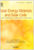Shangpu Liu, Jinglan Zhou,
Youjun Lu, Jinzhan Su*, “Pulsed laser/ electrodeposited
CuBi2O4/BiVO4 p-n heterojunction for solar water splitting”,
Solar Energy Materials and Solar Cells 2018, 180, 123-129 Cited: 18 (IF 2020: 7.267)
https://www.sciencedirect.com/science/article/pii/S0927024818300916 -
Ingrid Rodríguez-Gutiérrez*, Essossimna Djatoubai, Jinzhan Su, Alberto Vega-Poot, Geonel Rodríguez-Gattorno, Flavio L.Souza*, Gerko Oskam*, “An intensity-modulated photocurrent spectroscopy study of the charge carrier dynamics of WO3/BiVO4 heterojunction systems”, Solar Energy Materials and Solar Cells 2020, 208, 110378 Cited: 13(IF 2020: 7.267)
https://www.sciencedirect.com/science/article/pii/S0927024819307044 -
Tao Zhang, Maggie Paulose, Ram Neupane, Lilly A. Schaffer, Dhan B. Rana, Jinzhan Su*, Liejin Guo, Oomman K. Varghese*, “Nanoporous WO3 films synthesized by tuning anodization conditions for photoelectrochemical water oxidation”, Solar Energy Materials and Solar Cells 2020, 209, 110472 Cited: 8(IF 2020: 7.267)
https://www.sciencedirect.com/science/article/pii/S0927024820300787 -
Yankuan Wei, Jinzhan Su,
Liejin Guo, Lionel Vayssieres*, “Something new under the
sun for ultra low-cost single-junction PhotoAnodes for highly efficient photocatalytic water
splitting”, Solar Energy Materials and Solar Cells 2019,
201, 110083 Cited: 6(IF 2020: 7.267)
https://www.sciencedirect.com/science/article/pii/S092702481930412X -
Muhammad Shuaib Khan, Zhidan Diao, Minoru
OSada, Shaohua Shen*, “Nitrogen doped ultrathin calcium/sodium niobate
perovskite nanosheets for photocatalytic water oxidation”, Solar Energy Materials and
Solar Cells 2020,
205, 110283 Cited: 5(IF 2020: 7.267)
https://www.sciencedirect.com/science/article/pii/S0927024819306129 -
Dávid Lukács, Miklós Németh, Łukasz Szyrwiel, Levente Illés,
Béla Pécz, Shaohua Shen, József S.Pap*, “Behavior of a Cu-Peptide complex
under water oxidation conditions – Molecular electrocatalyst or precursor to nanostructured CuO
films?”, Solar Energy Materials and Solar Cells 2019,
201, 110079 Cited: 2(IF 2020: 7.267)
https://www.sciencedirect.com/science/article/pii/S0927024819304088 -
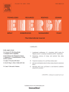Liejin
Guo*, Yubin Chen*, Jinzhan Su, Maochang
Liu, Ya Liu, “Obstacles of solar-powered photocatalytic water
splitting for hydrogen production: A perspective from energy flow and mass flow”, Energy
2019, 172, 1079-1086 Cited: 45(IF 2020: 7.147)
https://www.sciencedirect.com/science/article/pii/S0360544219302397 -
Liya
Zhu, Youjun Lu*, Shaohua Shen, “Solar fuel
production at high temperatures using ceria as a dense membrane”, Energy 2016,
104, 53-63 Cited: 26(IF 2020: 7.147)
http://www.sciencedirect.com/science/article/pii/S0360544216303553 -
Fei Cao*,
Huashan Li, Hailiang Chao, Liang Zhao*, Liejin Guo, “Optimization
of the concentration field in a suspended photocatalytic reactor”, Energy 2014,
74, 140-146 Cited: 13(IF 2020: 7.147)
http://www.sciencedirect.com/science/article/pii/S0360544214004812 -
Zilong Zeng, Dengwei Jing* , LiejinGuo, “Efficient hydrogen production in a spotlight reactor with plate photocatalyst of TiO2/NiO heterojunction supported on nickel foam”, Energy 2021,
228, 120578. Special Issue：Micro/Nano particles for efficiency enhancement of energy systems(IF 2020: 7.147)
https://www.sciencedirect.com/science/article/abs/pii/S0360544221008276 -
Dong
Tian, Bin Lin*, Yang Yang, Yonghong Chen*, Xiaoyong Lu, Wei Liu, Enrico
Traversa*, “Enhanced Performance of Symmetrical Solid Oxide Fuel Cells Using A
Doped Ceria Buffer Layer”, Electrochimica Acta 2016, 208,
318-324 Cited: 31(IF 2020: 6.901)
http://www.sciencedirect.com/science/article/pii/S0013468616310854 -
Ingrid
Rodríguez-Gutiérrez*, Essossimna Djatoubai, Manuel Rodriguez-Perez,
Jinzhan Su*, Geonel Rodriguez-Gattorno, Lionel Vayssieres, Gerko
Oskam*, “Photoelectrochemical water oxidation at FTO|WO3@CuWO4 and
FTO|WO3@CuWO4|BiVO4 heterojunction systems: An IMPS
analysis”, Electrochimica Acta 2019, 308, 317-327 Cited: 23(IF 2020: 6.901)
https://www.sciencedirect.com/science/article/pii/S0013468619307054 -
Xiao-He
Liu, Fan Du, Qing-Yun Chen*, Yun-Hai
Wang, “An effective self-driven PFC-PEC hybrid system for hydrogen generation from
organic substance”, Electrochimica Acta 2017, 245,
379-385 Cited: 14(IF 2020: 6.901)
http://www.sciencedirect.com/science/article/pii/S0013468617311593 -
Juanwen
Chen, Liejin Guo*, Xiaowei Hu, Zhenshan
Cao, Yechun Wang, “Dynamics of single bubble departure from
TiO2 nanorod-array photoelectrode”, Electrochimica Acta
2018, 274, 57-66 Cited: 14(IF 2020: 6.901)
https://www.sciencedirect.com/science/article/pii/S0013468618307837 -
Fujun
Niu, Shaohua Shen*, Jian Wang, Liejin
Guo, “Engineering Interfacial Energetics: A Novel Hybrid System of Metal Oxide
Quantum Dots and Cobalt Complex for Photocatalytic Water Oxidation”, Electrochimica
Acta 2016, 212, 905-911 Cited: 12(IF 2020: 6.901)
http://www.sciencedirect.com/science/article/pii/S0013468616315973 -
Xiaowei Hu*,
Zhenshan Cao, Yechun Wang, Shaohua Shen, Liejin
Guo*, Juanwen Chen, “Single Photogenerated Bubble at Gas-Evolving
TiO2 Nanorod-Array Electrode”, Electrochimica Acta
2016, 202, 175-185 Cited: 10(IF 2020: 6.901)
http://www.sciencedirect.com/science/article/pii/S0013468616308271 -
Miao Wang, Meng Wang, Yanming
Fu, Shaohua Shen*, “Cobalt oxide and carbon modified hematite
nanorod arrays for improved photoelectrochemical water splitting”, Chinese Chemical
Letters 2017, 28(12), 2207–2211 Cited: 22(IF 2020: 6.779)
http://www.sciencedirect.com/science/article/pii/S1001841717305065 -
Li Cai, Yanchang Du, Xiangjiu
Guan, Shaohua Shen*, “CdS nanocrystallites sensitized ZnO nanorods
with plasmon enhanced photoelectrochemical performance”, Chinese Chemical Letters
2019, 30(12), 2363-2367 Cited: 15(IF 2020: 6.779)
https://www.sciencedirect.com/science/article/pii/S1001841719304024 -
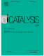Yuchao Hu, Gaosheng Li,
Shichao Zong, Jinwen Shi*, Liejin Guo, “Self-assembled
nanohybrid of cadmium sulfide and calcium niobate: photocatalyst with enhanced charge separation for
efficient visible light induced hydrogen generation”, Catalysis Today
2018, 315, 117-125
Cited: 12(IF 2020: 6.766)
https://www.sciencedirect.com/science/article/pii/S0920586118302761 -
Michael Noland*, Marco Fronzi, “Activation
of CO2 at Chromia-Nanocluster-Modified Rutile and Anatase TiO2”, Catalysis
Today 2019, 316, 68-74 Cited: 1
(IF 2020: 6.766)
https://www.sciencedirect.com/science/article/pii/S0920586118317127?via%3Dihub -
Naixu Li, Hailu Huang,
Rehana Bibi, Quanhao Shen, Richard Ngulube, Jiancheng Zhou*, Maochang Liu*,
“Noble-metal-free MOF derived hollow CdS/TiO2 decorated with NiS cocatalyst for
efficient photocatalytic hydrogen evolution”, Applied Surface Science
2019, 476, 378-386 Cited: 39
(IF 2020: 6.707)
https://www.sciencedirect.com/science/article/pii/S0169433219301278 -
Rui Song, Wu Zhou, Bing
Luo, Dengwei Jing*, “Highly efficient photocatalytic H2
evolution using TiO2 nanoparticles integrated with electrocatalytic metal phosphides as
cocatalysts”, Applied Surface Science 2017, 416, 957-964
Cited: 34 (IF 2020: 6.707)
http://www.sciencedirect.com/science/article/pii/S0169433217312564 -
Ying Yang*, Xiaohui Ning, Hongsheng Tang, Liejin
Guo, Hongtan Liu, “Effects of passive films on corrosion resistance of uncoated
SS316L bipolar plates for proton exchange membrane fuel cell application”, Applied
Surface Science 2014, 320, 274-280 Cited: 26
(IF 2020: 6.707)
http://www.sciencedirect.com/science/article/pii/S0169433214020273 -
Marco
Fronzi, M. Hussein N. Assadi*, Dorian A. H. Hanaor, “Theoretical insights into the
hydrophobicity of low index CeO2 surfaces”, Applied Surface Science
2019, 478, 68-74 Cited: 21
(IF 2020: 6.707)
https://www.sciencedirect.com/science/article/pii/S0169433219302399?via%3Dihub -
Bing Luo,
Rui Song, Jiafeng Geng, Dengwei Jing*, Zhenxiong
Huang, “Strengthened spatial charge separation over Z-scheme heterojunction
photocatalyst for efficient photocatalytic H2 evolution”, Applied Surface
Science 2019, 475, 453-461 Cited: 9
(IF 2020: 6.707)
https://www.sciencedirect.com/science/article/pii/S0169433218336328 -
 Quanhao Shen, Naixu Li, Rehana Bibi, Ngulube Richard, Maochang Liu, Jiancheng Zhou*, Dengwei Jing *, “Incorporating nitrogen defects into novel few-layer carbon nitride nanosheets for enhanced photocatalytic H2 production”, Applied Surface Science 2020, 529, 147104 Cited: 5(IF 2020: 6.707)
Quanhao Shen, Naixu Li, Rehana Bibi, Ngulube Richard, Maochang Liu, Jiancheng Zhou*, Dengwei Jing *, “Incorporating nitrogen defects into novel few-layer carbon nitride nanosheets for enhanced photocatalytic H2 production”, Applied Surface Science 2020, 529, 147104 Cited: 5(IF 2020: 6.707)
https://www.sciencedirect.com/science/article/abs/pii/S0169433220318614 -
Yu-Cheng Huang, K.Thanigai Arul, Chi-Liang Chen, Jeng-Lung Chen, Jie Chen, Shaohua Shen, Ying-Ru Lu, Chun-Hong Kuo, Chung-Li Dong*, Wu-Ching Chou*, “Electronic structures associated with enhanced photocatalytic activity in nanogap-engineered g-C3N4/Ag@SiO2 hybrid nanostructures”, Applied Surface Science 2020, 514, 145907 Cited: 3(IF 2020: 6.707)
https://www.sciencedirect.com/science/article/pii/S0169433220306632 -
 Yubin Chen, Lianzhou Wang, Gaoqing (Max) Lu, Xiangdong
Yao*, Liejin Guo*, “Nanoparticles enwrapped
with nanotubes: A unique architecture of CdS/titanate nanotubes for efficient photocatalytic
hydrogen production from water”, Journal of Materials
Chemistry 2011, 21(13), 5134-5141 Cited: 116
(IF 2013: 6.626)
Yubin Chen, Lianzhou Wang, Gaoqing (Max) Lu, Xiangdong
Yao*, Liejin Guo*, “Nanoparticles enwrapped
with nanotubes: A unique architecture of CdS/titanate nanotubes for efficient photocatalytic
hydrogen production from water”, Journal of Materials
Chemistry 2011, 21(13), 5134-5141 Cited: 116
(IF 2013: 6.626)
http://pubs.rsc.org/en/content/articlelanding/2011/jm/c0jm03945d#
-
 Yubin
Chen, Liejin Guo*,
“Highly efficient visible-light-driven photocatalytic hydrogen production
from water using Cd0.5Zn0.5S/TNTs (titanate nanotubes) nanocomposites
without noble metals”, Journal of Materials Chemistry 2012,
22(15), 7507-7514 Cited: 88 (IF 2013: 6.626)
Yubin
Chen, Liejin Guo*,
“Highly efficient visible-light-driven photocatalytic hydrogen production
from water using Cd0.5Zn0.5S/TNTs (titanate nanotubes) nanocomposites
without noble metals”, Journal of Materials Chemistry 2012,
22(15), 7507-7514 Cited: 88 (IF 2013: 6.626)
http://pubs.rsc.org/en/content/articlelanding/2012/JM/c2jm16797b -
Martin L.
Green*, Laura Espinal*, Enrico
Traversa*, Eric J. Amis*, “Materials
for
sustainable development”, MRS Bulletin 2012, 37(4),
303-309 Cited: 42 (IF 2020: 6.578)
http://journals.cambridge.org/action/displayAbstract?fromPage=online&aid=8523780 -
Zhanpeng Wu, Majid Basharat, Muhammud Shuaib Khan, Yasir Abbas, Shuangkun Zhang, Hanlin Ma*, Weiliu*, “Cyclotriphosphazene (P3N3) hybrid framework for aggregation induced photocatalytic hydrogen evolution and degradation of rhodamine B”, Materials Chemistry Frontiers 2020, 4(11), 3216-3225 Cited: 1 (IF 2020: 6.482)
https://pubs.rsc.org/en/content/articlelanding/2020/qm/d0qm00216j/unauth#!divAbstract -
Aizhao Pan*, Xiaoqin Ma, Shengying Huang, Youshen Wu, Mengjun
Jia, Yeming Shi, Ya Liu, Peihua Wangyang, Ling He*, Yi Liu*,
“CsPbBr3 Perovskite Nanocrystal Grown on MXene Nanosheets for Enhanced
Photoelectric Detection and Photocatalytic CO2 Reduction”, The Journal
of Physical Chemistry Letters 2019, 10(21), 6590-6597 Cited: 91(IF 2020: 6.475)
https://pubs.acs.org/doi/abs/10.1021/acs.jpclett.9b02605 -
Jinzhan Su, Yankuan Wei,
Lionel Vayssieres*, “Stability and Performance of Sulfide-, Nitride-,
and Phosphide-Based Electrodes for Photocatalytic Solar Water Splitting”, The Journal of Physical Chemistry Letters 2017, 8(20), 5228-5238 Cited: 71(IF 2020: 6.475)
http://pubs.acs.org/doi/abs/10.1021/acs.jpclett.7b00772 -
 Yaqing Wei, Zhaohui Zhou, Run Long*,
“Defects Slow Down Nonradiative Electron–Hole Recombination in TiS3
Nanoribbons: A Time-Domain Ab Initio Study”, The Journal of Physical Chemistry
Letters 2017, 8(18), 4522-4529 Cited: 11(IF 2020: 6.475)
http://pubs.acs.org/doi/abs/10.1021/acs.jpclett.7b02099
Yaqing Wei, Zhaohui Zhou, Run Long*,
“Defects Slow Down Nonradiative Electron–Hole Recombination in TiS3
Nanoribbons: A Time-Domain Ab Initio Study”, The Journal of Physical Chemistry
Letters 2017, 8(18), 4522-4529 Cited: 11(IF 2020: 6.475)
http://pubs.acs.org/doi/abs/10.1021/acs.jpclett.7b02099
-
Lingyun He, Wu Zhou, Liu Hong,
Daixing Wei, Guangxu Wang, Xiaobo Shi, Shaohua Shen*,
“Cascading Interfaces Enable n-Si Photoanodes for Efficient and Stable Solar Water
Oxidation”, The Journal of Physical Chemistry Letters 2019,
10(9), 2278-2285 Cited: 8(IF 2020: 6.475)
https://pubs.acs.org/doi/abs/10.1021/acs.jpclett.9b00746 -
Fengshuang Han, Liya Zhu, Zhenxiong Huang, Chaohui Zhou*,
“Photoinduced Superhydrophilicity of Anatase TiO2 Surface Uncovered by First-Principles Molecular Dynamics”, The Journal of Physical Chemistry Letters 2020, 11(18), 7590-7594 Cited: 4(IF 2020: 6.475)
https://pubs.acs.org/doi/abs/10.1021/acs.jpclett.0c02219 -
Maochang Liu, Dongxing Song, Xin Wang, Chengzhen Sun, Dengwei Jing*,
“Asymmetric Two-Layer Porous Membrane for Gas Separation”, The Journal of Physical Chemistry Letters 2020, 11(15), 6359–6363 Cited: 3(IF 2020: 6.475)
https://pubs.acs.org/doi/10.1021/acs.jpclett.0c01797 -
Xin Zhang, Xiaodong Dai*, Qiaorong Han, Jishi Zhao, Dengwei Jing*, Fei Liu, Lei Li, Yanping Xin, Kun Liu, “Prediction and New Insight for the Drag Reduction of Turbulent Flow with Polymers and Its Degradation Mechanism”, The Journal of Physical Chemistry Letters 2021, 12, 7201–7206(IF 2020: 6.475)
https://pubs.acs.org/doi/abs/10.1021/acs.jpclett.1c02027 -
Yubin Chen*, Xiaoyang Feng, Xu
Guo, Wenyu Zheng, “Toward a fundamental understanding of
factors affecting the function of cocatalysts in photocatalytic water splitting”,
Current Opinion in Green and Sustainable Chemistry 2019,
17, 21-28 Cited: 4(IF 2020: 6.457)
https://www.sciencedirect.com/science/article/pii/S2452223618301068 -
Bin
Wang, Shaohua Shen*, Samuel S. Mao*, “Black TiO2 for solar hydrogen
conversion”, Journal of Materiomics 2017, 3(2),
96-111 Cited: 82(IF 2020: 6.425)
http://www.sciencedirect.com/science/article/pii/S2352847816301344 -
 Shaohua Shen*, Jianan Chen, Li
Cai, Feng Ren, Liejin Guo, “A Strategy of Engineering
Impurity Distribution in Metal Oxide Nanostructures for Photoelectrochemical Water
Splitting”, Journal of Materiomics 2015, 1(2),
134-145 Cited: 18(IF 2020: 6.425)
Shaohua Shen*, Jianan Chen, Li
Cai, Feng Ren, Liejin Guo, “A Strategy of Engineering
Impurity Distribution in Metal Oxide Nanostructures for Photoelectrochemical Water
Splitting”, Journal of Materiomics 2015, 1(2),
134-145 Cited: 18(IF 2020: 6.425)
http://www.sciencedirect.com/science/article/pii/S2352847815000301 -
Xing Kang, Jinwen Shi*, Huaiyu Lu, Guiquan Zhang*, Jiantao Yao, Lulu Hou, Feng Chen, Samuel S. Mao, Vassilios D. Binas, Shaohua Shen*, “Nanosized BaSnO3 as Electron Transport Promoter Coupled with g-C3N4 toward Enhanced Photocatalytic H2 Production”, Advanced Sustainable Systems 2021, Early View
(IF 2020: 6.271)
https://onlinelibrary.wiley.com/doi/10.1002/adsu.202100138 - Ning Zhang, Jinwen Shi, Samuel S. Mao, Liejin Guo*, “Co3O4 quantum dots: reverse micelle synthesis and visible-light-driven photocatalytic overall water splitting”, Chemical Communications 2014, 50(16), 2002-2004 Cited: 86(IF 2020: 6.222) http://pubs.rsc.org/en/content/articlelanding/2014/cc/c3cc48026g#!divAbstract
-
 Longzhou Zhang, Jinwen
Shi, Maochang
Liu, Dengwei Jing*, Liejin Guo,
“Photocatalytic reforming of glucose under visible light over morphology
controlled Cu2O: efficient charge separation by crystal facet engineering”, Chemical
Communications 2014, 50(2), 192-194 Cited: 81 (IF 2020: 6.222)
Longzhou Zhang, Jinwen
Shi, Maochang
Liu, Dengwei Jing*, Liejin Guo,
“Photocatalytic reforming of glucose under visible light over morphology
controlled Cu2O: efficient charge separation by crystal facet engineering”, Chemical
Communications 2014, 50(2), 192-194 Cited: 81 (IF 2020: 6.222)
http://pubs.rsc.org/en/content/articlelanding/2013/cc/c3cc46423g#!divAbstract -
 Po
Wu, Jiarui Wang, Jing Zhao, Liejin Guo*, Frank
Osterloh*, “High alkalinity boosts visible light driven H2
evolution activity of g-C3N4 in aqueous methanol”, Chemical
Communications 2014, 50(98), 15521-15524 Cited: 56(IF 2020: 6.222)
Po
Wu, Jiarui Wang, Jing Zhao, Liejin Guo*, Frank
Osterloh*, “High alkalinity boosts visible light driven H2
evolution activity of g-C3N4 in aqueous methanol”, Chemical
Communications 2014, 50(98), 15521-15524 Cited: 56(IF 2020: 6.222)
http://pubs.rsc.org/en/content/articlelanding/2014/cc/c4cc08063g#!divAbstract -
Yuanyuan Wang, Wei Wang,
Fei Xue, Yong Cheng, Kai Liu, Qiaobao Zhang, Maochang Liu, Shuifen
Xie*, “One-pot synthesis of Pd@Pt3Ni core–shell nanobranches with ultrathin
Pt3Ni{111} skins for efficient ethanol electrooxidation”, Chemical
Communications 2018, 54(41), 5185-5188 Cited: 27(IF 2020: 6.222)
http://pubs.rsc.org/en/content/articlelanding/2018/cc/c8cc02816h -
Maochang
Liu, Kyle D. Gilroy, Hsin-Chieh Peng, Miaofang Chi, Liejin Guo, Younan
Xia*, “The effect of surface capping on the diffusion of adatoms in the
synthesis of Pd@Au core–shell nanocrystals”, Chemical Communications
2016, 52(89), 13159-13162 Cited: 12(IF 2020: 6.222)
http://pubs.rsc.org/en/content/articlelanding/2016/cc/c6cc07456a#!divAbstract -
Xiaoyang Feng, Lulu Hou,
Zhenxiong Huang, Rui Li, Jinwen Shi, Yubin
Chen*, “A self-doping strategy to improve the photoelectrochemical performance of
Cu2ZnSnS4 nanocrystal films for water splitting”, Chemical
Communications 2019, 55(82), 12396-12399 Cited: 9(IF 2020: 6.222)
https://pubs.rsc.org/en/content/articlelanding/2019/cc/c9cc05232a/unauth#!divAbstract -
Mohammad
Hatami, Jiandong Zhou, Jiafeng Geng, Dongxing
Song, Dengwei Jing*, “Optimization of a lid-driven T-shaped porous
cavity to improve the nanofluids mixed convection heat transfer”, Journal of Molecular
Liquids 2017, 231, 620-631 Cited: 80(IF 2020: 6.165)
http://www.sciencedirect.com/science/article/pii/S0167732216337825 -
Mohammad
Hatami*, Dengwei Jing*, “Evaluation of wavy direct absorption
solar collector (DASC) performance using different nanofluids”, Journal of Molecular
Liquids 2017, 229, 203-211 Cited: 27(IF 2020: 6.165)
http://www.sciencedirect.com/science/article/pii/S0167732216337023 -
Mohammad
Hatami, S. Mosayebidorcheh*, Dengwei Jing*, “Thermal performance
evaluation of alumina-water nanofluid in an inclined direct absorption solar collector (IDASC) using
numerical method”, Journal of Molecular Liquids 2017,
231, 632-639 Cited: 26(IF 2020: 6.165)
http://www.sciencedirect.com/science/article/pii/S0167732216337746 -
S. E. Ghasemi*,
Mohammad Hatami*, Dengwei Jing*, D.D. Ganjid, “Nanoparticles
effects on MHD fluid flow over a stretching sheet with solar radiation: A numerical study”,
Journal of Molecular Liquids 2016, 219, 890-896 Cited: 22(IF 2020: 6.165)
http://www.sciencedirect.com/science/article/pii/S0167732215312319 -
Mohammad
Hatami*, S. Mohammadi-Rezaei, M. Tahari, Dengwei Jing, “Recent
developments in magneto-hydrodynamic Fe3O4 nanofluids for different molecular applications: A review
study”, Journal of Molecular Liquids 2018, 250,
244–258 Cited: 16(IF 2020: 6.165)
https://www.sciencedirect.com/science/article/pii/S016773221734624X -
Mohammad
Hatami*, S.A.R. Sahebi, A. Majidian, M. Sheikholeslami, Dengwei
Jing, G. Domairry, “Numerical analysis of nanofluid flow conveying nanoparticles
through expanding and contracting gaps between permeable walls”, Journal of Molecular
Liquids 2015, 212, 785-791 Cited: 14(IF 2020: 6.165)
http://www.sciencedirect.com/science/article/pii/S0167732215308588 -
Mohammad
Hatami*, Maryam Hasanpour, Dengwei Jing*, “Recent developments of nanoparticles additives to the consumables liquids in internal combustion engines: Part II: Nano-lubricants”, Journal of Molecular Liquids 2020, 319, Cited: 11(IF 2020: 6.165)114156
https://www.sciencedirect.com/science/article/abs/pii/S0167732220340332 -
Mohammad
Hatami*, Maryam Hasanpour, Dengwei Jing*, “Recent developments of nanoparticles additives to the consumables liquids in internal combustion engines: Part III: Nano-coolants”, Journal of Molecular Liquids 2020, 319 Cited: 2(IF 2020: 6.165), 114131
https://www.sciencedirect.com/science/article/abs/pii/S0167732220340344 -
Jie Chen,
Chung-Li Dong, Yuanchang Du, Daming Zhao, Shaohua
Shen*, “Nanogap Engineered Plasmon-Enhancement in Photocatalytic Solar Hydrogen
Conversion”, Advanced Materials Interfaces 2015, 2(14),
1500280 Cited: 45(IF 2020: 6.147)
http://onlinelibrary.wiley.com/doi/10.1002/admi.201500280/abstract -
Kai Zhang, Liejin
Guo*,
“Metal sulphide semiconductors for photocatalytic hydrogen production”,
Catalysis Science & Technology 2013, 3(7),
1672-1690 Cited: 396 (IF 2020: 6.119)
http://pubs.rsc.org/en/content/articlelanding/2013/cy/c3cy00018d -
Yubin
Chen*, Zhixiao Qin, “General Applicability of Nanocrystalline
Ni2P as a Noble-metal-free Cocatalyst to Boost Photocatalytic Hydrogen
Generation”, Catalysis Science & Technology 2016,
6(23), 8212-8221 Cited: 81(IF 2020: 6.119)
http://pubs.rsc.org/en/content/articlelanding/2016/cy/c6cy01653g#!divAbstract -
 Yazhou
Zhang, Jinwen Shi*, Yuchao Hu, Zhenxiong
Huang, Liejin Guo*,
“Co3(OH)2(HPO4)2 as novel photocatalyst for
O2 evolution under visible-light irradiation”, Catalysis Science &
Technology 2016, 6(22), 8080-8088 Cited: 22(IF 2020: 6.119) http://pubs.rsc.org/en/content/articlelanding/2016/cy/c6cy01861k#!divAbstract
Yazhou
Zhang, Jinwen Shi*, Yuchao Hu, Zhenxiong
Huang, Liejin Guo*,
“Co3(OH)2(HPO4)2 as novel photocatalyst for
O2 evolution under visible-light irradiation”, Catalysis Science &
Technology 2016, 6(22), 8080-8088 Cited: 22(IF 2020: 6.119) http://pubs.rsc.org/en/content/articlelanding/2016/cy/c6cy01861k#!divAbstract -
Maochang
Liu*, Bin Wang, Yiqun Zheng, Fei Xue,
Yubin Chen, Liejin Guo, “Transformation of Zinc Blende
Nanoparticles into Wurtzite Microrods by a Dissolution-Regrowth Process: Intergrowth-Homojunction
with Enhanced Photocatalytic Activity”, Catalysis Science & Technology
2016, 6(10), 3371-3377 Cited: 19(IF 2020: 6.119)
http://pubs.rsc.org/en/content/articlelanding/2016/cy/c6cy00298f -
Lingyun He, Wu Zhou, Dongping
Cai, Samuel S. Mao, Ke Sun*, Shaohua Shen*, “Pulsed
laser-deposited n-Si/NiOx photoanodes for stable and efficient photoelectrochemical water splitting”,
Catalysis Science & Technology 2017, 7(12), 2632-2638 Cited: 15(IF 2020: 6.119)
http://pubs.rsc.org/en/content/articlelanding/2017/cy/c7cy00114b#!divAbstract -
Xiaohe Liu, Yunxiao Yin, Fan Du, Jirui Bai, Bing Luo, Cheng Cheng, Qingyun Chen*, Chi He*, “In situ synthesis of ultrafine metallic MoO2/carbon nitride nanosheets for efficient photocatalytic hydrogen generation: a prominent cocatalytic effect”,
Catalysis Science & Technology 2020, 10(12), 4053-4060 Cited: 4(IF 2020: 6.119)
https://pubs.rsc.org/en/content/articlelanding/2020/cy/d0cy00421a/unauth#!divAbstract -
Jinwen Shi*, Liuhao Mao, Chongze Cai, Gaosheng Li, Cheng Cheng, Botong Zheng, Yuchao Hu*, Zhesong Huang, Xiaowei Hue, Gaweł Żyła, “One-pot fabrication of 2D/2D HCa2Nb3O10/g-C3N4 type II heterojunctions towards enhanced photocatalytic H2 evolution under visible-light irradiation”,
Catalysis Science & Technology 2020, 10(17), 5896-5902 Cited: 1(IF 2020: 6.119)
https://pubs.rsc.org/en/content/articlelanding/2020/cy/d0cy01202e/unauth#!divAbstract -
Tímea Benkó, Dávid Lukács, Krisztina Frey, Miklós Németh, Márta M. Móricz, Dongyu Liu, Éva Kováts, Nóra V. May, Lionel Vayssieres, Mingtao Li*, József S. Pap*, “Redox-inactive metal single-site molecular complexes: a new generation of electrocatalysts for oxygen evolution?”,
Catalysis Science & Technology 2021, Advance Article(IF 2020: 6.119)
https://pubs.rsc.org/en/content/articlelanding/2021/cy/d1cy01087e -
Yumeng Lu, Jinzhan Su*, Jinwen Shi, Di Zhou, “Surface Recombination Passivation of the BiVO4 Photoanode by the Synergistic Effect of the Cobalt/Nickel Sulfide Cocatalyst”, ACS Applied Energy Materials 2020, 3(9), 9089–9097 Cited: 3(IF 2020: 6.024)
https://pubs.acs.org/doi/abs/10.1021/acsaem.0c01474 -
Linyuan Wen, Tao Yu, Weipeng Lai, Jinwen Shi*, Maochang Liu, Yingzhe Liu*, Bozhou Wang, “Intra-Ring Bridging: A Strategy for Molecular Design of Highly Energetic Nitramines”, Chinese Journal of Chemistry 2021, Early View(IF 2020: 6.000)
https://onlinelibrary.wiley.com/doi/abs/10.1002/cjoc.202100190 -
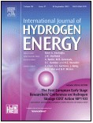 Liejin
Guo*, Hui Jin, “Boiling coal in water: Hydrogen
production and power generation system with zero net CO2 emission based on coal and
supercritical water gasification”, International Journal of Hydrogen Energy 2013, 38(29),
12953-12967 Cited: 145(IF 2020: 5.816)
http://www.sciencedirect.com/science/article/pii/S0360319913010136 - Jianbing Huang, Fucheng Xie, Cheng Wang, Zongqiang Mao*, “Development of solid oxide fuel cell materials for intermediate-to-low temperature operation”, International Journal of Hydrogen Energy 2012, 37(1), 877-883 http://www.sciencedirect.com/science/article/pii/S0360319911008615 Cited: 120 (IF 2020: 5.816)
-
Yunan
Chen, Liejin Guo*, Wen Cao, Hui Jin,
Simao Guo, Ximin Zhang, “Hydrogen production by sewage
sludge gasification in supercritical water with a fluidized bed reactor”, International
Journal of Hydrogen Energy 2013, 38(29), 12991-12999 Cited: 119(IF 2020: 5.816)
http://www.sciencedirect.com/science/article/pii/S0360319913008434 -
Kai He,
Mingtao Li, Liejin Guo*, “Preparation and photocatalytic
activity of PANI-CdS composites for hydrogen evolution”, International Journal of
Hydrogen Energy 2012, 37(1), 755-759 Cited: 83
(IF 2020: 5.816)
http://www.sciencedirect.com/science/article/pii/S036031991100930X -
Penghui
Guo*, Jiangang Jiang, Shaohua Shen, Liejin
Guo*, “ZnS/ZnO heterojunction as photoelectrode: Type
II band alignment towards enhanced photoelectrochemical
performance”, International
Journal of Hydrogen Energy 2013, 38(29),
13097-13103 Cited: 80 (IF 2019: 5.816)
http://www.sciencedirect.com/science/article/pii/S0360319913003169 -
Yunan
Chen, Liejin Guo*, Hui Jin, Jiarong Yin,
Youjun Lu, Ximin Zhang, “An experimental investigation of
sewage sludge gasification in near and super-critical water using a batch reactor”, International
Journal of Hydrogen Energy 2013, 38(29), 12912-12920 Cited: 74(IF 2020: 5.816)
http://www.sciencedirect.com/science/article/pii/S036031991301272X -
Naixu Li,
Bingyao Zhou, Penghui Guo, Jiancheng
Zhou*, Dengwei Jing*, “Fabrication
of noble-metal-free
Cd0.5 Zn0.5S/NiS hybrid photocatalyst for efficient solar
hydrogen evolution”, International Journal of Hydrogen
Energy 2013, 38(26), 11268-11277 Cited: 72(IF 2020: 5.816)
http://www.sciencedirect.com/science/article/pii/S0360319913015371 -
Xixi
Wang, Jie Chen, Xiangjiu Guan, Liejin
Guo*, “Enhanced efficiency and stability for visible light driven water splitting
hydrogen production over Cd0.5Zn0.5S/g-C3N4 composite
photocatalyst”, International Journal of Hydrogen Energy
2015, 40(24), 7546-7552 Cited: 69(IF 2020: 5.816)
http://www.sciencedirect.com/science/article/pii/S0360319914031346 -
Li
Cai, Feng Ren, Meng Wang, Guangxu Cai, Yubin Chen,
Yichao Liu, Shaohua Shen*, Liejin Guo, “V ions implanted
ZnO nanorod arrays for photoelectrochemical water splitting under visible light”, International
Journal of Hydrogen Energy 2015, 40(3), 1394-1401 Cited: 69(IF 2020: 5.816)
http://www.sciencedirect.com/science/article/pii/S0360319914032480 -
Guangsheng
Zhang, Shuanglin Shen, Liejin Guo*, Hongtan
Liu*, “Dynamic characteristics of local current densities and temperatures in
proton exchange membrane fuel cells during reactant starvations”, International
Journal of Hydrogen Energy 2012, 37(2), 1884-1892 Cited: 66(IF 2020: 5.816)
http://www.sciencedirect.com/science/article/pii/S0360319911009852 -
Shu Zhang,
Qingyun Chen*, Dengwei Jing, Yunhai Wang,
Liejin Guo*,
“Visible photoactivity and antiphotocorrosion performance of PdS–CdS photocatalysts
modified by polyaniline”, International Journal of Hydrogen
Energy 2012, 37(1), 791-796 Cited: 66
(IF 2020: 5.816)
http://www.sciencedirect.com/science/article/pii/S0360319911009256 -
Maochang
Liu, Yuanchang Du, Lijng Ma, Dengwei
Jing, Liejin Guo*, “Manganese doped cadmium sulfide
nanocrystal for hydrogen production from water under visible
light”, International Journal of Hydrogen Energy 2012,
37(1), 730-736 Cited: 64(IF 2020: 5.816)
http://www.sciencedirect.com/science/article/pii/S0360319911009761 -
Ying Yang,
Liejin Guo*, Hongtan Liu*, “Corrosion
characteristics of SS316L as bipolar plate material in PEMFC cathode environments with different
acidities”, International Journal of Hydrogen
Energy 2011, 36(2), 1654-1663 Cited: 60(IF 2020: 5.816)
http://www.sciencedirect.com/science/article/pii/S0360319910021750 -
Yupeng Yang,
Xu Zhang, Liejin Guo*, Hongtan Liu*, “Overall and local
effects of operating conditions in PEM fuel cells with dead-ended anode”, International Journal of Hydrogen Energy 2017, 42(7),
4690-4698 Cited: 56(IF 2020: 5.816)
http://www.sciencedirect.com/science/article/pii/S0360319916312526 -
Xiangjiu
Guan, Jinwen Shi, Liejin Guo*,
“Ag3PO4 photocatalyst: Hydrothermal preparation
and enhanced O2 evolution under visible-light irradiation”, International
Journal of Hydrogen Energy 2013, 38(27),
11870-11877 Cited: 52(IF 2020: 5.816)
http://www.sciencedirect.com/science/article/pii/S0360319913017175 -
Jiangang
Jiang, Meng Wang, Rong Li, Lijing
Ma, Liejin Guo*, “Fabricating
CdS/BiVO4 and BiVO4/CdS heterostructured film photoelectrodes
for photoelectrochemical applications”, International
Journal of Hydrogen Energy 2013, 38(29),
13069-13076 Cited: 42(IF 2020: 5.816)
http://www.sciencedirect.com/science/article/pii/S0360319913006678 -
Xixi Wang,
Maochang Liu, Qingyun Chen, Kai Zhang, Jie
Chen, Meng Wang, Penghui Guo, Liejin
Guo*, “Synthesis of CdS/CNTs photocatalysts
and study of hydrogen production by photocatalytic water splitting”, International
Journal of Hydrogen Energy 2013, 38(29), 13091-13096 Cited: 41(IF 2020: 5.816)
http://www.sciencedirect.com/science/article/pii/S0360319913005909 -
Shu Zhang,
Qingyun Chen*, Yunhai Wang, Liejin Guo,
“Synthesis and photoactivity of CdS photocatalysts modified by polypyrrole”,International
Journal of Hydrogen Energy 2012, 37(17), 13030-13036 Cited: 38(IF 2020: 5.816)
http://www.sciencedirect.com/science/article/pii/S0360319912012037 -
Yuanfei Hei,
Jianbing Huang*, Cheng Wang*, Zongqiang Mao, “Novel doped
barium cerate–carbonate composite electrolyte material for low temperature solid oxide fuel
cells”, International Journal of Hydrogen Energy 2014, 39(26), 14328-14333 Cited: 37(IF 2020: 5.816)
http://www.sciencedirect.com/science/article/pii/S0360319914010520 -
Jinwen Shi*,
Cheng Cheng, Yuchao Hu, Maochang Liu*,
Liejin Guo, “One-pot preparation of porous
Cr2O3/g-C3N4 composites towards enhanced photocatalytic
H2 evolution under visible-light irradiation”, International Journal of
Hydrogen Energy 2017, 42(7), 4651-4659 Cited: 34(IF 2020: 5.816)
http://www.sciencedirect.com/science/article/pii/S0360319916309430 -
Po
Wu, Jinwen Shi, Zhaohui Zhou, Wendong
Tang, Liejin Guo*, “CaTaO2N–CaZrO3 solid
solution: Band-structure engineering and visible-light-driven photocatalytic hydrogen
production”, International Journal of Hydrogen
Energy 2012, 37(18), 13704-13710 Cited: 33(IF 2020: 5.816)
http://www.sciencedirect.com/science/article/pii/S0360319912005083 -
Rui
Xie, Jinzhan Su, Ya Liu, Liejin Guo*,
“Optical, structural and photoelectrochemical properties of
CdS1−xSex semiconductor films produced by chemical bath deposition”, International
Journal of Hydrogen Energy 2014, 39(7), 3517-3527 Cited: 33(IF 2020: 5.816)
http://www.sciencedirect.com/science/article/pii/S0360319913030528 -
Mohammed Hatami*, M.
Jafaryar, J. Zhou, Dengwei Jing*, “Investigation of
engines radiator heat recovery using different shapes of nanoparticles in
H2O/(CH2OH)2 based nanofluids”, International Journal
of Hydrogen Energy 2017, 42(16), 10891-10900 Cited: 33(IF 2020: 5.816)
http://www.sciencedirect.com/science/article/pii/S0360319917303646 -
Jiangang
Jiang, Meng Wang, Lijing Ma, Qingyun
Chen, Liejin Guo*, “Synthesis
of uniform ZnO/ZnS/CdS nanorod films with ion-exchange approach and photoelectrochemical
performances”, International Journal of Hydrogen
Energy 2013, 38(29),
13077-13083 Cited: 32(IF 2020: 5.816)
http://www.sciencedirect.com/science/article/pii/S0360319913006666 -
Honghui
Yang, Jing Zhang, Xueqing Wang, Jiangtao Feng*,
Wei Yan*, Guo Liejin, “A newly isolated Rhodobacter
sphaeroides HY01 with high hydrogen production performance”, International Journal of
Hydrogen Energy 2014, 39(19), 10051-10060 Cited: 32(IF 2020: 5.816)
http://www.sciencedirect.com/science/article/pii/S0360319914012294 -
Bing
Luo, Rui Song, Liejin Guo*, “ZnCr LDH
nanosheets modified graphitic carbon nitride for enhanced photocatalytic hydrogen
production”, International Journal of Hydrogen Energy 2017, 42(37),
23427-23436 Cited: 32(IF 2020: 5.816)
http://www.sciencedirect.com/science/article/pii/S0360319917308376 -
Yazhou
Zhang, Shichao Zong, Cheng Cheng, Jinwen
Shi*, Xiangjiu Guan, Youjun Lu, Liejin
Guo*, “One-pot annealing preparation of Na-doped graphitic carbon nitride from
melamine and organometallic sodium salt for enhanced photocatalytic H2 evolution”,
International Journal of Hydrogen Energy 2018, 43(30),
13953-13961 Cited: 30(IF 2020: 5.816)
https://www.sciencedirect.com/science/article/pii/S0360319918311674 -
Zheng Liu,
Shaohua Shen, Liejin Guo*,
“Study on photocatalytic performance for hydrogen evolution over CdS/M-MCM-41 (M = Zr,
Ti) composite photocatalysts under visible light illumination”, International
Journal of Hydrogen Energy 2012, 37(1),
816-821 Cited: 29(IF 2020: 5.816)
http://www.sciencedirect.com/science/article/pii/S0360319911008834 -
Yuchao Hu,
Penghui Guo, Liejin Guo*, “Synthesis and
photocatalytic properties of Cr-doped KSr2Nb3O10 for hydrogen
production”, International Journal of Hydrogen
Energy 2012, 37(1), 1007-1013 Cited: 26(IF 2020: 5.816)
http://www.sciencedirect.com/science/article/pii/S0360319911006409 -
Cong
Liu, Xiaobing Li, Jinzhan Su*, Liejin
Guo, “Enhanced charge separation in copper incorporated BiVO4with
gradient doping concentration profile for photoelectrochemical water splitting”, International
Journal of Hydrogen Energy 2016, 41(30), 12842-12851 Cited: 26(IF 2020: 5.816)
http://www.sciencedirect.com/science/article/pii/S0360319916303548 -
Guiyin Chen,
Guangsheng Zhang, Liejin Guo*, Hongtan Liu*,
“Systematic study on the functions and mechanisms of micro porous layer on water transport
in proton exchange membrane fuel cells”, International Journal of Hydrogen Energy
2016, 41(9), 5063-5073 Cited: 25(IF 2020: 5.816)
http://www.sciencedirect.com/science/article/pii/S0360319915311356 -
Juan Han, Jing Chang, Rong
Wei, Xiaohui Ning, Jian Li, Zuoxi Li, Huilin Guo, Ying Yang*, “Mechanistic
investigation on tuning the conductivity type of cuprous oxide (Cu2O) thin films via
deposition potential”, International Journal of Hydrogen Energy
2018, 43(30), 13764-13777 Cited: 25(IF 2020: 5.816)
https://www.sciencedirect.com/science/article/pii/S0360319918305883 -
Xu
Liu, Ya Liu, Jinzhan Su, Mingtao Li*,
Liejin Guo, “Facile preparation of BiVO4 nanoparticle film by
electrostatic spray pyrolysis for photoelectrochemical water splitting”, International
Journal of Hydrogen Energy 2015, 40(38), 12964-12972 Cited: 24(IF 2020: 5.816)
http://www.sciencedirect.com/science/article/pii/S0360319915020649 -
Fei
Xue, Wenlong Fu, Maochang Liu*, Xixi
Wang, Bin Wang, Liejin Guo*, “Insight into
Cd0.9Zn0.1S solid-solution nanotetrapods: Growth mechanism and their
application for photocatalytic hydrogen production”, International Journal of Hydrogen
Energy 2016, 41(45), 20455-20464 Cited: 24(IF 2020: 5.816)
http://www.sciencedirect.com/science/article/pii/S0360319916322194 -
Jianbing
Huang*, Li Zhang, Cheng Wang, Ping Zhang, “CYO–BZCYO composites with
enhanced proton conductivity: Candidate electrolytes for low-temperature solid oxide fuel
cells”, International Journal of Hydrogen
Energy 2012, 37(17),13044-13052
Cited: 23(IF 2020: 5.816) http://www.sciencedirect.com/science/article/pii/S0360319912011834 -
Xu
Zhang, Yupeng Yang, Liejin Guo*, Hongtan Liu*,
“Effects of carbon corrosion on mass transfer losses in proton exchange membrane fuel
cells”, International Journal of Hydrogen Energy 2017,
42(7), 4699-4705 Cited: 23(IF 2020: 5.816)
http://www.sciencedirect.com/science/article/pii/S0360319916310138 -
Yupeng
Yang, Xu Zhang, Liejin Guo*, Hongtan Liu*, “Different
flow fields, operation modes and designs for proton exchange membrane fuel cells with dead-ended
anode”, International Journal of Hydrogen Energy 2018,
43(3), 1769-1780 Cited: 23(IF 2020: 5.816)
http://www.sciencedirect.com/science/article/pii/S0360319917342118 -
Ying Yang,
Liejin Guo*, Hongtan Liu*, “Influence of fluoride ions on
corrosion performance of 316L stainless steel as bipolar plate material in simulated PEMFC anode
environments”, International Journal of Hydrogen Energy 2012,
37(2), 1875–1883 Cited: 22(IF 2020: 5.816)
http://www.sciencedirect.com/science/article/pii/S0360319911015606 -
Joshua O. Olowoyo, Manoj
Kumar, Suman L. Jain, Shaohua Shen, Zhaohui Zhou, Samuel S. Mao,
Alexander V Vorontsov, Umesh Kumar*, “Reinforced photocatalytic reduction of CO2
to fuel by efficient S-TiO2: Significance of sulfur doping”, International
Journal of Hydrogen Energy 2018, 43(37), 17682-17695 Cited: 22(IF 2020: 5.816)
https://www.sciencedirect.com/science/article/pii/S0360319918324480 -
Yunhai
Wang*, Baishi Wang, Yapeng Liu, Qingyun
Chen, “Electricity and hydrogen co-production from a bio-electrochemical cell with
acetate substrate”, International Journal of Hydrogen Energy 2013,
38(16), 6600-6606 Cited: 21(IF 2020: 5.816)
http://www.sciencedirect.com/science/article/pii/S0360319913006538 -
Qixing Wu, Shuiyun. Shen,
Yaling He, Tianshou Zhao*, “Effect of water
concentration in the anode catalyst layer on the performance of direct methanol fuel cells operating
with neat methanol”, International
Journal of Hydrogen Energy 2012, 37(7),
5958-5968 Cited: 21(IF 2020: 5.816)
http://www.sciencedirect.com/science/article/pii/S0360319911028345 -
Xiaoyang
Feng, Yubin Chen*, Menglong Wang, Liejin
Guo, “Hydrothermal synthesis of pyramid-like In2S3 film for
efficient photoelectrochemical hydrogen generation”, International Journal of Hydrogen
Energy 2017, 42(22), 15085-15095 Cited: 21(IF 2020: 5.816)
http://www.sciencedirect.com/science/article/pii/S0360319917317718 -
Fei
Jia, Liejin Guo*, Hongtan Liu*, “Dynamic
characteristics and mitigations of hydrogen starvations in proton exchange membrane fuel cells
during start-ups”, International Journal of Hydrogen Energy 2014,
39(24), 12835-12841 Cited: 21(IF 2020: 5.816)
http://www.sciencedirect.com/science/article/pii/S0360319914017029 -
Xu
Guo, Yubin Chen*, Zhixiao Qin, Menglong
Wang, Liejin Guo*, “One-step hydrothermal synthesis of
ZnxCd1−xS/ZnO heterostructures for efficient photocatalytic hydrogen
production”, International Journal of Hydrogen Energy 2016, 41(34),
15208-15217 Cited: 21(IF 2020: 5.816)
http://www.sciencedirect.com/science/article/pii/S0360319916316470 -
Xudong
Zheng, Shaohua Shen, Feng Ren*, Guangxu Cai, Zhuo Xing, Yichao
Liu, Dan Liu, Guozhen Zhang, Xiangheng Xiao, Wei Wu, Changzhong Jiang, “Irradiation-induced
TiO2 nanorods for photoelectrochemical hydrogen production”, International
Journal of Hydrogen Energy 2015, 40(15), 5034-5041 Cited: 20(IF 2020: 5.816)
http://www.sciencedirect.com/science/article/pii/S036031991500467X# -
Shuanglin
Shen, Liejin Guo*, Hongtan Liu*, “An
analytical
model for solid oxide fuel cells with bi-layer electrolyte”, International
Journal of Hydrogen Energy 2013, 38(4), 1967-1975 Cited: 19(IF 2020: 5.816)
http://www.sciencedirect.com/science/article/pii/S0360319912025736 -
Kai He,
Liejin Guo*, “NiS modified CdS pyramids with stacking fault structures:
Highly efficient and stable photocatalysts for hydrogen production from water”, International
Journal of Hydrogen Energy 2017, 42(38), 23995-24005 Cited: 19(IF 2020: 5.816)
http://www.sciencedirect.com/science/article/pii/S0360319917326770 -
Wei Yan*,
Chunli Zheng*, Yiliang Liu, Liejin Guo, “A novel
dual-bed photocatalytic water splitting system for hydrogen production”, International
Journal of Hydrogen Energy 2011, 36(13), 1967-1975 Cited: 17(IF 2020: 5.816)
http://www.sciencedirect.com/science/article/pii/S0360319911007075 -
Yupeng
Yang, Xu Zhang, Liejin Guo*, Hongtan Liu*, “Degradation
mitigation effects of pressure swing in proton exchange membrane fuel cells with dead-ended
anode”, International Journal of Hydrogen Energy 2017,
42(38), 24435-24447 Cited: 17(IF 2020: 5.816)
http://www.sciencedirect.com/science/article/pii/S0360319917331373 -
Yapeng
Liu, Yunhai Wang*, Baishi Wang, Qingyun
Chen, “Effect of anolyte pH and cathode Pt loading on electricity and hydrogen
co-production performance of the bio-electrochemical system”, International Journal of
Hydrogen Energy 2014, 39(26), 14191-14195 Cited: 17(IF 2020: 5.816)
http://www.sciencedirect.com/science/article/pii/S0360319914005254 -
Qingyu
Wei, Yan Yang, Haijun Liu, Junyi Hou,
Maochang Liu, Fei Cao*, Liang Zhao*, “Experimental
study on direct solar photocatalytic water splitting for hydrogen production using surface uniform
concentrators”, International Journal of Hydrogen Energy 2018,
43(30), 13745-13753 Cited: 17(IF 2020: 5.816)
https://www.sciencedirect.com/science/article/pii/S0360319918302477 -
Xianghui
Zhang*, Mao Yang, Jianguo
Zhao, Liejin Guo*, “Photocatalytic hydrogen evolution
with simultaneous degradation of organics over (CuIn)0.2Zn1.6S2 solid
solution”, International Journal of Hydrogen
Energy 2013, 38(36), 15985-15991 Cited: 16(IF 2020: 5.816)
http://www.sciencedirect.com/science/article/pii/S0360319913024452 -
Xueqing
Wang, Honghui Yang*, Chao Ma, Liejin
Guo*, “Enhanced photosynthetic hydrogen production performance of Rhodobacter
capsulatus by deactivating CBB cycle and cytochrome c oxidase”, International
Journal of Hydrogen Energy 2014, 39(7), 3176-3184 Cited: 16(IF 2020: 5.816)
http://www.sciencedirect.com/science/article/pii/S0360319913030620 -
Zilong
Zeng, Guoliang Liu*, Jiafeng Geng, Dengwei Jing*, Xinlin
Hong, Liejin Guo*, “A high-performance PdZn alloy catalyst obtained from
metal-organic framework for methanol steam reforming hydrogen production”, International
Journal of Hydrogen Energy 2019, 44(45), 24387-24397
Cited: 16(IF 2020: 5.816)
https://www.sciencedirect.com/science/article/pii/S0360319919328319 -
Yuxun
Ren, Liang Zhao, Dengwei Jing*, Liejin
Guo, “Investigation and modeling of CPC based tubular photocatalytic reactor for
scaled-up hydrogen production”, International Journal of Hydrogen Energy 2016,
41(36), 16019-16031 Cited: 15(IF 2020: 5.816)
http://www.sciencedirect.com/science/article/pii/S0360319916301689 -
Yichao Liu, Fen Ren*,
Shaohua Shen, Jianan Chen, Yanming Fu, Guangxu
Cai, Xuening Wang, Zhuo Xing, Liang Wu, Xudong Zheng, Changzhong Jiang, “Vacancy-doped
homojunction structural TiO2 nanorod photoelectrodes with greatly enhanced
photoelectrochemical activity”, International Journal of Hydrogen Energy 2018,
43(4), 2057-2063 Cited: 14(IF 2020: 5.816)
http://www.sciencedirect.com/science/article/pii/S0360319917345470 -
Fei
Jia, Liejin Guo*, Hongtan Liu*, “A study on
current overshoot during start-ups and optimal start-up strategy of proton exchange membrane fuel
cells”, International Journal of Hydrogen Energy 2015,
40(24), 7754-7761
http://www.sciencedirect.com/science/article/pii/S0360319915000907 Cited: 14(IF 2020: 5.816) -
Ying Yang*,
Liejin Guo*, Hongtan Liu*, “Factors
affecting corrosion behavior of SS316L as bipolar plate material in PEMFC cathode
environments”, International Journal of Hydrogen Energy 2012,
37(18),13822-13828
Cited: 13(IF 2020: 5.816) http://www.sciencedirect.com/science/article/pii/S0360319912008804 -
Xu Liu,
Xiangkun Elvis Cao, Ya Liu*, Xiaobing Liu, Meng
Wang, Mingtao Li*, “Branched multiphase TiO2 with
enhanced photoelectrochemical water splitting activity”, International Journal of
Hydrogen Energy 2018, 43(46), 21365-21373 Cited: 13(IF 2020: 5.816)
https://www.sciencedirect.com/science/article/pii/S0360319918331227 -
Yubin Chen*,
Zhixiao Qin, Xu Guo, Xixi Wang, Liejin
Guo, “One-step hydrothermal synthesis of (CuIn)0.2Zn1.6S2
hollow sub-microspheres for efficient visible-light-driven photocatalytic hydrogen
generation”, International Journal of Hydrogen Energy 2016, 41(3),
1524-1534 Cited: 12(IF 2020: 5.816)
http://www.sciencedirect.com/science/article/pii/S0360319915305541 -
Shuanglin
Shen, Liejin Guo*, Hongtan
Liu*, “Theoretical
analysis of the characteristics of the solid oxide fuel cells with a bi-layer electrolyte”, International
Journal of Hydrogen Energy 2013, 38(29),
13084-13090 Cited: 11(IF 2020: 5.816)
http://www.sciencedirect.com/science/article/pii/S0360319913006447 -
Yupeng
Yang, Xu Zhang, Liejin Guo*, Hongtan Liu*, “Mechanisms
of voltage spikes and mitigation strategies for proton exchange membrane fuel cells with dead-ended
anode under pressure swing operation”, International Journal of Hydrogen Energy
2017, 42(47), 28578-28587 Cited: 11(IF 2020: 5.816)
http://www.sciencedirect.com/science/article/pii/S0360319917337746 -
Lijing Ma*,
Tao Zhang, Rui Song, Liejin Guo*, “In-situ
Raman study of relation between microstructure and photoactivity of CdS@TiO2 core-shell
nanostructures”, International Journal of Hydrogen Energy 2018,
43(30), 13778-13787 Cited: 9(IF 2020: 5.816)
https://www.sciencedirect.com/science/article/pii/S036031991830778X -
Po
Wu, Zhaohui Zhou, Jinwen Shi, Liejin
Guo*,
“First-principles calculations of Cd1-xZnxS
doped with alkaline earth metals for photocatalytic hydrogen generation”, International
Journal of Hydrogen Energy 2012, 37(17),
13074-13081 Cited: 9(IF 2020: 5.816)
http://www.sciencedirect.com/science/article/pii/S0360319912010245 -
Jinwen Shi*, Botong Zheng, Liuhao Mao, Cheng Cheng, Yuchao Hu*, Heng Wang, Gaosheng Li, Dengwei Jing*, Xianglong Liang, “MoO3/g-C3N4 Z-scheme (S-scheme) system derived from MoS2/melamine dual precursors for enhanced photocatalytic H2 evolution driven by visible light”, International Journal of Hydrogen Energy 2021, 46(3), 2927-2935 Cited: 9
(IF 2020: 5.816)
https://www.sciencedirect.com/science/article/abs/pii/S0360319920316256 -
Yan Yang,
Maochang Liu, Qingyu Wei, Jianfeng Li, Liang
Zhao*, “Toward the enhancement of activity and stability of CdXZn1-XS
photocatalyst for solar hydrogen production”, International Journal of Hydrogen
Energy 2017, 42(43), 26597-26604 Cited: 8(IF 2019: 4.939)
http://www.sciencedirect.com/science/article/pii/S0360319916302981 -
Yubin
Chen*, Xu Guo, Cheng Xie, Zhixiao Qin,
Xiaoyang Feng, “Size- and composition-dependent photocatalytic hydrogen
production over colloidal Cd1-xZnxSe nanocrystals”, International
Journal of Hydrogen Energy 2018, 43(30), 13911-13920 Cited: 8(IF 2020: 5.816)
https://www.sciencedirect.com/science/article/pii/S0360319918303215 -
Fei
Jia, Fengfeng Liu, Liejin Guo*, Hongtan
Liu*, “Mechanisms of reverse current and mitigation strategies in proton
exchange membrane fuel cells during startups”, International Journal of Hydrogen
Energy 2016, 41(15), 6469-6475 Cited: 7(IF 2020: 5.816)
http://www.sciencedirect.com/science/article/pii/S0360319915312441 -
Wenlong
Fu, Fei Xue, Maochang Liu*, “Kilogram-scale
production of highly active chalcogenide photocatalyst for solar hydrogen generation”, International
Journal of Hydrogen Energy 2018, 43(30), 13738-13744 Cited: 7(IF 2020: 5.816)
https://www.sciencedirect.com/science/article/pii/S0360319918301496 -
Chao Ma,
Honghui Yang, Yang Zhang, Liejin
Guo*, “Disruption of multidrug resistance protein gene of
Rhodobacter capsulatus results in improved photoheterotrophic hydrogen production”,
International Journal of Hydrogen Energy 2013, 38(29),
13031-13037 Cited: 6(IF 2020: 5.816)
http://www.sciencedirect.com/science/article/pii/S0360319913007568 -
Hengyi Wu, Liang Wu, Shaohua Shen, Yichao Liu, Guangxu Cai, Xuening Wang, Yunhang Qiu, Huizhou Zhong, Zhuo Xing, Jun Tang, Zhongqin Dai, Changzhong Jiang, Feng Ren*, “Enhanced photoelectrochemical performance of an α-Fe2O3 nanorods photoanode with embedded nanocavities formed by helium ions implantation”, International Journal of Hydrogen Energy 2020, 45(16), 9408-9415 Cited: 6
(IF 2020: 5.816)
https://www.sciencedirect.com/science/article/pii/S0360319920303566 -
Jiangang
Jiang*, Ying Wang, Wenyi Ren, Yingge Xie, Yubin Chen, “Surface
modification of ZnO microrod arrays films by ion-exchange approach and their photoelectrochemical
performances”, International Journal of Hydrogen Energy 2018,
43(30), 13931-13938 Cited: 5(IF 2020: 5.816)
https://www.sciencedirect.com/science/article/pii/S0360319918303537 -
Xiaokang
Wan, Mingtao Li, Liejin Guo*, “Synthesis
and photoelectrochemical study of BiWxV1−x O4+x/2 films by a
polymer-assisted method”, International
Journal of Hydrogen Energy 2013, 38(27), 11720-11726
Cited: 4(IF 2020: 5.816) http://www.sciencedirect.com/science/article/pii/S0360319913016650 -
Yuchen Pu,
Ya Liu, Dongyu Liu, Zhaohui Zhou, Shujiang Ding, Zhenhai Xia,
Mingtao Li*, “First-principles screening visible-light active delafossite
ABO2 structures for photocatalytic application”, International Journal of
Hydrogen Energy 2018, 43(36), 17271-17282 Cited: 4(IF 2020: 5.816)
https://www.sciencedirect.com/science/article/pii/S0360319918322547 -
Jiangang
Jiang, Wenyi Ren, Yubin Chen, Guangyuan Du, Liejin Guo*,
“Insight into carrier transportation and hydrogen production activity of two novel
morphological CdS films”, International Journal of Hydrogen Energy
2017, 42(48), 28710–28717 Cited: 4(IF 2020: 5.816)
http://www.sciencedirect.com/science/article/pii/S0360319917335413 -
Lijing Ma*, Bing Luo, Jiafeng Geng, Zhesong Huang, Liejin Guo, “Efficient photothermocatalytic hydrogen production performance over a graphene-titanium dioxide hybrid nanomaterial”, International Journal of Hydrogen Energy 2021, 46(3), 2871-2877 Cited: 4
(IF 2020: 5.816)
https://www.sciencedirect.com/science/article/abs/pii/S0360319920315822 -
Yubin Chen*, Hongyu Xia, Wenshuai Zhang, Wenyu Zheng, Xiaoyang Feng, Jiangang Jiang*, “Template synthesis of porous hierarchical Cu2ZnSnS4 nanostructures for photoelectrochemical water splitting”, International Journal of Hydrogen Energy 2021, 46(3), 2862-2870 Cited: 3
(IF 2020: 5.816)
https://www.sciencedirect.com/science/article/abs/pii/S0360319920316542 -
Yuanchang Du, Maochang Liu, Liejin Guo*, “Scattering phase function of fractal aggregates of TiO2 particulate photocatalyst simulated with discrete dipole approximation”, International Journal of Hydrogen Energy 2020, 45(52), 28034-28043 Cited: 2(IF 2020: 5.816)
https://www.sciencedirect.com/science/article/abs/pii/S0360319920312581 -
Kai He*, Liejin Guo*, “The theoretical calculation and analysis of the chemical equilibrium in the synthetic process and its effect on hydrogen production performance for sulfide catalysts”, International Journal of Hydrogen Energy 2020, 46(9), 6561-6572 Cited: 1
(IF 2020: 5.816)
https://www.sciencedirect.com/science/article/abs/pii/S0360319920344578 -
Muhammad Qasim, Maochang Liu, Liejin Guo*, “Electron transfer via a carbon channel for efficient Z-scheme solar hydrogen production”, International Journal of Hydrogen Energy 2021, 46(55), 28098-28109
(IF 2020: 5.816)
https://www.sciencedirect.com/science/article/abs/pii/S0360319921022254?via%3Dihub -
 Dengwei Jing*, Yuan Hu, Maochang Liu, Jinjia
Wei*, Liejin Guo, “Preparation of highly dispersed nanofluid and
CFD study of its utilization in a concentrating PV/T system”, Solar Energy
2015, 112, 30-40 Cited: 132(IF 2020: 5.742)
Dengwei Jing*, Yuan Hu, Maochang Liu, Jinjia
Wei*, Liejin Guo, “Preparation of highly dispersed nanofluid and
CFD study of its utilization in a concentrating PV/T system”, Solar Energy
2015, 112, 30-40 Cited: 132(IF 2020: 5.742)
http://www.sciencedirect.com/science/article/pii/S0038092X14005404 -
Jiabin Fang, Jinjia Wei*, Xunwei Dong, Yueshe
Wang, “Thermal performance simulation of a solar cavity receiver under windy
conditions”, Solar Energy 2011, 85(1), 126-138
Cited: 127 (IF 2020: 5.742) http://www.sciencedirect.com/science/article/pii/S0038092X10003191 -
Jingyu Jin, Dengwei Jing*, “A novel liquid optical filter
based on magnetic electrolyte nanofluids for hybrid photovoltaic/thermal solar collector
application”, Solar Energy 2017, 155, 51-61 Cited: 40(IF 2020: 5.742)
http://www.sciencedirect.com/science/article/pii/S0038092X17305339 -
Yang Li, Dengwei Jing*, “Investigation of the performance
of photovoltaic/thermal system by a coupled TRNSYS and CFD simulation”, Solar
Energy 2017, 143, 100-112 Cited: 35(IF 2020: 5.742)
http://www.sciencedirect.com/science/article/pii/S0038092X16306582 -
Qingyu Wei, Yan Yang, Junyi Hou, Huan
Liu, Fei Cao*, Liang Zhao*, “Direct solar
photocatalytic hydrogen generation with CPC photoreactors: System development”, Solar
Energy 2017, 153, 215-223 Cited: 24(IF 2020: 5.742)
http://www.sciencedirect.com/science/article/pii/S0038092X17304590 -
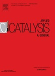Shaohua
Shen*, Daming Zhao, Jie Chen, Liejin
Guo, Samuel S. Mao*, “Enhanced photocatalytic hydrogen evolution
over graphitic carbon nitride modified with Ti-activated mesoporous silica”, Applied
Catalysis A: General 2016, 521, 111-117 Cited: 14(IF 2020: 5.706)
http://www.sciencedirect.com/science/article/pii/S0926860X15302325 -
Yuchao
Hu, Jinwen Shi, Liejin Guo*, “Enhanced
Photocatalytic Hydrogen Production Activity
of chromium doped lead niobate under Visible-light Irradiation”, Applied
Catalysis A: General 2013, 468, 403-409 Cited: 11
(IF 2020: 5.706)
http://www.sciencedirect.com/science/article/pii/S0926860X13005577 -
Bin Wang,
Shaohua Shen*, Liejin Guo, “Surface Reconstruction of
Facet-Functionalized SrTiO3 Nanocrystals for Photocatalytic Hydrogen Evolution”,
Chemcatchem 2016, 8(4), 798-804 Cited:31(IF 2020: 5.686)
http://onlinelibrary.wiley.com/doi/10.1002/cctc.201501162/abstract -
Fei Xue, Maochang Liu*, Cheng
Cheng, Junkai Deng, Jinwen Shi, “Localized NiS2 Quantum
Dots on g‐C3N4 Nanosheets for Efficient Photocatalytic Hydrogen Production
from Water”, Chemcatchem 2018, 10(23), 5441-5448 Cited: 31(IF 2020: 5.686)
https://onlinelibrary.wiley.com/doi/abs/10.1002/cctc.201801510 -
Jinzhan Su*,
Cong Liu, Dongyu Liu, Mingtao Li, Jinglan
Zhou, “Enhanced Photoelectrochemical Performance of the
BiVO4/Zn:BiVO4 Homojunction for Water Oxidation”,
Chemcatchem 2016, 8(20), 3279-3286 Cited: 26(IF 2020: 5.686)
http://onlinelibrary.wiley.com/doi/10.1002/cctc.201600767/full -
 Yong Yan*, Dongdong Qin, Shi-Fang Duan, Chun-Ian Tao, Yuan-Yuan
Geng, Xiao-qiang Yao, Xiong-Wu Kang, Jinzhan Su, Ingrid Rodríguez-Gutiérrez, Miao
Kan, Yue Sun, Yixin Zhao, Melissa Romero, “Phosphorus‐doped isotype
g‐C3N4/g‐C3N4: an efficient charge transfer system for
photoelectrochemical water oxidation”, Chemcatchem 2019, 11(2),
729-736 Cited: 20(IF 2020: 5.686)
Yong Yan*, Dongdong Qin, Shi-Fang Duan, Chun-Ian Tao, Yuan-Yuan
Geng, Xiao-qiang Yao, Xiong-Wu Kang, Jinzhan Su, Ingrid Rodríguez-Gutiérrez, Miao
Kan, Yue Sun, Yixin Zhao, Melissa Romero, “Phosphorus‐doped isotype
g‐C3N4/g‐C3N4: an efficient charge transfer system for
photoelectrochemical water oxidation”, Chemcatchem 2019, 11(2),
729-736 Cited: 20(IF 2020: 5.686)
https://onlinelibrary.wiley.com/doi/abs/10.1002/cctc.201801581 -
 Yuchao
Hu, Liejin Guo*, “Rapid Preparation of Perovskite Lead
Niobate Nanosheets by Ultrasonic-Assisted Exfoliation for Enhanced Visible-Light-Driven
Photocatalytic Hydrogen Production”, Chemcatchem 2015, 7(4),
584-587 Cited: 18(IF 2020: 5.686)
Yuchao
Hu, Liejin Guo*, “Rapid Preparation of Perovskite Lead
Niobate Nanosheets by Ultrasonic-Assisted Exfoliation for Enhanced Visible-Light-Driven
Photocatalytic Hydrogen Production”, Chemcatchem 2015, 7(4),
584-587 Cited: 18(IF 2020: 5.686)
http://onlinelibrary.wiley.com/doi/10.1002/cctc.201402924/abstract -
 Xu Guo, Yubin Chen*, Zhixiao
Qin, Jinzhan Su, Liejin Guo*, “Facet‐Selective
Growth of Cadmium Sulfide Nanorods on Zinc Oxide Microrods: Intergrowth Effect for Improved
Photocatalytic Performance”, Chemcatchem 2018, 10(1),
153-158 Cited: 14(IF 2020: 5.686)
Xu Guo, Yubin Chen*, Zhixiao
Qin, Jinzhan Su, Liejin Guo*, “Facet‐Selective
Growth of Cadmium Sulfide Nanorods on Zinc Oxide Microrods: Intergrowth Effect for Improved
Photocatalytic Performance”, Chemcatchem 2018, 10(1),
153-158 Cited: 14(IF 2020: 5.686)
http://onlinelibrary.wiley.com/doi/10.1002/cctc.201701078/full -
Jinwen
Shi, Lijing Ma, Po Wu, Zhaohui
Zhou, Jiangang Jiang, Xiaokang Wan, Dengwei
Jing, Liejin Guo*,
“Tin(II) Antimonates with Adjustable Compositions: Effects of Band-Gaps
and Nanostructures on Visible-Light-Driven Photocatalytic H2 Evolution”,
Chemcatchem 2012, 4(9), 1389-1396 Cited: 13
(IF 2020: 5.686)
http://onlinelibrary.wiley.com/doi/10.1002/cctc.201200063/abstract -
Tao Zhang,
Lu Wang, Jinzhan Su*, Liejin Guo, “Branched
Tungsten Oxide Nanorod Arrays Synthesized by Controlled Phase Transformation for Solar Water
Oxidation”, Chemcatchem 2016, 8(12), 2119-2127 Cited: 11(IF 2020: 5.686)
http://onlinelibrary.wiley.com/doi/10.1002/cctc.201600267/full -
Xinyang Guo, Fei Xue, Shikai Xu, Shaohua Shen, Hongwen Huang, Maochang Liu*, “Coupling Photothermal Effect into Efficient Photocatalytic H2 Production by Using a Plate‐like Cu@Ni Core‐shell Cocatalyst”, Chemcatchem 2020, 12(10), 2745-2751 Cited: 2(IF 2020: 5.686)
https://onlinelibrary.wiley.com/doi/abs/10.1002/cctc.202000258 -
Lu Wang, Jinzhan Su*, Liejin Guo*, “Self‐assembly synthesis of monodisperse BiVO4 nanosphere via a hybrid strategy for photoelectrochemical water splitting”, Chemcatchem 2020, 12(20), 5269-5275(IF 2020: 5.686)
https://chemistry-europe.onlinelibrary.wiley.com/doi/abs/10.1002/cctc.202000975 -
Amin Amiri Delouei*, Amin Emamian, Sajjad Karimnej, HasanSajjadi, Dengwei Jing*, “Two-dimensional analytical solution for temperature distribution in FG hollow spheres: General thermal boundary conditions”, International Communications in Heat and Mass Transfer 2020, 113, 104531 Cited: 10(IF 2020: 5.683)
https://www.sciencedirect.com/science/article/abs/pii/S0735193320300567 -
Mohammad
Hatami, Dongxing Song, Dengwei Jing*, “Optimization
of a circular-wavy cavity filled by nanofluid under the natural convection heat transfer
condition”, International Journal of Heat and Mass Transfer 2016,
98, 758-767 Cited: 136(IF 20120: 5.584)
http://www.sciencedirect.com/science/article/pii/S0017931016305841 -
Jiandong
Zhou, Mohammad Hatami*, Dongxing Song, Dengwei
Jing*, “Design of microchannel heat sink with wavy channel and its time-efficient
optimization with combined RSM and FVM methods”, International Journal of Heat and Mass
Transfer 2016, 103, 715-724 Cited: 110(IF 2020: 5.584)
http://www.sciencedirect.com/science/article/pii/S0017931016318063 -
Chengzhen
Sun, Wenqiang Lu*, Jie Liu, Bofeng Bai, “Molecular dynamics
simulation of nanofluid’s effective thermal conductivity in high-shear-rate Couette flow”,
International Journal of Heat and Mass Transfer 2011, 54(11-12),
2560-2567 Cited: 83
(IF 2020: 5.584)
http://www.sciencedirect.com/science/article/pii/S0017931011000603 -
Wenhui
Tang, Mohammed Hatami, Jiandong Zhou, Dengwei
Jing*, “Natural convection heat transfer in a nanofluid-filled cavity with double
sinusoidal wavy walls of various phase deviations”, International Journal of Heat and
Mass Transfer 2017, 115, 430-440 Cited: 79(IF 2020: 5.584)
http://www.sciencedirect.com/science/article/pii/S0017931017315624
-
Dongxing
Song, Mohammad Hatami, Yechun Wang, Dengwei
Jing*, Yang Yang, “Prediction of hydrodynamic and optical
properties of TiO2/water suspension considering particle size distribution”,
International Journal of Heat and Mass Transfer 2016, 92, 864-876 Cited: 51(IF 2020: 5.584)
http://www.sciencedirect.com/science/article/pii/S001793101530394X -
Dongxing
Song, Yechun Wang, Dengwei Jing*, Jiafeng
Geng, “Investigation and prediction of optical properties of alumina nanofluids
with different aggregation properties”, International Journal of Heat and Mass
Transfer 2016, 96, 430-437 Cited: 40(IF 2020: 5.584)
http://www.sciencedirect.com/science/article/pii/S0017931015315106 -
Mohammad
Hatami*, M. Khazayinejad, Dengwei Jing*, “Forced convection of
Al2O3–water nanofluid flow over a porous plate under the variable magnetic
field effect”, International Journal of Heat and Mass Transfer
2016, 102, 622-630 Cited: 25(IF 2020: 5.584)
http://www.sciencedirect.com/science/article/pii/S0017931016308833 -
Xin
Wang, Dengwei Jing*, “Determination of thermal conductivity of
interfacial layer in nanofluids by equilibrium molecular dynamics simulation”, International
Journal of Heat and Mass Transfer 2019, 128, 199-207 Cited: 20(IF 2020: 5.584)
https://www.sciencedirect.com/science/article/pii/S0017931018319276
-
Dongxing
Song, Yang Yang, Dengwei Jing*, “Insight into the
contribution of rotating Brownian motion of nonspherical particle to the thermal conductivity
enhancement of nanofluid”, International Journal of Heat and Mass Transfer
2017, 112, 61-71 Cited: 9(IF 2020: 5.584)
http://www.sciencedirect.com/science/article/pii/S0017931017308013
-
 Jinwen
Shi*, Yazhou Zhang, Yuchao Hu, Xiangjiu
Guan, Zhaohui Zhou, Liejin Guo*, “NH3-treated
MoS2 nanosheets as photocatalysts for enhanced H2 evolution under
visible-light irradiation”, Journal of Alloys and Compounds 2016,
688, 368-375 Cited: 12(IF 2020: 5.316)
Jinwen
Shi*, Yazhou Zhang, Yuchao Hu, Xiangjiu
Guan, Zhaohui Zhou, Liejin Guo*, “NH3-treated
MoS2 nanosheets as photocatalysts for enhanced H2 evolution under
visible-light irradiation”, Journal of Alloys and Compounds 2016,
688, 368-375 Cited: 12(IF 2020: 5.316)
http://www.sciencedirect.com/science/article/pii/S0925838816320862 -
Xianghui
Zhang*, Jianguo Zhao, Liejin Guo*, “Band gap-tunable
(CuAg)xIn2xZn2(1-2x)S2 solid solutions synthesized by
hydrothermal method with ultrasonic assistance and
their photocatalytic H2 production performance”, Journal of Alloys and
Compounds 2014, 582, 617-622 Cited: 10
(IF 2020: 5.316)
http://www.sciencedirect.com/science/article/pii/S0925838813019312 -
Xiong Dan, Chao Wang, Xi Xu, Ya Liu, Xiaowei Cheng, Marco Fronzi*, LeiBi*, X.S.Zhao, “Improving the sinterability of CeO2 by using plane-selective nanocubes”, Journal of the European Ceramic Society 2019, 39(14), 4429-4434 Cited: 11(IF 2020: 5.302)
https://www.sciencedirect.com/science/article/abs/pii/S0955221919304406 -
Mohammed Hatami, Dengwei Jing*, “Optimization of
wavy direct absorber solar collector (WDASC) using Al2O3-water nanofluid and
RSM analysis”, Applied Thermal Engineering 2017, 121,
1040-1050 Cited: 93(IF 2020: 5.295)
http://www.sciencedirect.com/science/article/pii/S1359431116331507 -
 Chengzhen Sun, Wenqiang Lu*, Bofeng Bai,
Liejin Guo, “Anomalous enhancement in thermal conductivity of nanofluid
induced by solid walls in a nanochannel”, Applied Thermal
Engineering 2011, 31(17-18), 3799-3805 Cited: 54(IF 2020: 5.295)
Chengzhen Sun, Wenqiang Lu*, Bofeng Bai,
Liejin Guo, “Anomalous enhancement in thermal conductivity of nanofluid
induced by solid walls in a nanochannel”, Applied Thermal
Engineering 2011, 31(17-18), 3799-3805 Cited: 54(IF 2020: 5.295)
http://www.sciencedirect.com/science/article/pii/S1359431111003784 -
Dongxing Song, Jiandong Zhou, Yechun
Wang, Dengwei Jing*, “Choice of appropriate aggregation radius for
the descriptions of different properties of the nanofluids”, Applied Thermal
Engineering 2016, 103, 92-101 Cited: 14(IF 2020: 5.295)
http://www.sciencedirect.com/science/article/pii/S1359431116305518 -
Yan Yang, Dengwei Jing, Liang Zhao*, “Computational fluid dynamics modeling of reactive multiphase flow for suspended photocatalytic water splitting of hydrogen production system”, Applied Thermal
Engineering 2020, 173, 115220 Cited: 3(IF 2020: 5.295)
https://www.sciencedirect.com/science/article/abs/pii/S1359431119366888 -
Maochang Liu, Kejian Lu, Xinru Li, Hui Liu, Dengwei Jing*, “Light-induced enhancement of critical heat flux on TiO2 coatings with specific surface topology”, Applied Thermal
Engineering 2020, 174, 115333 Cited: 2(IF 2020: 5.295)
https://www.sciencedirect.com/science/article/abs/pii/S1359431119365184 -
Jinwen Shi, Jinhua Ye*, Lijing
Ma, Shuxin Ouyang, Dengwei Jing, Liejin Guo*,
“Site-Selected Doping of Upconversion Luminescent Er3+ into
SrTiO3 for Visible-Light-Driven Photocatalytic H2 or
O2 Evolution”, Chemistry-A European Journal
2012, 18(24), 7543-7551
Cited: 88
(IF 2020: 5.236)
http://onlinelibrary.wiley.com/doi/10.1002/chem.201102807/abstract -
 Jinwen Shi, Jinhua
Ye*, Qiuye Li, Zhaohui Zhou, Hua Tong, Guangcheng
Xi, Liejin Guo*, “Single-Crystal Nanosheet-Based Hierarchical
AgSbO3 with Exposed {001} Facets: Topotactic Synthesis and Enhanced Photocatalytic
Activity”, Chemistry-A European Journal 2011, 18(11),
3157-3162
Cited: 48(IF 2020: 5.236)
Jinwen Shi, Jinhua
Ye*, Qiuye Li, Zhaohui Zhou, Hua Tong, Guangcheng
Xi, Liejin Guo*, “Single-Crystal Nanosheet-Based Hierarchical
AgSbO3 with Exposed {001} Facets: Topotactic Synthesis and Enhanced Photocatalytic
Activity”, Chemistry-A European Journal 2011, 18(11),
3157-3162
Cited: 48(IF 2020: 5.236)
http://onlinelibrary.wiley.com/doi/10.1002/chem.201102214/abstract -
 Jinwen Shi, Jinhua
Ye*, Zhaohui Zhou, Mingtao Li, Liejin
Guo*, “Hydrothermal Synthesis of
Na0.5La0.5TiO3–LaCrO3 Solid-Solution Single-Crystal
Nanocubes for Visible-Light-Driven Photocatalytic
H2 Evolution”, Chemistry-A European
Journal 2011, 17(28), 7858-7867
Cited: 40(IF 2020: 5.236)
Jinwen Shi, Jinhua
Ye*, Zhaohui Zhou, Mingtao Li, Liejin
Guo*, “Hydrothermal Synthesis of
Na0.5La0.5TiO3–LaCrO3 Solid-Solution Single-Crystal
Nanocubes for Visible-Light-Driven Photocatalytic
H2 Evolution”, Chemistry-A European
Journal 2011, 17(28), 7858-7867
Cited: 40(IF 2020: 5.236)
http://onlinelibrary.wiley.com/doi/10.1002/chem.201003755/abstract -
Chung-Li
Dong*, Lionel Vayssieres*, “In Situ/Operando X‐ray spectroscopies for
advanced investigation of energy materials”, Chemistry-A
European Journal 2018, 24(69), 18356-18373
Cited: 28(IF 2020: 5.236)
https://onlinelibrary.wiley.com/doi/10.1002/chem.201803936 -
Yu
Wang*, Xiaohe Liu, Sergey Kovalenko, Qing-Yun Chen, Nicola Pinna*,
“Atomically Precise Bimetallic Nanoclusters as Photosensitizers in
Photoelectrochemical Cells”, Chemistry-A European
Journal 2019, 25(18), 4814-4820
Cited: 12(IF 2020: 5.236)
https://onlinelibrary.wiley.com/doi/abs/10.1002/chem.201900008 -
 Zhenxiong Huang, Xiangjiu Guan, Mingtao Li, Liejin Guo*,
“First-Principles Investigation of β-FeOOH for Hydrogen Evolution: Identifying Reactive Sites and Boosting Surface Reactions”, Chemistry-A European
Journal 2020, 26(31), 7118-7123 Cited:1
(IF 2020: 5.236)
Zhenxiong Huang, Xiangjiu Guan, Mingtao Li, Liejin Guo*,
“First-Principles Investigation of β-FeOOH for Hydrogen Evolution: Identifying Reactive Sites and Boosting Surface Reactions”, Chemistry-A European
Journal 2020, 26(31), 7118-7123 Cited:1
(IF 2020: 5.236)
https://onlinelibrary.wiley.com/doi/abs/10.1002/chem.202000222 -
Matthew P. Hautzinger, Jun
Dai, Yujin Ji, Yongping Fu, Jie Chen, Ilia A. Guzei, John C. Wright, Youyong Li,
Song Jin*, “Two-Dimensional Lead Halide Perovskites Templated by a Conjugated Asymmetric
Diammonium”, Inorganic Chemistry 2017, 56(24),
14991-14998 Cited: 39(IF 2020: 5.165)
http://pubs.acs.org/doi/abs/10.1021/acs.inorgchem.7b02285 -
 Mehtap Büyükyazi, Corinna Hegemann, Thomas Lehnen, Wieland Tyrra,
Sanjay Mathur*, “Molecular Co(II) and Co(III) Heteroarylalkenolates as
Efficient Precursors for Chemical Vapor Deposition of Co3O4 Nanowires”,
Inorganic Chemistry 2014, 53(20), 10928-10936 Cited: 24(IF 2020: 5.165)
Mehtap Büyükyazi, Corinna Hegemann, Thomas Lehnen, Wieland Tyrra,
Sanjay Mathur*, “Molecular Co(II) and Co(III) Heteroarylalkenolates as
Efficient Precursors for Chemical Vapor Deposition of Co3O4 Nanowires”,
Inorganic Chemistry 2014, 53(20), 10928-10936 Cited: 24(IF 2020: 5.165)
http://pubs.acs.org/doi/abs/10.1021/ic501157e -
Ying Yang*, Juan Han, Xiaohui Ning, Jinzhan Su,
Jinwen Shi, Wei Cao and Wei Xu*, “Photoelectrochemical Stability
Improvement of Cuprous Oxide (Cu2O) Thin Films in Aqueous Solution”, International
Journal of Energy Research 2016, 40(1), 112-123. Special Issue: Recent Progress in Clean Energy Research Cited: 21(IF 2020: 5.164)
https://onlinelibrary.wiley.com/doi/abs/10.1002/er.3328 -
Fei Jia*, Liejin Guo, Hongtan
Liu, “Dynamic characteristics of internal current during startups/shutdowns in proton
exchange membrane fuel cells”, International Journal of Energy Research
2019, 43(8), 3768-3778 Cited: 4(IF 2020: 5.164)
https://onlinelibrary.wiley.com/doi/abs/10.1002/er.4537 -
 Dongxing
Song, Dengwei Jing*, JiafengGeng, Yuxun
Ren, “A modified aggregation based model for the accurate prediction of particle
distribution and viscosity in magnetic nanofluids”, Powder Technology
2015, 283, 561-569 Cited: 35(IF 2020: 5.134)
Dongxing
Song, Dengwei Jing*, JiafengGeng, Yuxun
Ren, “A modified aggregation based model for the accurate prediction of particle
distribution and viscosity in magnetic nanofluids”, Powder Technology
2015, 283, 561-569 Cited: 35(IF 2020: 5.134)
http://www.sciencedirect.com/science/article/pii/S0032591015004908 -
M. Khazayinejad, Mohammad Hatami*, Dengwei
Jing*, M. Khaki, G. Domairry, “Boundary layer flow analysis of a nanofluid past a
porous moving semi-infinite flat plate by optimal collocation method”, Powder
Technology 2016, 301, 34-43 Cited: 19(IF 2020: 5.134)
http://www.sciencedirect.com/science/article/pii/S003259101630300X -
Feng Liu, Fei Xue, Yitao Si, Guijun Chen, Xiangjiu Guan, Kejian Lu, Maochang Liu*, “Functionalized Cd0.5Zn0.5S Chalcogenide Nanotwins Enabling Z-Scheme Photocatalytic Water Splitting”, ACS Applied Nano Materials 2021, 4(1), 759–768 Cited: 1(IF 2020: 5.097)
https://pubs.acs.org/doi/abs/10.1021/acsanm.0c03054 -
 Aryane Tofanello*, Shaohua Shen, Flavio L. de Souza*, Lionel Vayssieres*, “Strategies to Improve the Photoelectrochemical Performance of Hematite Nanorod-based Photoanodes”, APL Materials 2020, 8(4), 040905. Special Issue on Solar to Fuel Cited: 13(IF 2020: 5.096)
Aryane Tofanello*, Shaohua Shen, Flavio L. de Souza*, Lionel Vayssieres*, “Strategies to Improve the Photoelectrochemical Performance of Hematite Nanorod-based Photoanodes”, APL Materials 2020, 8(4), 040905. Special Issue on Solar to Fuel Cited: 13(IF 2020: 5.096)
https://aip.scitation.org/doi/10.1063/5.0003146 -
Mohammad
Hatami, A. Kheirkhah, H. Ghanbari-Rad, Dengwei Jing*, “Numerical heat
transfer enhancement using different nanofluids flow through venturi and wavy tubes”,
Case Studies in Thermal Engineering 2019, 13, 100368 Cited: 16(IF 2020: 4.724)
https://www.sciencedirect.com/science/article/pii/S2214157X18303678 -
Shaohua
Shen, Xiaobo Chen, Feng Ren, Coleman X Kronawitter, Samuel S Mao*,
Liejin Guo*, “Solar light-driven photocatalytic hydrogen evolution over
ZnIn2S4 loaded with transition-metal sulfides”, Nanoscale
Research Letters 2011, 6:290 Cited: 58
(IF 2020: 4.703)
http://link.springer.com/article/10.1186/1556-276X-6-290 -
 Ya Liu,
Jiangang Jiang,
Quan Xu, Mingtao Li*, Liejin Guo, “Photoelectrochemical
Performance of CdS Nanorods Grafted Vertically Aligned TiO2 Nanorods”, Materials
Research Bulletin 2013, 48(11), 4548-4554 Cited: 15
(IF 2020: 4.641)
Ya Liu,
Jiangang Jiang,
Quan Xu, Mingtao Li*, Liejin Guo, “Photoelectrochemical
Performance of CdS Nanorods Grafted Vertically Aligned TiO2 Nanorods”, Materials
Research Bulletin 2013, 48(11), 4548-4554 Cited: 15
(IF 2020: 4.641)
http://www.sciencedirect.com/science/article/pii/S0025540813005990 -
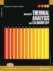Dengwei Jing*, Songwei Hu, Mohammad
Hatami, Yuanxiang Xiao, Jianpeng Jia, “Thermal analysis on a nanofluid-filled rectangular
cavity with heated fins of different geometries under magnetic field effects”, Journal
of Thermal Analysis and Calorimetry 2020, 139, 3577-3588 Cited: 7(IF 2020: 4.626)
https://link.springer.com/article/10.1007/s10973-019-08758-9 -
Amin Amiri Delouei*, Amin Emamian, Sajjad Karimnejad, Hasan Sajjadi, Dengwei Jing*, “Two-dimensional temperature distribution in FGM sectors with the power-law variation in radial and circumferential directions”, Journal of Thermal Analysis and Calorimetry 2020 Cited: 4(IF 2020: 4.626), 144, 611–621
https://link.springer.com/article/10.1007/s10973-020-09482-5 -
Jingyu Jin, Mohammad Hatami, Dengwei
Jing*, “Experimental investigation and prediction of the thermal conductivity of
water-based oxide nanofluids with low volume fractions”, Journal of Thermal Analysis
and Calorimetry 2019, 135(1), 257-269 Cited: 2(IF 2020: 4.626)
https://link.springer.com/article/10.1007/s10973-018-7045-x -
Yankuan
Wei, Zhiqiang Wang, Jinzhan Su*, Liejin
Guo*, “Metal‐free flexible protonated g‐C3N4/carbon dots
photoanode for photoelectrochemical water splitting application”, ChemElectroChem
2018, 5(19), 2734-2737 Cited: 12
(IF 2020: 4.590)
https://onlinelibrary.wiley.com/doi/abs/10.1002/celc.201800550 -
Xiaobing
Li, Fujun Niu, Jinzhan Su*, Liejin Guo*,
“Photoelectrochemical Performance Dependence on Geometric Surface Area over Branched ZnO
Nanowires”, ChemElectroChem 2018, 5(23), 3717-3722 Cited: 6
(IF 2020: 4.590)
https://onlinelibrary.wiley.com/doi/abs/10.1002/celc.201801054 -
Qingyun
Chen*, Jing Yang, Hui Jin, Yunhai
Wang, “Simultaneous treatment of copper wastewater and biomass waste in
supercritical water”, The Journal of Supercritical Fluids 2018,
138, 143-146 Cited: 8(IF 2020: 4.577)
https://www.sciencedirect.com/science/article/pii/S0896844617309506 -
Jian Wang,
Jinzhan Su*, Liejin Guo, “Controlled Aqueous Growth of
Hematite Nanoplate Arrays Directly on Transparent Conductive Substrates and Their
Photoelectrochemical Properties”, Chemistry-An Asian Journal 2016,
11(16), 2328-2334 Cited: 10 (IF 2020: 4.568)
http://onlinelibrary.wiley.com/doi/10.1002/asia.201600888/full -
 Shichao
Zong, Cheng Cheng, Jinwen Shi*, Zhenxiong
Huang, Yuchao Hu, Honghui Yang, Liejin
Guo, “Molten Ag2SO4‐based Ion‐Exchange Preparation of Ag0.5La0.5TiO3
for Photocatalytic O2 Evolution”, Chemistry-An Asian Journal 2017,
12(8), 882-889 Cited: 3 (IF 2020: 4.568)
Shichao
Zong, Cheng Cheng, Jinwen Shi*, Zhenxiong
Huang, Yuchao Hu, Honghui Yang, Liejin
Guo, “Molten Ag2SO4‐based Ion‐Exchange Preparation of Ag0.5La0.5TiO3
for Photocatalytic O2 Evolution”, Chemistry-An Asian Journal 2017,
12(8), 882-889 Cited: 3 (IF 2020: 4.568)
http://onlinelibrary.wiley.com/doi/10.1002/asia.201700101/abstract -
 Yechun
Wang, Xiaowei Hu*, Zhenshan Cao, Liejin
Guo*, “Investigations on bubble growth mechanism during photoelectrochemical and
electrochemical conversions”, Colloids and Surfaces A: Physicochemical and Engineering
Aspects 2016, 505, 86-92 Cited: 19
(IF 2020: 4.539)
Yechun
Wang, Xiaowei Hu*, Zhenshan Cao, Liejin
Guo*, “Investigations on bubble growth mechanism during photoelectrochemical and
electrochemical conversions”, Colloids and Surfaces A: Physicochemical and Engineering
Aspects 2016, 505, 86-92 Cited: 19
(IF 2020: 4.539)
http://www.sciencedirect.com/science/article/pii/S0927775716300048 -
Bing Luo,
Rui Song, Dengwei Jing*, “Particle aggregation behavior
during photocatalytic ethanol reforming reaction and its correlation with the activity of
H2 production”, Colloids and Surfaces A: Physicochemical and Engineering
Aspects 2017, 535, 114-120 Cited: 4(IF 2020: 4.539)
http://www.sciencedirect.com/science/article/pii/S0927775717308555 -
Xiaowei
Hu*, Reinhard Miller*, Liejin Guo, “Experimental
study on interfacial characteristics during bubble dissolution”, Colloids and Surfaces
A: Physicochemical and Engineering Aspects 2016, 505, 179-185 Cited: 2 (IF 2020: 4.539)
http://www.sciencedirect.com/science/article/pii/S0927775716302254 -
Jinming Ma, ZetianTao, Hongning Kou, Marco Fronzi, Lei Bi*, “Evaluating the effect of Pr-doping on the performance of strontium-doped lanthanum ferrite cathodes for protonic SOFCs”, Ceramics International 2020, 46(3), 4000-4005 Cited: 46(IF 2020: 4.527)
https://www.sciencedirect.com/science/article/pii/S0272884219328548 -
Jinzhan Su*, Tao Zhang, Yufeng
Li,
Yubin Chen, Maochang Liu, “Photocatalytic Activities
of Copper Doped Cadmium Sulfide Microspheres Prepared by a Facile Ultrasonic Spray-Pyrolysis
Method”, Molecules 2016, 21(6), 735. Special Issue on Photocatalytic Water Splitting—the Untamed Dream, Academic Editor: Prof. Nick
Serpone Cited: 29(IF 2020: 4.411)
http://www.mdpi.com/1420-3049/21/6/735 -
 Naixu Li, Longzhou Zhang,
Jiancheng Zhou*, Dengwei Jing*, Yueming Sun, “Localized
Nano-Solid-Solution Induced by Cu Doping in ZnS for Efficient Solar Hydrogen Generation”,
Dalton Transactions 2014, 43(30), 11533-11541 Cited: 18(IF 2020: 4.390)
Naixu Li, Longzhou Zhang,
Jiancheng Zhou*, Dengwei Jing*, Yueming Sun, “Localized
Nano-Solid-Solution Induced by Cu Doping in ZnS for Efficient Solar Hydrogen Generation”,
Dalton Transactions 2014, 43(30), 11533-11541 Cited: 18(IF 2020: 4.390)
http://pubs.rsc.org/en/content/articlelanding/2014/dt/c4dt00969j#!divAbstract -
Jinwen
Shi*, Yazhou Zhang, Zhaohui Zhou, Yixiang Zhao,
Jingyuan Liu, Hongbing Liu, Xiang Liao, Yuchao Hu, Daming Zhao,
Shaohua Shen*, “LaTiO2N–LaCrO3: continuous solid
solutions towards enhanced photocatalytic H2 evolution under visible-light
irradiation”, Dalton Transactions 2017, 46(32),
10685-10693 Cited: 5(IF 2020: 4.390)
http://pubs.rsc.org/en/content/articlelanding/2017/dt/c7dt01267e -
 Jin
Liang*, Haiqi Shen, Yaming Ma, Dongyu Liu, Mingtao Li, Jie Kong,
Yusheng Tang, Shujiang Ding, “Autogenous growth of the hierarchical V-doped NiFe layer double metal hydroxide electrodes for an enhanced overall water splitting”, Dalton Transactions 2020, 49(32), 11217-11225 Cited: 3(IF 2020: 4.390)
Jin
Liang*, Haiqi Shen, Yaming Ma, Dongyu Liu, Mingtao Li, Jie Kong,
Yusheng Tang, Shujiang Ding, “Autogenous growth of the hierarchical V-doped NiFe layer double metal hydroxide electrodes for an enhanced overall water splitting”, Dalton Transactions 2020, 49(32), 11217-11225 Cited: 3(IF 2020: 4.390)
https://pubs.rsc.org/en/content/articlelanding/2020/DT/D0DT01520B#!divAbstract -
 Meng Wang, Feng Ren, Jigang
Zhou, Guangxu Cai, Li Cai, Yongfeng Hu,
Dongniu Wang, Yichao Liu, Liejin Guo, Shaohua
Shen*, “N Doping to ZnO Nanorods for Photoelectrochemical Water Splitting under
Visible Light: Engineered Impurity Distribution and Terraced Band Structure”, Scientific
Reports 2015, 5, 12925 Cited: 167(IF 2020: 4.379)
Meng Wang, Feng Ren, Jigang
Zhou, Guangxu Cai, Li Cai, Yongfeng Hu,
Dongniu Wang, Yichao Liu, Liejin Guo, Shaohua
Shen*, “N Doping to ZnO Nanorods for Photoelectrochemical Water Splitting under
Visible Light: Engineered Impurity Distribution and Terraced Band Structure”, Scientific
Reports 2015, 5, 12925 Cited: 167(IF 2020: 4.379)
http://www.nature.com/articles/srep12925 -
Shaohua Shen*, Jigang Zhou, Chung-Li Dong, Yongfeng Hu, Eric
Nestor Tseng, Penghui Guo, Liejin Guo, Samuel S.
Mao*, “Surface Engineered Doping of Hematite Nanorod Arrays for Improved
Photoelectrochemical Water Splitting”, Scientific Reports 2014,
4, 6627 Cited: 135(IF 2020: 4.379)
http://www.nature.com/srep/2014/141015/srep06627/full/srep06627.html -
Fanny Caputo, Marta Mameli, Andrzej Sienkiewicz, Silvia
Licoccia, Francesco Stellacci, Lina Ghibelli, Enrico Traversa*, “A novel
synthetic approach of cerium oxide nanoparticles with improved biomedical activity”, Scientific
Reports 2017, 7, 4636 Cited: 66(IF 2020: 4.379)
https://www.nature.com/articles/s41598-017-04098-6 -
Anda R. Gliga, Karin Edoff, Fanny Caputo, Thomas Kallman, Hans
Blom, Hanna L. Karlsson, Lina Ghibelli, Enrico Traversa, Sandra Ceccatelli, Bengt
Fadeel*, “Cerium oxide nanoparticles inhibit differentiation of neural stem cells”,
Scientific Reports 2017, 7, 9284 Cited: 44(IF 2020: 4.379)
https://www.nature.com/articles/s41598-017-09430-8 -
Hameed K. Hamzah, Farooq H.Ali, M. Hatami*, Ddengwei Jing, MohammedY. Jabbar, “Magnetic nanofluid behavior including an immersed rotating conductive cylinder: finite element analysis”,
Scientific Reports 2021, 11, 4463 Cited: 1(IF 2020: 4.379)
https://www.nature.com/articles/s41598-021-83944-0 -
Zhiqiang Wang, Yankuan Wei,
Xinyi Wang, Wenshuai Zhang, Jinzhan Su*,
“Plasmonic Au Nanoparticles Modified Nanopyramid-Arrays BiVO4 with Enhanced
Photoelectrochemical Activity”, Journal of The Electrochemical Society 2019,
166(5), H3138-H3145, Focus Issue on Semiconductor Electrochemistry and
Photoelectrochemistry in Honor of Krishnan Rajeshwar Cited: 5
(IF 2020: 4.316)
http://m.jes.ecsdl.org/content/166/5/H3138.short -
Yanling
Wang, Yueshe Wang*, Kaituo Chen, Bing Li,
“Non-equilibrium molecular dynamics simulation of electrokinetic effects on heterogeneous
ionic transport in nano-channel”, Chemical Engineering Science
2011, 66(12), 2807-2816 Cited: 16(IF 2020: 4.311)
http://www.sciencedirect.com/science/article/pii/S0009250911002107 -
Jiafeng
Geng, Yechun Wang, Xiaowei hu, Dengwei
Jing*, “Insights into the hydrodynamic properties of slurry flow in a tubular
photocatalytic reactor by PIV combined with LSIA”, Chemical Engineering Science
2016, 152, 127-139 Cited: 6(IF 2020: 4.311)
http://www.sciencedirect.com/science/article/pii/S0009250916303074 -
Saman Rashidi*, Liu Yang, Ali Khoosh-Ahang, Dengwei Jing, Omid Mahian, “Entropy generation analysis of different solar thermal systems”, Environmental Science and Pollution Research 2020, 27,
Cited:16(IF 2020: 4.223)20699–20724
https://link.springer.com/article/10.1007/s11356-020-08472-2 -
Lipeng Zhang, Jianbing
Niu, Mingtao Li, Zhenhai Xia*, “Catalytic Mechanisms of
Sulfur-Doped Graphene as Efficient Oxygen Reduction Reaction Catalysts for Fuel Cells”,
Journal of Physical Chemistry C 2014, 118(7), 3545-3553 Cited: 337(IF 2020: 4.126)
http://pubs.acs.org/doi/abs/10.1021/jp410501u -
Zhixiao Qin, Yubin Chen*, Zhenxiong
Huang, Jinzhan Su, Zhidan Diao, Liejin
Guo*, “Composition-Dependent Catalytic Activities of Noble-Metal-Free
NiS/Ni3S4 for Hydrogen Evolution Reaction”, Journal of Physical
Chemistry C 2016, 120 (27), 14581-14589
Cited: 77(IF 2020: 4.126)
http://pubs.acs.org/doi/abs/10.1021/acs.jpcc.6b05230 - Xixi Wang, Maochang Liu*, Zhaohui Zhou, Liejin Guo*, “Toward Facet Engineering of CdS Nanocrystals and Their Shape-Dependent Photocatalytic Activities”, Journal of Physical Chemistry C 2015, 119(35), 20555-20560 http://pubs.acs.org/doi/abs/10.1021/acs.jpcc.5b07370 Cited: 62(IF 2020: 4.126)
-
Zhaohui Zhou, Pengju Huo, Liejin
Guo, Oleg V. Prezhdo*, “Understanding Hematite Doping with Group Ⅳ
Elements: A DFT+U Study”, Journal of Physical Chemistry C 2015,
119(47), 26303-26310
http://pubs.acs.org/doi/abs/10.1021/acs.jpcc.5b08081 Cited: 57(IF 2020: 4.126) -
Elisa
Gilardi, Emiliana Fabbri, Lei Bi, Jennifer L. M. Rupp, Thomas Lippert, Daniele Pergolesi*, Enrico
Traversa*, “Effect of Dopant–Host Ionic Radii Mismatch on Acceptor-Doped Barium
Zirconate Microstructure and Proton Conductivity”, Journal of Physical Chemistry C
2017, 121(18), 9739-9747 Cited: 55(IF 2020: 4.126)
http://pubs.acs.org/doi/abs/10.1021/acs.jpcc.7b02163 -
Coleman X. Kronawitter, Ioannis Zegkinoglou, Celia
Rogero, Jinghua Guo, Franz J. Himpsel*, Samuel S. Mao*, Lionel
Vayssieres*,
“On the Interfacial Electronic Structure Origin of Efficiency Enhancement
in Hematite Photoanodes”, Journal of Physical Chemistry C
2012, 116(43), 22780-22785 Cited: 44(IF 2020: 4.126)
http://pubs.acs.org/doi/abs/10.1021/jp308918e -
Xiangjiu Guan, Faqrul Alam Chowdhury, Nick Pant,
Liejin Guo, Lionel Vayssieres*, Zetian Mi*, “Efficient
Unassisted Overall Photocatalytic Seawater Splitting on GaN-Based Nanowire Arrays”, Journal
of Physical Chemistry C 2018, 122(25), 13797-13802 Cited: 42(IF 2020: 4.126)
https://pubs.acs.org/doi/10.1021/acs.jpcc.8b00875 -
Ya Liu, Youhong Guo, Laura T. Schelhas, Mingtao
Li*, Joel W. Ager III*, “Undoped and Ni-Doped CoOx Surface Modification of Porous
BiVO4 Photoelectrodes for Water Oxidation”, Journal of Physical Chemistry
C 2016, 120(41), 23449–23457
Cited: 41(IF 2020: 4.126)
https://pubs.acs.org/doi/abs/10.1021/acs.jpcc.6b08654 -
Naixu Li*, Ming Liu, Bin Yang, Weixin Shu, Quanhao Shen,
Maochang Liu, Jiangcheng Zhou*, “Enhanced Photocatalytic Performance toward CO2
Hydrogenation over Nanosized TiO2-Loaded Pd under UV Irradiation”, Journal
of Physical Chemistry C 2017, 121(5), 2923–2932
Cited: 39(IF 2020: 4.126)
http://pubs.acs.org/doi/abs/10.1021/acs.jpcc.6b12683#cor2 -
Yubin
Chen, Chi-Hung Chuang, Keng-Chu Lin, Shaohua Shen, Christopher
McCleese, Liejin Guo*, Clemens Burda*, “Synthesis and
Photoelectrochemical Properties of (Cu2Sn)xZn3(1-x)S3
Nanocrystal Films”, Journal of Physical Chemistry C 2014, 118(22), 11954-11963
Cited: 25(IF 2020: 4.126)
http://pubs.acs.org/doi/abs/10.1021/jp500270d -
Fengshuang Han, Zhaohui Zhou*, Xiaohai
Zhang, Zhenxiong Huang, Mingtao Li, Liejin
Guo*, “First-Principles Study on Stability and HER Activity of Noble Metal
Single-Atoms on TiO2: The Effect of Loading Density”, Journal of Physical
Chemistry C 2018, 122(5), 2546-2553 Cited: 17(IF 2020: 4.126)
http://pubs.acs.org/doi/abs/10.1021/acs.jpcc.7b11486 -
Fei Xue,
Chen Chen, Wenlong Fu, Maochang Liu*, Chang Liu,
Penghui Guo, Shaohua Shen, “On the Interfacial and
Dimensional Effects of Pd Co-Catalyst for Efficient Photocatalytic Hydrogen Generation”,
Journal of Physical Chemistry C 2018, 122(44), 25165–25173 Cited: 12(IF 2020: 4.126)
https://pubs.acs.org/doi/abs/10.1021/acs.jpcc.8b06943 -
Fengshuang
Han, Zhaohui Zhou*, Zhenxiong Huang, Mingtao Li, Liejin
Guo*, “Effect of Water Adsorption on Interfacial Structure and Band Edge Alignment
of Anatase TiO2 (001)/Water by First-Principles Molecular Dynamics”, Journal
of Physical Chemistry C 2018, 122(47), 26965–26973 Cited: 11(IF 2020: 4.126)
https://pubs.acs.org/doi/abs/10.1021/acs.jpcc.8b09191 -
Zhongguo Li, Yubin
Chen, Clemens Burda*, “Photoexcited Dynamics in Metal Halide Perovskites: From
Relaxation Mechanisms to Applications”, Journal of Physical Chemistry C 2019,
123(6), 3255-3269 Cited: 11(IF 2020: 4.126)
https://pubs.acs.org/doi/abs/10.1021/acs.jpcc.8b11347 -
Jose
Julio Gutierrez Moreno, Marco Fronzi, Pierre Lovera, Alan O'Riordan, Michael
Nolan*, “Stability of Adsorbed Water on TiO2-TiN Interfaces. A First Principles
and Ab Initio Thermodynamics Investigation”, Journal of Physical Chemistry C
2018, 122(27), 15395-15408 Cited: 8(IF 2020: 4.126)
https://pubs.acs.org/doi/10.1021/acs.jpcc.8b03520 -
Dongyu Liu, Ya Liu, Mingtao Li*, “Understanding How Atomic Sulfur Controls the Selectivity of the Electroreduction of CO2 to Formic Acid on Metallic Cu Surfaces”, Journal of Physical Chemistry C 2020, 124(11), 6145-6153
https://pubs.acs.org/doi/abs/10.1021/acs.jpcc.9b11830 Cited: 8(IF 2020: 4.126) -
Dongyu
Liu, Ya Liu, Zhaohui Zhou, Shujiang Ding, Zhenhai Xia, Mingtao
Li*, “New Theoretical Strategy for the Correlation of Oxygen Evolution Performance
and Metal Catalysts Adsorption at BiVO4 Surfaces”, Journal of Physical
Chemistry C 2018, 122(44), 25195–25203 Cited: 6(IF 2020: 4.126)
https://pubs.acs.org/doi/10.1021/acs.jpcc.8b08490 -
Miao Wang, Yong-Sheng Wei, Lianli Zou, Hao-Fan Wang, Shaohua Shen*, Qiang Xu*, “Revealing Active Function of Multicomponent Electrocatalysts from In Situ Nickel Redox for Oxygen Evolution”, Journal of Physical Chemistry C 2021, 125(30), 16420–16427(IF 2020: 4.126)
https://pubs.acs.org/doi/10.1021/acs.jpcc.1c04123 -
 Linus Appel, Raquel Fiz, Wieland Tyrra, Ingo
Pantenburg, Sanjay Mathur*, “Design of volatile mixed-ligand tantalum
(V) compounds as precursors to Ta2O5 films”, Crystal Growth
& Design 2015, 15(3), 1141-1149 Cited: 10(IF 2020: 4.076)
Linus Appel, Raquel Fiz, Wieland Tyrra, Ingo
Pantenburg, Sanjay Mathur*, “Design of volatile mixed-ligand tantalum
(V) compounds as precursors to Ta2O5 films”, Crystal Growth
& Design 2015, 15(3), 1141-1149 Cited: 10(IF 2020: 4.076)
http://pubs.acs.org/doi/abs/10.1021/cg501438k -
 Coleman
X. Kronawitter, Mukes Kapilashrami, Jonathan R. Bakke, Stacey F. Bent, Cheng-Hao Chuang, Way-Faung
Pong, Jinghua Guo, Lionel Vayssieres*, Samuel S. Mao*,
“TiO2–SnO2: F interfacial electronic structure
investigated by soft x-ray absorption spectroscopy”, Physical Review
B 2012, 85(12), 125109 Cited: 43
(IF 2020: 4.036)
Coleman
X. Kronawitter, Mukes Kapilashrami, Jonathan R. Bakke, Stacey F. Bent, Cheng-Hao Chuang, Way-Faung
Pong, Jinghua Guo, Lionel Vayssieres*, Samuel S. Mao*,
“TiO2–SnO2: F interfacial electronic structure
investigated by soft x-ray absorption spectroscopy”, Physical Review
B 2012, 85(12), 125109 Cited: 43
(IF 2020: 4.036)
http://prb.aps.org/abstract/PRB/v85/i12/e125109 -
Marco Fronzi*, Silvia Cereda, Yoshitaka Tateyama,
Alessandro De Vita, Enrico Traversa*, “Ab initio investigation of
defect formation at ZrO2-CeO2interfaces”, Physical Review
B 2012, 86(8), 085407 Cited: 19
(IF 2020: 4.036)
http://prb.aps.org/abstract/PRB/v86/i8/e085407 -
 Shaohua
Shen*, Liang Zhao, Xiangjiu Guan, Liejin
Guo*, “Improving visible-light photocatalytic activity for hydrogen evolution
over ZnIn2S4: A case study of alkaline-earth metal doping”, Journal
of Physics and Chemistry of Solids 2012, 73(1), 79-83 Cited: 62 (IF 2020: 3.995)
Shaohua
Shen*, Liang Zhao, Xiangjiu Guan, Liejin
Guo*, “Improving visible-light photocatalytic activity for hydrogen evolution
over ZnIn2S4: A case study of alkaline-earth metal doping”, Journal
of Physics and Chemistry of Solids 2012, 73(1), 79-83 Cited: 62 (IF 2020: 3.995)
http://www.sciencedirect.com/science/article/pii/S0022369711003052 -
Fan
Du, Qingyun Chen*, Yunhai Wang, “Effect of
annealing process on the heterostructure CuO/Cu2O as a highly efficient photocathode for
photoelectrochemical water reduction”, Journal of Physics and Chemistry of
Solids 2017, 104, 139-144 Cited: 29
(IF 2020: 3.995)
http://www.sciencedirect.com/science/article/pii/S0022369716304954 -
Rui Song,
Bing Luo, Maochang Liu*, Jiafeng Geng,
Dengwei Jing*, Huan Liu, “Synergetic coupling of photo and
thermal energy for efficient hydrogen production by formic acid reforming”, AIChE
Journal 2017, 63(7), 2916–2925 Cited: 18(IF 2020: 3.993)
http://onlinelibrary.wiley.com/doi/10.1002/aic.15663/abstract -
 Dengwei
Jing*, Song Yao, Peng Chen, Maochang Liu,
Jinwen Shi, Liang Zhao, Wei Yan, Liejin
Guo*, “A multichannel system for rapid determination of the activity for
photocatalytic H2 production”, AIChE
Journal 2012, 58(11), 3593-3596 Cited: 7
(IF 2020: 3.993)
Dengwei
Jing*, Song Yao, Peng Chen, Maochang Liu,
Jinwen Shi, Liang Zhao, Wei Yan, Liejin
Guo*, “A multichannel system for rapid determination of the activity for
photocatalytic H2 production”, AIChE
Journal 2012, 58(11), 3593-3596 Cited: 7
(IF 2020: 3.993)
http://onlinelibrary.wiley.com/doi/10.1002/aic.13833/abstract -
Rui Song, Maochang Liu, Bing Luo, Jiafeng Geng, Dengwei
Jing*, “Plasmon‐induced Photothermal Effect of Sub‐10‐nm Cu Nanoparticles Enables Boosted Full‐spectrum Solar H2 Production”, AIChE
Journal 2020, 66(11), e17008(IF 2020: 3.993)
https://aiche.onlinelibrary.wiley.com/doi/abs/10.1002/aic.17008 -
M. Tahari, A. Ghorbanian, Mohammed Hatami*, Dengwei
Jing, “Physical effect of a variable magnetic field on the heat transfer of a
nanofluid-based concentrating parabolic solar collector”, The European Physical Journal
Plus 2017, 132, 549 Cited: 12(IF 2020:3.911)
https://link.springer.com/article/10.1140/epjp/i2017-11813-1 -
A. Yadollahi, A. Khalesidoost, A. Kasaeipoor, Mohammed
Hatami*, Dengwei Jing, “Physical investigation on silver-water
nanofluid natural convection for an F-shaped cavity under the magnetic field effects”, The
European Physical Journal Plus 2017, 132, 372 Cited: 6(IF 2020:3.911)
https://link.springer.com/article/10.1140/epjp/i2017-11653-y -
Jinwen
Shi, Shaohua Shen*, Yubin Chen, Liejin
Guo, Samuel
S. Mao, “Visible light-driven photocatalysis of doped SrTiO3 tubular
structure”, Optics Express 2012, 20(S2),
A351-A359 Cited: 17 (IF 2020: 3.894)
http://www.opticsinfobase.org/oe/fulltext.cfm?uri=oe-20-S2-A351&id=230243 -
 Quan Xu, Mingtao
Li, Jianbing
Niu, Zhenhai Xia*, “Dynamic Enhancement in Adhesion
Forces of Microparticles on
Substrates”, Langmuir 2013, 29(45),
13743-13749 Cited: 29(IF 2020: 3.882)
Quan Xu, Mingtao
Li, Jianbing
Niu, Zhenhai Xia*, “Dynamic Enhancement in Adhesion
Forces of Microparticles on
Substrates”, Langmuir 2013, 29(45),
13743-13749 Cited: 29(IF 2020: 3.882)
http://pubs.acs.org/doi/abs/10.1021/la4023757 -
Quan Xu, Mingtao
Li, Lipeng Zhang, Jianbing Niu, Zhenhai Xia*, “Dynamic Adhesion
Forces between Microparticles and Substrates in Water”, Langmuir
2014, 30(37), 11103-11109
Cited: 29(IF 2020: 3.882)
http://pubs.acs.org/doi/abs/10.1021/la502735w -
Yang Li, Jiandong Zhou, Meibing Hu, Dengwei Jing*, “Whole Contact Line Pinning for Droplets Impacting on a Hydrophobic Surface Due to Hydrophilic TiO2 Nanoparticle Addition”, Langmuir
2021, 37(22), 6673–6680
(IF 2020: 3.882)
https://pubs.acs.org/doi/abs/10.1021/acs.langmuir.1c00523 -
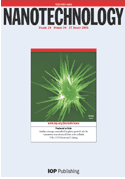Cheng
Cheng, Jinwen Shi*, Yuchao Hu, Liejin
Guo*, “WO3/g-C3N4 composites: one-pot
preparation and enhanced photocatalytic H2 production under visible-light
irradiation”, Nanotechnology 2017, 28(16),
164002 Cited: 69 (IF 2020: 3.874)
http://iopscience.iop.org/article/10.1088/1361-6528/aa651a/meta -
Yubin
Chen*, Chi-Hung Chuang, Zhixiao Qin, Shaohua Shen,
Tennyson Doane, Clemens Burda*, “Electron-transfer dependent
photocatalytic hydrogen generation over cross-linked CdSe/TiO2 type-II
heterostructure”, Nanotechnology 2017, 28(8),
084002 Cited: 35 (IF 2020: 3.874)
http://iopscience.iop.org/article/10.1088/1361-6528/aa5642 -
Amir
Hassanpour, Penghui Guo, Shaoshua Shen, Pablo Bianucci*,
“The effect of cation doping on morphology, optical and structural properties of
highly oriented wurtzite ZnO nanorod-arrays grown by a hydrothermal method”, Nanotechnology
2017, 28(43), 435707 Cited: 14 (IF 2020: 3.874)
http://iopscience.iop.org/article/10.1088/1361-6528/aa849d -
Han-Wei Chang,
Yanming Fu, Wan-Yi Lee, Ying-Rui Lu, Yu-Cheng Huang, Jeng-Lung Chen, Chi Liang
Chen, Wu Ching Chou, J M Chen, Jyh Fu Lee, Shaohua Shen*, Chung-Li Dong*,
“Visible light-induced electronic structure modulation of Nb- and Ta-doped
α-Fe2O3 nanorods for effective photoelectrochemical water splitting”,
Nanotechnology 2018, 29(6), 064002 Cited: 12
(IF 2020: 3.874)
http://iopscience.iop.org/article/10.1088/1361-6528/aa9d75/meta -
Tao
Zhang, Yumeng Lu, Jian Wang, Zhiqiang
Wang, Wenshuai Zhang, Xinyi Wang, Jinzhan
Su*, Liejin Guo*,
“Growth of NiMn layered double hydroxides on nanopyramidal BiVO4 photoanode
for enhanced photoelectrochemical performance”,
Nanotechnology 2020, 31(11), 115707 Cited: 3(IF 2020: 3.874)
https://iopscience.iop.org/article/10.1088/1361-6528/ab59ba/meta -
Fei Liu*, Jie Zhang, Weiwei Wu, Peng Zhang, Xiaohua Ma, Keyu Tao, Tongtong Wang, Qi Wang*,
“The real-time investigation of the nickel-iron hydroxide catalyzed oxygen evolution reaction with interdigitated array electrodes”,
Nanotechnology 2021, 32, 375706(IF 2020: 3.874)
https://iopscience.iop.org/article/10.1088/1361-6528/ac0a14/meta -
Naixu Li, Xianhe Li, Rui Pan, Miao Cheng, Jie Guan, Jiancheng Zhou, Maochang Liu, Junwang Tang, Dengwei Jing*, “Efficient photocatalytic CO2 reformation of methane on Ru/La‐g‐C3N4 by promoting charge transfer and CO2 activation”, ChemPhotoChem 2021, 5(8), 748-757(IF 2020: 3.849)
https://chemistry-europe.onlinelibrary.wiley.com/doi/abs/10.1002/cptc.202100020 -
M. J.
Pang*, Jinjia Wei*, B. Yu, “Numerical study on
modulation of microbubbles on turbulence frictional drag in a horizontal
channel”, Ocean Engineering 2014, 81,
58-68 Cited: 25(IF 2020: 3.795)
http://www.sciencedirect.com/science/article/pii/S002980181400050X -
 Ying Liu, Feng Ren*, Shaohua
Shen, Yanming Fu, Chao Chen, Chang Liu, Zhuo Xing, Dan Liu, Xiangheng
Xiao, Wei Wu, Xudong Zheng, Yichao Liu, Changzhong Jiang, “Efficient enhancement of hydrogen
production by Ag/Cu2O/ZnO tandem triple-junction photoelectrochemical cell”,
Applied Physics Letters 2015, 106(12), 123901 Cited: 41(IF 2020: 3.791)
Ying Liu, Feng Ren*, Shaohua
Shen, Yanming Fu, Chao Chen, Chang Liu, Zhuo Xing, Dan Liu, Xiangheng
Xiao, Wei Wu, Xudong Zheng, Yichao Liu, Changzhong Jiang, “Efficient enhancement of hydrogen
production by Ag/Cu2O/ZnO tandem triple-junction photoelectrochemical cell”,
Applied Physics Letters 2015, 106(12), 123901 Cited: 41(IF 2020: 3.791)
http://scitation.aip.org/content/aip/journal/apl/106/12/10.1063/1.4916224 -
 Zhuo
Xing, Shaohua Shen, Meng Wang, Feng Ren*, Ying
Liu, Xudong Zheng, Yichao Liu, Xiangheng Xiao, Wei Wu, Changzhong Jiang, “Efficient
enhancement of solar-water-splitting by modified “Z-scheme” structural WO3-W-Si
photoelectrodes”, Applied Physics Letters 2014, 105(14),
143902 Cited: 16 (IF 2020: 3.791)
Zhuo
Xing, Shaohua Shen, Meng Wang, Feng Ren*, Ying
Liu, Xudong Zheng, Yichao Liu, Xiangheng Xiao, Wei Wu, Changzhong Jiang, “Efficient
enhancement of solar-water-splitting by modified “Z-scheme” structural WO3-W-Si
photoelectrodes”, Applied Physics Letters 2014, 105(14),
143902 Cited: 16 (IF 2020: 3.791)
http://scitation.aip.org/content/aip/journal /apl/105/14/10.1063/1.4897636 -
Maochang Liu, Yang Yang, Naixu
Li, Yuanchang Du, Dongxing Song, Lijing Ma, Yi
Wang, Yiqun Zheng, Dengwei Jing*, “Controlled formation of intense hot
spots in Pd@Ag core-shell nanooctapods for efficient photothermal conversion”, Applied
Physics Letters 2017, 111(7), 073903 Cited: 8
(IF 2020: 3.791)
http://aip.scitation.org/doi/abs/10.1063/1.4999305 -
Dongxing Song, Dengwei Jing, Weigang Ma*, Xing
Zhang, “High thermal conductivity of nanoparticles not necessarily contributing more to
nanofluids”, Applied Physics Letters 2018, 113(22),
223104 Cited: 7 (IF 2020: 3.791)
https://aip.scitation.org/doi/full/10.1063/1.5055058 -
Ingrid Rodriguez-Gutierrez, Joao B. Souza Junior, Edson R. Leite, Lionel Vayssieres, Flavio L. Souza*, “An intensity modulated photocurrent spectroscopy study of the role of titanium in thick hematite photoanodes”, Applied Physics Letters 2021, 119(7),
071602. Special Issue on Materials For Renewable Fuels Production (IF 2020: 3.791)
https://aip.scitation.org/doi/10.1063/5.0060483 -
Yubin Chen, Fei Lv, Hongyu Xia, Xiaoya Xu, Jinzhan Su, Shaohua Shen*, “Modification of Ti-doped hematite nanowires with a NiOx buffer layer for improved photoelectrochemical performance”, Applied Physics Letters 2021, 119(8),
083901. Special Issue on Materials For Renewable Fuels Production(IF 2020: 3.791)
https://aip.scitation.org/doi/full/10.1063/5.0061734 -
 Huanhuan Guo, Di Zhou*, Wenfeng Liu, Lixia Pang, Daw ei Wang,
Jinzhan Su, Ze-Ming Qi, “Microwave dielectric properties of temperature‐stable zircon‐type (Bi, Ce)VO4 solid solution ceramics”, Journal
of the American Ceramic Society 2020, 103(1), 423-431 Cited: 62
(IF 2020: 3.784)
Huanhuan Guo, Di Zhou*, Wenfeng Liu, Lixia Pang, Daw ei Wang,
Jinzhan Su, Ze-Ming Qi, “Microwave dielectric properties of temperature‐stable zircon‐type (Bi, Ce)VO4 solid solution ceramics”, Journal
of the American Ceramic Society 2020, 103(1), 423-431 Cited: 62
(IF 2020: 3.784)
https://ceramics.onlinelibrary.wiley.com/doi/abs/10.1111/jace.16759 -
Mohammad
Hatami*, Dengwei Jing*, “Differential Transformation Method
for Newtonian and non-Newtonian nanofluids flow analysis: Compared to numerical solution”,
Alexandria Engineering Journal 2016, 55(2), 731-739 Cited: 26 (IF 2020: 3.732)
http://www.sciencedirect.com/science/article/pii/S1110016816000077 -
Rui Song, Bing Luo, Jiafeng
Geng, Dongxing Song, Dengwei Jing*, “Photothermocatalytic
hydrogen evolution over Ni2P/TiO2 for
full-spectrum solar energy conversion”, Industrial & Engineering Chemistry
Research 2018, 57(23), 7846-7854 Cited: 22(IF 2020: 3.720)
https://pubs.acs.org/doi/abs/10.1021/acs.iecr.8b00369 -
Dengwei Jing*, Li Jing,
Huan Liu, Song Yao, Liejin Guo*,
“Photocatalytic Hydrogen Production from Refinery Gas over a Fluidized-Bed
Reactor I: Numerical Simulation”, Industrial & Engineering
Chemistry Research 2013, 52(5), 1982-1991 Cited: 20 (IF 2020: 3.720)
http://pubs.acs.org/doi/abs/10.1021/ie3023127 -
Dengwei Jing*, Li Jing, Huan
Liu, Song Yao, Liejin Guo*, “Photocatalytic
Hydrogen Production from Refinery Gas over a Fluidized-Bed Reactor II: Parametric
Study”, Industrial & Engineering Chemistry
Research 2013, 52(5), 1992-1999 Cited: 18(IF 2020: 3.720)
http://pubs.acs.org/doi/abs/10.1021/ie302315g -
Dongxing Song, Mohammad Hatami,
Jiandong Zhou, Dengwei Jing*, “Dynamic
Nanoparticle Aggregation for a Flowing Colloidal Suspension with Nonuniform Temperature Field
Studied by a Coupled LBM and PBE Method”, Industrial & Engineering Chemistry
Research 2017, 56(38), 10886-10899 Cited: 5(IF 2020: 3.720)
http://pubs.acs.org/doi/abs/10.1021/acs.iecr.7b02261 -
Jiafeng Geng, Junwang Tang, Yechun Wang, Zhenxiong Huang, Dengwei Jing*, Liejin Guo, “Attenuated periodical oscillation characteristics in a nanoscale particle-laden laminar flow”, Industrial & Engineering Chemistry
Research 2020, 59(16), 8018-8027 Cited: 3(IF 2020: 3.720)
https://pubs.acs.org/doi/abs/10.1021/acs.iecr.0c00405 -
Zilong Zeng, Lijun Sun, Heng Liu, Benchi Ma, Dengwei Jing*, Liejin Guo, “Should the Tubular Photocatalytic Reactors Work Continuously or in an Intermittent Manner Instead?”, Industrial & Engineering Chemistry
Research 2021, 60(12), 4610–4621(IF 2020: 3.720)
https://pubs.acs.org/doi/abs/10.1021/acs.iecr.1c00463 -
Ke Wang, Xianhe Li, Nan Wang, Quanhao Shen, Maochang Liu*, Jiancheng Zhou, Naixu Li*, “Z-Scheme Core–Shell meso-TiO2@ZnIn2S4/Ti3C2 MXene Enhances Visible Light-Driven CO2-to-CH4 Selectivity”, Industrial & Engineering Chemistry Research 2021, 60(24), 8720–8732(IF 2020: 3.720)
https://pubs.acs.org/doi/10.1021/acs.iecr.1c00713 -
 Ke Sun, Shaohua
Shen, Justin Cheung, Xiaolu Pang, Namseok Park, Jigang Zhou, Yongfeng Hu, Zhelin Sun, Sun
Young Noh, Riley T. Conor, Paul Yu, Sungho Jin, Deli Wang*, “Si
Photoanode Protected by A Metal Modified ITO Layer with Ultrathin NiOx for Solar Water
Oxidation”, Physical Chemistry Chemical
Physics 2014, 16(10), 4612-4625 Cited: 54 (IF 2020: 3.676)
Ke Sun, Shaohua
Shen, Justin Cheung, Xiaolu Pang, Namseok Park, Jigang Zhou, Yongfeng Hu, Zhelin Sun, Sun
Young Noh, Riley T. Conor, Paul Yu, Sungho Jin, Deli Wang*, “Si
Photoanode Protected by A Metal Modified ITO Layer with Ultrathin NiOx for Solar Water
Oxidation”, Physical Chemistry Chemical
Physics 2014, 16(10), 4612-4625 Cited: 54 (IF 2020: 3.676)
http://pubs.rsc.org/en/content/articlelanding/2014/cp/c4cp00033a#!divAbstract -
Yanming
Fu, Chung-Li Dong, Zhaohui Zhou, Wan-Yi Lee, Jie Chen,
Penghui Guo, Liang Zhao, Shaohua Shen*, “Solution
growth of Ta-doped hematite nanorods for efficient photoelectrochemical water splitting: a tradeoff
between electronic structure and nanostructure evolution”, Physical Chemistry Chemical
Physics 2016, 18(5), 3846-3853 Cited: 46(IF 2020: 3.676)
http://pubs.rsc.org/en/content/articlelanding/2016/cp/c5cp07479g#!divAbstract - Maochang Liu, Yiqun Zheng, Shuifen Xie, Naixu Li, Ning Lu, Jinguo Wang, Moon J. Kim, Liejin Guo, Younan Xia*, “Facile synthesis of Pd–Ir bimetallic octapods and nanocages through galvanic replacement and co-reduction, and their use for hydrazine decomposition”, Physical Chemistry Chemical Physics 2013, 15(28), 11822-11829 Cited: 42(IF 2020: 3.676) http://pubs.rsc.org/en/content/articlelanding/2013/cp/c3cp51950c
-
Ning
Zhang, Jinwen Shi, Fujun Niu, Jian
Wang, Liejin Guo*, “A Cocatalyst-Free Eosin Y-Sensitized P-type Co3O4
Quantum Dots for Highly Efficient and Stable Visible-Light-Driven Water Reduction and Hydrogen
Production”, Physical Chemistry Chemical Physics 2015,
17(33) Cited: 33(IF 2020: 3.676), 21397-21400
http://pubs.rsc.org/en/Content/ArticleLanding/2015/CP/C5CP02983J#!divAbstract -
Xiaokang
Wan, Fujun Niu, Jinzhan Su, Liejin
Guo*, “Enhanced photoelectrochemical water oxidation of bismuth vanadate via a
combined strategy of W doping and surface RGO modification”, Physical Chemistry
Chemical Physics 2016, 18(46), 31803-31810 Cited: 27(IF 2020: 3.676)
http://pubs.rsc.org/-/content/articlelanding/2016/cp/c6cp06233d#!divAbstract -
Jingyu
Jin, Xiaoyan Li, Jiafeng Geng, Dengwei
Jing*, “Insights into the complex interaction between hydrophilic nanoparticles and
ionic surfactants at the liquid/air interface”, Physical Chemistry Chemical
Physics 2018, 20(22), 15223-15235 Cited: 21(IF 2020: 3.676)
http://pubs.rsc.org/en/content/articlelanding/2018/cp/c8cp01838c/unauth#!divAbstract -
 Coleman X. Kronawitter, Ioannis Zegkinoglou, Shaohua
Shen, Jinghua Guo, Franz J. Himpsel, Samuel S. Mao*, Lionel
Vayssieres*,
“On the orbital anisotropy in Hematite nanorod-based photoanodes”, Physical
Chemistry Chemical Physics 2013, 15(32), 13483-13488
Cited: 20(IF 2020: 3.676)
Coleman X. Kronawitter, Ioannis Zegkinoglou, Shaohua
Shen, Jinghua Guo, Franz J. Himpsel, Samuel S. Mao*, Lionel
Vayssieres*,
“On the orbital anisotropy in Hematite nanorod-based photoanodes”, Physical
Chemistry Chemical Physics 2013, 15(32), 13483-13488
Cited: 20(IF 2020: 3.676)
http://pubs.rsc.org/en/content/articlelanding/2013/cp/c3cp52527a -
Zhaohui Zhou, Fengshuang Han, Liejin Guo, Oleg.
V. Prezhdo*, “Understanding divergent behaviors in the photocatalytic hydrogen evolution
reaction on CdS and ZnS: a DFT based study”, Physical Chemistry Chemical Physics
2016, 18(25), 16862-16869 Cited: 19(IF 2020: 3.676)
http://pubs.rsc.org/en/content/articlelanding/2016/cp/c6cp02599d# -
Zonghu
Han, Meng Wang, Xiangyan Chen, Shaohua
Shen*, “CdSe Sensitized Branched CdS Hierarchical Nanostructures for Efficient
Photoelectrochemical Solar Hydrogen Generation”, Physical Chemistry Chemical
Physics 2016, 18(16), 11460-11466 Cited: 13(IF 2020: 3.676)
http://pubs.rsc.org/en/content/articlelanding/2016/cp/c6cp00692b#!divAbstract -
Marco
Fronzi, Sherif Abdulkader Tawfik, Catherine Stampfl, Michael J. Ford, “Magnetic
properties of stoichiometric and defective Co9S8”, Physical
Chemistry Chemical Physics 2018, 20(4), 2356-2362 Cited: 5(IF 2020: 3.676)
http://pubs.rsc.org/en/Content/ArticleLanding/2017/CP/C7CP06637F#!divAbstract -
José Julio Gutiérrez Moreno*, Marco Fronzi, Pierre Lovera, Alan O’Riordan, Michael J. Ford, Wenjin Li*, Michael Nolan*, “Structure, stability and water adsorption on ultra-thin TiO2 supported on TiN”, Physical
Chemistry Chemical Physics 2019, 21(45), 25344-25361 Cited: 2(IF 2020: 3.676)
https://pubs.rsc.org/ko/content/articlelanding/2019/cp/c9cp04506f -
Liejin
Guo*, Dengwei Jing*, Maochang Liu, Yubin
Chen, Shaohua Shen, Jinwen Shi, Kai
Zhang, “Functionalized nanostructures for enhanced photocatalytic performance under
solar light”, Beilstein Journal of Nanotechnology 2014,
5, 994-1004 “Thematic series on Photocatalysis” Cited: 21 (IF 2020: 3.649)
http://www.beilstein-journals.org/bjnano/single/articleFullText.htm?publicId=2190-4286-5-113 -
Honghui
Yang, Xiuru Liu, Zhaohui Zhou, Liejin
Guo*, “Preparation of a novel Cd2Ta2O7
photocatalyst and its photocatalytic activity in water splitting”, Catalysis
Communications 2013, 31, 71-75 Cited: 19
(IF 2020: 3.626)
http://www.sciencedirect.com/science/article/pii/S1566736712004347 -
 Jinwen
Shi, Liejin Guo*, “ABO3-Based Photocatalysts
for Water Splitting”, Progress in Natural Science-Materials International
2012, 22(6), 592-615 Cited: 219
(IF 2020: 3.607)
Jinwen
Shi, Liejin Guo*, “ABO3-Based Photocatalysts
for Water Splitting”, Progress in Natural Science-Materials International
2012, 22(6), 592-615 Cited: 219
(IF 2020: 3.607)
http://www.sciencedirect.com/science/article/pii/S1002007112001451
-
Samuel S.
Mao*, Shaohua Shen, Liejin Guo, “Nanomaterials
for Renewable Hydrogen Production,
Storage and Utilization”, Progress in Natural Science-Materials
International 2012, 22(6), 522-534 Cited: 94
(IF 2020: 3.607)
http://www.sciencedirect.com/science/article/pii/S1002007112001463 -
Li Zhang, Hongcheng Teng,
Jiancheng Zhou, Yueming Sun, Naixu Li*, Maochang Liu*, Dengwei
Jing, “Synthesis of AgI/Bi2MoO6 nano-heterostructure
with enhanced visible-light photocatalytic property”, Progress in Natural
Science-Materials International 2018, 28(2), 235-241 Cited: 8 (IF 2020: 3.607)
https://www.sciencedirect.com/science/article/pii/S1002007118301242 -
Liya Zhu, Youjun Lu*, “Reactivity and
Efficiency of Ceria-Based Oxides for Solar CO2 Splitting via Isothermal and
Near-Isothermal Cycles”, Energy Fuels 2018, 32(1),
736–746
Cited: 11(IF 2020: 3.605)
http://pubs.acs.org/doi/abs/10.1021/acs.energyfuels.7b03284 -
Yi Wang*, Pu Zhang, Lei Liu, Fei Xue, Maochang
Liu*, Ling Li, Wensheng Fu*, “Regulating peroxidase-like activity of Pd nanocubes
through
surface inactivation and its application for sulfide detection”, New Journal of
Chemistry 2019, 43(1), 371-376 Cited: 5(IF 2020: 3.591)
https://pubs.rsc.org/en/content/articlelanding/2018/nj/c8nj05138k/unauth#!divAbstract -
Tao Zhang,
Jinzhan Su*, Liejin Guo, “Morphology Engineering of
WO3/BiVO4 Heterojunction for Efficient Photocatalytic Water Oxidation”,
CrystEngComm 2016, 18(46), 8961-8970
Cited: 34(IF 2020: 3.545)
http://pubs.rsc.org/en/content/articlelanding/2016/ce/c6ce01952h#!divAbstract
-
Li Luo,
Peng-peng Wang, Dengwei Jing*, Xun Wang*, “Self-assembly
of TiO2 nanoparticles into chains, films and honeycomb networks”, CrystEngComm 2014,
16(8), 1584-1591 Cited: 14 (IF 2020: 3.545)
http://pubs.rsc.org/en/content/articlelanding/2014/ce/c3ce41709c#!divAbstract -
Tao Zhang,
Jinzhan Su*, Liejin Guo*, “Hierarchical Architecture of WO3
Nanosheets by Self-assembly of Nanorods for Photoelectrochemical Application”, CrystEngComm
2016, 18(5), 665-669 Cited: 13(IF 2020: 3.545)
http://pubs.rsc.org/en/content/articlelanding/2015/ce/c5ce01484k#!divAbstract -
 Li Luo, Junfeng Hui, Qiyu Yu, Zhicheng Zhang,
Dengwei Jing*, Pengpeng Wang, Yong Yang, Xun Wang*, “Crystal
growth by leaps and bounds based on self-assembly: insight from titania”, CrystEngComm 2012, 14(22),
7648-7655 Cited: 10(IF 2020: 3.545)
Li Luo, Junfeng Hui, Qiyu Yu, Zhicheng Zhang,
Dengwei Jing*, Pengpeng Wang, Yong Yang, Xun Wang*, “Crystal
growth by leaps and bounds based on self-assembly: insight from titania”, CrystEngComm 2012, 14(22),
7648-7655 Cited: 10(IF 2020: 3.545)
http://pubs.rsc.org/en/content/articlelanding/2012/ce/c2ce25812a -
Gongguo Zhang, Yanyun Ma, Feng Liu, Yuting Nie, Zhiang Liu, Xiaowei Fu, Xiaoqian Luan, Fengli Qu, Maochang Liu, Yiqun Zheng*, “Seeded growth of gold–silver ultrathin wire–dot hybrid nanostructures”, CrystEngComm
2020, 22(35), 5768-5775 Cited:2 (IF 2020: 3.545)
https://pubs.rsc.org/en/content/articlelanding/2020/ce/d0ce01009j/unauth#!divAbstract -
Gongguo Zhang, Yanyun Ma*, Xiaowei Fu, Wenjun Zhao, Feng Liu, Maochang Liu, Yiqun Zheng*, “Enriching the branching of Au@PdAu core–shell nanocrystals using a syringe pump: kinetics control meets lattice mismatch”, CrystEngComm
2021, 23(13), 2582-2589(IF 2020: 3.545)
https://pubs.rsc.org/en/content/articlelanding/2021/ce/d1ce00107h#!divAbstract -
Yiqun Zheng*, Yanyun Ma, Gongguo Zhang, Wenjun Zhao, Feng Liu, Maochang Liu, “Construction of AuPdPt spherical nanodendrites with a multilayered structure by manipulating etching and regrowth in seeded growth”, CrystEngComm
2021, Advance Article(IF 2020: 3.545)
https://pubs.rsc.org/en/content/articlelanding/2021/CE/D1CE00894C -
Jiandong
Zhou, Yechun Wang, Jiafeng Geng, Dengwei
Jing*, “Characteristic oscillation phenomenon after head-on collision of two
nanofluid droplets”, Physics of Fluids 2018, 30(7),
072107 Cited: 9(IF 2020: 3.521)
https://aip.scitation.org/doi/abs/10.1063/1.5040027
-
Jiandong
Zhou, Xin Wang, Jinzhan Su, Dengwei
Jing*, A. A. Mohamad， “Impact on mechanical robustness of water droplet due to hydrophilic nanoparticles”, Physics of Fluids 2020, 32(12),
122110(IF 2020: 3.521)
https://aip.scitation.org/doi/10.1063/5.0025558
-
Marco Fronzi, Michael Nolan*, “Surface
Modification of Perfect and Hydroxylated TiO2 Rutile (110) and Anatase (101) with
Chromium Oxide Nanoclusters”, ACS Omega 2017,
2(10), 6795-6808 Cited: 21
(IF 2020: 3.512)
http://pubs.acs.org/doi/abs/10.1021/acsomega.7b01118 -
Marco Fronzi*, M. Hussein N. Assadi, Michael J. Ford*,
“Ab Initio Investigation of Water Adsorption and Hydrogen Evolution on Co9S8
and Co3S4 Low-Index Surfaces”, ACS Omega
2018, 3(9), 12215-12228 Cited: 9
(IF IF 2020: 3.512)
https://pubs.acs.org/doi/abs/10.1021/acsomega.8b00989 -
 Runxue Liu, Wanliang Yang, Guiwei He, Wei Zheng, Maokun Li, Wenliang Tao, Mengkui Tian*,
“Ag-Modified g-C3N4 Prepared by a One-Step Calcination Method for Enhanced Catalytic Efficiency and Stability”, ACS Omega
2020, 5(31), 19615-19624
Cited: 9(IF IF 2020: 3.512)
Runxue Liu, Wanliang Yang, Guiwei He, Wei Zheng, Maokun Li, Wenliang Tao, Mengkui Tian*,
“Ag-Modified g-C3N4 Prepared by a One-Step Calcination Method for Enhanced Catalytic Efficiency and Stability”, ACS Omega
2020, 5(31), 19615-19624
Cited: 9(IF IF 2020: 3.512)
https://pubs.acs.org/doi/full/10.1021/acsomega.0c02161# -
Ying Zhang, Zhao Zheng, Yitao Si, Baisheng Sa*, Hengyi Li, Tao Yu*, Cuilian Wen, Bo Wu,
“Structural, Electronic, and Nonlinear Optical Properties of C66H4 and C70Cl6 Encapsulating Li and F Atoms”, ACS Omega
2021, 6(24), 16234–16240
(IF IF 2020: 3.512)
https://pubs.acs.org/doi/full/10.1021/acsomega.1c02364# -
Shaohua
Shen*, Penghui Guo, Liang Zhao, Yuanchang
Du, Liejin Guo*, “Insights into photoluminescence property and
photocatalytic activity of cubic and rhombohedral ZnIn2S4”, Journal
of Solid State Chemistry 2011, 184(8), 2250-2256 Cited: 50
(IF 2020: 3.498)
http://www.sciencedirect.com/science/article/pii/S0022459611003616 -
Ya Liu*, Liejin Guo, “On factors limiting the performance of photoelectrochemical CO2 reduction”, Journal of Chemical Physics 2020, 152(10), 100901 Cited: 9
(IF 2020: 3.488)
https://aip.scitation.org/doi/10.1063/1.5141390 -
Yitao Si, Mingtao Li, Zhaohui Zhou, Maochang Liu*, Oleg Prezhdo*, “Improved description of hematite surfaces by the SCAN functional”, Journal of Chemical Physics 2020, 152(2), 024706
Cited: 3(IF 2020: 3.488)
https://aip.scitation.org/doi/full/10.1063/1.5134951%40jcp.2020.OXIDE2020.issue-1# -
Xiangyan Chen, Yanming Fu, Liu Hong, Tingting Kong, Xiaobo Shi, Guangxu Wang, Le Qu, Shaohua Shen*,“Interface and surface engineering of hematite photoanode for efficient solar water oxidation”, Journal of Chemical Physics 2020, 152(24), 244707 Cited: 1(IF 2020: 3.488)
https://aip.scitation.org/doi/full/10.1063/5.0009072%40jcp.2020.PHOTO2020.issue-1 -
 Yubin
Chen*, Zhixiao Qin, Xixi
Wang, Xu Guo, Liejin
Guo*, “Noble-metal-free Cu2S-modified
photocatalysts for enhanced photocatalytic hydrogen production by forming nanoscale p–n junction
structure”, RSC Advances 2015, 5(23), 18159-18166 Cited: 58(IF 2020: 3.361)
Yubin
Chen*, Zhixiao Qin, Xixi
Wang, Xu Guo, Liejin
Guo*, “Noble-metal-free Cu2S-modified
photocatalysts for enhanced photocatalytic hydrogen production by forming nanoscale p–n junction
structure”, RSC Advances 2015, 5(23), 18159-18166 Cited: 58(IF 2020: 3.361)
http://pubs.rsc.org/en/content/articlelanding/2015/ra/c5ra00091b#!divAbstract -
Naixu Li, Hongcheng
Teng, Li Zhang, Jiancheng Zhou*, Maochang Liu*, “Synthesis
of Mo-doped WO3 nanosheets with enhanced visible-light-driven photocatalytic
properties”, RSC Advances 2015, 5(115), 95394-95400 Cited: 53(IF 2020: 3.361)
http://pubs.rsc.org/en/content/articlelanding/2015/ra/c5ra17098b#!divAbstract -
Youhong Guo,
Yanming Fu, Ya Liu, Shaohua Shen*, “Photoelectrochemical
Activity of ZnFe2O4 Modified α-Fe2O3 Nanorod Array Films”,
RSC Advances 2014, 4(70), 36967-36972 Cited: 46(IF 2020: 3.361)
http://pubs.rsc.org/en/content/articlelanding/2014/ra/c4ra05289g#!divAbstract -
Jian
Wang, Ning Zhang, Jinzhan Su*, Liejin
Guo, “α-Fe2O3 Quantum Dots: Low-cost Synthesis and
Photocatalytic Oxygen Evolution Capabilities”, RSC Advances 2016,
6(47), 41060-41066 Cited: 29(IF 2020: 3.361)
http://pubs.rsc.org/en/content/articlelanding/2016/ra/c6ra04464f -
Jinzhan
Su*, Jian Wang, Cong Liu, Bo
Feng, Yubin Chen, Liejin Guo, “On the role of
metal atom doping in hematite for improved photoelectrochemical properties: a comparison
study”, RSC Advances 2016, 6(104), 101745-101751 Cited: 28(IF 2020: 3.361) 2020: 3.361
http://pubs.rsc.org/en/content/articlelanding/2016/ra/c6ra22895j#!divAbstract -
Cong
Liu, Jinzhan Su*, Liejin Guo, “Comparison of
Sandwich and Fingers-crossing Type WO3/BiVO4 Multilayer Heterojunctions for
Photoelectrochemical Water Oxidation”, RSC Advances 2016, 6(33),
27557-27565 Cited: 28(IF 2020: 3.361)
http://pubs.rsc.org/en/content/articlehtml/2016/ra/c5ra25601a -
Jinzhan
Su*, Liejin Guo, “High aspect ratio
TiO2 nanowires tailored in concentrated HCl hydrothermal condition for
photoelectrochemical water splitting”, RSC
Advances 2015, 5(65), 53012-53018 Cited: 24(IF 2020: 3.361)
http://pubs.rsc.org/en/content/articlelanding/2015/ra/c5ra06149k#!divAbstract -
Wenlong
Fu, Maochang Liu*, Fei Xue, Xixi
Wang, Zhidan Diao, Liejin Guo*, “Facile polyol
synthesis of CuS nanocrystals with a hierarchical nanoplate structure and their application for
electrocatalysis and photocatalysis”, RSC Advances 2016, 6(83),
80361-80367 Cited: 17(IF 2020: 3.361)
http://pubs.rsc.org/en/content/articlelanding/2016/ra/c6ra17221k#!divAbstract -
Jianbing Niu,
Mingtao Li, Zhenhai Xia*, “Growth mechanisms and
mechanical properties of 3D carbon nanotube–graphene junctions: molecular dynamic
simulations”, RSC Advances 2014, 4(64), 33848-33854 Cited: 12(IF 2020: 3.361)
http://pubs.rsc.org/en/content/articlelanding/2014/ra/c4ra04008b# -
 Jiangtao Feng, Jie Chen, Ning Wang, Jingqing Li, Jinwen
Shi*, Wei Yan*, “Enhanced adsorption capacity of polypyrrole/TiO2
composite modified by carboxylic acid with hydroxyl group”, RSC Advances 2016,
6(46), 42572-42580 Cited: 11(IF 2020: 3.361)
Jiangtao Feng, Jie Chen, Ning Wang, Jingqing Li, Jinwen
Shi*, Wei Yan*, “Enhanced adsorption capacity of polypyrrole/TiO2
composite modified by carboxylic acid with hydroxyl group”, RSC Advances 2016,
6(46), 42572-42580 Cited: 11(IF 2020: 3.361)
http://pubs.rsc.org/en/content/articlelanding/2016/ra/c6ra06738g#!divAbstract -
Li Zhang, Wei Tian, Yong Chen, Jing Chen, Hongcheng Teng,
Jiancheng Zhou*, Jinwen Shi*, Yueming Sun, “Light-driven removal of
rhodamine B over SrTiO3 modified Bi2WO6 composites”, RSC
Advances 2016, 6(86), 83471-83481 Cited: 10(IF 2020: 3.361)
http://pubs.rsc.org/en/content/articlelanding/2016/ra/c6ra13022d#!divAbstract -
Jiangang
Jiang, Meng Wang, Qingyun Chen*, Shaohua
Shen, Mingtao Li, Liejin Guo, “Synthesis
and Characterization of Nanoporous
Bi3NbO7 Films: Application to
Photoelectrochemical Water Splitting”, RSC
Advances 2014, 4(21), 10542-10548 Cited: 10(IF 2020: 3.361)
http://pubs.rsc.org/en/content/articlelanding/2014/ra/c3ra47118g -
Yubin
Chen*, Zhixiao Qin, Tao Chen, Jinzhan
Su, Xiaoyang Feng, Maochang Liu, “Optimization of
(Cu2Sn)xZn3(1−x)S3/CdS pn junction photoelectrodes for
solar water reduction”, RSC Advances 2016, 6(63),
58409-58416 Cited: 10(IF 2020: 3.361)
http://pubs.rsc.org/en/content/articlelanding/2016/ra/c6ra07841a -
Jinzhan
Su*, Jinglan Zhou, Shichao Zong, Zhaohui
Zhou*, Cong Liu, Bo Feng, “The effect of thermal
annealing on the interfacial properties and photoelectrochemical performance of Ti doped
Fe2O3 nanowire arrays”, RSC Advances 2016,
6(102), 99851-99858
Cited: 8(IF 2020: 3.361)
http://pubs.rsc.org/en/content/articlelanding/2016/ra/c6ra19699c#!divAbstract -
Jinwen
Shi*, Shichao Zong, Yuchao Hu, Xiangjiu
Guan, Jiaying Luo, Yi Shang, Guoxing Li, Dongyu Liu, Xin Wang, Penghui Guo*,
“Continuous Solid Solutions of
Na0.5La0.5TiO3–LaCrO3 for Photocatalytic
H2 Evolution Under Visible-light Irradiation”, RSC Advances 2016,
6(57), 51801-51806 Cited: 7(IF 2020: 3.361)
http://pubs.rsc.org/en/content/articlelanding/2016/ra/c6ra07891e -
Fang Qin, Bo
Bai*, Dengwei Jing, Lan Chen, Rui Songa, Yourui Suo, “CdS
nanoparticles anchored on the surface of yeast via a hydrothermal processes for environmental
applications”, RSC Advances 2014, 4(66), 34864-34872 Cited: 4(IF 2020: 3.361)
http://pubs.rsc.org/en/content/articlelanding/2014/ra/c4ra03033h#!divAbstract -
Marco
Fronzi*, Michael Nolan, “First-principles analysis of the stability of water on
oxidised and reduced CuO(111) surfaces”, RSC Advances 2017, 7(89),
56721-56731
Cited: 3(IF 2020: 3.361)
http://pubs.rsc.org/en/content/articlelanding/2017/ra/c7ra11854f#!divAbstract -
Kai He, Liejin Guo*, “Flower-like MoS2 microspheres compounded with irregular CdS pyramid heterojunctions: highly efficient and stable photocatalysts for hydrogen production from water”, RSC Advances 2021, 11(37),
23064-23072
(IF 2020: 3.361)
https://pubs.rsc.org/en/content/articlehtml/2021/ra/d1ra03834f -
Zhaohui
Zhou*, Jinwen Shi, Liejin Guo, “A comparative
study on structural and electronic properties and formation energy of bulk
α-Fe2O3 using first-principles calculations with different density functionals”,
Computational Materials Science 2016, 113, 117-122 Cited: 14(IF 2020: 3.300)
http://www.sciencedirect.com/science/article/pii/S0927025615007375 -
Zhenxiong Huang, Fengshuang Han, Mingtao
Li, Zhaohui Zhou, Xiangjiu Guan, Liejin Guo*, “Which
phase of iron oxyhydroxides (FeOOH) is more competent in overall water splitting as a photocatalyst,
goethite, akaganeite or lepidocrocite? A DFT-based investigation”, Computational
Materials Science 2019, 169, 109110 Cited: 12(IF 2020: 3.300)
https://www.sciencedirect.com/science/article/pii/S092702561930401X -
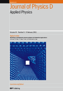Sandeep Kumar Maurya,
Ya Liu, Chandan Das, Xiaojie Xu, Rachel Woods-Robinson, Joel W Ager,
Balasubramaniam Kavaipatti*, “High figure-of-merit p-type transparent conductor, Cu alloyed
ZnS via radio frequency magnetron sputtering”, Journal of Physics D: Applied
Physics 2017, 50(50), 505107 Cited: 15(IF 2020: 3.207)
http://iopscience.iop.org/article/10.1088/1361-6463/aa95b3 -
Xiangyan
Chen, Yanrui Li, Shaohua Shen*, “Surface and
Interface Engineered Heterostructures for Solar Hydrogen Generation”, Journal of
Physics D: Applied Physics 2018, 51(16), 163002 Cited: 14(IF 2020: 3.207)
http://iopscience.iop.org/article/10.1088/1361-6463/aab318/meta - Dongxing Song, Hui Jin, Jingyu Jin, Dengwei Jing*, “Sedimentation of particles and aggregates in colloids considering both streaming and seepage”, Journal of Physics D: Applied Physics 2016, 49(42), 425303 Cited: 8(IF 2020: 3.207) http://iopscience.iop.org/article/10.1088/0022-3727/49/42/425303/meta
-
Dengwei
Jing*, Songwei Hu, Yanming Zhang, Jiaying Luo, “A
modified diffusion-limited cluster aggregation model for accurate prediction of the coagulation and
fragmentation process in nanoparticle suspension”, Journal of Physics D: Applied
Physics 2019, 52(45), 455305 Cited: 3(IF 2020: 3.207)
https://iopscience.iop.org/article/10.1088/1361-6463/ab37dc/meta -
Dengwei Jing*, Le Sun, Jingyu Jin, Madasamy Thangamuthu, Junwang Tang*, “Magneto-optical transmission of magnetic nanoparticle suspensions for different optical applications: A review”, Journal of Physics D: Applied
Physics 2021, 54, 013001 Cited: 3(IF 2020: 3.207)
https://iopscience.iop.org/article/10.1088/1361-6463/abb8fd/meta -
Dongxing
Song, Hui Jin, Dengwei Jing*, Xin Wang,
“Dynamic properties of polydisperse colloidal particles in the presence of thermal gradient
studied by a modified Brownian dynamic model”, Journal of Physics D: Applied
Physics 2018, 51(10), 105301 Cited: 3(IF 2020: 3.207)
http://iopscience.iop.org/article/10.1088/1361-6463/aaa9cb/meta -
Jingyu
Jin, Xin Wang, Songwei Hu, Jiafeng Geng,
Dengwei Jing*, “Unusual photorheological properties of TiO2
nanoparticle suspensions under UV light irradiation”, Journal of Physics D: Applied
Physics 2019, 52(27), 275301(IF 2020: 3.207)
https://iopscience.iop.org/article/10.1088/1361-6463/ab1a91/meta -
Rui Song, Bo
Bai*, Dengwei Jing, “Hydrothermal synthesis of
TiO2–yeast hybrid microspheres with controllable structures and their application for the
photocatalytic reduction of Cr (VI)”, Journal of Chemical Technology and
Biotechnology 2014, 90(5), 930-938 Cited: 9(IF 2020: 3.174)
http://onlinelibrary.wiley.com/doi/10.1002/jctb.4400/abstract -
Mohsen Izadi*, Masoud Javanahram, Seyed Mohsen Hashem Zadeh,
Dengwei Jing*,
“Hydrodynamic and heat transfer properties of magnetic fluid in porous medium considering nanoparticle shapes and magnetic field-dependent viscosity”, Chinese Journal of Chemical
Engineering 2020,
28(2), 329-339 Cited: 27(IF 2020: 3.171)
https://www.sciencedirect.com/science/article/abs/pii/S1004954119302927 -
Mohammad Hatami*, M.J.Z. Ganji, I. Sohrabiasl,
Dengwei Jing*,
“Optimization of the fuel rod's arrangement cooled by turbulent nanofluids flow in
pressurized water reactor (PWR)”, Chinese Journal of Chemical
Engineering 2017,
25(6), 722-731 Cited: 8(IF 2020: 3.171)
http://www.sciencedirect.com/science/article/pii/S1004954116306103 -
Yanming
Fu, Chung-Li Dong, Wan-Yi Lee, Jie Chen, Penghui Guo,
Liang Zhao, Shaohua Shen*, “Nb-doped Hematite Nanorods for
Efficient Solar Water Splitting: Electronic Structure Evolution versus Morphology
Alteration”, ChemNanoMat 2016, 2(7), 704-711 Cited: 27 (IF 2020: 3.154)
http://onlinelibrary.wiley.com/doi/10.1002/cnma.201600024/abstract -
Xiangjiu Guan, Samuel S. Mao, Shaohua Shen*, “Recent Progress on Photocatalytic CO2 Reduction with Earth‐abundant Single‐atom Reactive Sites”, ChemNanoMat 2021, 7(8), 873-880(IF 2020: 3.154)
https://onlinelibrary.wiley.com/doi/abs/10.1002/cnma.202100103 -
 Zhaohui
Zhou*, Jinwen Shi, Po Wu, Liejin
Guo*, “A first-principles investigation on microscopic atom distribution and
configuration-averaged properties in Cd1−xZnxS solid solutions”, ChemPhysChem
2014, 15(14), 3125-3132 Cited: 9(IF 2020: 3.102)
Zhaohui
Zhou*, Jinwen Shi, Po Wu, Liejin
Guo*, “A first-principles investigation on microscopic atom distribution and
configuration-averaged properties in Cd1−xZnxS solid solutions”, ChemPhysChem
2014, 15(14), 3125-3132 Cited: 9(IF 2020: 3.102)
http://onlinelibrary.wiley.com/doi/10.1002/cphc.201402164/abstract -
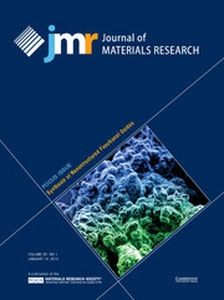Shaohua
Shen*, “Towards
Efficient Solar Water Splitting over Hematite Photoelectrodes”, Journal
of Materials Research 2014, 29(1), 29-46 Cited: 67 (IF 2020: 3.089)
http://journals.cambridge.org/action/displayAbstract?fromPage=online&aid=9150404 -
Jie Chen,
Shaohua Shen*,
Penghui Guo, Meng Wang, Jinzhan Su,
Daming Zhao, Liejin Guo*, “Plasmonic Ag@SiO2
core/shell structure modified g-C3N4 with enhanced visible
light photocatalytic activity”, Journal of Materials Research 2014, 29(1),
64-70
Cited: 37
(IF 2020: 3.089)
http://journals.cambridge.org/action/displayAbstract?fromPage=online&aid=9150352 -
Jinwen
Shi*, Penghui Guo*, Ya Liu, Jinzhan
Su, Liejin Guo, “PbO-sensitized ZnO nanorod arrays for
enhanced visible-light-driven photoelectrochemical performance”, Journal of
Materials Research 2016, 31(11), 1622-1630 Cited: 5(IF 2020: 3.089)
https://doi.org/10.1557/jmr.2016.150 -
Lijing
Ma, Jinzhan Su*, Maochang Liu, Longzhou
Zhang, Yufeng Li, Liejin Guo*, “Enhanced
photocatalytic activity over a novel CuWO4/Cu1−x Zn x
WO4/ZnWO4 hybrid material with sandwiched heterojunction”, Journal
of Materials Research 2016, 31(11), 1616-1621 Cited: 5(IF 2020: 3.089)
https://doi.org/10.1557/jmr.2016.114 -
Xiangyan
Chen, Meng Wang, Jie Chen, Shaohua
Shen*, “Electrophoretic deposition of nanostructured hematite photoanodes for
solar hydrogen generation”, Journal of Materials Research
2016, 31(11), 1547-1553 Cited: 1(IF 2020: 3.089)
http://journals.cambridge.org/action/displayAbstract?aid=10192648 -
Mohammad Hatami*, Jiandong
Zhou, Jiafeng Geng, Dengwei Jing*, “Variable
Magnetic Field (VMF) Effect on the Heat Transfer of a Half-Annulus Cavity Filled by
Fe3O4-Water Nanofluid Under Constant Heat Flux”, Journal of
Magnetism and Magnetic Materials 2018, 451, 173-182 Cited: 27(IF 2020: 2.993)
http://www.sciencedirect.com/science/article/pii/S0304885317317870 -
Mohammad Hatami*, Dengwei
Jing, Dongxing Song, M. Sheikholeslami, D.D. Ganji, “Heat transfer
and flow analysis of nanofluid flow between parallel plates in presence of variable magnetic field
using HPM”, Journal of Magnetism and Magnetic Materials 2015,
396, 275-282 Cited: 23(IF 2020: 2.993)
http://www.sciencedirect.com/science/article/pii/S0304885315304698 -
Jingyu
Jin, Dongxing Song, Jiafeng Geng, Dengwei
Jing*, “Time-dependent scattering of incident light of various wavelengths in
ferrofluids under external magnetic field”, Journal of Magnetism and Magnetic
Materials 2018, 447, 124-133 Cited: 14(IF 2020: 2.993)
http://www.sciencedirect.com/science/article/pii/S0304885317317079 -
Qingyun Chen*, Miao Zhou, Di Ma, Dengwei Jing, “Effect of Preparation Parameters on Photoactivity of BiVO4 by Hydrothermal Method”, Journal of Nanomaterials 2012, 2012, 621254 Cited: 9 (IF 2020: 2.986)
https://www.hindawi.com/journals/jnm/2012/621254/
-
Jiandong
Zhou, Xin Wang, Dongxing Song, Dengwei
Jing*, “The effects of nanoparticle aggregation on the convection heat
transfer investigated by a combined NDDM and DPM method”, Numerical Heat
Transfer, Part A: Applications 2017, 71(7), 754-768 Cited: 4 (IF 2020: 2.928)
http://www.tandfonline.com/doi/abs/10.1080/10407782.2017.1308712 -
Maryam Hasanpour, Siamak Motahari*, Dengwei Jing, Mohammad Hatami，“Numerical Modeling for the Photocatalytic Degradation of Methyl Orange from Aqueous Solution using Cellulose/Zinc Oxide Hybrid Aerogel: Comparison with Experimental Data”,
Topics in Catalysis 2021, Accepted Cited: 1(IF 2020: 2.910)
https://link.springer.com/article/10.1007/s11244-021-01451-y -
Songwei Hu, Jiafeng Geng, Dengwei Jing*，“Photothermal Effect Promoting Photocatalytic Process in Hydrogen Evolution over Graphene-Based Nanocomposite”,
Topics in Catalysis 2021, Accepted (IF 2020: 2.910)
https://link.springer.com/article/10.1007/s11244-021-01455-8 -
Maryam Hasanpour, Siamak Motahari*, Dengwei Jing, Mohammad Hatami, “Investigation of the Different Morphologies of Zinc Oxide (ZnO) in Cellulose/ZnO Hybrid Aerogel on the Photocatalytic Degradation Efficiency of Methyl Orange”,
Topics in Catalysis 2021, Accepted (IF 2020: 2.910)
https://link.springer.com/article/10.1007/s11244-021-01476-3 -
Bing Luo, Yuxin Zhao*, Dengwei
Jing*, “State-of-the-art progress in overall water splitting of carbon nitride based photocatalysts”, Frontiers in Energy 2021, Accepted(IF 2020: 2.709)
https://link.springer.com/article/10.1007/s11708-021-0737-0 -
Myeongwhun Pyeon, Meng Wang, Yakup Gönüllü, Ali Kaouk,
Sara Jäckle, Silke Christiansen, Taejin Hwang, KyoungIl Moon, Sanjay Mathur,
“Design of multi-layered TiO2–Fe2O3photoanodes for
photoelectrochemical water splitting: patterning effects on photocurrent density”, MRS
Communications 2016, 6(4), 442-448 Cited: 7
(IF 2020: 2.566)
https://doi.org/10.1557/mrc.2016.54 -
Jinzhan Su*, Shangpu Liu, Jian
Wang, Cong Liu, Yufeng Li, Dongyang Wu,
“Solution-based synthesis of carbon–hematite composite thin films for high-performance
supercapacitor applications”, MRS Communications 2016,
6(4), 367-374 Cited: 5
(IF 2020: 2.566)
https://doi.org/10.1557/mrc.2016.60 -
Amir Hassanpour, Shaohua Shen, Pablo
Bianucci*, “Sodium-doped oriented zinc oxide nanorod arrays: insights into their
aqueous growth design, crystal structure, and optical properties”, MRS
Communications 2018, 8(2), 570-576(IF 2020: 2.566)
https://doi.org/10.1557/mrc.2018.45 -
 Dongxing Song, Dengwei Jing*, Bing
Luo, Jiafeng Geng, Yuxun Ren, “Modeling of
anisotropic flow and thermodynamic properties of magnetic nanofluids induced by external magnetic
field with varied imposing directions”, Journal of Applied Physics
2015, 118(4), 045101 Cited: 32(IF 2020: 2.546)
Dongxing Song, Dengwei Jing*, Bing
Luo, Jiafeng Geng, Yuxun Ren, “Modeling of
anisotropic flow and thermodynamic properties of magnetic nanofluids induced by external magnetic
field with varied imposing directions”, Journal of Applied Physics
2015, 118(4), 045101 Cited: 32(IF 2020: 2.546)
http://scitation.aip.org/content/aip/journal/jap/118/4/10.1063/1.4927043 -
Dongxing Song, Dengwei Jing, Weigang Ma*, Xing
Zhang, “Effect of particle aggregation on thermal conductivity of nanofluids: Enhancement of
phonon MFP”, Journal of Applied Physics 2019, 125(1),
015103 Cited: 9(IF 2020: 2.546)
https://aip.scitation.org/doi/10.1063/1.5062600 -
 Aryane Tofanello, Zhidan Diao, Essossimna Djatoubai, JinZhan Su, ShaoHua Shen, Flavio L. de Souza*, Lionel Vayssieres*, “Engineering hematite/plasmonic nanoparticle interfaces for efficient photoelectrochemical water splitting”, Journal of Applied Physics 2020,128(6), 063103. Special Issue on Hot Electron Physics & Applications Cited: 4
(IF 2020: 2.546)
Aryane Tofanello, Zhidan Diao, Essossimna Djatoubai, JinZhan Su, ShaoHua Shen, Flavio L. de Souza*, Lionel Vayssieres*, “Engineering hematite/plasmonic nanoparticle interfaces for efficient photoelectrochemical water splitting”, Journal of Applied Physics 2020,128(6), 063103. Special Issue on Hot Electron Physics & Applications Cited: 4
(IF 2020: 2.546)
https://aip.scitation.org/doi/10.1063/5.0015519 -
Jiangdong
Zhou, Dengwei Jing*, “Effects of vertical magnetic field on impact
dynamics of ferrofluid droplet onto a rigid substrate”, Physical Review Fluids
2019, 4(8), 083602 Cited: 7(IF 2020: 2.537)
https://journals.aps.org/prfluids/abstract/10.1103/PhysRevFluids.4.083602 -
Xiangyan
Chen, Yanming Fu, Tingting Kong, Yi Shang, Fujun
Niu, Zhidan Diao, Shaohua Shen*, “Protected
Hematite Nanorod Arrays with Molecular Complex
Co-Catalyst for Efficient and Stable Photoelectrochemical Water
Oxidation”, European Journal of Inorganic
Chemistry 2019, 15, 2078-2085 Cited: 11(IF 2020: 2.524)
https://onlinelibrary.wiley.com/doi/full/10.1002/ejic.201801200 -
Xiaokang
Wan, Jinzhan Su, Liejin Guo*, “Enhanced
photoelectrochemical water oxidation on BiVO4 with mesoporous cobalt nitrides sheets as
oxygen evolution cocatalysts”, European Journal of Inorganic
Chemistry 2018, 22, 2557-2563 Cited: 6(IF 2020: 2.524)
https://onlinelibrary.wiley.com/doi/abs/10.1002/ejic.201800392 -
Gongguo Zhang, Yanyun Ma, Feng Liu, Xiaowei Fu, Xiaoqian Luan, Fengli Qu, Maochang Liu, Yiqun Zheng*, “Seeded Growth of Au@PdAg Alloy Core‐Shell Nano‐Dendrites with Tunable Size and Composition”, European Journal of Inorganic
Chemistry 2021, 2021(2), 156-165 Cited: 1(IF 2020: 2.524)
https://chemistry-europe.onlinelibrary.wiley.com/doi/abs/10.1002/ejic.202000776 -
Quansen Wu, Gongguo Zhang, Yanyun Ma, Mengfan Li, Feng Liu, Hongwen Huang, Maochang Liu, Yiqun Zheng*, “Ultrafast Synthesis of Wavy Gold‐Silver Alloy Nanowires with Tunable Diameters in the Range of 2‐10 nm via a Seed‐Mediated Co‐Reduction”, European Journal of Inorganic
Chemistry 2021, 2021(12), 1152-1159 Cited: 1(IF 2020: 2.524)
https://chemistry-europe.onlinelibrary.wiley.com/doi/abs/10.1002/ejic.202001137 -
Jinzhan Su*,
Tao Zhang, Lu Wang, “Engineered WO3 nanorods
for conformal growth of WO3/BiVO4 core–shell heterojunction towards efficient
photoelectrochemical water oxidation”, Journal of Materials Science: Materials in
Electronics 2017, 28(5), 4481-4491 Cited: 13(IF 2020:2.478)
http://link.springer.com/article/10.1007%2Fs10854-016-6082-0 -
Xiaobing Li, Jinzhan Su*,
Liejing Guo*, “Vertically aligned ZnO/In2S3 core/shell heterostructures with enhanced photoelectrochemical properties”, Journal of Materials Science: Materials in
Electronics 2020, (IF 2020:2.478)31(18), 15773-15784
https://link.springer.com/article/10.1007/s10854-020-04139-3 -
Fazal Kabir, Adil Murtaza, Azhar Saeed, Awais Ghani, Anwar Ali, Saleh Khan, Li Kaili, Zhao Qizhong, Yao Kang Kang, Sen Yang*, “Room temperature ferromagnetism in dilute magnetic semiconducting ZnO nanoparticles co-doped with Tb and Fe”, Journal of Materials Science: Materials in
Electronics 2021, 32(8), 10734–10749
(IF 2020:2.478) https://link.springer.com/article/10.1007/s10854-021-05731-x -
 Mohammad
Hatami*, S. Mosayebidorcheh, Dengwei Jing*,
“Two-phase nanofluid condensation and heat transfer modeling using least square method
(LSM) for industrial applications”, Heat and Mass Transfer
2017, 53(6), 2061-2072 Cited: 10(IF 2020: 2.464)
Mohammad
Hatami*, S. Mosayebidorcheh, Dengwei Jing*,
“Two-phase nanofluid condensation and heat transfer modeling using least square method
(LSM) for industrial applications”, Heat and Mass Transfer
2017, 53(6), 2061-2072 Cited: 10(IF 2020: 2.464)
http://link.springer.com/article/10.1007/s00231-016-1964-5 -
 Qingyun Chen*, Jianshan Liu, Ya Liu, Xiaohe Liu,
Yunhai Wang, “Influence of operating parameters on the bio-photoelectrochemical cell
for hydrogen and electricity production”, Environmental Progress &
Sustainable Energy 2015, 34(6), 1796-1800
Cited: 1(IF 2020: 2.431)
Qingyun Chen*, Jianshan Liu, Ya Liu, Xiaohe Liu,
Yunhai Wang, “Influence of operating parameters on the bio-photoelectrochemical cell
for hydrogen and electricity production”, Environmental Progress &
Sustainable Energy 2015, 34(6), 1796-1800
Cited: 1(IF 2020: 2.431)
http://onlinelibrary.wiley.com/wol1/doi/10.1002/ep.12156/abstract -
 Alexander Sasinska,
Trilok Singh, Shuangzhou Wang, Sanjay Mathur*, Ralph Kraehnert, “Enhanced
photocatalytic performance in atomic layer deposition grown TiO2 thin films via hydrogen
plasma treatment”, Journal of Vacuum Science & Technology A
2015, 33(1), A152 Cited: 27
(IF 2020: 2.427)
Alexander Sasinska,
Trilok Singh, Shuangzhou Wang, Sanjay Mathur*, Ralph Kraehnert, “Enhanced
photocatalytic performance in atomic layer deposition grown TiO2 thin films via hydrogen
plasma treatment”, Journal of Vacuum Science & Technology A
2015, 33(1), A152 Cited: 27
(IF 2020: 2.427)
http://dx.doi.org/10.1116/1.4904503 -
Trilok Singh,
Thomas Lehnen, Tessa Leuning, Sanjay Mathur*, “Atomic layer deposition
grown MOx thin films for solar water splitting: Prospects and challenges”, Journal
of Vacuum Science & Technology A 2015, 33(1), 0801 Cited: 21(IF 2020: 2.427)
http://dx.doi.org/10.1116/1.4904729 -
 Xin Wang, Dengwei Jing*, “Role of solid-liquid interaction energy on anomalous thermal conductivity enhancement in well-dispersed dilute nanofluids studied by equilibrium molecular dynamics”, Chemical Physics 2020, 539, 110943 Cited: 2(IF 2020: 2.348)
Xin Wang, Dengwei Jing*, “Role of solid-liquid interaction energy on anomalous thermal conductivity enhancement in well-dispersed dilute nanofluids studied by equilibrium molecular dynamics”, Chemical Physics 2020, 539, 110943 Cited: 2(IF 2020: 2.348)
https://www.sciencedirect.com/science/article/abs/pii/S0301010419313023 -
Guanjie
Liu, Zhaohui Zhou, Liejin Guo*, “Correlation
between band structures and photocatalytic activities of
CdxCuyZn1–x–yS solid solution”, Chemical Physics
Letters 2011, 509(1-3), 43-47 Cited: 39
(IF 2020: 2.328)
http://www.sciencedirect.com/science/article/pii/S0009261411005021 -
Zhaohui
Zhou, Jinwen Shi, Po Wu, Mingtao Li,
Liejin Guo*, “First-principles study on absolute band edge positions for
II–VI semiconductors at (1 1 0) surface”, Chemical Physics Letters
2011, 513(1-3), 72-76 Cited: 8(IF 2020: 2.328)
http://www.sciencedirect.com/science/article/pii/S0009261411008980 -
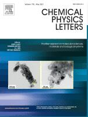Essossimna Djatoubai*, Jinzhan Su*, “First Spray Pyrolysis Thin Film Fabrication of Environment-Friendly Cu2BaSnS4 (CBTS) Nanomaterials”, Chemical Physics Letters
2021, 770, 138406 (IF 2020: 2.328)
https://www.sciencedirect.com/science/article/abs/pii/S0009261421000890 -
Yiqing Wang, Shaohua Shen*,
“Progress and Prospects of Non-metal Doped Graphitic Carbon Nitride for Improved
Photocatalytic Performances”, Acta Physico-Chimica Sinica
2020,
36(3), 1905080 Cited: 28 (IF 2020: 2.268)
http://www.whxb.pku.edu.cn/EN/10.3866/PKU.WHXB201905080 -
Xiaoyan Li, Le Sun, Jingyu Jin, Yong Ding, Dengwei Jing*, “Combined effects of surface tension and thermal conductivity on the methane hydrate formation in the presence of both nanoparticles and surfactant”, Journal of Dispersion Science and Technology 2020, 41(1), 92-101 Cited: 2(IF 2020: 2.262)
https://www.tandfonline.com/doi/full/10.1080/01932691.2018.1554490 -
 Qingyun Chen*, Fan Du, Cheng
Cheng, Xiaohe Liu, Yunhai Wang, “Enhancing
hydrogen evolution of g-C3N4 with nitrogen vacancies by ethanol thermal
treatment”, Journal of Nanoparticle Research 2018, 20(4),
95
Cited: 8(IF 2020: 2.253)
Qingyun Chen*, Fan Du, Cheng
Cheng, Xiaohe Liu, Yunhai Wang, “Enhancing
hydrogen evolution of g-C3N4 with nitrogen vacancies by ethanol thermal
treatment”, Journal of Nanoparticle Research 2018, 20(4),
95
Cited: 8(IF 2020: 2.253)
https://link.springer.com/article/10.1007/s11051-018-4190-x -
Jinwen Shi*, Xiangjiu Guan,
Zhaohui Zhou, Haipei Liu, Liejin Guo, “Eosin
Y-sensitized nanosheet-stacked hollow-sphere TiO2 for efficient photocatalytic
H2 production under visible-light irradiation”, Journal of Nanoparticle
Research 2015, 17(6), 252
Cited: 6(IF 2020: 2.253)
http://link.springer.com/article/10.1007%2Fs11051-015-3057-7 -
X. Zhang, Ying Yang, X. Zhang, Liejin
Guo*, Hongtan Liu*, “Performance Degradation of Proton Exchange Membrane Fuel Cell
Caused by an Accelerated Stress Test”, Fuel Cells 2019,
19(2), 160-168 Cited: 5 (IF 2020: 2.250)
https://onlinelibrary.wiley.com/doi/full/10.1002/fuce.201800152 -
 Ying Yang*, X. Ning, H. Tang, Liejin Guo,
Hongtan Liu, “Effects of Potential on Corrosion Behavior of Uncoated SS316L Bipolar Plate in
Simulated PEM Fuel Cell Cathode Environment”, Fuel Cells 2014,
14(6), 868-875 Cited: 2(IF 2020: 2.250)
Ying Yang*, X. Ning, H. Tang, Liejin Guo,
Hongtan Liu, “Effects of Potential on Corrosion Behavior of Uncoated SS316L Bipolar Plate in
Simulated PEM Fuel Cell Cathode Environment”, Fuel Cells 2014,
14(6), 868-875 Cited: 2(IF 2020: 2.250)
http://onlinelibrary.wiley.com/doi/10.1002/fuce.201300288/abstract -
 Trilok Singh, Shuangzhou Wang, Nabeel Aslam, Hehe Zhang, Susanne
Hoffmann-Eifert, Sanjay Mathur*, “Atomic Layer Deposition of Transparent VOx
Thin Films for Resistive Switching Applications”, Chemical Vapor Deposition
2014, 20(7-8-9), 291-297 Cited: 29
(IF 2017: 2.227)
Trilok Singh, Shuangzhou Wang, Nabeel Aslam, Hehe Zhang, Susanne
Hoffmann-Eifert, Sanjay Mathur*, “Atomic Layer Deposition of Transparent VOx
Thin Films for Resistive Switching Applications”, Chemical Vapor Deposition
2014, 20(7-8-9), 291-297 Cited: 29
(IF 2017: 2.227)
http://onlinelibrary.wiley.com/doi/10.1002/cvde.201407122/abstract -
.jpg) Fei Cao, Huashan Li, Liang Zhao*,
Liejin Guo, “Economic analysis of solar chimney power plants in
Northwest China”, Journal of Renewable and Sustainable Energy 2013, 5(2),
021406 Cited: 26 (IF 2020: 2.219)
Fei Cao, Huashan Li, Liang Zhao*,
Liejin Guo, “Economic analysis of solar chimney power plants in
Northwest China”, Journal of Renewable and Sustainable Energy 2013, 5(2),
021406 Cited: 26 (IF 2020: 2.219)
http://scitation.aip.org/content/aip/journal/jrse/5/2/10.1063/1.4798434 -
Jan E.Stehr*, Shula L.
Chen, Weimin M. Chen, Li Cai, Shaohua Shen, Irina A. Buyanova*,
“Effects of N implantation on defect formation in ZnO nanowires”, Thin
Solid Films 2019, 687, 137449 Cited: 3(IF 2020: 2.183)
https://www.sciencedirect.com/science/article/pii/S0040609019304778 -
 Longzhou
Zhang, Dengwei Jing*, Liang Zhao, Jinjia
Wei, Liejin Guo, “Concentrating PV/T
Hybrid System for Simultaneous Electricity and Usable Heat Generation: A Review”,
International Journal of Photoenergy 2012, 869753 Cited: 37
(IF 2020: 2.113)
Longzhou
Zhang, Dengwei Jing*, Liang Zhao, Jinjia
Wei, Liejin Guo, “Concentrating PV/T
Hybrid System for Simultaneous Electricity and Usable Heat Generation: A Review”,
International Journal of Photoenergy 2012, 869753 Cited: 37
(IF 2020: 2.113)
http://www.hindawi.com/journals/ijp/2012/869753/ -
Qingyun
Chen*, Di Ma, “Preparation of
Nanostructured Cu2SnS3 Photocatalysts by Solvothermal
Method”, International Journal of Photoenergy 2013,
593420 Cited: 26 (IF 2020: 2.113)
https://www.hindawi.com/journals/ijp/2013/593420/abs/ -
Rui Xie,
Jinzhan Su, Mingtao Li, Liejin Guo*,
“Structural and Photoelectrochemical Properties of Cu-Doped CdS Thin Films
Prepared by Ultrasonic Spray Pyrolysis”, International Journal of
Photoenergy 2013, 620134 Cited: 20 (IF 2020: 2.113)
http://www.hindawi.com/journals/ijp/2013/620134/
-
Shaohua
Shen*, Jiangang Jiang, Penghui
Guo, Liejin Guo, “Facile Growth of Porous Hematite Films for
Photoelectrochemical
Water Splitting”, International Journal of
Photoenergy 2013, 174982 Cited: 12 (IF 2020: 2.113)
http://www.hindawi.com/journals/ijp/2013/174982/ -
Xiaowei
Hu*, Liejin Guo*, Yechun Wang,
“In Situ Measurement of Local Hydrogen Production Rate by Bubble-Evolved
Recording”, International Journal of Photoenergy 2013,
568206 Cited: 3 (IF 2020: 2.113)
http://www.hindawi.com/journals/ijp/2013/568206/ -
Meng
Wang, Yakup Gönüllü, Myeongwhun Pyeon, Zhidan Diao, Lisa Czympiel,
Mrityunjay Singh, Shaohua Shen*, Sanjay Mathur*, “Trace Amount of Platinum
Supported on Carbonized Biomorphic Wood for Efficient Electrochemical Hydrogen Evolution in Alkaline
Condition”, ChemistrySelect 2018, 3(7), 2140-2143(IF 2020: 2.109)
http://onlinelibrary.wiley.com/doi/10.1002/slct.201702959/full -
Dengwei Jing*, Bing Luo, Huan Liu, Liejin Guo, “Determination of the real quantum yield of the heterogeneous photocatalytic H2 production reaction and insights”, Measurement Science and Technology 2021, 32(4), 045901(IF 2020: 2.046)
https://iopscience.iop.org/article/10.1088/1361-6501/abcff5 -
Amin Amiri Delouei*, Amin Emamian, Sajjad Karimnejad, Hasan Sajjadi, Dengwei Jing*, “Asymmetric Conduction in an Infinite Functionally Graded Cylinder: Two-Dimensional Exact Analytical Solution Under General Boundary Conditions”, Journal of Heat Transfer 2020, 142(4), 044505 Cited: 5(IF 2020: 2.021)
https://asmedigitalcollection.asme.org/heattransfer/article/142/4/044505/1074479/Asymmetric-Conduction-in-an-Infinite-Functionally -
Franz J. Himpsel*,
Peter L. Cook, Gema de la Torre, Juan M. Garcia-Lastra, Ruben Gonzalez-Moreno, Jinghua Guo, Robert
J. Hamers, Coleman X. Kronawitter, Philip S. Johnson, Jorge E. Ortega, David F. Pickup, Maria-Eleni
Ragoussi, Celia Rogero, Angel Rubio, Rose E. Ruther, Lionel Vayssieres,
Wanli Yang, Ioannis Zegkinoglou, “Design of solar cell materials via
soft x-ray spectroscopy”, Journal of Electron Spectroscopy and
Related Phenomena 2013, 190, 2-11. Special Issue on
Spectroscopy of Energy Materials
Cited: 19
(IF 2020: 1.957)
http://www.sciencedirect.com/science/article/pii/S0368204812001272 -
Yanlin
Chai, Xianwen Li, Jiafeng Geng, Jiaxin Pan, Yalong
Huang, Dengwei Jing*, “Mechanistic study of drag reduction
in turbulent pipeline flow over anionic polymer and surfactant mixtures”, Colloid
and Polymer Science 2019, 297(7-8), 1025-1035 Cited: 5(IF 2020: 1.931)
https://link.springer.com/article/10.1007/s00396-019-04525-2 -
 Zhaohui Zhou*, Mingtao Li, Po
Wu, Liejin Guo*, “Revisiting the Zinc-Blende/Wurtzite
Heterocrystalline Structure in CdS”, Advances in Condensed Matter Physics 2014,
361328 Cited: 6(IF 2020: 1.845)
Zhaohui Zhou*, Mingtao Li, Po
Wu, Liejin Guo*, “Revisiting the Zinc-Blende/Wurtzite
Heterocrystalline Structure in CdS”, Advances in Condensed Matter Physics 2014,
361328 Cited: 6(IF 2020: 1.845)
http://www.hindawi.com/journals/acmp/2014/361328/ -
Xiaowei Hu*, Yechun Wang, Liejin
Guo*, Zhenshan Cao, “Diffusion-Controlled Growth of Oxygen Bubble
Evolved from Nanorod-Array TiO2 Photoelectrode”, Advances in Condensed
Matter Physics 2014, 970891 Cited: 5(IF 2020: 1.845)
http://www.hindawi.com/journals/acmp/2014/970891/
-
Qingyun Chen*, Lang Liu, Yunhai Wang, “Preparation
and Characterization of Novel Fe2O3-Flaky Coated Carbon Fiber by
Electrospinning and Hydrothermal Methods”, Advances in Condensed Matter Physics
2014, 938072 (IF 2020: 1.845)
http://www.hindawi.com/journals/acmp/2014/938072/ -
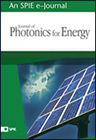Yuxun Ren,
Dengwei Jing*, “Study on particle and photonic flux distributions in a
magnetically stirred photocatalytic reactor”, Journal of Photonics for Energy
2015, 5(1), 052097 Cited: 6
(IF 2020: 1.836)
http://photonicsforenergy.spiedigitallibrary.org/article.aspx?articleid=2474115 -
Li Cai,
Wu Zhou, Feng Ren, Jie Chen, Guangxu Cai, Yichao Liu, Xiangjiu
Guan, Shaohua Shen*, “W ion implantation boosting visible-light
photoelectrochemical water splitting over ZnO nanorod arrays”, Journal of Photonics for
Energy 2017, 7(1), 016501 Cited: 6
(IF 2020: 1.836)
http://dx.doi.org/10.1117/1.JPE.7.016501 -
Qing-Yun
Chen, Kai Zhang, Jian-Shan Liu, Yun-Hai Wang, “Hydrogen
and electricity production in a light-assisted microbial photoelectrochemical cell with
CaFe2O4 photocathode”, Journal of Photonics for Energy
2017, 7(2), 026501 Cited: 3
(IF 2020: 1.836)
http://photonicsforenergy.spiedigitallibrary.org/article.aspx?articleid=2629197 -
Muhammad
Qasim, Fei Xue, Maochang Liu, Liejin
Guo*, “Phase-transition-induced one-dimensional amorphous
α-Fe2O3/β-FeOOH homojunction for efficient
photocatalytic water oxidation”, Journal of Photonics for Energy
2019, 9(2), 026501 Cited: 3(IF 2020: 1.836)
https://doi.org/10.1117/1.JPE.9.026501 -
Qingyun Chen*, Sajjad U. Haq, Zhonghang Xing, Yun-Hai Wang, “Temperature effect on green-synthesized Co3O4 nanoparticle as photocatalyst for overall water splitting”, Journal of Photonics for Energy 2020, 10(4), 042006 Cited: 2(IF 2020: 1.836)
https://doi.org/10.1117/1.JPE.10.042006 -
Penghui Guo*, Ting Han, Liejin Guo*, “Optical, surface charge state and photocatalysis study of ZnO with different exposure faces”, Journal of Photonics for Energy 2020, 10(2), 023506 Cited: 1(IF 2020: 1.836)
https://doi.org/10.1117/1.JPE.10.023506 -
Yuanchang Du, Maochang Liu, Liejin Guo*, “Numerical investigation on the optical properties of TiO2 photocatalyst suspension by light scattering model of particulate aggregates”, Journal of Photonics for Energy 2021, 11(1), 016501 Cited: 1(IF 2020: 1.836)
https://doi.org/10.1117/1.JPE.11.016501 -
Yuzhou Jiang, Liuhao Mao, Jinwen Shi*, Botong Zheng, Xiangjiu Guan*, Fei Liu, “Effects of mixed sacrificial reagents on hydrogen evolution over typical photocatalysts”, Journal of Photonics for Energy 2019, 10(2), 023503(IF 2020: 1.836)
https://doi.org/10.1117%2F1.jpe.10.023503 -
Yumeng Lu, Zhiqiang Wang, Jinzhan Su*, “Sb2S3 surface modification for improved photoelectrochemical water splitting performance of BiVO4 photoanode”, Journal of Photonics for Energy 2021, 11(1), 016502(IF 2020: 1.836)
https://doi.org/10.1117/1.JPE.11.016502 -
Xinyu Ma, Chaoqian Ai, Jiamei Cao, Jinghua Li, Yizhou Zhu, Dengwei Jing*, “Heterojunction formed by TiO2 supported on lamellar La2NiO4 perovskite for enhanced visible-light-driven photocatalytic hydrogen production”, Journal of Photonics for Energy 2021, 11(3), 034001(IF 2020: 1.836)
https://doi.org/10.1117/1.JPE.11.034001 -
Mohammad
Hatami*, Jingyu Jin, Hamid Reza Ashorynejad, Dengwei
Jing*, “Uniform Magnetic field (UMF) Effect on the Heat Transfer of a Porous
Half-Annulus Enclosure Filled by Cu-Water Nanofluid Considering Heat Generation”, Current
Nanoscience 2018, 14(3), 187-198 Cited: 5(IF 2020: 1.824)
http://www.eurekaselect.com/158541/article -
Jianan
Chen, Miao Yu, Yuhao Wang, Shaohua Shen*, Meng
Wang, Liejin Guo, “Au@SiO2 core/shell
nanoparticle-decorated TiO2 nanorod arrays for enhanced photoelectrochemical water
splitting”, Chinese Science Bulletin 2014, 59(18), 2191-2198.
Special Issue on Advanced Materials for Clean Energy Cited: 13(IF 2018: 1.789)
http://link.springer.com/article/10.1007/s11434-014-0188-7 -
Zhaohui
Zhou*, Jinwen Shi, Po Wu, Liejin
Guo*, “Configuration dependence of the properties of
Cd1–xZnxS solid solutions by first-principles
calculations”, Physica Status Solidi B-Basic solid state physics 2014, 251(3),
655-660 Cited: 7(IF 2020: 1.710)
http://onlinelibrary.wiley.com/doi/10.1002/pssb.201350180/abstract -
 Mohammad
Hatami, Mehdi Khazayinejad, Jiandong Zhou, Dengwei Jing*,
“Three-Dimensional and Two-Phase Nanofuid Flow and Heat Transfer Analysis over a
Stretching Infinite Solar Plate”, Thermal Science 2018,
22(2), 871-884 Cited: 2(IF 2020: 1.625)
Mohammad
Hatami, Mehdi Khazayinejad, Jiandong Zhou, Dengwei Jing*,
“Three-Dimensional and Two-Phase Nanofuid Flow and Heat Transfer Analysis over a
Stretching Infinite Solar Plate”, Thermal Science 2018,
22(2), 871-884 Cited: 2(IF 2020: 1.625)
https://doi.org/10.2298/TSCI160614266H -
 Dengwei
Jing, Jinwen Shi, Shaohua Shen, Liejin
Guo*, “Efficient Photocatalytic
Hydrogen Evolution Under Visible Light Over a Mesoporous Titania Crystallized by
Thermal Treatment In Hydrogen”, Science of
Advanced Materials 2013, 5(8),
982-986 Cited: 10 (IF 2020: 1.474)
Dengwei
Jing, Jinwen Shi, Shaohua Shen, Liejin
Guo*, “Efficient Photocatalytic
Hydrogen Evolution Under Visible Light Over a Mesoporous Titania Crystallized by
Thermal Treatment In Hydrogen”, Science of
Advanced Materials 2013, 5(8),
982-986 Cited: 10 (IF 2020: 1.474)
https://doi.org/10.1166/sam.2013.1546 -
Qingyun
Chen*, Xin Gu, Yunhai
Wang, Dengwei Jing, “Synthesis of Nanocrystalline Yttrium
Iron
Oxides and their Activity for Photocatalytic Hydrogen Evolution”, Science
of Advanced Materials 2013, 5(8), 1117-1122 Cited: 3(IF 2020: 1.474)
https://doi.org/10.1166/sam.2013.1562 -
Muhammad Imran Khan*, Jinzhan Su, Eric Lichtfouse, Liejin Guo*, “Higher efficiency of triethanolamine-grafted anion exchange membranes for acidic wastewater treatment”, Desalination and Water Treatment 2020,
197, 41-51 Cited: 6(IF 2020: 1.254)
https://doi.org/10.5004/dwt.2020.25966 -
Saleh Khan, Xiaohe Liu, Xi
Jiang, Qingyun Chen, “Facile Synthesis of a Porous ZnO
Nanorod Array with Enhanced Photocatalysis for Photoelectrochemical Water Splitting
Application”, Journal of Nanoscience and Nanotechnology
2020,
20(6), 3512-3518 Cited: 2(IF 2019: 1.134)
https://www.ingentaconnect.com/contentone/asp/jnn/2020/00000020/00000006/art00022 -
Wenlong Fu, Fei Xue, Maochang
Liu, Liejin Guo, “Controlled Deposition of ZnS Nanoparticles
on CuS Nanoplates for Visible-Light-Driven Photocatalytic H2
Production”, Journal of Nanoscience and Nanotechnology 2019,
19(1), 414-421(IF 2019: 1.134)
https://doi.org/10.1166/jnn.2019.15769 -
Guangtao
Duan, Bin Chen*, “Stability and accuracy analysis for viscous flow
simulation by the moving particle semi-implicit method”, Fluid Dynamics Research
2013, 45(3), 035501 Cited: 24 (IF 2020: 1.067)
http://iopscience.iop.org/article/10.1088/0169-5983/45/3/035501/meta -
W. Hussain*, H.
Malik, A. Bahadur, R. A. Hussain, M. Shoaib, Shahid Iqbal, H. Hussain, I. R. Green,
A. Badshah*, H. Li, “Synthesis and Characterization of CdS Photocatalyst with Different
Morphologies: Visible Light Activated Dyes Degradation Study”, Kinetics and
Catalysis 2018, 59(6), 710-719 Cited: 17(IF 2020: 1.000)
https://link.springer.com/article/10.1134/S0023158418060058 -
 Shaohua Shen*, Jinwen Shi, Penghui
Guo, Liejin Guo*, “Visible-light-driven photocatalytic water
splitting on nanostructured semiconducting materials”, International Journal of
Nanotechnology 2011, 8(6-7), 523-591 Cited: 87 (IF 2020: 0.367)
Shaohua Shen*, Jinwen Shi, Penghui
Guo, Liejin Guo*, “Visible-light-driven photocatalytic water
splitting on nanostructured semiconducting materials”, International Journal of
Nanotechnology 2011, 8(6-7), 523-591 Cited: 87 (IF 2020: 0.367)
http://www.inderscience.com/info/inarticle.php?artid=40192 -
Dengwei Jing, Rong Li, Maochang
Liu, Liejin
Guo*, “Copper-doped ZnO/ZnS core/shell nanotube as a novel photocatalyst
system for photocatalytic hydrogen production under visible light”, International Journal
of Nanotechnology 2011, 8(6-7), 446-457 Cited: 8
(IF 2020: 0.367)
http://www.inderscienceonline.com/doi/abs/10.1504/IJNT.2011.040187 -
Rui Xie, Jinzhan Su, Liejin
Guo*, “Ag2S/CdS nanorod-array heterojunctions for
efficient photoelectrochemical water splitting”, International Journal
of Nanotechnology 2013, 10(12), 1115-1128 Cited: 6
(IF 2020: 0.367)
http://www.inderscience.com/info/inarticle.php?artid=58569 -
Tiezhu Guo, Maosen Fu, Di Zhou, Lixia Pang, Jinzhan Su, Huixing Lin, Xiaogang Yao, Antonio Sergio Bezerra Sombra, “Flexible Ti3C2Tx/Graphene Films with Large-Sized Flakes for Supercapacitors”, Small Structures 2021, 2(7), 2100015
https://onlinelibrary.wiley.com/doi/10.1002/sstr.202100015 -
 Johannes Lützenkirchen*, Gopala Krishna Darbha*, Venkata Sai Kiran Chakravadhanula, Engelbert Redel, Atiđa Selmani, Lionel Vayssieres, “Interaction of Polyoxometalates and Nanoparticles with Collector Surfaces—Focus on the Use of Streaming Current Measurements at Flat Surfaces”, Colloids and Interfaces 2020, 4(3), 39 Cited: 1
Johannes Lützenkirchen*, Gopala Krishna Darbha*, Venkata Sai Kiran Chakravadhanula, Engelbert Redel, Atiđa Selmani, Lionel Vayssieres, “Interaction of Polyoxometalates and Nanoparticles with Collector Surfaces—Focus on the Use of Streaming Current Measurements at Flat Surfaces”, Colloids and Interfaces 2020, 4(3), 39 Cited: 1
https://doi.org/10.3390/colloids4030039 -
Xiaoping
Zhang, Chung-Li Dong, Zhidan Diao, Ying-Rui Lu, Shaohua
Shen*, “Identifying the Crystal and Electronic Structure Evolution in
Tri‐component Transition Metal Oxide Nanosheets for Efficient Electrocatalytic Oxygen
Evolution”, EcoMat
2019, 1(1), e12005 Cited: 10
https://onlinelibrary.wiley.com/doi/abs/10.1002/eom2.12005 -
Mohammad Hatami*, S. Mosayebidorcheh, Dengwei
Jing, “Peristaltic flow and heat transfer of nanofluids in a sinusoidal wall
channel: two-phase analytical study”, The Journal of Analysis
2019, 27(3), 913–929Cited: 4
https://link.springer.com/article/10.1007/s41478-018-0154-x -
Hameed K. Hamzah,
Farooq H. Ali,
Mohammad Hatami*, Dengwei Jing, “Effect of Two Baffles on MHD Natural Convection in U-Shape Superposed by Solid Nanoparticle having Different Shapes”, Journal of Applied and Computational Mechanics
2020, 6, 1200-1209. Special Issue Cited: 5
http://jacm.scu.ac.ir/article_15654.html -
Mohammad Hatami*, Lijun Sun, Dengwei Jing, H. Günerhan, Peri K. Kameswaran, “Rotating Cylinder Turbulator Effect on The Heat Transfer of a Nanofluid Flow in a Wavy Divergent Channel”, Journal of Applied and Computational Mechanics
2020, In Press Cited: 2
http://jacm.scu.ac.ir/article_15732.html -
 Francesca
Deganello*, Leonarda F. Liotta, Giuseppe Marcì, Emiliana Fabbri, Enrico
Traversa, “Strontium and Iron-Doped Barium Cobaltite
Prepared by Solution Combustion Synthesis: Exploring a Mixed-Fuel Approach for Tailored
Intermediate Temperature Solid Oxide Fuel Cell Cathode Materials”, Materials for
Renewable and Sustainable Energy 2013, 2:8 Cited: 42
Francesca
Deganello*, Leonarda F. Liotta, Giuseppe Marcì, Emiliana Fabbri, Enrico
Traversa, “Strontium and Iron-Doped Barium Cobaltite
Prepared by Solution Combustion Synthesis: Exploring a Mixed-Fuel Approach for Tailored
Intermediate Temperature Solid Oxide Fuel Cell Cathode Materials”, Materials for
Renewable and Sustainable Energy 2013, 2:8 Cited: 42
http://link.springer.com/article/10.1007%2Fs40243-013-0008-z# -
Xi Xu, Chao
Wang, Marco Fronzi*, Xuehua Liu*, Lei Bi*, X. S. Zhao, “Modification
of a first-generation solid oxide fuel cell cathode with Co3O4 nanocubes
having selectively exposed crystal planes”, Materials for Renewable and
Sustainable
Energy 2019,
8:15Cited: 18
https://link.springer.com/article/10.1007/s40243-019-0154-z -
Daniele
Pergolesi*, Marco Fronzi, Emiliana Fabbri,
Antonello Tebano, Enrico Traversa, “Growth Mechanisms
of Ceria- and Zirconia-Based Epitaxial Thin Films and Hetero-Structures Grown by
Pulsed Laser Deposition”, Materials for Renewable and Sustainable
Energy 2013, 2:6Cited: 15
https://link.springer.com/article/10.1007/s40243-012-0006-6
-
Marco
Fronzi*, Yoshitaka Tateyama, Nicola Marzari, Michael Nolan, Enrico
Traversa, “First-principles molecular dynamics simulations of proton
diffusion in cubic BaZrO3 perovskite under strain conditions”,
Materials for Renewable and Sustainable
Energy 2016,
5:14Cited: 6
https://link.springer.com/article/10.1007/s40243-016-0078-9 -
M. H. N. Assadi*, Paolo Mele, Marco Fronzi, “Suppression of magnetism and Seebeck effect in Na0.875CoO2 induced by SbCo dopants”, Materials for Renewable and Sustainable
Energy 2020,
9:5Cited: 2
https://link.springer.com/article/10.1007/s40243-020-0165-9
Book Chapters (7)
 Mingtao Li, Dongyu Liu, Lubing Li,
“First-Principles Calculations for Electrochemical Reaction Modeling: An Introduction to Methods and Applications”,
in Multiscale Modeling of Electrochemical Reactions and Processes,
edited by Yun Wang, AIP Publishing 2021, Chapter 2
Mingtao Li, Dongyu Liu, Lubing Li,
“First-Principles Calculations for Electrochemical Reaction Modeling: An Introduction to Methods and Applications”,
in Multiscale Modeling of Electrochemical Reactions and Processes,
edited by Yun Wang, AIP Publishing 2021, Chapter 2
https://aip.scitation.org/doi/full/10.1063/9780735422377_002 Maochang Liu, Guijun Chen, Boya Min,Jinwen Shi, Yubin Chen, Qibin Liu,
“Photocatalytic CO2 Reduction”,
in Solar‐to‐Chemical Conversion: Photocatalytic and Photoelectrochemcial Processes,
edited by Hongqi Sun, Wiley-VCH 2021, Chapter 9, 243-267
Maochang Liu, Guijun Chen, Boya Min,Jinwen Shi, Yubin Chen, Qibin Liu,
“Photocatalytic CO2 Reduction”,
in Solar‐to‐Chemical Conversion: Photocatalytic and Photoelectrochemcial Processes,
edited by Hongqi Sun, Wiley-VCH 2021, Chapter 9, 243-267
https://onlinelibrary.wiley.com/doi/10.1002/9783527825073.ch9- Shaohua
Shen, MengWang, Xiangyan Chen,
“Rational Heterostructure Design for Photoelectrochemical Water Splitting”,
in Multifunctional Nanocomposites for Energy and Environmental Applications,
edited by Z. Guo, Y. Chen, N. L. Lu, Wiley-VCH 2018, Chapter 16, 467-526
http://onlinelibrary.wiley.com/doi/10.1002/9783527342501.ch16/summary -
Liejin Guo*, Yunan Chen, Jiarong Yin,
“Organic Waste Gasification in Near- and Super-Critical Water”,
in Application of Hydrothermal Reactions to Biomass Conversion,edited by Fangming
Jin, Springer, Green Chemistry and Sustainable Technology 2014,
315-354Cited: 1
http://link.springer.com/chapter/10.1007/978-3-642-54458-3_13 -
Shaohua
Shen, Jie Chen,
“Semiconducting Photocatalysis for Solar Hydrogen Conversion”,
in Nanomaterials for Energy Conversion and Storage,
World Scientific 2018, Chapter 2, pp. 63-108
https://doi.org/10.1142/9781786343635_0002 -
 Enrico
Traversa*, Emiliana Fabbri,
“Proton conductors for solid oxide fuel cells (SOFCs)”,
in Functional materials for sustainable energy applications,
edited by J.A. Kilner, S. J. Skinner, S. J. C. Irvine, P. P. Edwards, Woodhead
Publishing Series in Energy 2012, 35,
515-537
Enrico
Traversa*, Emiliana Fabbri,
“Proton conductors for solid oxide fuel cells (SOFCs)”,
in Functional materials for sustainable energy applications,
edited by J.A. Kilner, S. J. Skinner, S. J. C. Irvine, P. P. Edwards, Woodhead
Publishing Series in Energy 2012, 35,
515-537
http://www.woodheadpublishing.com/en/book.aspx?bookID=234 - Mingtao
Li, Liejin Guo,
“Membranes Prepared via Spray Pyrolysis”,
in Membranes for Membrane Reactors: Preparation, Optimization and Selection ,
edited by A. Basile and F. Gallucci, John Wiley & Sons, Ltd,
Chichester, UK 2011, doi:
10.1002/9780470977569.ch18
http://onlinelibrary.wiley.com/doi/10.1002/9780470977569.ch18/summary
Proceedings (15)
-
 Rui Song, Bin Luo, Dengwei
Jing*, "Efficient photothermal catalytic hydrogen production over nonplasmonic Pt
metal supported on TiO2", Proceedings of SPIE 2016,
9935, 99350C
Rui Song, Bin Luo, Dengwei
Jing*, "Efficient photothermal catalytic hydrogen production over nonplasmonic Pt
metal supported on TiO2", Proceedings of SPIE 2016,
9935, 99350C
http://proceedings.spiedigitallibrary.org/proceeding.aspx?articleid=2578367 -
Solar Hydrogen and Nanotechnology X, Proceedings of
SPIE 2015, Volume 9560, edited by S.H. Shen
http://spie.org/Publications/Proceedings/Volume/9560?&origin_id=x4318&event_id=2087337 -
Ying Yang*, Juan Han, Xiaohui Ning, Hongsheng Tang, “Effect
of potential on the conductivity of electrodeposited Cu2O film”, Proceedings
of SPIE 2015, 9560, 95600W
http://proceedings.spiedigitallibrary.org/proceeding.aspx?articleid=2437034 -
Franz. J. Himpsel*, Peter L. Cook, Ioannis Zegkinoglou,
Idris Boukahil, Ruimin Qiao, Wanli Yang, Sri Chaitanya Das Pemmaraju, David Prendergast, Coleman.
X. Kronawitter, Md Golam Kibria, Zetian Mi, Lionel Vayssieres, “Synchrotron-based
spectroscopy for solar energy conversion”, Proceedings of
SPIE 2015, 9560, 95600G
http://proceedings.spiedigitallibrary.org/proceeding.aspx?articleid=2437033 -
 Latest
Advances in Solar Water Splitting, Materials Research Society Proceedings
2015, Volume 1776, edited by H. Wang, L. Vayssieres, D. Wang, S.
S. Mao
Latest
Advances in Solar Water Splitting, Materials Research Society Proceedings
2015, Volume 1776, edited by H. Wang, L. Vayssieres, D. Wang, S.
S. Mao
http://journals.cambridge.org/action/displayIssue?jid=OPL&volumeId=1776&iid=9673940 -
 Kai He, Liejin Guo*,
“A-Novel-CdS-Nanorod with Stacking Fault Structures: Preparation and Properties of
Visible-Light-Driven Photocatalytic Hydrogen Production from Water Splitting”, Energy
Procedia 2014, 61, 2450–2455Cited: 2
Kai He, Liejin Guo*,
“A-Novel-CdS-Nanorod with Stacking Fault Structures: Preparation and Properties of
Visible-Light-Driven Photocatalytic Hydrogen Production from Water Splitting”, Energy
Procedia 2014, 61, 2450–2455Cited: 2
http://www.sciencedirect.com/science/article/pii/S1876610214030501 -
 Po Wu, Jinwen
Shi, Jie Chen, Bin Wang, Liejin
Guo*, “Graphitic Carbon Nitride Modified by Silicon for Improved
Visible-Light-Driven Photocatalytic Hydrogen Production”, in Nanostructured
Materials and Nanotechnology VI, edited by S. Mathur, S. S. Ray and M. Halbig, John Wiley
& Sons, Hoboken, NJ, USA (2013), Chapter 13, pp. 137-148 Cited: 2
Po Wu, Jinwen
Shi, Jie Chen, Bin Wang, Liejin
Guo*, “Graphitic Carbon Nitride Modified by Silicon for Improved
Visible-Light-Driven Photocatalytic Hydrogen Production”, in Nanostructured
Materials and Nanotechnology VI, edited by S. Mathur, S. S. Ray and M. Halbig, John Wiley
& Sons, Hoboken, NJ, USA (2013), Chapter 13, pp. 137-148 Cited: 2
http://onlinelibrary.wiley.com/doi/10.1002/9781118217511.ch13/summary -
 Lionel
Vayssieres, “All-oxide
heteronanostructures for solar water splitting”, Proceedings
of the American Chemical Society, Energy & Fuels 2012, 57(2),
869-870Cited: 2
Lionel
Vayssieres, “All-oxide
heteronanostructures for solar water splitting”, Proceedings
of the American Chemical Society, Energy & Fuels 2012, 57(2),
869-870Cited: 2
http://pubs.acs.org/cgi-bin/preprints /display?div=fuel&meet=244&page=436.pdf -
Solar Hydrogen and Nanotechnology VII, Proceedings of
SPIE 2012, Volume 8469, 1-32 edited by L. Vayssieres
http://spie.org/Publications/Proceedings/Volume/8469?&origin_id=x4318&event_id=896190 -
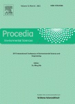Zhao
Liang*, Fan Liangliang, Jing Dengwei, Liu
Wenxu, Cao Fei, Zhu Xule, Yang Junyin,
Zhang Hailong, “Study on the Radiation Distribution
in A Fluidized Tubular Reactor for Heterogeneous Photocatalytic Hydrogen Production”, Procedia
Environmental Sciences 2012, 12(A), 285-292 Cited: 2
http://www.sciencedirect.com/science/article/pii/S1878029612002800 -
Shaohua
Shen, Coleman X. Kronawitter, Jiangang Jiang, Liejin
Guo, Samuel S. Mao, “Surface Modification of α-Fe2O3 Nanorod
Array Photoanodes for Improved Light-Induced Water Splitting”, Materials Research
Society Symposium Proceedings 2011, 1326, mrss11-1326-f08-06 Cited: 1
https://doi.org/10.1557/opl.2011.1045 -
Haipei
Liu, Dengwei Jing, Liejin Guo*, “Eosin
Y-sensitized ZnO/TiO2 for efficient visible light photocatalytic hydrogen
evolution”, Materials Research Society Symposium Proceedings 2011,
1326
https://doi.org/10.1557/opl.2011.1331 -
Ning
Zhang*, Liejin Guo*, “Enhancing Photocurrent
in Unannealed NiSx/CdS Photoelectrochemical System for Water Splitting and Hydrogen
Production”, Materials Research Society Symposium Proceedings
2011, 1326
https://doi.org/10.1557/opl.2011.1196 -
Wendong
Tang, Dengwei Jing, Liejin Guo*, “Photocatalytic
reforming of formic acid with simultaneous hydrogen production under visible light over CdS
sensitized Na2Ti2O4(OH)2”, Materials
Research Society Symposium Proceedings 2011, 1326
https://doi.org/10.1557/opl.2011.1195 -
Xianghui
Zhang, Dengwei Jing, Liejin Guo*, “Improved
Photocatalytic H2 Evolution from Inorganic/Organic Sacrificial Solution over Ni-Doped
(CuIn)0.2Zn1.6S2 Photocatalysts”, Materials Research
Society Symposium Proceedings 2011, 1326
https://doi.org/10.1557/opl.2011.1042
Editorials (10)
-
Liejin Guo, Clemens Burda, Maochang Liu, “Special Section Guest Editorial: Advanced Materials and Devices for Solar Driven Liquid Fuel and Hydrogen Production”, Journal of Photonics for Energy 2020, 10(2), 023501
https://www.spiedigitallibrary.org/journals/Journal-of-Photonics-for-Energy/volume-10/issue-02/023501/Special-Section-Guest-Editorial--Advanced-Materials-and-Devices-for/10.1117/1.JPE.10.023501.full -
Flavio Leandro de Souza*, Lionel Vayssieres*, Sanjay Mathur*, Samuel S.Mao*, “Latest Advances in Solar Fuels”, Solar Energy Materials and Solar Cells 2020, 211, 110537
https://www.sciencedirect.com/science/article/pii/S0927024820301409 -
Xuxu
Wang*, Dengwei Jing*, Meng Ni*, “Solar photocatalytic energy
conversion”, Science Bulletin 2017, 62(9), 597-598Cited: 1
http://www.sciencedirect.com/science/article/pii/S2095927317302141 -
Shaohua Shen*, Coleman Kronawitter*, George
Kiriakidis, “An overview of photocatalytic materials”, Journal of
Materiomics 2017, 3(1), 1-2
http://www.sciencedirect.com/science/article/pii/S2352847816301368 -
Shaohua Shen, Ke Sun, Haimin Zhang, Yongqi Liang,
“Advanced Catalysis and Nanostructure Design for Solar Energy Conversion”, Advances
in Condensed Matter Physics 2014, 902729Cited: 1
http://downloads.hindawi.com/journals/acmp/aip/902729.pdf -
 Dengwei Jing, Jinwen Shi, Patrick Meyrueis, Han
Zhou, “Semiconductor-Based Photocatalytic, Photoelectrochemical, and Photovoltaic
Solar-Energy Conversion”, The Scientific World Journal 2014, 695204
Cited: 1
Dengwei Jing, Jinwen Shi, Patrick Meyrueis, Han
Zhou, “Semiconductor-Based Photocatalytic, Photoelectrochemical, and Photovoltaic
Solar-Energy Conversion”, The Scientific World Journal 2014, 695204
Cited: 1
http://www.hindawi.com/journals/tswj/2014/695204/abs/ -
Lionel Vayssieres, “A decade of
the International Journal of Nanotechnology”, International
Journal of Nanotechnology 2013, 10(12), 1025-1028
http://www.inderscience.com/browse/getEditorial.php?articleID=3740 -
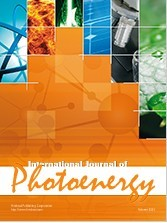
Monica Baia, Krisztina Gajda-Schrantz, Shaohua Shen, Elias Stathatos, “Progress
and Perspectives in Visible-Light-Driven Photocatalysis”, International
Journal of Photoenergy 2013, 314187, 1-3Cited: 1
http://www.hindawi.com/journals/ijp/2013/314187/ -
Liejin Guo,
“12th International Conference on Clean Energy (ICCE 2012)”, International
Journal of Hydrogen Energy 2013, 38(29),12878
http://www.sciencedirect.com/science/article/pii/S0360319913021976 -
Enrico
Traversa, Hicham Idriss, “Materials for Renewable and Sustainable
Energy Provides the Connection Between Materials, Energy, and
Sustainability”, Materials for Renewable and Sustainable
Energy 2012,1:2Cited: 3
http://link.springer.com/article/10.1007/s40243-012-0002-x
- L. Vayssieres (Keynote), “Aqueous Chemical Design & Electronic Structure Engineering of Advanced HeteroNanostructures for Efficient Solar Energy Conversion”, 2nd Pan-American Nanotechnology Conference, Symposium on Environment & Sustainability & Education, Aguas de Lindoia, SP, Brazil, March 5, 2020
- L. Vayssieres (Keynote), “Aqueous Chemical Design & Electronic Structure Engineering of Advanced HeteroNanostructures for Efficient Solar Energy Conversion”, 7th International Forum for Young Scholars, UESTC Fundamental & Frontier Sciences, Chengdu, China, December 2019
- L. Vayssieres (Opening Plenary), “A Place in the Sun for Artificial Photosynthesis”, 2019 Fall Meeting of the Korean Ceramic Society, Seoul, South Korea, November 2019
- L. Vayssieres (Plenary), “A Place in the Sun for Artificial Photosynthesis”, 7th International Workshop on Nanotechnology & Applications, Phan Thiet City, Vietnam, November 2019
- L. Vayssieres (Invited talk & Session Chairs), “On the Anisotropic Charge Separation and the Growth of Highly Ordered Heteronanostructures for Efficient Photocatalytic Water Splitting”, 236th Electrochemical Society Meeting, Symposium I04 on Photocatalysts, Photoelectrochemical Cells, and Solar Fuels 10, Atlanta, GA, USA, October 2019
- L. Vayssieres (Invited talk & Session Chair), “Sustainable Energy from Seawater”, 10th International Conference on Materials for Advanced Technology (ICMAT), Symposium CC on Novel Solution Processing for Advanced Functional Materials for Energy, Environmental and Biomedical, Singapore, June 2019
- S.H. Shen (Invited), T.T. Kong, “Structure Design of Graphitic Carbon Nitride for Photocatalytic Water Splitting”, E-MRS Spring Meeting, IUMRS-ICAM International Conference on Advanced Materials, Symposium A on Latest Advances in Solar Fuels, Acropolis, Nice, France, May 2019
- J.S. Pap (Invited), D. Lukács, M. Németh, Ł. Szyrwiel, L. Illés, B. Pécz, S.H. Shen, L. Vayssieres, “Behavior of Cu-Peptides under Water Oxidation Conditions – Molecular Electrocatalysts or Precursors to Nanostructured CuO Films?”, E-MRS Spring Meeting, IUMRS-ICAM International Conference on Advanced Materials, Symposium A on Latest Advances in Solar Fuels, Acropolis, Nice, France, May 2019
- I. Rodríguez-Gutiérrez (Invited), J.Z. Su, G. Rodríguez-Gattorno, F.L. de Souza, G. Oskam, “Infuence of the thin film physical configuration on the charge transfer and recombination dynamics of WO3-BiVO4 multilayer systems for photoelectrochemical and solar fuel applications”, E-MRS Spring Meeting, IUMRS-ICAM International Conference on Advanced Materials, Symposium A on Latest Advances in Solar Fuels, Acropolis, Nice, France, May 2019
- L. Vayssieres (Plenary Lecture & Session Chair), “Low-cost Aqueous Design of Earth-abundant Nanostructures for Sustainable Energy from Seawater”, International Symposium on Nanoscience & Nanotechnology in the Environment, Xi'an, China, April 2019
- L. Vayssieres (Invited), “A Place in the Sun for Artificial Photosynthesis”, 257th ACS National Meeting, Symposium on Photocatalytic and Electrochemical Processes: Fundamentals and Applications in Green Energy and Environmental Remediation”, Orlando, FL, USA, March-April 2019
- M. Fronzi, Hussein Assadi, Dorian Hanaor, “Theoretical insights into the hydrophobicity of low index CeO2 surfaces”, American Physical Society (APS) March Meeting, Boston, MA, USA, March 2019
- L. Vayssieres (Invited), “A Place in the Sun for Artificial Photosynthesis”, SPIE Photonics West, Symposium on Synthesis & Photonics of Nanoscale Materials XVI, Session on Synthesis & Photonics of Nanomaterials, San Francisco, CA, USA, February 2019
- M. Fronzi (Invited), “Reactivity of metal oxide nanocluster modified rutile and anatase TiO2: Oxygen vacancy formation and CO2 interaction”, EMN Meeting on Titanium- Oxides, Auckland, New Zealand, December 2018
- L. Vayssieres (Invited), “A Place in the Sun for Artificial Photosynthesis”, International Symposium on Solar Energy Conversion, Nankai University, Tianjin, China, October 2018
- L. Vayssieres (Keynote & Session Chairs), “Clean & Sustainable Energy from Photocatalytic Seawater Splitting”, 2018 AiMES ECS - SMEQ Joint Conference, Cancun, Mexico, October 2018
- I. Rodríguez-Gutiérrez, R. García-Rodríguez, A. Vega-Poot, J.Z. Su, G. Rodríguez-Gattorno, L. Vayssieres, G. Oskam, “Analysis of the Charge Transfer Dynamics in Oxide Based Photoelectrodes through Small Perturbations Techniques”, America International Meeting on Electrochemistry and Solid State Science (AiMES 2018), Cancun, Mexico, October 2018
- L. Vayssieres (Keynote), “A Place in the Sun for Artificial Photosynthesis?”, Frontiers of Photonics, 31st Annual Conference of the IEEE Photonics Society (IPC-2018), Reston, VA, USA, September 2018
- L. Vayssieres (Keynote), “Clean Sustainable Energy (& More) from Seawater”, Symposium on Photo-Electrochemical Energy Conversion in Honor of Prof. Jan Augustynski, 69th Annual Meeting of the International Society of Electrochemistry, Bologna, Italy, September 2018
- S.H. Shen (Invited), “Structure Engineering of Graphitic Carbon Nitride for Efficient Photocatalytic Water Splitting”, Taishan Forum for Advanced Interdisciplinary Research (FAIR), Jinan, China, September 2018
- S.H. Shen, D.M. Zhao (Invited), “Structure Engineering of Graphitic Carbon Nitride for Efficient Photocatalytic Water Splitting”, International Workshop on Water Splitting: Challenges and Opportunity, Xi'an, China, August 2018
- S.H. Shen (Invited), “Surface Engineering of α-Fe2O3 and p-Si for Efficient Solar Water Splitting”, 22nd International Conference on Photochemical Conversion and Storage of Solar Energy, Hefei, China, July-August 2018
- S.H. Shen, D.M. Zhao (Invited), “Structure Engineering of Graphitic Carbon Nitride for Efficient Photocatalytic Water Splitting”, International Conference on Energy and Environmental Materials (ICEEM), Hefei, China, July-August 2018
- I. Rodríguez-Gutiérrez, R. García-Rodríguez, A. Vega-Poot, J.Z. Su, G. Rodríguez-Gattorno, L. Vayssieres, G. Oskam, “Understanding the Charge Carrier Dynamics in Oxide Based Photoelectrodes”, 22nd International Conference on Photochemical conversion and Storage of Solar Energy (IPS-22), Hefei, China, July 2018
- M. Fronzi, S. Tawfik, C. Stampfl, M.J. Ford, “Magnetic character of stoichiometric and reduced Co9S8”, Australian Symposium on Computationally Enhanced Materials Design, Sydney, Australia, July 2018
- J.W. Shi, Y.Z. Zhang, L.J. Guo(Invited), “Hydrothermal growth of CO3(OH)2(HPO4)2 nano-needles on LaTiO2N for enhanced photocatalytic O2 evolution under visible-light irradiation”, 12th International Conference on Ceramic Materials and Components for Energy and Environmental Applications (CMCEE 2018), Singapore, July 2018
- Y.B. Chen, Y. Liu (Invited), “Switchable synthesis of copper-based chalcogenide films for photoelectrochemical water splitting”, 12th International Conference on Ceramic Materials and Components for Energy and Environmental Applications (CMCEE 2018), Singapore, July 2018
- L. Vayssieres (Keynote), “On Seawater & Clean Energy Generation”, 12th International Conference on Ceramic Materials and Components for Energy and Environmental Applications (CMCEE 2018), Symposium T4S12 on Advanced Ceramics Materials for Photonics, Energy & Health, Singapore, July 2018
- L. Vayssieres (Keynote), “Latest Advances in Low-cost Solar Fuel Generation”, 12th International Conference on Ceramic Materials and Components for Energy and Environmental Applications (CMCEE 2018), Symposium T1S3 on Emerging Materials & Techonologies for Solar Cells & Solar Fuels Technologies, Singapore, July 2018
- L. Vayssieres (Keynote), “Low-cost Fabrication of Advanced Heteronanostructures for Efficient Solar Energy Conversion”, 12th International Conference on Ceramic Materials and Components for Energy and Environmental Applications (CMCEE 2018), Symposium T1S5 on Innovative Processing of Nanostructured & Hybrid Functional Materials for Energy & Sustaibability, Singapore, July 2018
- L. Vayssieres (Invited), “Sustainable Clean Energy from Seawater”, 12th International Conference on Ceramic Materials and Components for Energy and Environmental Applications (CMCEE 2018), Symposium T3S1 on Photocatalysts for Energy & Environmental Applications, Singapore, July 2018
- L. Vayssieres (Keynote), “Clean Energy from Seawater”, 26th Annual International Conference on Composites/Nano Engineering (ICCE-26), Paris, France, July 2018
- M. Fronzi, “Native-defects-related magnetic character of cobalt sulphide”, International Workshop on Materials Theory and Computation, Xi’an Jiaotong University, Xi'an, China, June-July 2018
- S.H. Shen (Invited talk & International Advisory Board), “Engineering Hematite and Silicon for Efficient Photoelectrochemical Water Splitting, Symposium CE: Frontiers in Nanostructured, Nanocomposite and Hybrid Functional Materials for Energy and Sustainability”, 14th International Ceramics Congress (CIMTEC 2018), Perugia, Italy, June 2018
- L. Vayssieres (Invited talk & Session Chair), “Latest Advances in Design, Performance, & Stability of Solar Seawater Splitting Materials”, 233rd Electrochemical Society Meeting, Seattle, WA, USA, May 2018
- M. Fronzi, J Bishop, M Toth, M Ford, “Controlling Surface Patterning of Diamond: The Origin of Anisotropy with Electron Beam Induced Etching”, American Physical Society Meeting, Los Angeles, California, USA, March 2018
- M. Fronzi, O Mokhtari, Y Wang, H Nishikawa, “Long-term reliability of Pb-free solder joint between copper interconnect and silicon in photovoltaic solar cell”, American Physical Society Meeting, Los Angeles, California, USA, March 2018
- L. Vayssieres (Invited), “On The Stability & Performance of Low-Cost Devices for Solar Hydrogen Generation”, 3rd Fusion Conference on Molecules and Materials for Artificial Photosynthesis, Cancun, Mexico, March 2018
- M.C. Liu, L.J. Guo(Keynote), “On Controlling of the Mass and Energy Flow for Efficient Photocatalytic Solar H2 Production”, 2nd International Summit on Energy Science and Technology, Xi’an, China, January, 2018
- L. Vayssieres (Plenary), “On Solar Water Splitting”, 8th IEEE International Nanoelectronics Conference (INEC2018), Kuala Lumpur, Malaysia, January 2018
- Y.K. Wei, Z.Q. Wang, J. Wang, J.Z. Su, L.J. Guo, “BiVO4-rGO-NiFe Nanoarrays Photoanode: Oriented Hierarchical Growth and Application for Photoelectrochemical Water Splitting”, 15th International Conference on Clean Energy (ICCE 2017), Xi'an, China, December 2017
- J. Wang, M.L. Wang, T. Zhang, J.Z, Su, L.J. Guo, “Facile Synthesis of Ultrafine Hematite Nanowire Arrays for Efficient Charge Separation”, 15th International Conference on Clean Energy (ICCE 2017), Xi'an, China, December 2017
- I.R. Gutiérrez, R.G. Rodriguez, M.R. Perez, A.V. Poot, G.R. Gattorno, G. Oskam, “Charge transfer dynamics at inkjet printed p-CuBi2O4 photocathodes for photoelectrochemical water splitting”, 15th International Conference on Clean Energy (ICCE 2017), Xi'an, China, December 2017
- W.L. Fu, F. Xue, M.C. Liu, L.J. Guo, “Kilogram-scale production of highly active chalcogenide photocatalyst for solar hydrogen generation”, 15th International Conference on Clean Energy (ICCE 2017), Xi'an, China, December 2017
- Y.P. Yang, X. Zhang, L.J. Guo, H.T. Liu, “Local Degradation Phenomena in Proton Exchange Membrane Fuel Cells with Dead-ended Anode”, 15th International Conference on Clean Energy (ICCE 2017), Xi'an, China, December 2017
- Z.D. Diao, D.M. Zhao, S.H. Shen, “Polycrystalline Titanium Dioxide Nanofibers for Superior Sodium Storage”, 15th International Conference on Clean Energy (ICCE 2017), Xi'an, China, December 2017
- F. Xue, W.L. Fu, L.J. Guo, “NiS2 Nanodots Decorated g-C3N4 Nanosheets: A High-efficiency, Low-cost, and Long-term Photocatalyst for Improving Hydrogen Evolution”, 15th International Conference on Clean Energy (ICCE 2017), Xi'an, China, December 2017
- M.T. Li (Keynote), D.Y. Liu, Y.C. Pu, “Photo/Electrocatalysis: Mechanistic Insight and Catalyst Design from Density Functional Theory”, 15th International Conference on Clean Energy (ICCE 2017), Xi'an, China, December 2017
- J.Z. Su (Keynote), J.L. Zhou, C. Liu, “Enhanced Charge Separation in BiVO4 Electrodes by Zn Surface Modification and Back Contact Cu Gradient Profile Doping for Photoelectrochemical Water Splitting”, 15th International Conference on Clean Energy (ICCE 2017), Xi'an, China, December 2017
- Y.B. Chen (Keynote), Z.X. Qin, M.L. Wang, R. Li, “Rational Design of Noble-metal-free Catalysts for Hydrogen Evolution Reaction”, 15th International Conference on Clean Energy (ICCE 2017), Xi'an, China, December 2017
- M.C. Liu (Keynote), “Controlled Photocatalytic Nanocrystal for Tunable Solar H2 Production”, 15th International Conference on Clean Energy (ICCE 2017), Xi'an, China, December 2017
- M. Fronzi (Keynote), “Origin of Topological Anisotropic Patterns in Gas Mediated Electron Beam Induced Etching”, 15th International Conference on Clean Energy (ICCE 2017), Xi'an, China, December 2017
- L. Vayssieres (Plenary), “On Photocatalytic Solar Hydrogen Generation”, 15th International Conference on Clean Energy (ICCE 2017), Xi'an, China, December 2017
- L. Vayssieres (Invited), “Latest advances & Challenges in Solar Water Splitting”, 1st Frontiers in Electroceramics Workshop, Massachusetts Institute of Technology, Cambridge, MA, USA, December 2017
- L. Vayssieres (Invited), “Design, performance and stability of low-cost materials for photocatalytic solar water splitting”, 2017 MRS Fall Meeting, Symposium ES2: On the Way to Sustainable Solar Fuels—New Concepts, Materials and System Integration, Boston, MA, USA, November 2017
- L. Vayssieres (Invited), “Clean Energy from Seawater”, International Summit of the MRS University Chapters on Sustainability & Nanotechnology, Boston, MA, USA, November 2017
- S.H. Shen (Invited), Y.M. Fu, W. Zhou, “Engineering Surface Structures and Energetics of α-Fe2O3 and Si for Photoelectrochemical Water Splitting”, 18th International Conference of the Union of Materials Research Societies in Asia (IUMRS-ICA 2017), Taipei, Taiwan, China, November 2017
- L. Vayssieres (Invited), “Latest Advances in Water Splitting”, 18th International Union of Materials Research Societies International Conference in Asia (IUMRS-ICA 2017), Symposium B2. Photocatalysis and Photosynthesis, Taipei, Taiwan, China, November 2017
- L. Vayssieres (Invited talk & Session chair), “On the low cost design, performance and stability of advanced electrodes for photocatalytic (sea)water splitting”, 232nd Electrochemical Society Meeting, Symposium on Photocatalysts, Photoelectrochemical Cells, & Solar Fuels 8, National Harbor, MD, USA, October 2017
- S.H. Shen (Invited), “Surface Modified Hematite and Silicon for Photoelectrochemical Water Splitting”, International Conference on Functional Nanomaterials and Nanodevices, Budapest, Hungary, September 2017
- M.C. Liu (Plenary), “Solar Hydrogen Production via Photocatalysis: From Microscale Semiconductor Particle to Pilot Reaction System”, UK-China International Particle Technology Forum VI 2017, Yangzhou, China, September 2017
- M.C. Liu (Invited), “Complex Photocatalysis via Simple Twinned Nanostructure”, 2017 China-UK Workshop on Efficient Energy Utilisation, Nanjing, China, August 2017
- L. Vayssieres (Invited), “On low-cost photocatalytic water splitting”, XXVI International Materials Research Congress, Symposium on Materials and Technologies for Energy Conversion, Saving and Storage (MATECSS), Cancun, Mexico, August 2017
- L. Vayssieres (Invited), “On the Design, Performance & Stability of Advanced Materials for Photocatalytic Solar Water Splitting”, XXVI International Materials Research Congress, 3rd Mexico-China Workshop on Nano Materials/Science/Technology: Renewable Energy and Environment Remediation (NANOMXCN), Cancun, Mexico, August 2017
- A. Hassanpour, L. Vayssieres, P. Bianucci, “Optical and Structural Properties of Arrays of Mg-doped ZnO Nanorods Prepared by a Low Temperature Hydrothermal Method”, 18th Canadian Semiconductor Science & Technology Conference, Waterloo, ON, Canada, August 2017
- S.H. Shen (Invited), “Surface Modified Hematite Nanorods for Photoelectrochemical Water Splitting”, 7th International Multidisciplinary Conference on Optofluidics, Singapore, July 2017
- S.H. Shen (Invited), “Surface Engineering of α-Fe2O3 and p-Si for Efficient Solar Water Splitting”, 33rd International conference of the Society for Environmental Geochemistry and Health (SEGH 2017), Guangzhou, China, July 2017
- M.C. Liu (Invited talk & Session chair), “Nanotwin: Simple Structure for Complex Photocatalysis”, 8th International Conference on Hydrogen Production (ICH2P 2017), Brisbane, Australia, July 2017
- S.H. Shen (Invited), “Surface Engineered Hematite Nanorods for Efficient Photoelectrochemical Water Splitting”, 8th International Conference on Hydrogen Production (ICH2P 2017), Brisbane, Australia, July 2017
- J.W. Shi, Y.Z. Zhang, L.J. Guo, “LaTiO2N-LaCrO3: Novel continuous solid solutions towards enhanced photocatalytic H2 evolution under visible-light irradiation”, 8th International Conference on Hydrogen Production (ICH2P 2017), Brisbane, Australia, July 2017
- M.C. Liu, “Seed-mediated Growth: A Versital Method for Understanding Crystal Habits”, 9th World Congress on Materials Science and Engineering, Rome, Italy, June 2017
- A. Hassanpour, L. Vayssieres, P. Bianucci, “Optical and Structural Properties of Arrays of Ni-doped ZnO Nanorods Prepared by a Low Temperature Hydrothermal Method”, 12th International Conference On Optical Probes of Organic and Hybrid Semiconductors, Quebec city, QC, Canada, June 2017
- L. Vayssieres (Invited), “On Artificial Photosynthesis for Solar Water Splitting and Hydrogen Generation”, IEEE Summer School on Nanotechnology, Montreal, Quebec, Canada, June 2017
- L. Vayssieres (Invited), “Overview & Latest Advances in Aqueous Chemical Growth of Advanced Hetero-Nanostructures”, 9th International Conference on Materials for Advanced Technology (ICMAT), Symposium L on Novel Solution Processes for Advanced Functional Materials, Suntec, Singapore, June 2017
- L. Vayssieres (Invited), “On the Design, Performance & Stability of Advanced Heteronanostuctures for Solar Water Splitting”, 9th International Conference on Materials for Advanced Technology (ICMAT), Symposium F on Advanced Inorganic Materials and Thin Film Technology for Solar Energy Harvesting, Suntec, Singapore, June 2017
- S.H. Shen (Invited), “Engineering Surface Structures and Energetics of α-Fe2O3 and p-Si for Efficient Solar Water Splitting, Processes at the Semiconductor Solution Interface 7”, 231st Meeting of The Electrochemical Society, New Orleans, LA, USA, May-June 2017
- A. Hassanpour, L. Vayssieres, P. Bianucci, “Optical and Structural Properties of Arrays of Mn-doped ZnO Nanorods Prepared by a Low Temperature Hydrothermal Method”, 2017 CAP-Canadian Association of Physicists Congress, Kingston, ON, Canada, May-June 2017
- L.Vayssieres (Invited talk & Session chair), “On the design of advanced materials for efficient and cost-effective solar (sea)water splitting”, 2017 Emerging Technologies Conference, Warsaw, Poland, May 2017
- L. Vayssieres (Invited), “On the Effects of Design, Interfacial Electronic Structure & Dimensions on the Performance & Stability of Photoelectrodes for Solar Water Splitting”, 12th Pacific Rim Conference on Ceramic and Glass Technology including Glass & Optical Materials Division Meeting (PacRim12), Symposium 10 on Multifunctional Nanomaterials and Their Heterostructures for Energy and Sensing Devices, Kona, HI, USA, May 2017
- M. Chowdhury, X.J. Guan, A. Pant, X.H. Kong, M. G. Kibria, H. Guo, F. Himpsel, L. Vayssieres, Z. Mi, “High Efficiency and Highly Stable Photocatalytic Overall Water Splitting on III-Nitride Nanowire Arrays”, 2017 Spring MRS Meeting, Phoenix, AZ, USA, April 2017
- L. Vayssieres (Invited talk & Session chair), “Dimensional, Interfacial, and Confinement Effects on the Performance and Stability of Low-Cost Photoelectrodes for Solar Water Splitting”, 21st Topical Meeting of the International Society of Electrochemistry, Szeged, Hungary, April 2017
- L.Vayssieres (Invited talk & Session chair), “Confinement effects in large bandgap oxide semiconductors”, International Conference on Energy Materials Nanotechnology (EMN-East), Siem Reap, Cambodia, March 2017
- S.H. Shen (Invited talk), “Surface and Interface Engineered Heterostructures for Solar Hydrogen Generation”, Symposium 1- Materials for Solar Fuel Production and Applications in Materials Challenges, Materials Challenges in Alternative and Renewable Energy 2017 (MCARE 2017), Jeju, South Korea, February 2017
- J.B. Huang, L. Wang, C. Zhu, H. Jin, “Catalytic Gasification of Guaiacol in Supercritical Water for Hydrogen Production”, 8th International Symposium on Multiphase Flow, Heat & Mass Transfer and Energy Conversion (ISMF2016), Chengdu, China, December 2016
- H.J. Jia, Y.P. Yang, H.T. Liu, L.J. Guo*,“Systematic study on the effects of operation parameters on the performance of open cathode PEM fuel cells”, 8th International Symposium on Multiphase Flow, Heat & Mass Transfer and Energy Conversion (ISMF2016), Chengdu, China, December 2016
- J. Hu, X.Q. Wang, H.H. Yang, L.J. Guo*, “Strong pH Dependence of Hydrogen Production with Glucose in Rhodobacter sphaeroides”, 8th International Symposium on Multiphase Flow, Heat & Mass Transfer and Energy Conversion (ISMF2016), Chengdu, China, December 2016
- S.Y. Ye, L.J. Guo*, Q. Xu, Y.S. Chen, Q.Y. Chen, “Investigation on Pressure Wave Induced by Supersonic Steam Jet Condensation in Water Flow in a Vertical Pipe”, 8th International Symposium on Multiphase Flow, Heat & Mass Transfer and Energy Conversion (ISMF2016), Chengdu, China, December 2016
- R.Y. Wang, H. Jin, L.J. Guo*, “Thermodynamic analysis of supercritical water gasification and dechlorination of o-chlorophenol”, 8th International Symposium on Multiphase Flow, Heat & Mass Transfer and Energy Conversion (ISMF2016), Chengdu, China, December 2016
- W. Zhou, L.Y. He, S.H. Shen*, “n-WO3/p-Si junctional photocathodes for efficient solar hydrogen generation”, 8th International Symposium on Multiphase Flow, Heat & Mass Transfer and Energy Conversion (ISMF2016), Chengdu, China, December 2016
- W.L. Fu, M.C. Liu, F. Xue, L.J. Guo*, “Manipulating the Heterostructures of a Visible-Light-Driven Composite Photocatalyst by Controlling the Mass Transportation during Synthesis”, 8th International Symposium on Multiphase Flow, Heat & Mass Transfer and Energy Conversion (ISMF2016), Chengdu, China, December 2016
- S.H. Shen, “Noble-metal Free Artificial Photosynthesis Systems for Solar Hydrogen Generation”, 8th International Symposium on Multiphase Flow, Heat & Mass Transfer and Energy Conversion (ISMF2016), Chengdu, China, December 2016
- J.F. Geng, Y.C. Wang, X.W. Hu, D.W. Jing*, “Experimental and Theoretical Analysis of Particle Transient Transport Phenomenon in Flowing Suspension”, 8th International Symposium on Multiphase Flow, Heat & Mass Transfer and Energy Conversion (ISMF2016), Chengdu, China, December 2016
- H. Jin, L.J. Guo, Z.Q. Wu, X. Zhang, J. Chen (Keynote), “Novel ABO3-based Materials: Tailored Components and Structures towards Photocatalytic H2 Evolution under Visible-light Irradiation”, 8th International Symposium on Multiphase Flow, Heat & Mass Transfer and Energy Conversion (ISMF2016), Chengdu, China, December 2016
- J.W. Shi (Keynote), “Novel ABO3-based Materials: Tailored Components and Structures towards Photocatalytic H2 Evolution under Visible-light Irradiation”, 8th International Symposium on Multiphase Flow, Heat & Mass Transfer and Energy Conversion (ISMF2016), Chengdu, China, December 2016
- M.C. Liu (Keynote & Session chair), “Controlling Mass Transportation in Synthesizing Photocatalytic Nanocrystals for Solar H2 Production”, 8th International Symposium on Multiphase Flow, Heat & Mass Transfer and Energy Conversion (ISMF2016), Chengdu, China, December 2016
- M. Fronzi (Keynote), “Nano cluster modified TiO2 anatase and rutile surfaces for photo-catalytic processes”, 8th International Symposium on Multiphase Flow, Heat & Mass Transfer and Energy Conversion (ISMF2016), Chengdu, China, December 2016
- L. Vayssieres (Plenary), “Low Cost HeteroNanostructures for Solar Hydrogen Generation”, 8th International Symposium on Multiphase Flow, Heat & Mass Transfer and Energy Conversion (ISMF2016), Chengdu, China, December 2016
- L. Vayssieres (Keynote), “Low Cost HeteroNanostructures for Solar Water Splitting”, 2nd Mexico-China Workshop on Nano: Materials / Science / Technology (NANOMXCN-2016), Hong Kong, China, December 2016
- L. Vayssieres (Invited), “Latest advances in low cost semiconductor heteronanostructures for water splitting”, 72nd American Chemical Society (ACS) Southwest Regional Meeting, Symposium on Applications of Photonics in Energy and the Life Sciences, Galveston, TX, USA, November 2016
- L. Vayssieres (Plenary), “Low-cost HeteroNanostructures for Solar Water Splitting”, 3rd International Workshop on Advanced Materials and Nanotechnology, Hanoi, Vietnam, November 2016
- F.J. Niu, Y. Yu, S.H. Shen*, L.J. Guo, “A Novel Hybrid Artificial Photosynthesis System with MoS2 Embedded Carbon Nanofibers as Electron Relay and Hydrogen Evolution Catalyst”, 17th IUMRS International Conference in Asia (IUMRS-ICA2016), Qingdao, China, October 2016
- L. Vayssieres (Invited), “Latest development in design strategies for efficient solar water splitting photoelectrodes”, 230th Electrochemical Society Meeting, Symposium Photocatalysts, Photoelectrochemical Cells, and Solar Fuels 7, PRiME 2016, Honolulu, HI, USA, October 2016
- R. Song, B. Luo, D.W. Jing, “Efficient Photothermal Catalytic Hydrogen Production over Nonplasmonic Pt Metal Supported on TiO2”, Solar Hydrogen and Nanotechnology XI, SPIE Optics and Photonics, San Diego, USA, August 2016
- Y. Liu, Y.H. Guo, J. Ager, M.T. Li, “Fabrication of CoOx Layer on Porous BiVO4 Film for Water Splitting”, Solar Hydrogen and Nanotechnology XI, SPIE Optics and Photonics, San Diego, USA, August 2016
- Y. Liu, S.H. Shen (Invited), “Heterostructures for Photoelectrochemical and Photocatalytic Hydrogen Generation”, Solar Hydrogen and Nanotechnology XI, SPIE Optics and Photonics, San Diego, USA, August 2016
- L. Vayssieres (Invited), “On the design of new low cost photocatalysts for efficient solar water oxidation”, 252nd ACS National Meeting, Symposium on Solar Fuels: Power to the People, Philadelphia, PA, August 2016
- S.H. Shen (Invited), “Heterostructures for Solar Hydrogen Generation”, 3rd International Conference on Electrochemical Energy Science and Technology (EEST2016), Kunming, China, August 2016
- L. Vayssieres (Invited), “On confinement, surface & dimensionality effects in oxide semiconductors for solar water oxidation”, XXV International Materials Research Congress, Symposium on Advances on Solar Fuels/Artificial Photosynthesis: Materials and Devices, Cancun, Mexico, August 2016
- L. Vayssieres (Invited), “Low cost advanced materials design strategies for efficient solar energy conversion”, XXV International Materials Research Congress, Symposium on Materials and Technologies for Energy Conversion, Saving and Storage (MATECSS), Cancun, Mexico, August 2016
- D.M. Zhao, S.H. Shen*, L.J. Guo, “ITO Electronic Pump Boosting Photocatalytic Hydrogen Evolution over Graphitic Carbon Nitride”, 2nd International Conference on Nanoenergy and Nanosystems 2016 (NENS2016), Beijing, China, July 2016
- S.H. Shen (Invited), “Engineering One-Dimensional Hematite Photoanodes for Solar Water Splitting”, 2nd International Conference on Nanoenergy and Nanosystems 2016 (NENS2016), Beijing, China, July 2016
- M.T. Li (Invited), “Photo/Electrocatalysis: Mechanistic Insight and Catalyst Design from Density Functional Theory”, Global Forum on Advanced Materials and Technologies for Sustainable Development, Symposium G2 on Functional Nanomaterials for Sustainable Energy Technologies, Toronto, Canada, June 2016
- X.J. Guan, F. Chowdhury, L. Vayssieres, L.J. Guo, Z. Mi, “Photocatalytic Seawater Splitting on Metal Nitride Nanowires”, Global Forum on Advanced Materials and Technologies for Sustainable Development, Symposium G2 on Functional Nanomaterials for Sustainable Energy Technologies, Toronto, Canada, June 2016
- Y.B. Chen (Invited), Z.X. Qin, X.J. Guan, M.C. Liu, “One-pot Synthesis of Heterostructured Photocatalysts for Improved Solar-to-Hydrogen Conversion”, Global Forum on Advanced Materials and Technologies for Sustainable Development, Symposium G2 on Functional Nanomaterials for Sustainable Energy Technologies, Toronto, Canada, June 2016
- M.C. Liu, X.X. Wang, L. Zhao,“Shape-Controlled Metal/Semiconductor Nanocrystals in a Well-Controlled Kinetic Process and Their Application for Electrocatalysis or Photocatalysis”, Global Forum on Advanced Materials and Technologies for Sustainable Development, Symposium G2 on Functional Nanomaterials for Sustainable Energy Technologies, Toronto, Canada, June 2016
- M.C. Liu, “Crystal-facets Dependent Solar Hydrogen Generation from Kinetic Growth Controlled Nanoparticles”, 2nd International Symposium on Energy Conversion and Storage, Xiamen, China, June 2016
- L. Vayssieres (Invited talk & Session chair), “New Design Strategy for Advanced Photocatalysts”, Global Forum on Advanced Materials and Technologies for Sustainable Development, Symposium G2 on Functional Nanomaterials for Sustainable Energy Technologies, Toronto, Canada, June 2016
- L. Vayssieres (Invited), “On the design of advanced photocatalysts for solar water splitting”, Emerging Technologies 2016 Conference, Session on Optoelectronics & Photonics, Montreal, QC, Canada, May 2016
- S.H. Shen (Invited), “1D metal oxides for solar water splitting”, Workshop on Advanced Energy Materials & X-ray Spectroscopy, Tamkang University, Taipei, May 2016
- L. Vayssieres (Invited), “Interfacial and confinement effects in oxide semiconductors”, Workshop on Advanced Energy Materials & X-ray Spectroscopy, Tamkang University, Taipei, May 2016
- L.J. Guo (Invited), “Solar hydrogen: Harvesting light and heat from Sun”, Workshop on Advanced Energy Materials & X-ray Spectroscopy, Tamkang University, Taipei, May 2016
- L. Vayssieres (Invited), “Morphological, dimensional, and interfacial effects on oxide semiconductor efficiency for solar water splitting”, American Ceramic Society Materials Challenges in Alternative & Renewable Energy 2016 Conference, Clearwater, FL, April 2016
- L.Vayssieres (Invited talk & Session chair), “Latest Advances in Solar Water Splitting”, 2016 Spring MRS Meeting, Symposium EE2: Advancements in Solar Fuels Generation: Materials, Devices and Systems, Phoenix, AZ, March 2016
- L. Vayssieres (Invited talk & Session chair), “Latest Advances in Low Cost Solar Water Splitting”, 2nd Fusion Conference on Molecules and Materials for Artificial Photosynthesis, Cancun, Mexico, February 2016
- S.H. Shen (Invited), “Nanodesigned Materials for Photoelectrochemical and Photocatalytic Solar Hydrogen Generation”, 2nd Fusion Conference on Molecules and Materials for Artificial Photosynthesis Conference, Cancun, Mexico, February 2016
- S.H. Shen (Invited), “One-dimensional Metal Oxides for Solar Water Splitting”, The 6th China-Australia Joint Symposium on Energy and Biomedical Materials, Suzhou, China, January 2016
- B. Wang, S.H. Shen*, L.J. Guo*, “Hydrogenation of {023} and {001} Facets Enclosed SrTIO3 Single Crystals for Photocatalytic Hydrogen Evolution”, 5th Asia-Pacific Forum on Renewable Energy, HF: Hydrogen & Fuel Cell, Jeju, Korea, November 2015
- X.X. Wang, M.C. Liu, Z.H. Zhou, L.J. Guo*, “Crystal-Facets Dependent Solar Hydrogen Generation from Kinetic Growth Controlled CdS Nanoparticles”, 5th Asia-Pacific Forum on Renewable Energy, HF: Hydrogen & Fuel Cell, Jeju, Korea, November 2015
- J. Wang, J.Z. Su, L. Vayssieres*, L.J. Guo*, “Controlled Synthesis of Porous Hematite Nanoplate Arrays for Solar Water Splitting: Towards Efficient Electron-Hole Separation”, 5th Asia-Pacific Forum on Renewable Energy, HF: Hydrogen & Fuel Cell, Jeju, Korea, November 2015
- X.K. Wan, F.J. Niu, J.Z. Su, L.J. Guo*, “Reduced Graphene Oxide Modification and Tungsten Doping for Enhanced Photoelectrochemical Water Oxidation of Bismuth Vanadate”, 5th Asia-Pacific Forum on Renewable Energy, HF: Hydrogen & Fuel Cell, Jeju, Korea, November 2015
- G.Y. Chen, L.J. Guo*, H.T. Liu*, “The Relationship Between the Double Layer Capacitance and Water Content in the Cathode Catalyst Layer”, 5th Asia-Pacific Forum on Renewable Energy, HF: Hydrogen & Fuel Cell, Jeju, Korea, November 2015
- X.Q. Wang, H.H. Yang*, Y. Zhang, L.J. Guo*, “Isolation enhanced hydrogen production of CBB deactivation Rhodobacter sphaeroides mutant by using transposon mutagenesis in the present of NH4+”, 5th Asia-Pacific Forum on Renewable Energy, HF: Hydrogen & Fuel Cell, Jeju, Korea, November 2015
- Y. Zhang, H.H. Yang, J.L. Feng, L.J. Guo*, “Overexpression of F0 operon and F1 operon of ATPase in Rhodobacter sphaeroides enhanced its photo-fermentative hydrogen production”, 5th Asia-Pacific Forum on Renewable Energy, HF: Hydrogen & Fuel Cell, Jeju, Korea, November 2015
- Y. Zhang, J. Hu, H.H. Yang, L.J. Guo*, “Bio-hydrogen production by co-culture of Enterobacter cloacae YA012 and Rhodobacter sphaeroides HY01”, 5th Asia-Pacific Forum on Renewable Energy, HF: Hydrogen & Fuel Cell, Jeju, Korea, November 2015
- S.H. Shen (Keynote), “One Dimensional Metal Oxides for Solar Water Splitting”, 3rd International Workshop on Nanotechnology, Renewable Energy & Sustainability, Xi'an, P. R. China, September, 2015
- M.C. Liu, “Facet-engineered chalcogenide photocatalyst for enhanced solar hydrogen production: charge separation and surface activation”, 14th International Conference on Clean Energy (ICCE 2015), Saskatoon, Canada, September 2015
- X.J. Guan, L.J. Guo, “Facet engineered bismuth vanadate for highly efficient photocatalytic water oxidation”, 14th International Conference on Clean Energy (ICCE 2015), Saskatoon, Canada, September 2015
- Y.P. Yang, H.T. Liu*, L.J. Guo*, “Optimization of operating conditions in PEM fuel cells with dead-ended anode”, 14th International Conference on Clean Energy (ICCE 2015), Saskatoon, Canada, September 2015
- X.Q. Wang, H.H. Yang*, L.J. Guo*, “Enhancement of hydrogen production performance by the double mutant from cbbR knochout strain via transposon mutagenensis”, 14th International Conference on Clean Energy (ICCE 2015), Saskatoon, Canada, September 2015
- X. Zhang, L.J. Guo*, H.T. Liu*, “Mass transport degradation caused by carbon corrosion in proton exchange membrane fuel cells”, 14th International Conference on Clean Energy (ICCE 2015), Saskatoon, Canada, September 2015
- L. Vayssieres (Keynote), “Advanced metal oxide arrays by aqueous chemical growth”, EUROMAT-European Congress and Exhibition on Advanced Materials and Processes, Symposium C3.2: Assembly-Mediated and Surface-Based Coatings, Warsaw, Poland, September 2015
- L. Vayssieres (Invited), “Interfacial, Dimensionality, and Confinement effects in Oxide Semiconductors”, International Exploratory Workshop on Photoelectrochemistry, Catalysis and X-ray Spectroscopy, EMPA - Swiss Federal Laboratories for Materials Science & Technology, Dubendorf, Switzerland, August 2015
- L. Vayssieres (Invited), “Latest advances in low-cost solar water splitting nanodevices”, SPIE Optics & Photonics Nanoscience Engineering, Symposium on Low-Dimensional Materials and Devices, San Diego, CA, August 2015
- L. Vayssieres (Keynote & Session Chairs), “On the surface, confinement and dimensionality effects of large bandgap oxide semiconductors”, SPIE Optics & Photonics, Symposium on Solar Hydrogen & Nanotechnology X, San Diego, CA, August 2015
- L.J. Guo (Keynote), S.H. Shen, “Low-cost and high-efficiency solar hydrogen conversion: On materials design and pilot-scale demonstration”, SPIE Optics & Photonics, Symposium on Solar Hydrogen & Nanotechnology X, San Diego, CA, August 2015
- L.J. Guo (Plenary), D.W. Jing, “Solar hydrogen: harvesting light and heat from sun”, SPIE Optics & Photonics, Symposium on Solar Hydrogen & Nanotechnology X, San Diego, CA, August 2015
- D.W. Jing (Invited), “Experimental and numerical study on an annular fluidized-bed photocatalytic reactor”, SPIE Optics & Photonics, Symposium on Solar Hydrogen & Nanotechnology X, San Diego, CA, August 2015
- X.J. Feng (Invited), J.Z. Su, “Synthesis and assembly of 1D inorganic semiconductor for solar energy conversion”, SPIE Optics & Photonics, Symposium on Solar Hydrogen & Nanotechnology X, San Diego, CA, August 2015
- F.J. Himpsel (Keynote), W.L. Yang, D. Prendergast, C.X. Kronawitter, Z. Mi, L. Vayssieres, “Synchrotron-based spectroscopy for solar energy conversion”, SPIE Optics & Photonics, Symposium on Solar Hydrogen & Nanotechnology X, San Diego, CA, August 2015
- J.Z. Su, “High aspect ratio WO3 nanorod arrays based WO3/BiVO4 Heterojunction for photoelectrochemical water splitting”, SPIE Optics & Photonics, Symposium on Solar Hydrogen & Nanotechnology X, San Diego, CA, August 2015
- Y.B. Chen, Z.X. Qin, L.J. Guo, “Electrophoretic deposition of composition-tunable (Cu2Sn)xZn3(1-x)S3 nanocrystal films as efficient photocathodes for photoelectrochemical water splitting”, SPIE Optics & Photonics, Symposium on Solar Hydrogen & Nanotechnology X, San Diego, CA, August 2015
- J.W. Shi, Y.Z. Zhang, L.J. Guo, “NH3-treated MoS2 nanosheets for enhanced H2 evolution under visible-light irradiation”, SPIE Optics & Photonics, Symposium on Solar Hydrogen & Nanotechnology X, San Diego, CA, August 2015
- L.J. Ma, L.J. Guo, “Photocatalytic hydrogen production over CdS: Effects of reaction atmosphere studied by in situ Raman spectroscopy”, SPIE Optics & Photonics, Symposium on Solar Hydrogen & Nanotechnology X, San Diego, CA, August 2015
- S.H. Shen (Invited), “Doping and Surface Engineering to Metal Oxide Nanorods for Photoelectrochemical Water Splitting”, 5th Young Scholars Symposium on Nano & New Energy Technology, Suzhou, China, August 2015
- J.W. Shi (Invited), Y.Z. Zhang, L.J. Guo, “Molybdenum sulfide nanosheets: ammonia post-treatment towards improved visible-light-driven hydrogen production”, Mexico-China workshop on Nanomaterials, Nanoscience and Nanotechnology: Renewable energy and water remediation, XXIV International Materials Research Congress, Cancun, Mexico, August 2015
- J.Z. Su (Invited), “WO3/BIVO4 Nanowire Heterojunction for Photoelectrochemical Water Oxidation”, Mexico-China workshop on Nanomaterials, Nanoscience and Nanotechnology: Renewable energy and water remediation, XXIV International Materials Research Congress, Cancun, Mexico, August 2015
- L. Vayssieres (Invited talk & Session chair), “Quantum-confined oxide arrays from aqueous solutions”, 8th International Conference on Materials for Advanced Technology (ICMAT), Symposium R on Novel solution processes for advanced functional materials, Suntec, Singapore, June-July 2015
- L. Vayssieres (Invited talk & Session chair), “Aqueous chemical growth of visible light-active oxide semiconductors”, 98th Canadian Chemistry Conference & Exhibition, Division of Materials Chemistry, Symposium on Nanostructured Materials for Solar Energy Conversion and Storage, Ottawa, Canada, June 2015
- L. Vayssieres (Invited), “Low Cost Nanodevices for Solar Water Splitting”, CMOS Emerging Technologies Research Conference, Vancouver, BC, Canada, May 2015
- J.J. Wei (Invited), “Study of concentrating solar photovoltaic-thermal hybrid system”, 8th International Conference on Energy Materials Nanotechnology (EMN East), Beijing, China, April 2015
- S.H. Shen (Invited), “1-D metal oxide nanomaterials for efficient solar water splitting”, 8th International Conference on Energy Materials Nanotechnology (EMN East), Symposium on Nanomaterials & Nanotechnology, Beijing, China, April 2015
- L. Vayssieres (Plenary), “Confinement effects in large bandgap oxide semiconductors”, 8th International Conference on Energy Materials Nanotechnology (EMN East), Beijing, China, April 2015
- M.C. Liu (Invited), “Twin-induced ordered homojunction for efficient solar hydrogen production”, 8th International Conference on Energy Materials Nanotechnology (EMN East), Beijing, China, April 2015
- L. Vayssieres (Invited talk & Session chair), “Advanced growth control of oxide nanostructures in water”, 2015 MRS Spring Meeting, Symposium RR: Solution Syntheses of Inorganic Functional/Multifunctional Materials, San Francisco, CA, USA, April 2015
- L. Vayssieres (Invited), “Interfacial engineering of large bandgap oxide nanostructures for solar energy conversion”, 2015 MRS Spring Meeting, Symposium FF: Defects in Semiconductors-Relationship to Optoelectronic Properties, San Francisco, CA, USA, April 2015
- L. Vayssieres (Keynote), “Advanced low cost energy materials from aqueous solutions”, 2015 MRS Spring Meeting, Symposium X: Frontiers of Materials Research, San Francisco, CA, USA, April 2015
- L. Vayssieres (Invited), “Quantum size effects in Anatase TiO2 nanoparticles”, 2015 MRS Spring Meeting, Symposium UU: Titanium Oxides-From Fundamental Understanding to Applications, San Francisco, CA, USA, April 2015
- L. Vayssieres (Invited), “Metal oxide (hetero)nanostructures: Surface chemistry, interfacial electronic structure, dimensionality effect and efficiency optimization”, 2015 MRS Spring Meeting, Symposium TT: Metal Oxides-From Advanced Fabrication and Interfaces to Energy and Sensing Applications, San Francisco, CA, USA, April 2015
-
S.H. Shen (Invited), “Nanorod
structured hematite photoanodes: metal doping and surface engineering towards efficient solar water
splitting”, 2015 MRS Spring Meeting & Exhibit, Symposium J: Latest Advances in Solar
Water Splitting, San Francisco, CA, USA, April 2015
- L. Vayssieres (Invited), “On the effects of surface and dimensionality of oxide photocatalysts for water splitting”, 249th American Chemical Society National Meeting & Exposition, Symposium on Nanostructured Materials for Solar Energy Conversion and Storage, Denver, CO, USA, March 2015
-
Y. Hu, S.H. Shen (Invited), M.C. Liu, “1D nanostructures design for
efficient solar water splitting”, 249th American Chemical Society National
Meeting & Exposition, Symposium on Nanostructured Materials for Solar Energy Conversion and
Storage, Denver, CO, USA, March 2015
- L. Vayssieres (Invited), “Low cost quantum-confined oxide arrays for solar water splitting”, American Ceramic Society Materials Challenges in Alternative & Renewable Energy 2015, Symposium on Hydrogen Energy: Water Splitting & Energy Application, Jeju, South Korea, February 2015
- S.H. Shen (Invited), “Metal doping and surface engineering for efficient solar water splitting over hematite nanorod photoanodes”, Materials Challenges in Alternative & Renewable Energy (MCARE 2015), Symposium 1: Hydrogen Energy-Water Splitting and Energy Application, Jeju, South Korea, February 2015
- M.C. Liu, N.X. Li, Z.H. Zhou, J.C. Zhou, Y.M. Sun, L.J. Guo, “Using photooxidative etching as a new approach to the determination of charge separation in faceted chalcogenide photocatalysts”, Materials Challenges in Alternative & Renewable Energy (MCARE 2015), Jeju, South Korea, February 2015
- M. Wang, M. Pyeon, Y. Gönüllü, A. Kaouk, S. H. Shen, S. Mathur, and L. J. Guo, “Double Layered TiO2@Fe2O3 Photoelectrodes with “Z-Scheme” Structure for Efficient Photoelectrochemical (PEC) Water Splitting”, Materials Challenges in Alternative & Renewable Energy (MCARE 2015), Jeju, South Korea, February 2015
- S.H. Shen (Invited), “Surface engineered doping of hematite nanorod arrays for efficient solar water splitting”, 39th International Conference and Expo on Advanced Ceramics and Composites, Symposium 7: 9th International Symposium on Nanostructured Materials: Innovative Synthesis and Processing of Nanostructured, Nanocomposite and Hybrid Functional Materials for Energy, Health and Sustainability, Daytona Beach, Florida, USA, January 2015
- L.J. Guo, Advanced Innovation and development Symposium of Energy and Chemical Industry, Xi’an, Shaanxi, China, December 2014
- L. Vayssieres (Invited talk & Session chair), “Low Cost Metal Oxides for Solar Water Splitting: Quantum Confinement Effects, Interfacial Electronic Structure and Aqueous Surface Chemistry”, 2014 MRS Fall Meeting, Symposium V: Sustainable Solar-Energy Conversion Using Earth-Abundant Materials, Boston, MA, USA, November 2014
- L.J. Guo (Invited talk & Session chair), “The fundamental research of large-scale hydrogen production utilizing solar energy”, 15th National Conference on Hydrogen Energy-7th Hydrogen Energy Seminar for the Chinese mainland, Hong Kong, Macao and Taiwan, Symposium A on Hydrogen Production Technology and Its Application like Using Renewable energy, Chemical technology and others, Shanghai, China, November 2014
- Z.W. Ge (Invited), L.J. Guo*, X.M. Zhang, S.K. Liu, H. Jin, “Hydrogen production by coal gasification in supercritical water with a novel fluidized bed gasifier”, 15th National Conference on Hydrogen Energy-7th Hydrogen Energy Seminar for the Chinese mainland, Hong Kong, Macao and Taiwan, Shanghai, China, November 2014
- X.J. Guan, L.J. Guo*, “Fabrication of TiO2/Ag3PO4 composite for enhanced water oxidation”, 15th National Conference on Hydrogen Energy-7th Hydrogen Energy Seminar for the Chinese mainland, Hong Kong, Macao and Taiwan, Shanghai, China, November 2014
- L.J. Ma, M.C. Liu, L.J. Guo, “Photocatalytic hydrogen production over CdS: Effects of reaction atmosphere studied by in situ Raman spectroscopy”, 15th National Conference on Hydrogen Energy-7th Hydrogen Energy Seminar for the Chinese mainland, Hong Kong, Macao and Taiwan, Shanghai, China, November 2014
- J.B. Huang, L.J. Guo, “BaZr0.1Ce0.7Y0.2O3-δ mixed with alkali carbonates for low temperature SOFC applications: insight into stability”, 15th National Conference on Hydrogen Energy-7th Hydrogen Energy Seminar for the Chinese mainland, Hong Kong, Macao and Taiwan, Shanghai, China, November 2014
- H. Jin, L.J. Guo, S.K. Liu, “Experimental investigation on the key intermediates in the coal gasification process in supercritical water”, 15th National Conference on Hydrogen Energy-7th Hydrogen Energy Seminar for the Chinese mainland, Hong Kong, Macao and Taiwan, Shanghai, China, November 2014
-
G.Y. Chen, L.J. Guo, H.T. Liu, “Effect
studied of Microporous layers on water management of the proton exchange membrane fuel using current
distribution method cell”, 15th National Conference on Hydrogen
Energy-7th Hydrogen Energy Seminar for the Chinese mainland, Hong Kong, Macao and Taiwan,
Shanghai, China, November 2014
- B. Wang, M.C. Liu, L.J. Guo, “All Surface Active Sites：The Role of the Cocatalyst”, 15th National Conference on Hydrogen Energy-7th Hydrogen Energy Seminar for the Chinese mainland, Hong Kong, Macao and Taiwan, Shang Hai, China, November 2014
- L. Vayssieres (Invited), “Dimensionality effects in oxide semiconductors”, 2nd International Conference of Young Researchers on Advanced Materials (IUMRS-ICYRAM), Symposium on Energy Conversion-Photocatalysis, Fuel Cells & Solar Cells, Hainan International Convention & Exhibition Center, Haikou, Hainan Province, China, October 2014
- L. Vayssieres (Invited), “Interfacial Engineering for Efficient Solar Water Splitting”, 226th Electrochemical Society (ECS) Fall Meeting, Symposium on Solar Fuels, Photocatalysts & Photoelectrochemical Cells, Cancun, Mexico, October 2014
- S.H. Shen (Keynote), “Functionalized modification to g-C3N4 for efficient photocatalytic hydrogen generation: Enhanced optical absorption and promoted charge separation”, IUPAC 10th International Conference on Novel Materials and their Synthesis, Zhengzhou, China, October 2014
- D.M. Zhao, J. Chen, S.H. Shen, L.J. Guo, “Enhanced Photocatalytic Activity for Hydrogen Evolution over g-C3N4 Modified by Ti Activated MCM-41 Mesoporous Silica”, 1st International Symposium on Catalytic Science and Technology in Sustainable Energy and Environment (EECAT-2014), Tianjin, China, October 2014
- L. Vayssieres (Keynote lecture & Session chair), “Interfacial electronic structure & confinement effects for low-cost solar water splitting”, SPIE Optics & Photonics, Symposium on Solar Hydrogen & Nanotechnology IX, San Diego, CA, August 2014
- J.Z. Su (Invited), Y.K. Wei, L.J. Guo, “A novel Co-Pi capped pyramidal BiVO4 nanorod arrays with enhanced solar water oxidation”, SPIE Optics & Photonics, Symposium on Solar Hydrogen & Nanotechnology IX, San Diego, CA, August 2014
- S.H. Shen (Invited), “N-doped ZnO nanorod arrays with gradient band structure for photoelectrochemical water splitting”, SPIE Solar Energy + Technology conference 2014, San Diego, CA, August 2014
- L. Vayssieres (Keynote), “Oxide Heteronanostructures for Solar Water-Splitting”, 248th American Chemical Society National Meeting & Exposition, 1st USA-China Symposium on Energy, San Francisco, CA, August 2014
- S.H. Shen (Invited), “Engineered doping to metal oxide nanorod arrays for improved photoelectrochemical water splitting activity”, 248th American Chemical Society National Meeting & Exposition, San Francisco, CA, August 2014
- L. Vayssieres (Keynote lecture & Session chair), “Recent Advances in Quantum-confined all-Oxide Heteronanostructures for Solar Water-Splitting”, 6th International Symposium on Functional Materials, Singapore, August 2014
- Z.H. Zhou, S.H. Shen, L.J. Guo, “Electronic structure of Ti and Sn doped hematite (Fe2O3)”, 14th Solar Energy Photochemistry and Photocatalysis Conference, Haerbin, China, August 2014
- Y. Lei, B.W. Zhang, B.F. Bai, T.S. Zhao, “An 1-D Model for Species Crossover Through the Membrane in All-Vanadium Redox Flow Batteries”, The 15th International Heat Transfer Conference, Kyoto, Japan, August 2014
- B.W. Zhang, Y. Lei, B.F. Bai, T.S. Zhao, “Numerical Investigation of Thermal Management for Kilowatt Vanadium Redox Flow Batteries”, The 15th International Heat Transfer Conference, Kyoto, Japan, August 2014
- L. Vayssieres (Keynote), “Low cost water splitting oxide heteronanostructures”, 22nd International Conference on Composites & Nano Engineering, Malta, July 2014
- L.J. Guo (Keynote lecture & Session chair), “Solar hydrogen: On material design and pilot-scale demonstration”, The 5th Australia-China Conference on Science, Technology and Education and The 5th Australia-China Symposium for Materials Science, Wollongong, Australia, July 2014
- C. Zhang, C. Wang, S.J. Zhang, L.J. Guo, “The effects of hydration activity of calcined dolomite on the silicothermic reduction process”, The Second Australia-China Joint Symposia on Minerals and Metallurgy, Sydney, Australia, July 2014
- L.J. Guo (Keynote), “The progress in theoretical and experimental investigation of “boiling coal in supercritical water to H2 and Pure CO2” technology”, 2014 International Symposium on Frontiers of Technology for the Future: Low Carbon Energy and Life (FoTEL 2014), Hsinchu, Taiwan, June 2014
- L. Vayssieres (Invited), “Interfacial chemistry and electronic structure of quantum-confined oxide heteronanostructures for solar water splitting”, 3rd International Conference on New Advances in Materials Research for Solar Fuels Production, Montreal, Canada, June 2014
- S.H. Shen, “N ion implanted ZnO nanorod arrays: engineered band structure for improved photoanodic performances”, International Conference on Clean Energy (ICCE2014), Istanbul, Turkey, June 2014
- J.W. Shi, L.J. Guo, “Novel ABO3-based photocatalysts for water splitting under visible-light irradiation”, International Conference on Clean Energy (ICCE2014), Istanbul, Turkey, June 2014
- J.Z. Su, C. Liu, L.J. Guo, “Different metal element doped hematites and their electronic characterizations for solar water splitting application”, International Conference on Clean Energy (ICCE2014), Istanbul, Turkey, June 2014
- G.Y. Chen, H.T. Liu, L.J. Guo, “Effects of micro-porous layer under wide operating conditions in proton exchange membrane fuel cell”, International Conference on Clean Energy (ICCE2014), Istanbul, Turkey, June 2014
- X.Q. Wang, H.H. Yang, Z. Yang, L.J. Guo*, “Remarkable enhancement on hydrogen production performance of Rhodobacter sphaeroides by disruption of spbA and hupSL genes”, International Conference on Clean Energy (ICCE2014), Istanbul, Turkey, June 2014
- F. Jia, F.F. Liu, L.J. Guo, H.T. Liu, “Reverse current during start-up in PEM fuel-cells”, International Conference on Clean Energy (ICCE2014), Istanbul, Turkey, June 2014
- Z.W. Ge, H. Jin, L.J. Guo, “Hydrogen production by catalytic gasification of coal in supercritical water with alkaline catalysts: Explore the way to complete gasification of coal”, International Conference on Clean Energy (ICCE2014), Istanbul, Turkey, June 2014
- B. Wang, S.H. Shen, L.J. Guo, “Facile synthesis of high-indexed SrTiO3 single-crystal photocatalysts for photocatalytic H2 and O2 evolution”, International Conference on Clean Energy (ICCE2014), Istanbul, Turkey, June 2014
- X.J. Guan, L.J. Guo, “Synthesis and characterization of SrTiO3/Ag3PO4 composite for efficient photocatalytic O2 evolution under visible-light irradiation”, International Conference on Clean Energy (ICCE2014), Istanbul, Turkey, June 2014
- X.X. Wang, J. Chen, X.J. Guan, L.J. Guo, “Enhanced efficiency and stability for visible light driven water splitting hydrogen production over Cd0.5Zn0.5S/g-C3N4 composite photocatalyst”, International Conference on Clean Energy (ICCE2014), Istanbul, Turkey, June 2014
- J. Chen, Y.C. Du, S.H. Shen, L.J. Guo, “Distance modulated plasmonic enhancement in visible light photocatalytic activity for hydrogen evolution over Ag@SiO2 modified g-C3N4”, International Conference on Clean Energy (ICCE2014), Istanbul, Turkey, June 2014
- J. Wang, N. Zhang, L.J. Guo, “Facile synthesis of highly monodisperse α-Fe2O3 quantum dots for Water Oxidation”, International Conference on Clean Energy (ICCE2014), Istanbul, Turkey, June 2014
- L. Vayssieres (Invited talk & Session chair), “Confinement effects for efficient solar water splitting”, 7th International Conference on Energy Materials Nanotechnology, Beijing, China, May 2014
- S.H. Shen (Invited), “Engineered Impurity Distribution in ZnO Nanorod Arrays for Photoanodic Water Oxidation”, 2014 EMN East Meeting, Beijing, China, May 2014
- L. Vayssieres (Invited talk & Session chair), “Quantum-confined oxide heteronanostructures by aqueous design”, 2014 MRS Spring Meeting, Symposium RR: Solution Synthesis of Inorganic Functional Materials, San Francisco, CA, USA, April 2014
- L. Vayssieres (Invited), “Low-cost oxide heteronanostructures for solar water splitting”, UNESCO International Workshop on Materials & Technologies for Energy Conversion, Saving & Storage, Montreal, Quebec, Canada, April 2014
- L. Vayssieres (Invited talk & Session chair), “Low cost quantum-confined oxide heteronanostructures”, Nano & Giga Challenges in Electronics, Photonics and Renewable Energy: From Materials to Devices to System Architecture, Phoenix, AZ, March 2014
- S.H. Shen (Invited), M. Wang, “Doping to metal oxide nanorod arrays: Engineered electronic property and band structure for improved photoanodic performances”, 247th ACS National Meeting & Exposition, Symposium on Nanostructured Materials for Solar Energy Conversion and Storage, Dallas, USA, March 2014
- S.H. Shen (Invited), “Doping to ZnO nanorod arrays by ion implantation method: Engineered band structure and visible light photoelectrochemical water splitting”, 2014 EMN Spring Meeting, Las Vegas, NV, February-March 2014
- L. Vayssieres (Invited talk & Session chair), “Advances in quantum confinement effects and interfacial electronic structure for solar water splitting”, American Ceramic Society Materials Challenges in Alternative & Renewable Energy 2014 Conference, Clearwater, FL, February 2014
- L. Vayssieres (Plenary Lecture & Session chair), “All-Oxide Heteronanostructures For Solar Hydrogen Generation”, Molecules and Materials for Artificial Photosynthesis Fusion Conference, Cancun, Mexico, February 2014
- L.J. Guo (Invited), “The progress in theoretical and experimental investigation of ‘boiling coal in supercritical water to H2 and Pure CO2’ technology”, Asian Pacific Conference on Energy and Environmental Materials (APCEEM), Gold Coast, Queensland, Australia, February 2014
- M.C. Liu (Invited), L.J. Guo, “Solar hydrogen: harvesting light and heat from sun”, 6th Sino-Thai Workshop on Renewable Energy, Guangzhou, China, January 27-30, 2014
- S.H. Shen (Invited), “Doped and Core/shell Structured Hematite Nanorods for Efficient Solar Water Splitting”, 38th International Conference and Exposition on Advanced Ceramics and Composites, Symposium 7: 8th International Symposium on Nanostructured Materials and Nanocomposites, Daytona Beach, FL, USA, January 2014
- L. Vayssieres (Invited talk & Session chair), “Aqueous chemical growth of advanced heteronanostructures”, 12th International Conference on Frontiers of Polymers & Advanced Materials, Auckland, New Zealand, December 2013
- S.H. Shen (Invited), L.J. Guo, S. S. Mao, “Solution-based hematite nanorods with ultrathin overlayer for efficient photoelectrochemical water splitting”, 2013 MRS Fall Meeting & Exhibit, Symposium Z: Sustainable Solar-Energy Conversion Using Earth-Abundant Materials, Boston, USA, December 2013
- L. Vayssieres (Invited), “Advanced Low cost Heteronanostructures for Solar Water Splitting”, Swedish-Chinese Workshop on Renewable Energy: From Fundamentals to Applications, Uppsala University, Uppsala, Sweden, November 2013
- L. Vayssieres (Invited), “All-oxide quantum-confined heteronanostructures”, 2nd General Meeting of the European Cooperation in Science & Technology, Chemistry and Molecular Sciences and Technologies on Reducible Oxide Chemistry, Structure & Functions, Uppsala University, Angstrom Laboratory, Siegbahn Hall, Uppsala, Sweden, November 2013
- J.N. Chen, M. Wang, S.H. Shen, L.J Guo, “Au@SiO2 core/shell nanoparticles decorated TiO2 nanorod arrays for enhanced photoelectrochemical water splitting”, The 18th International Conference on Semiconductor Photocatalysis and Solar Energy Conversion (SPASEC-18), San Diego, California, USA , November 2013
- S.H. Shen, J. Chen, X.X. Wang, L.J. Guo, “Visible Light Activation of MCM-41 Mesoporous Silica by Transition-Metal Incorporation for Photocatalytic Hydrogen Production”, The 18th International Conference on Semiconductor Photocatalysis and Solar Energy Conversion (SPASEC-18), San Diego, California, USA, November 2013
- J.Z. Su, L. Wang, L.J. Guo, “Enhanced Photoelectrochemical Water Splitting Using BiVO4/CeO2 Nanostructural Heterojunction”, The 18th International Conference on Semiconductor Photocatalysis And Solar Energy Conversion (SPASEC-18), San Diego, California, USA, November 2013
-
R. Xie, J.Z. Su, L.J. Guo, “Optical,
Structural and Photoelectrochemical Properties of Ag2S Modified CdS Nanorods
Arrays”, The 18th International Conference on Semiconductor Photocatalysis
And Solar Energy Conversion (SPASEC-18), San Diego, California, USA, November 2013
- Y.M. Fu, S.H. Shen, L.J. Guo, “Enhanced Photoelectrochemical Performance of Nb-doped Hematite (α-Fe2O3) Nanorods Photoanodes for Water Splitting”, The 18th International Conference on Semiconductor Photocatalysis and Solar Energy Conversion (SPASEC-18), San Diego, California, USA, November 2013
-
Y. Liu, M. Wang, L.J. Guo, M.T.
Li, “Preparation of CdSe/TiO2 Nanfibers Films and Their
Photo-electrochemical Properties for Water Splitting Applicatio”, The 18th
International Conference on Semiconductor Photocatalysis and Solar Energy Conversion (SPASEC-18),
San Diego, California, USA, November 2013
- H. Liu, L.J. Guo, “Novel Quantum Yield Measurement System for Photocatalytic Reaction”, The 18th International Conference on Semiconductor Photocatalysis and Solar Energy Conversion (SPASEC-18), San Diego, California, USA, November 2013
- L. Cai, S.H. Shen, L.J. Guo, “Synthesis and Photoelectrochemical Properties of Ag@SiO2-ZnO Nanowire Array Film”, The 18th International Conference on Semiconductor Photocatalysis and Solar Energy Conversion (SPASEC-18), San Diego, California, USA, November 2013
- P.H. Guo, S.H. Shen, L.J. Guo, “Doped ZnO Homojunction for Promoted Photoelectrochemical Water Splitting under Visible Light”, The 18th International Conference on Semiconductor Photocatalysis and Solar Energy Conversion (SPASEC-18), San Diego, California, USA, November 2013
- X.K. Wan, M. Wang, L.J. Guo, “Heterojunction CdSe/BiVO4 Films for Photoelectrochemical Water Splitting”, The 18th International Conference on Semiconductor Photocatalysis and Solar Energy Conversion (SPASEC-18), San Diego, California, USA, November 2013
- D.W. Jing, L.Z. Zhang, X.D Yao, L.J. Guo, “In-Situ Photochemical Synthesis of Zn Doped Cu2O Hollow Nanocubes for High Efficient H2 Production by Photocatalytic Reforming of Glucose under Visible Light”, The 18th International Conference on Semiconductor Photocatalysis and Solar Energy Conversion (SPASEC-18), San Diego, California, USA, November 2013
- M.T. Li, L.J. Guo, “A First Principles Study on Bi2Mo1-xWxO6 for Photocatalytic Water Splitting Application”, The 18th International Conference on Semiconductor Photocatalysis and Solar Energy Conversion (SPASEC-18), San Diego, California, USA, November 2013
- L. Vayssieres (Invited),“Visible light-active quantum-confined all-oxide heteronanostructures”,2013 Materials Science & Technology Conference (MS&T), Symposium on Optical Nanomaterials for Photonics/Biophotonics, Montreal, Quebec, Canada, October 2013
- J.W. Shi, L.J. Guo, “Design and structure-activity relationships of novel ABO3 structure-based visible-light-driven photocatalysts”, Materials Science & Technology 2013 Conference & Exhibition, Montreal, Quebec, Canada, October 2013
- S.H. Shen (Invited), “Metal Oxide or Metal Nanodots Decorated g-C3N4 for Efficient Photocatalytic Hydrogen Production”, Materials Science & Technology 2013 Conference & Exhibition, Montreal, Quebec, Canada, October 2013
- S.H. Shen (Keynote), “Core/Shell Structured Hematite Nanorod Arrays as Photoanodes for Efficient Solar Water Oxidation”, IUPAC 9th International Conference on Novel Materials and their Synthesis (NMS-IX) & 23rd International Symposium on Fine Chemistry and Functional Polymers (FCFP-XXIII), Shanghai, China, October 2013
- J.Z. Su (Invited), “WO3-based nano-wire arrays heterojunction and their photoelectrochemical hydrogen production performance”, 14th National Youth Science and Technology Materials Seminar, Shenyang, China, October 2013
- M.C. Liu (Invited), D.W. Jing, Z.H. Zhou, L.J. Guo, “Twin-induced homojunctions for efficient solar hydrogen generation”, 4th China-Australia Symposium for Materials Science, Zhuhai, China, October 20-24, 2013
- I. Zegkinoglou, “New Materials for Solar Energy Conversion: Interface Studies with Soft X-Ray Spectroscopy”, 2013 Advanced Light Source User Meeting, Workshop on Soft X-Ray Spectroscopy of Heterogeneous Interface, Lawrence Berkeley National Laboratory, Berkeley, CA, October 2013
- L. Vayssieres (Invited),“All-oxide Quantum-confined Hetero-Nanostructures for Solar Hydrogen Generation by Water Splitting”, 3rd Annual World Congress of Nano Science & Technology, Symposium on Nanotechnology in Energy & Environment, Qujiang International Conference Center, Xi'an, China, September 2013
- L. Vayssieres (Keynote lecture & Session chair), “Quantum-confined oxide heteronanostructures for solar hydrogen generation”, 1st International Workshop on Nanotechnology, Renewable Energy & Sustainability (NRES), Xi’an, China, September 2013
- Q.Y. Chen, “Electricity and Hydrogen Co-production from A Bio-Electrochemical Cell with Acetate Substrate”, 3rd New Energy Forum-2013 with the theme of “From Green Dream to Reality”, Xian, China, September 2013
- D.W. Jing (Invited), “Experimental and numerical study on the solar photocatalytic hydrogen production reactor”, 3rd New Energy Forum-2013, Xi’an, China, September 2013
- S.H. Shen (Invited), “Doped Hematite Nanostructures for Solar Water Oxidation”, Workshop on “Alternative Energy Solutions and Sustainable Growth”, New Delhi, India, September 2013
- Y.M. Fu, L. Zhao, S.H. Shen, “Enhancement of Photoelectrochemical Performance by Doping Tantalum Ions in Hematite (α-Fe2O3) Nanorod Photoanodes”, International Conference on Nanoscience & Technology, Beijing, China, September 2013
- L. Vayssieres (Keynote lecture & Session chair), “Quantum-confined oxide heteronanostructures for solar hydrogen generation”, 8th International Conference on High Temperature Ceramic Matrix, Symposium S3 on Nanocomposite Materials & Systems, Xi'an, China, September 2013
- J.W. Shi, L.J. Guo, “Novel ABO3-based photocatalysts for visible-light-driven water splitting”, 8th International Conference on High Temperature Ceramic Matric Composites (HTCMC-8), Xi'an, China, September 2013
- J.Z. Su, L.J. Guo, “Different Metal Element Doped Hematites and Their Electronic Characterizations for Solar Water Splitting Application”, 8th International Conference on High Temperature Ceramic Matrix Composites (HTCMC-8), Xi'an, China, September 2013
- S.H. Shen, “Metal oxide QDs enabled efficient photocatalytic hydrogen generation over g-C3N4 under visible light”, 8th International Conference on High Temperature Ceramic Matrix Composites (HTCMC-8), Xi'an, China, September 2013
- L. Vayssieres (Invited talk & Session chair), “On quantum confinement effects in large bandgap semiconductors”, SPIE Optics & Photonics, Symposium on Solar Hydrogen & Nanotechnology VIII, San Diego, CA, August 2013
- L. Vayssieres (Invited), “Quantum-confined oxide heteronanostructures for solar hydrogen generation”, 2013 CMOS Emerging Technologies Research Symposium, Whistler, BC, Canada, July 2013
- Q.Y. Chen, “TiO2 photocathode coupling with bio-anode for electricity and hydrogen co-production”, 5th International Conference on Applied Energy, Pretoria, South Africa, July 2013
- S.H. Shen, “Zr-doped α-Fe2O3 photoanodes for efficient solar water splitting”, 11th International Conference on Materials Chemistry (MC11), University of Warwick, UK, July 2013
- L. Vayssieres (Invited), “Quantum confinement and interfacial electronic structure effects for efficient solar hydrogen generation”, 7th International Conference on Materials for Advanced Technology (ICMAT), Symposium D on Nanostructure Materials for Solar Energy Conversion, Suntec, Singapore, June-July 2013
-
L. Vayssieres (Invited talk & Session chair),
“On quantum confinement effects and interfacial electronic structure engineering for
efficient solar hydrogen generation”,10th PACRIM conference on
Ceramic & Glass Technology,
Symposium 7 on Multifunctional Metal Oxide Nanostructures and Heteroarchitectures for Energy and Device Applications, San Diego, CA, USA, June 2013 - S.H. Shen, J. Chen, Z. Liu, L.J. Guo, “Creating active sites in mesostructure of MCM-41 for efficient photocatalytic hydrogen generation under visible light”, The 10th Pacific Rim Conference on Ceramic and Glass Technology including GOMD 2013 - Glass & Optical Materials Division Annual Meeting, San Diego, CA, USA, June 2013
- J.J. Wei, “Selection of surface reflectivity for a solar cavity receiver”, The Asian Symposium on Computational Heat Transfer and Fluid Flow-2013, Hong Kong, June 2013
- I. Zegkinoglou (Invited), C. X. Kronawitter, X. Feng, J.H Guo, D. Wang, S. S. Mao, F. J. Himpsel, L.Vayssieres, “Electronic Structure of Hematite Photoanodes for Efficient Solar Water Splitting: A Soft X-Ray Spectroscopy Study”, 2013 Spring Meeting of the Materials Research Society (MRS), Symposium Z on Nanotechnology & Sustainability, San Francisco, CA, USA, April 2013
- S.H. Shen (Invited), J.G. Jiang, Coleman X. Kronawitter, P.H. Guo, L.J. Guo, S. S. Mao, “TiO2 Modified α-Fe2O3 Nanorod Arrays for Efficient Solar Water Splitting”, 2013 MRS Spring Meeting & Exhibit, YY: Titanium Dioxide-Fundamentals and Applications Symposium, San Francisco, CA, USA, April 2013
- S.H. Shen, J.G Jiang, P.H. Guo, Coleman X. Kronawitter, L.J. Guo, S. S. Mao, “Aqueous solution growth of Pt-doped hematite photoanodes for efficient water splitting”, Colloids & Energy Conference 2013, Xiamen, China, April 2013
- S.H. Shen (Invited), “Doped Hematite Nanorod Arrays for Enhanced Solar Water Splitting”, NANOSMAT-Asia, Wuhan, China, March 2013
- L. Vayssieres (Plenary), “Quantum-confined oxide heteronanostructures for solar hydrogen generation”, 6th International Conference on Advanced Materials & Nanotechnology, Auckland, New Zealand, February 2013
- E. Traversa (Invited), “Towards the Next Generation of Solid Oxide Fuel Cells Operating at 600°C with Chemically Stable Proton Conducting Electrolytes”, Symposium on Advanced Materials for Applications in Energy, Health, Electronics and Photonics, Varennes, Quebec, Canada, November 30, 2012
- E. Traversa (Invited), “Ionic Conductivity of Oxide Thin Films and Superlattices”, Materials Research Society Fall 2012 Meeting, Symposium F: Oxide Thin Films for Renewable Energy Applications/Symposium I: Functional Materials for Solid Oxide Fuel Cells, Boston, MA, USA, November 25-30, 2012
- B. Chen (Keynote), “Doped Particle Semi-implicit Method Based on Large Eddy Simulation”, The 4th International Conference on Computational Methods, Gold Coast, QLD, Australia, November 2012
- F. J. Himpsel (Invited), J. Guo, W. Yang, Z. Hussain, L. Vayssieres, “Using Spectroscopy for Designing New Types of Solar Cells”, 2012 X-ray Scattering Principal Investigators' Meeting, Division of Materials Sciences & Engineering, Office of Basic Energy Sciences, U.S. Department of Energy, Washingtonian Marriott, Gaithersburg, MD, November 2012
- L. Vayssieres (Keynote lecture & Session chair), “All-oxide heteronanostructures for solar hydrogen generation”, 6th International Workshop on Advanced Materials Science & Nanotechnology, Halong Bay, Vietnam, October-November 2012
- L. Vayssieres (Plenary),“Low cost metal oxide heteronanostructures for renewable energy”, The 12th International Conference on Clean Energy (ICCE-2012), Xi’an, China, October 26-30, 2012
- E. Traversa (Plenary),“Towards the Next Generation of Solid Oxide Fuel Cells Operating at 600°C with Chemically Stable Proton Conducting Electrolytes”, The 12thInternational Conference on Clean Energy (ICCE-2012), Xi’an, China, October 26-30, 2012
- L.J. Guo (Plenary),“Boiling Coal in Water— H2 production and power generation system with near zero CO2 emission based coal and supercritical water gasification”, The 12th International Conference on Clean Energy (ICCE-2012), Xi’an, China, October 26-30, 2012
- S.H. Shen (Plenary), “Facile Aqueous Growth of Hematite Photoanodes for Solar Water Splitting”, The 12th International Conference on Clean Energy (ICCE-2012), Xi’an, China, October 26-30, 2012
- Q.Y. Chen, “Co-production of electricity and hydrogen from microbial fuel cell”, The 12th International Conference on Clean Energy (ICCE-2012), Xi'an, China, October 26-30, 2012
- J. Chen, S.H. Shen, L.J. Guo, “Enhanced photocatalytic hydrogen evolution over Cu-doped g-C3N4 under visible light irradiation [C]”, The 12th International Conference on Clean Energy (ICCE-2012), Xi’an, China, October 26-30, 2012
- P. Wu, J. Chen, L.J. Guo, “Effect of Silicon on Graphitic Carbon Nitride for Visible-light-Driven Photocatalytic Hydrogen Evolution”, The 12th International Conference on Clean Energy (ICCE-2012), Xi’an, China, October 26-30, 2012
- L. Vayssieres (Keynote),“Aqueous design of quantum-confined oxide heteronanostructures”, 8th IUPAC International Conference on New Materials & their Synthesis, Xi’an, China, October 14-19, 2012
- L. Vayssieres (Invited),“All-oxide quantum-confined hetero nanostructures for solar hydrogen generation”, 222nd ECS Fall Meeting, Symposium B10: Renewable Fuels from Sunlight& Electricity, Honolulu, October 2012
- E. Traversa (Plenary),“Towards the Next Generation of Solid Oxide Fuel Cells Operating at 600°C with Chemically Stable Proton Conducting Electrolytes”, Euro-mediterranean Hydrogen Technologies Conference-EmHyTeC 2012, Hammamet, Tunisia, September 11-14, 2012
- J.Z. Su (Invited),“Hydrogen Production by Photocatalytic and Photoeletrochemical Methods”, Sino-German Workshop on Energy Research, Xi'an China, September 2012
- H. Jin (Invited), “Hydrogen production by supercritical water gasification driven by concentrated solar energy”, Sino-German Workshop on Energy Research, Xi'an, China, September 2012
- X.W. Hu (Invited), “Hydrogen Bubble during Photocatalysis”, Sino-German Workshop on Energy Research, Xi'an, China, September 2012
- H. Jin (Invited), “Hydrogen production by supercritical water gasification”, Sino-German Workshop on Energy Research, Xi'an, China, September 2012
- E. Traversa (Invited),“Ionic Conductivity of Oxide Thin Films and Superlattices”, XI International Conference on Nanostructured Materials NANO 2012, Rhodes, Greece, August 26-31, 2012
- L. Vayssieres (Invited talk & Session chairs), “All-oxide hetero nanostructures for direct solar water splitting”, SPIE Optics & Photonics, Symposium on Solar Hydrogen & Nanotechnology VII, San Diego, CA, USA, August 11-16, 2012
- J.Z. Su, L.J. Guo, “1D metal oxide nanowire array synthesis and photoelectrochemical application”, SPIE Optics & Photonics, Symposium on Solar Hydrogen & Nanotechnology VII, San Diego, CA, USA, August 11-16, 2012
- L. Vayssieres (Keynote),“All-oxide hetero nanostructures for solar water splitting”,244th American Chemical Society National Meeting & Exposition, 4thInternational Symposium on Hydrogen from Renewable Sources and Refinery Applications, Philadelphia, PA, USA, August 2012
- D.W. Jing (Invited),“Photocatalytic Hydrogen Production under visible light over TiO2 calcined in different Gas Atmospheres”, XXI International Materials Research Congress, Cancun, Mexico, August 2012
- S.H. Shen (Invited),“Enhanced Performance for Water Splitting over Ti-doped Hematite Photoanodes”, XXI International Materials Research Congress, Cancun, Mexico, August 2012
- J.W. Shi, L.J. Guo, “Tin(II) antimonates with adjustable compositions: Bandgap and nanostructure control for visible-light-driven photocatalytic H2 evolution”, XXI International Materials Research Congress, Cancun, Mexico, August 2012
- Y. Liu, J.G. Jiang, M.T. Li, L.J. Guo, “Photoelectrochemical performance of cds nanorods grafted on vertically aligned Tio2 nanorods”, XXI International Materials Research Congress, Cancun, Mexico, August 2012
- L.Vayssieres (Keynote),“Quantum-confined metal oxide hetero-nanostructures for clean energy”, 20th International Conference on Composites/Nano Engineering, Beijing, China, July 2012
- L. Vayssieres (Keynote),“All oxide hetero-nanostructures for clean energy”, 2nd International Defense Nanotechnology Application Center Symposium on Nanotechnology, Yonsei University, Seoul, Korea, July 2012
- L. Vayssieres (Invited talk & Session chair), “Aqueous design of quantum-confined metal oxide arrayed thin films”, 6th International Conference on Technological Advances of Thin Films & Surface Coatings, Symposium on Oxide Thin Films & Nanostructures, Singapore, July 2012
- L. Vayssieres (Panel discussion Chair/Symposiarch), International Union of Materials Research Societies, International Conference of Young Researchers on Advanced Materials, Symposium on Energy & Environment, Session on Hydrogen generation & Storage, Singapore, July 2012
- Q.Y. Chen, “Surfactant’s Effect on the Photoactivity of Fe-doped TiO2”, 2012 Chinese Materials Conference, Taiyuan, China, July 2012
- D.W. Jing (Invited), L.J. Guo, “Photocatalytic hydrogen production under direct solar light: materials preparation, system optimization and pilot demonstration”, 4th Sino-Thai Workshop on Renewable Energy, Tianjin, May 2012
- L. Vayssieres (Invited),“Aqueous design of quantum-confined metal oxide hetero-nanostructures”, 2012 MRS Spring Meeting, Cluster on Nanostructured materials and devices, Symposium BB: Solution Synthesis of Inorganic Films and Nanostructured Materials, San Francisco, CA, USA, April 2012
- L.J. Guo (Invited),“The photocatalytic activity of Cd0.5Zn0.5S/TNTs (titanate nanotubes) synthesized by a two-step hydrothermal method”, Working Group Meeting for Discussing Green Innovation Initiatives Especially on Renewable Energy, Bonn, Germany, March 2012
- Y.J. Lv (Invited), “Solar hydrogen production by biomass gasification in supercritical water: Hydrogen production and hydrodynamics characteristics in supercritical water fluidized bed”, 243rd ACS National Meeting & Exposition, March 2012
- L.J. Guo (Invited),“Nanostructure and Nanoheterojuction for High-Efficiency Photocatalytic and Photoelectrochemical Water Splitting”, 36th International Conference and Exposition on Advanced Ceramics and Composites, Daytona Beach, Florida, USA, January 22-27, 2012
- S.H. Shen (Keynote),“Surface doping of W6+ for enhanced photoelectrochemical water splitting over α-Fe2O3 nanorod photoanodes”, 36th International Conference and Exposition on Advanced Ceramics and Composites, Daytona Beach, Florida, USA, January 22-27, 2012
- S.H. Shen, “Enhanced charge separation for high efficiency photocatalytic hydrogen production”, 36th International Conference and Exposition on Advanced Ceramics and Composites, Daytona Beach, Florida, USA, January 22-27, 2012
- J.W. Shi, J.H. Ye, L.J. Ma, S.X. Ouyang, D.W. Jing, L.J. Guo, “Upconversion luminescent Er doped SrTiO3: Site-selected substitution and visible-light-driven photocatalytic H2 or O2 evolution”, 36th International Conference and Exposition on Advanced Ceramics and Composites, Daytona Beach, Florida, USA, January 22-27, 2012
- L. Vayssieres (Keynote),“Low cost all-oxide hetero-nanostructures for direct solar water splitting”, 2012 US-Vietnam Workshop on Solar Energy Conversion, Ho Chi Minh City, Vietnam, January 2012
- S.H. Shen (Plenary),“Facile Aqueous Growth of Hematite Photoanodes for Solar Water Splitting”, 12th International Conference on Clean Energy, Xi’an, China, January 2012
- Q.Y. Chen (Keynote), “Co-production of electricity and hydrogen from microbial fuel cell”, 12th International Conference on Clean Energy, Xi’an, China, January 2012
- L.J. Guo (Invited),“Single-crystal nanosheet-based hierarchical AgSbO3 with exposed {001} facets: topotactic synthesis and enhanced photocatalytic activity”, 3rd China-Australia Symposium for Materials Science, Gold Coast, Queensland, Australia, November 2011
- J.W. Shi, L.J. Ma, P. Wu, Z.H. Zhou, P.H. Guo, S.H. Shen, L.J. Guo, “A Novel Sn2Sb2O7 Nanophotocatalyst for Visible-light-driven H2 Evolution”, 3rd China-Australia Symposium for Materials Science, Gold Coast, Queensland, Australia, November 2011
- P. Wu, Z.H. Zhou, J.W. Shi, “First-principles calculations of Cd1-xZnxS doped with alkaline earth metals for photocatalytic hydrogen generation”, 12th National Hydrogen Energy Conference and 4th Hydrogen Seminar of the three geographic areas, Wuhan, China, October 2011
- L.J. Guo (Invited),“High-Efficiency Solar Driven Photocatalytic Water Splitting for Hydrogen Generation: on Design concepts Catalytic Materials and Pilot-Scale Demonstration”, 9th International Meeting of Pacific Rim Ceramic Societies, Cairns, North Queensland, Australia, July 2011
- J.W. Shi, J.H. Ye, Q.Y. Li, P.H. Guo, G.C. Xi, L.J. Guo, “Self-templated synthesis of single-crystal AgSbO3 nanosheets for visible-light-driven photocatalytic O2 evolution”, 9th International Meeting of Pacific Rim Ceramic Societies, Cairns, North Queensland, Australia, July 2011
- L.J. Guo (Invited), “Solar to Hydrogen”-From Concepts Design of Advanced”, 2nd International Workshop on Renewable Energy, July 2011
- S.H. Shen, “Surface Modification of α-Fe2O3 Nanorod Array Photoanodes for Improved Light-Induced Water Splitting”, 2011 MRS Spring Meeting and Exhibit, Symposium F: Renewable Fuels and Nanotechnology, San Francisco, USA, April 2011
- L. Vayssieres, Brazilian Center for Research in Energy & Materials (CNPEM), Brazilian Synchrotron Light Source Laboratory (LNLS), Host: Dr. H. Westfahl, Campinas, SP, Brazil, March 11, 2020
- L. Vayssieres, University of Campinas (Unicamp), Institute of Chemistry (IQ), Host: Prof. A. F. Nogueira, Campinas, SP, Brazil, March 4, 2020
- L. Vayssieres, Brazilian Center for Research in Energy & Materials (CNPEM), Brazilian Nanotechnology National Laboratory (LNNano), Host: Prof. A. Fazzio, Campinas, SP, Brazil, March 3, 2020
- L. Vayssieres, CNRS-Lasers, Plasmas & Photonics Processes Laboratory (LP3), Host: Prof. A. Kabashin, Marseille, France, January 21, 2020
- L. Vayssieres, CNRS-Université Polytechnique Hauts-de-France (IEMN UMR 8520), Host: Prof. E. Dogheche, Valenciennes, France, January 14, 2020
- L. Vayssieres, Northwestern Polytechnic University, Institute for Flexible Electronics, Host: Prof. I. Perepichka, Xi'an, China, December 3, 2019
- L. Vayssieres, Seoul National University, Center for Nanoparticle Research, Institute for Basic Science, Host: Prof. T. Hyeon, Seoul, Korea, November 15, 2019
- L. Vayssieres, Emory University, Emory Renewable Energy Research & Education Consortium, Department of Chemistry, Host: Prof. T. Lian, Atlanta, GA, USA, October 18, 2019
- L. Vayssieres, Chang’an University, Chemical Engineering & Technology, School of Environmental Science & Engineering, HongXue Lecture Series, Host: Prof. Z. Zhou, Xi'an, China, March 13, 2019
- L. Vayssieres, Center for Research & Advanced Studies of the National Polytechnic Institute (CINVESTAV), Department of Applied Physics, Host: Prof. G. Oskam, Merida, Yucatan, Mexico, February 25, 2019
- L. Vayssieres, Ecole Polytechnique Federale de Lausanne (EPFL), Laboratory of Renewable Energy Science & Engineering, Host: Prof. S. Haussener, Lausanne, Switzerland, December 21, 2018
- L. Vayssieres, University of California Santa Cruz, Department of Chemistry & Biochemistry, Host: Prof. Y. Li, Santa Cruz, CA, USA, October 31, 2018
- L. Vayssieres, Shaanxi University of Science & Technology, Frontier Institute of Science & Technology, School of Environmental Science & Engineering, Host: Prof. C. Y. Wang, Xi'an, China, October 18, 2018
- L. Vayssieres, National University of Singapore, Department of Mechanical Engineering, Host: Prof. L. Lu, Singapore, July 26, 2018
- L. Vayssieres, Yale University, School of Engineering & Applied Sciences, Department of Chemical & Environmental Engineering Seminar Series, Host: Prof. S. Hu, New Haven, CT, USA, April 25, 2018
- L. Vayssieres, Lawrence Berkeley National Laboratory, Energy Storage & Distributed Resources Division, Energy Technologies Area, Berkeley Electrochemistry Seminar Series, Host: Dr. R. Kostecki, Berkeley, CA, USA, April 16, 2018
- L. Vayssieres, California Institute of Technology, Joint Center for Artificial Photosynthesis, JCAP Seminar Series, Host: Dr. C. X. Xiang, Pasadena, CA, USA, March 27, 2018
- L. Vayssieres, University of California Davis, College of Engineering, Host: Prof. S. Islam, Kemper Hall, Davis, CA, USA, February 28, 2018
- L. Vayssieres, University of California Berkeley, Renewable and Appropriate Energy Lab (RAEL), Energy & Resources Group, Host: Dr. D. Best, Barrows Hall, Berkeley, CA, USA, January 31, 2018
- L. Vayssieres, National Taiwan University, Department of Chemistry, Host: Prof. R. S. Liu, Taiwan, China, November 10, 2017
- L. Vayssieres, Tamkang University, Department of Physics, Host: Prof. C. L. Dong, Taipei, China, November 9, 2017
- L. Vayssieres, University of Warsaw, Centre of New Technologies, Host: Dr. A. Jelinska, Warsaw, Poland, May 30, 2017
- L. Vayssieres, University of Szeged, Department of Inorganic & Analytical Chemistry, Host: Prof. K. Schrantz, Szeged, Hungary, April 26, 2017
- L. Vayssieres, Hungarian Academy of Sciences, Host: Prof. J. S. Pap, MTA Headquarters, Readings Hall, Budapest, Hungary, April 20, 2017
- L. Vayssieres, ETS-Ecole de Technologie Superieure, Host: Prof. S. Cloutier, Montreal, QC, Canada, April 6, 2017
- L. Vayssieres, INRS-Institut National de la Recherche Scientifique, Host: Prof. F. Vetrone, Varennes, QC, Canada, April 5, 2017
- L. Vayssieres, University of Electronic Science & Technology of China, Institute of Fundamental and Frontier Sciences, Host: Prof. Z. M. Wang, Chengdu, P.R. China, December 16, 2016
- Y. Liu , Lawrence Berkeley National Lab, Joint Center for Artificial Photosynthesis-JCAP T3 Meeting (video conference), Host: Dr. F. M. Toma, Berkeley, CA, USA, December 7, 2016
- L. Vayssieres, University of Houston, Physics Colloquium, Host: Prof. O. K. Varghese, Houston, TX, USA, November 17, 2016
- L. Vayssieres, SABIC Technology Center, Nanotechnology, Corporate Research & Development, Host: Dr. I. N. Odeh, Sugar Land, TX, USA, November 15, 2016
- L. Vayssieres, Rice University, IEEE Photonics Society Houston Chapter Seminar, Host: Prof. I. Thomann, Houston, TX, USA, November 14, 2016
- L. Vayssieres, Lawrence Berkeley National Laboratory, Joint Center for Artificial Photosynthesis-JCAP Seminar Series, Chu Hall, Host: Dr. I. Sharp, Berkeley, CA, USA, July 20, 2016
- L. Vayssieres, University of Toronto, IEEE Toronto section, Host: Prof. N. P. Kherani, Toronto, ON, Canada, June 24, 2016
- L. Vayssieres, University of South Florida, Department of Physics, Host: Prof. M. H. Phan, Tampa, FL, USA, April 21, 2016
- L. Vayssieres, Princeton University, Princeton Institute for the Science and Technology of Materials and Princeton Center for Complex Materials PRISM/PCCM seminar series, Host: Prof. B. Koel, Bowen Hall Auditorium, Princeton, NJ, USA, April 15, 2016
- S.H. Shen, University of Wisconsin Madison, Department of Chemistry, Host: Prof. Song Jin, Madison, WI, USA, February 23, 2016
- Y. Liu, Lawrence Berkeley National Laboratory, Materials Science Division, Joint Center for Artificial Photosynthesis, Host: Dr. J. Ager, Berkeley, CA, October 12, 2015
- L. Vayssieres, Warsaw University, Centre of New Technologies, Host: Prof. J. Augustynski, Warsaw, Poland, Sep. 21, 2015
- L. Vayssieres, EMPA-Swiss Federal Laboratories for Materials Science & Technology, Host: Dr. A. Braun, Dubendorf, Switzerland, August 20, 2015
- L. Vayssieres, Concordia University, Department of Physics, Host: Prof. P. Bianucci, Montreal, Canada, June 18, 2015
- L. Vayssieres, Ecole Polytechnique de Montreal, Departement de Genie Physique, Host: Prof. C. Santato, Montreal, Canada, June 12, 2015
- L. Vayssieres, The University of British Columbia, Clean Energy Research Centre, Host: Prof. W. Merida, Vancouver, Canada, May 19, 2015
- L. Vayssieres, Xi'an Jiaotong University, Bioinspired Engineering and Biomechanics Center, Host: Prof. T. J. Lu, Xi'an, China, April 30, 2015
- L.J. Guo, Yangze University, Geophysics and Oil Resource Institute, Host: Prof. Z.S. Zhang, Jingzhou, Hubei, China, December 23, 2014
- L.J. Guo, Nanjing Technology University, College of Materials Science and Engineering, Host: Prof. H. Zhang, Nanjing, JiangSu, China, December 2, 2014
- L. Vayssieres, Massachusetts Institute of Technology, Department of Materials Science and Engineering, Host: Prof. H.L. Tuller, Cambridge, MA, November 25, 2014
- L. Vayssieres, University of California Merced, School of Engineering, Host: Prof. J. Lu, Merced, CA, August 29, 2014
- L. Vayssieres, Lawrence Berkeley National Laboratory, Advanced Light Source - Center for X-ray Optics Seminar Series, Host: Prof. T. Cuk, Berkeley, CA, August 27, 2014
- L. Vayssieres, University of California Berkeley, Department of Chemistry, Host: Prof. T. Cuk, Berkeley, CA, August 26, 2014
- L. Vayssieres, Peking University, School of Physics, Institute of Condensed matter & Materials Physics, State Key Lab for Mesoscopic Physics, Host: Prof. Q. Zhao, Beijing, China, May 16, 2014
- L. Vayssieres, Chinese Academy of Sciences, Technical Institute of Physics & Chemistry, Key Laboratory of Photochemical Conversion & Optoelectronic Materials, Host: Prof. T. Zhang, Beijing, China, May 12, 2014
- L. Vayssieres, University of California Berkeley, Department of Mechanical Engineering, Host: Prof. S.S. Mao, Berkeley, CA, April 28, 2014
- L. Vayssieres, McGill University, Department of Electrical & Computer Engineering, Host: Prof. Z. Mi, Montreal, Canada, April 14, 2014
- L. Vayssieres, Arizona State University, College of Technology & Innovation, Department of Engineering & Computing Systems, Host: Prof. A. M. Kannan, Polytechnic Campus, Mesa, AZ, USA, March 11, 2014
- L. Vayssieres, The University of Auckland, School of Chemical Sciences, Host: Prof. J. Travas-Sejdic, Auckland, New Zealand, December 6, 2013
- L. Vayssieres, Uppsala University, Inorganic Chemistry Seminar, Angstrom Laboratory, Host: Prof. G. Westin, Uppsala, Sweden, November 5, 2013
- I. Zegkinoglou, Lawrence Berkeley National Laboratory, Materials Sciences Division, Host: Dr. R. Schoenlein, Berkeley, CA, October 31, 2013
- L. Vayssieres, McGill University, Chemistry Department, Host: Prof. D. Perepichka, Montreal, Canada, October 25, 2013
- I. Zegkinoglou, Molecular Foundry, Theory of Nanostructured Materials Facility, U.S. Department of Energy Nanoscale Science Research Center, Lawrence Berkeley National Laboratory, Host: Dr. D. Prendergast, Berkeley, CA, July 31, 2013
- L. Vayssieres, Lawrence Berkeley National Laboratory, Advanced Light Source and Center for X-ray Optics, Host: Dr. J.-H. Guo, Berkeley, CA, June 26, 2013
- L. Vayssieres, Stanford University, Center on Nanostructuring for Efficient Energy Conversion, US DOE Energy Frontier Research Center, Host: Prof. X.L. Zheng, Palo Alto, CA, June 24, 2013
- L. Vayssieres, University of California Davis, Department of Chemistry, Host: Prof. F. Osterloh, Davis, CA, May 16, 2013
- L. Vayssieres, Vietnam Academy of Science and Technology, Institute of Materials Science, Host: Prof. Nguyen Van Hieu, Hanoi, Vietnam, November 5, 2012
- L. Vayssieres, National University of Singapore, Department of Materials Science & Engineering, Host: Prof. Q. Wang, Singapore, July 11, 2012
- L. Vayssieres, Nanyang Technological University, School of Physical & Mathematical Sciences, Department of Physics & Applied Physics, Host: Prof. H. J. Fan, Singapore, July 9, 2012
- E. Traversa, Chalmers Institute of Technology, Goteborg, Sweden, June 16-17, 2012
- L. Vayssieres, PARC Xerox Company, Host: Dr. B. Hsieh, Palo Alto, CA, May 15, 2012
- C.X. Kronawitter, L. Vayssieres, B.R. Antoun, S.S. Mao, Yale University, Center for Interface Structures & Phenomena, New Haven, CT, April 2, 2012
- L. Vayssieres, Nikon & Essilor International Joint Research Center Co., Ltd., Host: Dr. R. Bosmans, Kawasaki (Kanagawa), Japan, March 22, 2012
- C.X. Kronawitter, L. Vayssieres, B.R. Antoun, S.S. Mao, Brookhaven National Laboratory, Photon Sciences Directorate, Upton, NY, February 19, 2012
- L. Vayssieres, Co-organizer and Session Chairman, Symposium on Energy Conversion, International Conference on Electroceramics (ICE), Ecole Polytechnique Federale de Lausanne (EPFL), Switzerland, July 14-19, 2019
- L. Vayssieres, lead-Organizer and Chairman, Symposium on Latest Advances in Solar Fuels, European MRS, Nice, France, May 21-31, 2019
- L. Vayssieres, Co-organizer and Chairman, 6th International Workshop on Nanotechnology, Renewable Energy & Sustainability, Xi'an, P. R. China, September 17, 2018
- L. Vayssieres, Co-organizer, XXVII International Materials Research Congress (IMRC 2018), Symposium C3 on Solar Hydrogen Production, Cancun, Mexico, August 19-24, 2018
- L. Vayssieres, Co-organizer and Chairman, 5th International Workshop on Nanotechnology, Renewable Energy & Sustainability, Xi'an, P. R. China, September 25, 2017
- L. Vayssieres, Co-organizer and Chairman, 4th International Workshop on Nanotechnology, Renewable Energy & Sustainability, Xi'an, P. R. China, September 19, 2016
- L. Vayssieres, Co-organizer and Co-chairman, 9th International Conference on High Temperature Ceramic Matrix Composites & Global Forum on Advanced Materials and Technologies for Sustainable Development, Symposium G2 on Functional Nanomaterials for Sustainable Energy Technologies, Toronto, Canada, June 26-30, 2016
-
L. Vayssieres, Co-Organizer and Chairman, 3rd International
Workshop on Nanotechnology, Renewable Energy & Sustainability, Xi'an, P. R. China,
September 28, 2015
- S.H. Shen, Lead organizer and Chairman, Symposium on Solar Hydrogen and Nanotechnology X, SPIE Optics & Photonics, San Diego, CA, USA, August 9-13, 2015
- L. Vayssieres, Co-organizer and Co-chairman, Symposium J: Latest Advances in Solar Water Splitting, 2015 Spring Meeting of the Materials Research Society (MRS), San Francisco, USA, April 6-10, 2015
- L. Vayssieres, Organizer and Co-chairman, 2nd International Workshop on Nanotechnology, Renewable Energy & Sustainability, Xi'an, P. R. China, September 19, 2014
- L. Vayssieres, Co-organizer and Co-chair, Symposium on Solar Fuels, American Ceramic Society Materials Challenges in Alternative& Renewable Energy (MCARE 2014), Hilton Clearwater Hotel, Clearwater, FL, USA, February 16-20, 2014
- L. Vayssieres, Chairman and Co-organizer, 1st International Workshop on Nanotechnology, Renewable Energy & Sustainability, Xi'an, P. R. China, September 25, 2013
- L. Vayssieres, Co-organizer, Symposium S19 on Advances in Photocatalytic Materials for Energy and Environmental Applications, 10th PACRIM meeting, San Diego, CA, USA, June 2-7, 2013
- L. Vayssieres, Lead organizer and Chairman, Symposium Z on Nanotechnology & Sustainability, 2013 Spring Meeting of the Materials Research Society (MRS), San Francisco, USA, April 1-5, 2013
- E. Traversa, Co-organizer, Symposium on Materials as Tools for Sustainability, 2012 Fall Meeting of the Materials Research Society, Boston, November 26-30, 2012
- E. Traversa, Co-organizer, Symposium on Solid State Ionic Devices 9-Ion Conducting Thin Films and Multilayers, Pacific Rim Meeting on Electrochemical and Solid-State Science PriME 2012, Joint International Meeting: 222nd Meeting of the Electrochemical Society and 2012 Fall Meeting of the Electrochemical Society of Japan, Honolulu, October 7-12, 2012
- L.J. Guo, Chairman, Sino-German Workshop on Energy Research, Xi'an, P. R. China, September 5-8, 2012
- L. Vayssieres, Lead organizer and Chairman, Symposium on Solar Hydrogen and Nanotechnology VII, SPIE Optics & Photonics meeting, San Diego, CA, USA, August 12-16, 2012
- L. Vayssieres, The American Ceramic Society Global Ambassador Program (2016-)
- L. Vayssieres, International Conference on Energy, Materials & Photonics, Montreal, QC, Canada, July 8-11, 2018
- L. Vayssieres, UNESCO Africa Chair in Nanoscience &Nanotechnology (2013-)
- L. Vayssieres, Indian Association of Nanoscience & Nanotechnology (IANN)
- L. Vayssieres, SPIE Optics & Photonics, Low Dimensional Materials & Devices 2018, San Diego, CA, USA, August 19-23, 2018
- L. Vayssieres, 3rd International Symposium on Energy and Environmental Photocatalytic Materials(EEPM3), Kraków, Poland, May 2018
- L. Vayssieres, SPIE Optics & Photonics, Low Dimensional Materials & Devices 2017, San Diego, CA, USA, August 6-10, 2017
- L. Vayssieres, SPIE Optics & Photonics, Low Dimensional Materials & Devices 2016, San Diego, CA, USA, August 28-September 1, 2016
- S.H. Shen, Energy Materials Nanotechnology (EMN) Meeting on Ultrafast Research, Las Vegas, NV, USA, November 16-19, 2015
- L. Vayssieres, 5th International Workshop on Nanotechnology & Application, Vung Tau, Vietnam, November 11-14, 2015
- L. Vayssieres, SPIE Optics & Photonics, Low Dimensional Materials & Devices, San Diego, CA, USA, August 9-13, 2015
- L. Vayssieres, SPIE Optics & Photonics, Solar Hydrogen and Nanotechnology X, San Diego, CA, USA, August 9-13, 2015
-
L. Vayssieres, International Conference on Engineering and Scientific
Innovations, Mar Ephraem College of Engineering & Technology, Elavuvilai, Tamilnadu,
India, March 20-21, 2015
- L. Vayssieres, Regional African Materials Research Society (AMRS) Workshop, iThemba LABS, Somerset West, South Africa, December 3-4, 2014
- L. Vayssieres, African Laser Centre Annual Workshop, Rabat, Morocco, November 3-5, 2014
- L. Vayssieres, SPIE Optics & Photonics, Solar Hydrogen and Nanotechnology IX, San Diego, CA, USA, August 17-21, 2014
- L. Vayssieres, SPIE Optics & Photonics, Nanoepitaxy: Materials & Devices VI, San Diego, CA, USA, August 17-21, 2014
- L.J. Guo, 13th International Conference on Clean Energy (ICCE2014), Istanbul, Turkey, June 8-12, 2014
- L.J. Guo, 6th International Conference on Applied Energy (ICAE2014), Taipei, Taiwan, May 30-June 2, 2014
- L. Vayssieres, Nano & Giga Challenges in Electronics, Photonics and Renewable Energy: From Materials to Devices to System Architecture, Symposium and Spring School, Phoenix, Arizona, March 10-14, 2014
- L. Vayssieres, SPIE Optics & Photonics, Solar Hydrogen and Nanotechnology VIII, San Diego, CA, USA, August 25-29, 2013
- L. Vayssieres, SPIE Optics & Photonics, Nanoepitaxy: Materials & Devices V, San Diego, CA, USA, August 25-29, 2013
- L. Vayssieres, International Conference on Nanoscience and Nanotechnology: Lessons from Nature and Emerging Technologies, Ansal University, Gurgaon, India, July 25-26, 2013
- L.J. Guo, 1st Australia-China Joint Symposium on Minerals, Metallurgy & Materials, Beijing, China, June 9-12, 2013
- L. Vayssieres, 12th International Conference of Clean Energy (ICCE 2012), Xi'an, China, October 26-30, 2012
- L. Vayssieres, 1st International Conference on Emerging Advanced Nanomaterials, Brisbane, Australia, October 22-25, 2012
- L. Vayssieres, 4th International Symposium on Transparent Conductive Materials, Hersonissos, Crete, Greece, October 21-26, 2012
- L. Vayssieres, SPIE Optics & Photonics, Nanoepitaxy: Materials & Devices IV, San Diego, CA, USA, August 12-16, 2012
- L. Vayssieres, 20th International Conference on Composites nano or metals Engineering, Beijing, China, July 22-28, 2012